8. Caso práctico
8.1. Introducción
Nos proponemos escribir una aplicación web de gestión de citas para una consulta médica. Este problema se ha tratado en el documento «Tutorial AngularJS / Spring 4» en el URL [http://tahe.developpez.com/angularjs-spring4/]. La arquitectura de esta aplicación era la siguiente:
 |
- En [1], un servidor web envía páginas estáticas a un navegador. Estas páginas contienen una aplicación AngularJS construida sobre el modelo MVC (Modelo – Vista – Controlador). El modelo aquí es tanto el de las vistas como el del dominio, representado aquí por la capa [Services];
- el usuario interactuará con las vistas que se le presentan en el navegador. Sus acciones requerirán en ocasiones consultar el servidor Spring 4 [2]. Este procesará la solicitud y devolverá una respuesta jSON (JavaScript Object Notation) [3]. Esta se utilizará para actualizar la vista que se muestra al usuario.
Nos proponemos retomar esta aplicación e implementarla de principio a fin con Spring MVC. La arquitectura queda entonces así:
 |
El navegador se conectará a una aplicación [Web 1] implementada con Spring MVC, que obtendrá sus datos de un servicio web [Web 2], también implementado con Spring MVC.
8.2. Funcionalidades de la aplicación
Se invita al lector a descubrir las funcionalidades de la aplicación probándola. Cargamos en STS los proyectos Maven de la carpeta [etude-de-cas]:
 |  |
En primer lugar, vamos a crear la base de datos MySQL 5 [dbrdvmedecins] con la herramienta [Wamp Server] (véase el apartado 9.5):
 |
- en [1], seleccionamos la herramienta [phpMyAdmin] de WampServer;
- en [2], se elige option [Importer];
 |
- en [3], se selecciona el archivo [database/dbrdvmedecins.sql];
- en [4], lo ejecutamos;
- en [5], se crea la base de datos.
A continuación, debemos iniciar el servidor conectado a la base de datos. Se trata del proyecto [rdvmedecins-webjson-server]
 |
El servidor estará disponible en URL [http://localhost:8080]. Esto se puede cambiar en el archivo [application.properties] del proyecto:
 |
server.port=8080
Las características de acceso a la base de datos se guardan en la clase [DomainAndPersistenceConfig] del proyecto [rdvmedecins-metier-dao]:
 |
// la fuente de datos MySQL
@Bean
public DataSource dataSource() {
BasicDataSource dataSource = new BasicDataSource();
dataSource.setDriverClassName("com.mysql.jdbc.Driver");
dataSource.setUrl("jdbc:mysql://localhost:3306/dbrdvmedecins");
dataSource.setUsername("root");
dataSource.setPassword("");
return dataSource;
}
Si accede a SGBD MySQL con otras credenciales, ahí es donde ocurre.
A continuación, se inicia, del mismo modo que el servidor anterior, el servidor [rdvmedecins-springthymeleaf-server]:
 |  |
Este servidor está disponible por defecto en URL [http://localhost:8081]. De nuevo, se puede configurar en el archivo [application.properties] del proyecto:
server.port=8081
Además, este servidor debe conocer el URL del servidor conectado a la base de datos. Esta configuración se encuentra en la clase [AppConfig] anterior:
// admin / admin
private final String USER_INIT = "admin";
private final String MDP_USER_INIT = "admin";
// raíz del servicio web / json
private final String WEBJSON_ROOT = "http://localhost:8080";
// tiempo de espera en milisegundos
private final int TIMEOUT = 5000;
// CORS
private final boolean CORS_ALLOWED=true;
Si el primer servidor se ha iniciado en un puerto distinto al 8080, hay que modificar la línea 5.
A continuación, con un navegador, se solicita el URL [http://localhost:8081/boot.html]:
 |
- en [1], la página de inicio de sesión de la aplicación;
- en [2] y [3], el nombre de usuario y la contraseña de quien desea utilizar la aplicación. Hay dos usuarios: admin/admin (nombre de usuario/contraseña) con un rol (ADMIN) y user/user con un rol (USER). Solo el rol ADMIN tiene permiso para utilizar la aplicación. El rol USER solo está ahí para mostrar lo que responde el servidor en este caso de uso;
- en [4], el botón que permite conectarse al servidor;
- en [5], el idioma de la aplicación. Hay dos: el francés por defecto y el inglés;
- en [6], el URL del servidor [rdvmedecins-springthymeleaf-server];
 |
- en [1], se inicia sesión;
 |
- una vez conectados, se puede elegir el médico con el que se desea concertar una cita [2] y el día de la misma [3]. En cuanto se han introducido el médico y el día, se muestra automáticamente el agenda:
 |
- una vez obtenido el agenda del médico, se puede reservar una franja horaria [5];
 |
- en [6], se selecciona al paciente para la cita y se valida esta selección en [7];
 |
Una vez validada la cita, se vuelve automáticamente a agenda, donde ya figura la nueva cita. Esta cita podrá eliminarse posteriormente en [8].
Se han descrito las principales funcionalidades. Son sencillas. Terminemos con la gestión del idioma:
1

- en [1], se cambia del francés al inglés;
 |
- en [2], la vista pasa a inglés, incluido el calendario;
8.3. La base de datos
 |
La base de datos denominada a continuación [dbrdvmedecins] es una base de datos MySQL5 con las siguientes tablas:
 |
Las citas se gestionan mediante las siguientes tablas:
- [medecins]: contiene la lista de médicos de la consulta;
- [clients]: contiene la lista de pacientes de la consulta;
- [creneaux]: contiene los horarios de cada uno de los médicos;
- [rv]: contiene la lista de citas de los médicos.
Las tablas [roles], [users] y [users_roles] son tablas relacionadas con la autenticación. Por el momento, no nos ocuparemos de ellas. Las relaciones entre las tablas que gestionan las citas son las siguientes:
 |
- una franja horaria pertenece a un médico – un médico tiene 0 o más franjas horarias;
- una cita reúne a un cliente y a un médico a través de un intervalo horario de este último;
- un cliente tiene 0 o más citas;
- a un intervalo de tiempo se le asocian 0 o más citas (en días diferentes).
8.3.1. La tabla [MEDECINS]
Contiene información sobre los médicos gestionados por la aplicación [RdvMedecins].
 |  |
- ID: número que identifica al médico - clave primaria de la tabla
- VERSION: número que identifica el version de la línea en la tabla. Este número se incrementa en 1 cada vez que se realiza una modificación en la línea.
- NOM: el apellido del médico
- PRENOM: su nombre
- TITRE: su tratamiento (Srta., Sra., Sr.)
8.3.2. La tabla [CLIENTS]
Los clients de los distintos médicos se registran en la tabla [CLIENTS]:
 |  |
- ID: n.º de identificación del cliente - clave primaria de la tabla
- VERSION: número que identifica el version de la línea en la tabla. Este número se incrementa en 1 cada vez que se realiza una modificación en la línea.
- NOM: el nombre del cliente
- PRENOM: su nombre
- TITRE: su tratamiento (Srta., Sra., Sr.)
8.3.3. La tabla [CRENEAUX]
Enumera los intervalos horarios en los que son posibles los RV:
 |
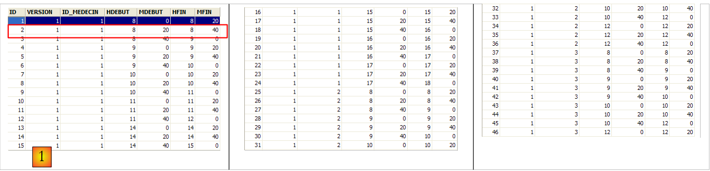 |
- ID: número que identifica la franja horaria —clave primaria de la tabla (línea 8)—
- VERSION: número que identifica el version de la línea en la tabla. Este número se incrementa en 1 cada vez que se realiza una modificación en la línea.
- ID_MEDECIN: número que identifica al médico al que pertenece este intervalo horario – clave externa en la columna MEDECINS(ID).
- HDEBUT: hora de inicio de la franja
- MDEBUT: minutos de inicio del intervalo
- HFIN: hora de fin de la franja
- MFIN: minutos de fin de franja
La segunda línea de la tabla [CRENEAUX] (véase [1] más arriba) indica, por ejemplo, que la franja n.º 2 comienza a las 8:20 y termina a las 8:40 y pertenece al médico n.º 1 (Sra. Marie PELISSIER).
8.3.4. La tabla [RV]
Enumera los RV asignados a cada médico:
 |
- ID: n.º que identifica el RV de forma única – clave primaria
- JOUR: día del RV
- ID_CRENEAU: franja horaria del RV – clave externa en el campo [ID] de la tabla [CRENEAUX] – determina tanto la franja horaria como el médico en cuestión.
- ID_CLIENT: n.º del cliente para el que se realiza la reserva – clave externa en el campo [ID] de la tabla [CLIENTS]
Esta tabla tiene una restricción de unicidad sobre los valores de las columnas unidas (JOUR, ID_CRENEAU):
Si una fila de la tabla [RV] tiene el valor (JOUR1, ID_CRENEAU1) para las columnas (JOUR, ID_CRENEAU), este valor no puede aparecer en ningún otro lugar. De lo contrario, significaría que se han tomado dos RV al mismo tiempo para el mismo médico. Desde el punto de vista de la programación Java, el controlador JDBC de la base de datos lanza un SQLException cuando se produce este caso.
La línea de id igual a 3 (véase [1] más arriba) significa que se ha reservado un RV para la franja n.º 20 y el cliente n.º 4 el 23/08/2006. La tabla [CRENEAUX] nos indica que la franja n.º 20 corresponde al horario de 16:20 a 16:40 y pertenece al médico n.º 1 (Sra. Marie PELISSIER). La tabla [CLIENTS] nos indica que el cliente n.º 4 es la Srta. Brigitte BISTROU.
8.3.5. Creación de la base de datos
Para crear la base de datos [dbrdvmedecins], se proporciona un script [dbrdvmedecins.sql] junto con los ejemplos de este documento [1-3]:
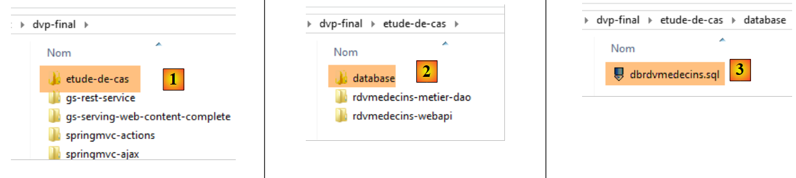 |
Utilizamos la herramienta [PhpMyAdmin] de WampServer:
 |
- en [1], seleccionamos la herramienta [phpMyAdmin] de WampServer;
- en [2], se elige option [Importer];
 |
- en [3], se selecciona el archivo [database/dbrdvmedecins.sql];
- en [4], lo ejecutamos;
- en [5], se crea la base de datos.
8.4. El servicio web / jSON
 |
En la arquitectura anterior, abordamos ahora la construcción del servicio web / jSON creado con el marco Spring MVC. Lo escribiremos en varios pasos:
- primero las capas [métier] y [DAO] (Data Access Object). Aquí utilizaremos Spring Data;
- luego el servicio web jSON sin autenticación. Aquí utilizaremos Spring MVC;
- luego añadiremos la parte de autenticación con Spring Security.
Lo que sigue es una copia del documento [http://tahe.developpez.com/angularjs-spring4/], aunque con algunas modificaciones.
8.4.1. Introducción a Spring Data
Vamos a implementar la capa [DAO] del proyecto con Spring Data, una rama del ecosistema Spring.
 |
En la página web de Spring hay numerosos tutoriales para empezar con Spring [http://spring.io/guides]. Vamos a utilizar uno de ellos para introducir Spring Data. Para ello, utilizamos Spring Tool Suite (STS).
 |
- en [1], importamos uno de los tutoriales de [spring.io/guides];
 |
- en [2], seleccionamos el tutorial [Accessing Data Jpa] que muestra cómo acceder a una base de datos con Spring Data;
- en [3], se elige un proyecto configurado por Maven;
- en [4], el tutorial puede presentarse de dos formas: [initial], que es un version vacío que se rellena siguiendo el tutorial, o [complete], que es el version final del tutorial. Elegimos este último;
- en [5], podemos elegir visualizar el tutorial en un navegador;
- en [6], el proyecto final.
8.4.1.1. La configuración de Maven del proyecto
Las dependencias de Maven del proyecto se configuran en el archivo [pom.xml]:
<groupId>org.springframework</groupId>
<artifactId>gs-accessing-data-jpa</artifactId>
<version>0.1.0</version>
<parent>
<groupId>org.springframework.boot</groupId>
<artifactId>spring-boot-starter-parent</artifactId>
<version>1.1.10.RELEASE</version>
</parent>
<dependencies>
<dependency>
<groupId>org.springframework.boot</groupId>
<artifactId>spring-boot-starter-data-jpa</artifactId>
</dependency>
<dependency>
<groupId>com.h2database</groupId>
<artifactId>h2</artifactId>
</dependency>
</dependencies>
<properties>
<!-- utilizar UTF-8 para todo -->
<project.build.sourceEncoding>UTF-8</project.build.sourceEncoding>
<project.reporting.outputEncoding>UTF-8</project.reporting.outputEncoding>
<start-class>hello.Application</start-class>
</properties>
- líneas 5-9: definen un proyecto Maven padre. Es este el que define la mayor parte de las dependencias del proyecto. Pueden ser suficientes, en cuyo caso no se añaden más, o no, en cuyo caso se añaden las dependencias que faltan;
- líneas 12-15: definen una dependencia de [spring-boot-starter-data-jpa]. Este artefacto contiene las clases de Spring Data;
- líneas 16-19: definen una dependencia de SGBD y H2, que permiten crear y gestionar bases de datos en memoria.
Veamos las clases que aportan estas dependencias:
 | 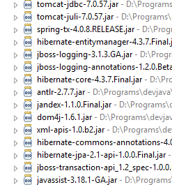 |  |
Hay muchísimas:
- algunas pertenecen al ecosistema Spring (las que empiezan por spring);
- otras pertenecen al ecosistema Hibernate (hibernate, jboss), de las que aquí utilizamos la implementación JPA;
- otras son bibliotecas de pruebas (junit, hamcrest);
- otras son bibliotecas de registros (log4j, logback, slf4j);
Las vamos a conservar todas. Para una aplicación en producción, habría que conservar solo las que sean necesarias.
En la línea 26 del archivo [pom.xml] encontramos la línea:
<start-class>hello.Application</start-class>
Esta línea está relacionada con las siguientes:
<build>
<plugins>
<plugin>
<artifactId>maven-compiler-plugin</artifactId>
</plugin>
<plugin>
<groupId>org.springframework.boot</groupId>
<artifactId>spring-boot-maven-plugin</artifactId>
</plugin>
</plugins>
</build>
Líneas 6-9: el complemento [spring-boot-maven-plugin] permite generar el ejecutable jar de la aplicación. La línea 26 del archivo [pom.xml] designa entonces la clase ejecutable de este jar.
8.4.1.2. La capa [JPA]
El acceso a la base de datos se realiza a través de una capa [JPA], Java Persistence API:
 |
 |
La aplicación es básica y gestiona clients [Customer]. La clase [Customer] forma parte de la capa [JPA] y es la siguiente:
package hello;
import javax.persistence.Entity;
import javax.persistence.GeneratedValue;
import javax.persistence.GenerationType;
import javax.persistence.Id;
@Entity
public class Customer {
@Id
@GeneratedValue(strategy = GenerationType.AUTO)
private long id;
private String firstName;
private String lastName;
protected Customer() {
}
public Customer(String firstName, String lastName) {
this.firstName = firstName;
this.lastName = lastName;
}
@Override
public String toString() {
return String.format("Customer[id=%d, firstName='%s', lastName='%s']", id, firstName, lastName);
}
}
Un cliente tiene un identificador [id], un nombre [firstName] y un apellido [lastName]. Cada instancia [Customer] representa una fila de una tabla de la base de datos.
- línea 8: anotación JPA que hace que la persistencia de las instancias [Customer] (Create, Read, Update, Delete) vaya a ser gestionada por una implementación JPA. Según las dependencias de Maven, se observa que se utiliza la implementación JPA / Hibernate;
- líneas 11-12: anotaciones JPA que asocian el campo [id] a la clave primaria de la tabla [Customer]. La línea 12 indica que la implementación JPA utilizará el método de generación de clave primaria propio del SGBD utilizado, en este caso H2;
No hay otras anotaciones para JPA. Por lo tanto, se utilizarán los valores por defecto:
- la tabla de [Customer] llevará el nombre de la clase, es decir, [Customer];
- las columnas de esta tabla llevarán el nombre de los campos de la clase: [id, firstName, lastName], teniendo en cuenta que no se distingue entre mayúsculas y minúsculas en el nombre de una columna de tabla;
Cabe señalar que en ningún momento se menciona la implementación JPA utilizada.
8.4.1.3. La capa [DAO]
 |
 |
La clase [CustomerRepository] implementa la capa [DAO]. Su código es el siguiente:
package hello;
import java.util.List;
import org.springframework.data.repository.CrudRepository;
public interface CustomerRepository extends CrudRepository<Customer, Long> {
List<Customer> findByLastName(String lastName);
}
Por lo tanto, se trata de una interfaz y no de una clase (línea 7). Extiende la interfaz [CrudRepository], una interfaz de Spring Data (línea 5). Esta interfaz está parametrizada por dos tipos: el primero es el tipo de los elementos gestionados, en este caso el tipo [Customer]; el segundo es el tipo de la clave primaria de los elementos gestionados, en este caso un tipo [Long]. La interfaz [CrudRepository] es la siguiente:
package org.springframework.data.repository;
import java.io.Serializable;
@NoRepositoryBean
public interface CrudRepository<T, ID extends Serializable> extends Repository<T, ID> {
<S extends T> S save(S entity);
<S extends T> Iterable<S> save(Iterable<S> entities);
T findOne(ID id);
boolean exists(ID id);
Iterable<T> findAll();
Iterable<T> findAll(Iterable<ID> ids);
long count();
void delete(ID id);
void delete(T entity);
void delete(Iterable<? extends T> entities);
void deleteAll();
}
Esta interfaz define las operaciones CRUD (Crear – Leer – Actualizar – Eliminar) que se pueden realizar sobre un tipo JPA T:
- línea 8: el método save permite persistir una entidad T en la base de datos. Hace que la entidad se persista con la clave primaria que le ha asignado SGBD. También permite actualizar una entidad T identificada por su clave primaria id. La elección de una u otra acción se realiza en función del valor de la clave primaria id: si este es nulo, se lleva a cabo la operación de persistencia; en caso contrario, se realiza la operación de actualización;
- línea 10: lo mismo, pero para una lista de entidades;
- línea 12: el método findOne permite recuperar una entidad T identificada por su clave primaria id;
- línea 22: el método delete permite eliminar una entidad T identificada por su clave primaria id;
- líneas 24-28: variantes del método [delete];
- línea 16: el método [findAll] permite recuperar todas las entidades persistentes T;
- línea 18: lo mismo, pero limitado a las entidades cuya lista de identificadores se ha pasado;
Volvamos a la interfaz [CustomerRepository]:
package hello;
import java.util.List;
import org.springframework.data.repository.CrudRepository;
public interface CustomerRepository extends CrudRepository<Customer, Long> {
List<Customer> findByLastName(String lastName);
}
- la línea 9 permite recuperar un [Customer] por su nombre [lastName];
Y eso es todo para la capa [DAO]. No hay ninguna clase de implementación de la interfaz anterior. Esta se genera en tiempo de ejecución mediante [Spring Data]. Los métodos de la interfaz [CrudRepository] se implementan automáticamente. En cuanto a los métodos añadidos en la interfaz [CustomerRepository], depende. Volvamos a la definición de [Customer]:
private long id;
private String firstName;
private String lastName;
El método de la línea 9 se implementa automáticamente mediante [Spring Data] porque hace referencia al campo [lastName] (línea 3) de [Customer]. Cuando encuentra un método [findBySomething] en la interfaz que se va a implementar, Spring Data lo implementa mediante la siguiente consulta JPQL (Java Persistence Query Language):
Por lo tanto, el tipo T debe tener un campo llamado [something]. Así, el método
se implementará mediante un código similar al siguiente:
return [em].createQuery("select c from Customer c where c.lastName=:value").setParameter("value",lastName).getResultList()
donde [em] hace referencia al contexto de persistencia JPA. Esto solo es posible si la clase [Customer] tiene un campo llamado [lastName], lo cual es así.
En conclusión, en los casos sencillos, Spring Data nos permite implementar la capa [DAO] con una simple interfaz.
8.4.1.4. La capa [console]
 |
 |
La clase [Application] es la siguiente:
package hello;
import java.util.List;
import org.springframework.boot.SpringApplication;
import org.springframework.boot.autoconfigure.EnableAutoConfiguration;
import org.springframework.context.ConfigurableApplicationContext;
import org.springframework.context.annotation.Configuration;
@Configuration
@EnableAutoConfiguration
public class Application {
public static void main(String[] args) {
ConfigurableApplicationContext context = SpringApplication.run(Application.class);
CustomerRepository repository = context.getBean(CustomerRepository.class);
// guardar un par de customers
repository.save(new Customer("Jack", "Bauer"));
repository.save(new Customer("Chloe", "O'Brian"));
repository.save(new Customer("Kim", "Bauer"));
repository.save(new Customer("David", "Palmer"));
repository.save(new Customer("Michelle", "Dessler"));
// recoger todos los customers
Iterable<Customer> customers = repository.findAll();
System.out.println("Customers found with findAll():");
System.out.println("-------------------------------");
for (Customer customer : customers) {
System.out.println(customer);
}
System.out.println();
// recoger un cliente individual por ID
Customer customer = repository.findOne(1L);
System.out.println("Customer found with findOne(1L):");
System.out.println("--------------------------------");
System.out.println(customer);
System.out.println();
// recoger customers por last name
List<Customer> bauers = repository.findByLastName("Bauer");
System.out.println("Customer found with findByLastName('Bauer'):");
System.out.println("--------------------------------------------");
for (Customer bauer : bauers) {
System.out.println(bauer);
}
context.close();
}
}
- la línea 10: indica que la clase sirve para configurar Spring. Las versiones recientes de Spring pueden configurarse en Java en lugar de en XML. Ambos métodos pueden utilizarse simultáneamente. En el código de una clase que tiene la anotación [Configuration] normalmente se encuentran beans de Spring, es decir, definiciones de clases que deben instanciarse. Aquí no se define ningún bean. Cabe recordar que, cuando se trabaja con un SGBD, deben definirse varios beans de Spring:
- un [EntityManagerFactory] que define la implementación JPA que se va a utilizar,
- un [DataSource] que define la fuente de datos que se va a utilizar,
- un [TransactionManager] que define el gestor de transacciones que se va a utilizar;
Aquí no se define ninguno de estos beans.
- Línea 11: la anotación [EnableAutoConfiguration] es una anotación procedente del proyecto [Spring Boot] (líneas 5-6). Esta anotación solicita a Spring Boot, a través de la clase [SpringApplication] (línea 16), que configure la aplicación en función de las bibliotecas encontradas en su Classpath. Dado que las bibliotecas de Hibernate se encuentran en el Classpath, el bean [entityManagerFactory] se implementará con Hibernate. Dado que la biblioteca SGBD H2 se encuentra en el Classpath, el bean [dataSource] se implementará con H2. En el bean [dataSource], también hay que definir el usuario y su contraseña. Aquí Spring Boot utilizará el administrador por defecto de H2, que no tiene contraseña. Dado que la biblioteca [spring-tx] se encuentra en el Classpath, se utilizará el gestor de transacciones de Spring.
Por otra parte, se escaneará la carpeta en la que se encuentra la clase [Application] en busca de beans reconocidos implícitamente por Spring o definidos explícitamente mediante anotaciones de Spring. Así, se inspeccionarán las clases [Customer] y [CustomerRepository]. Dado que la primera tiene la anotación [@Entity], se catalogará como entidad que debe gestionar Hibernate. Dado que la segunda extiende la interfaz [CrudRepository], se registrará como bean de Spring.
Examinemos las líneas 16-17 del código:
ConfigurableApplicationContext context = SpringApplication.run(Application.class);
CustomerRepository repository = context.getBean(CustomerRepository.class);
- línea 16: se ejecuta el método estático [run] de la clase [SpringApplication] del proyecto Spring Boot. Su parámetro es la clase que tiene una anotación [Configuration] o [EnableAutoConfiguration]. A continuación, se llevará a cabo todo lo explicado anteriormente. El resultado es un contexto de aplicación Spring, es decir, un conjunto de beans gestionados por Spring;
- línea 17: se solicita a este contexto Spring un bean que implemente la interfaz [CustomerRepository]. Aquí recuperamos la clase generada por Spring Data para implementar esta interfaz.
Las operaciones siguientes solo utilizan los métodos del bean que implementa la interfaz [CustomerRepository]. Cabe destacar, en la línea 50, que el contexto se cierra. Los resultados de la consola son los siguientes:
- líneas 1-8: el logotipo del proyecto Spring Boot;
- línea 9: se ejecuta la clase [hello.Application];
- línea 10: [AnnotationConfigApplicationContext] es una clase que implementa la interfaz [ApplicationContext] de Spring. Se trata de un contenedor de beans;
- línea 11: el bean [entityManagerFactory] se implementa con la clase [LocalContainerEntityManagerFactory], una clase de Spring;
- línea 15: aparece [Hibernate]. Se ha elegido esta implementación JPA;
- línea 19: un dialecto de Hibernate es la variante SQL que se utilizará con SGBD. Aquí, el dialecto [H2Dialect] indica que Hibernate va a trabajar con SGBD y H2;
- líneas 21-22: se crea la base de datos. Se crea la tabla [CUSTOMER]. Esto significa que Hibernate se ha configurado para generar las tablas a partir de las definiciones JPA; aquí, la definición JPA de la clase [Customer];
- líneas 27-31: los cinco clients insertados;
- líneas 33-35: resultado del método [findOne] de la interfaz;
- líneas 37-40: resultados del método [findByLastName];
- líneas 41 y siguientes: registros del cierre del contexto Spring.
8.4.1.5. Configuración manual del proyecto Spring Data
Duplicamos el proyecto anterior en el proyecto [gs-accessing-data-jpa-2]:
 |
En este nuevo proyecto, no vamos a basarnos en la configuración automática realizada por Spring Boot. La haremos manualmente. Esto puede resultar útil si las configuraciones predeterminadas no nos convencen.
En primer lugar, vamos a especificar las dependencias necesarias en el archivo [pom.xml]:
...
<dependencies>
<!-- Spring Core -->
<dependency>
<groupId>org.springframework</groupId>
<artifactId>spring-core</artifactId>
<version>4.1.2.RELEASE</version>
</dependency>
<dependency>
<groupId>org.springframework</groupId>
<artifactId>spring-context</artifactId>
<version>4.1.2.RELEASE</version>
</dependency>
<dependency>
<groupId>org.springframework</groupId>
<artifactId>spring-beans</artifactId>
<version>4.1.2.RELEASE</version>
</dependency>
<!-- Transacciones de Spring -->
<dependency>
<groupId>org.springframework</groupId>
<artifactId>spring-orm</artifactId>
<version>4.1.2.RELEASE</version>
</dependency>
<dependency>
<groupId>org.springframework</groupId>
<artifactId>spring-aop</artifactId>
<version>4.1.2.RELEASE</version>
</dependency>
<!-- Spring ORM -->
<dependency>
<groupId>org.springframework</groupId>
<artifactId>spring-tx</artifactId>
<version>4.1.2.RELEASE</version>
</dependency>
<!-- Spring Data -->
<dependency>
<groupId>org.springframework.data</groupId>
<artifactId>spring-data-jpa</artifactId>
<version>1.7.1.RELEASE</version>
</dependency>
<!-- Spring Boot -->
<dependency>
<groupId>org.springframework.boot</groupId>
<artifactId>spring-boot</artifactId>
<version>1.1.10.RELEASE</version>
</dependency>
<!-- Hibernate -->
<dependency>
<groupId>org.hibernate</groupId>
<artifactId>hibernate-entitymanager</artifactId>
<version>4.3.4.Final</version>
</dependency>
<!-- H2 Base de datos -->
<dependency>
<groupId>com.h2database</groupId>
<artifactId>h2</artifactId>
<version>1.4.178</version>
</dependency>
<!-- Commons DBCP -->
<dependency>
<groupId>commons-dbcp</groupId>
<artifactId>commons-dbcp</artifactId>
<version>1.4</version>
</dependency>
<dependency>
<groupId>commons-pool</groupId>
<artifactId>commons-pool</artifactId>
<version>1.6</version>
</dependency>
</dependencies>
...
</project>
- líneas 2-18: las bibliotecas básicas de Spring;
- líneas 19-29: las bibliotecas de Spring para gestionar transacciones con una base de datos;
- líneas 30-35: la biblioteca de Spring para trabajar con un ORM (Object Relational Mapper);
- líneas 36-41: Spring Data utilizado para acceder a la base de datos;
- líneas 42-47: Spring Boot para iniciar la aplicación;
- líneas 54-59: el SGBD H2;
- líneas 60-70: las bases de datos suelen utilizarse con grupos de conexiones abiertas que evitan la apertura y el cierre repetidos de conexiones. En este caso, la implementación utilizada es la de [commons-dbcp];
También en [pom.xml], se modifica el nombre de la clase ejecutable:
<properties>
...
<start-class>demo.console.Main</start-class>
</properties>
En el nuevo proyecto, la entidad [Customer] y la interfaz [CustomerRepository] no cambian. Vamos a modificar la clase [Application], que se dividirá en dos clases:
- [Config], que será la clase de configuración:
- [Main], que será la clase ejecutable;
 |
La clase ejecutable [Main] es la misma que la anterior, pero sin las anotaciones de configuración:
package demo.console;
import java.util.List;
import org.springframework.boot.SpringApplication;
import org.springframework.context.ConfigurableApplicationContext;
import demo.config.Config;
import demo.entities.Customer;
import demo.repositories.CustomerRepository;
public class Main {
public static void main(String[] args) {
ConfigurableApplicationContext context = SpringApplication.run(Config.class);
CustomerRepository repository = context.getBean(CustomerRepository.class);
...
context.close();
}
}
- línea 12: la clase [Main] ya no tiene anotaciones de configuración;
- línea 16: la aplicación se inicia con Spring Boot. El parámetro [Config.class] es la nueva clase de configuración del proyecto;
La clase [Config] que configura el proyecto es la siguiente:
package demo.config;
import javax.persistence.EntityManagerFactory;
import javax.sql.DataSource;
import org.apache.commons.dbcp.BasicDataSource;
import org.springframework.context.annotation.Bean;
import org.springframework.context.annotation.Configuration;
import org.springframework.data.jpa.repository.config.EnableJpaRepositories;
import org.springframework.orm.jpa.JpaTransactionManager;
import org.springframework.orm.jpa.JpaVendorAdapter;
import org.springframework.orm.jpa.LocalContainerEntityManagerFactoryBean;
import org.springframework.orm.jpa.vendor.Database;
import org.springframework.orm.jpa.vendor.HibernateJpaVendorAdapter;
import org.springframework.transaction.PlatformTransactionManager;
import org.springframework.transaction.annotation.EnableTransactionManagement;
//@ComponentScan(basePackages = { "demo" })
//@EntityScan(basePackages = { "demo.entities" })
@EnableTransactionManagement
@EnableJpaRepositories(basePackages = { "demo.repositories" })
@Configuration
public class Config {
// la fuente de datos H2
@Bean
public DataSource dataSource() {
BasicDataSource dataSource = new BasicDataSource();
dataSource.setDriverClassName("org.h2.Driver");
dataSource.setUrl("jdbc:h2:./demo");
dataSource.setUsername("sa");
dataSource.setPassword("");
return dataSource;
}
// el proveedor JPA
@Bean
public JpaVendorAdapter jpaVendorAdapter() {
HibernateJpaVendorAdapter hibernateJpaVendorAdapter = new HibernateJpaVendorAdapter();
hibernateJpaVendorAdapter.setShowSql(false);
hibernateJpaVendorAdapter.setGenerateDdl(true);
hibernateJpaVendorAdapter.setDatabase(Database.H2);
return hibernateJpaVendorAdapter;
}
// EntityManagerFactory
@Bean
public EntityManagerFactory entityManagerFactory(JpaVendorAdapter jpaVendorAdapter, DataSource dataSource) {
LocalContainerEntityManagerFactoryBean factory = new LocalContainerEntityManagerFactoryBean();
factory.setJpaVendorAdapter(jpaVendorAdapter);
factory.setPackagesToScan("demo.entities");
factory.setDataSource(dataSource);
factory.afterPropertiesSet();
return factory.getObject();
}
// Gestor de transacciones
@Bean
public PlatformTransactionManager transactionManager(EntityManagerFactory entityManagerFactory) {
JpaTransactionManager txManager = new JpaTransactionManager();
txManager.setEntityManagerFactory(entityManagerFactory);
return txManager;
}
}
- línea 22: la anotación [@Configuration] convierte la clase [Config] en una clase de configuración de Spring;
- línea 21: la anotación [@EnableJpaRepositories] permite designar las carpetas donde se encuentran las interfaces Spring Data y [CrudRepository]. Estas interfaces se convertirán en componentes Spring y estarán disponibles en su contexto;
- línea 20: la anotación [@EnableTransactionManagement] indica que los métodos de las interfaces [CrudRepository] deben ejecutarse dentro de una transacción;
- línea 19: la anotación [@EntityScan] permite especificar las carpetas en las que deben buscarse las entidades JPA. Aquí se ha puesto entre comentarios, porque esta información se ha proporcionado explícitamente en la línea 50. Esta anotación debería estar presente si se utiliza el modo [@EnableAutoConfiguration] y las entidades JPA no se encuentran en la misma carpeta que la clase de configuración;
- línea 18: la anotación [@ComponentScan] permite enumerar las carpetas en las que se deben buscar los componentes Spring. Los componentes Spring son clases etiquetadas con anotaciones Spring como @Service, @Component, @Controller, etc. Aquí no hay más que las definidas dentro de la clase [Config], por lo que la anotación se ha comentado;
- líneas 25-33: definen la fuente de datos, la base de datos H2. Es la anotación @Bean de la línea 25 la que convierte al objeto creado por este método en un componente gestionado por Spring. El nombre del método puede ser cualquiera. Sin embargo, debe llamarse [dataSource] si el EntityManagerFactory de la línea 47 no existe y se define mediante autoconfiguración;
- línea 29: la base de datos se llamará [demo] y se generará en la carpeta del proyecto;
- líneas 36-43: definen la implementación JPA utilizada, en este caso una implementación de Hibernate. El nombre del método puede ser cualquiera;
- línea 39: sin registros SQL;
- línea 30: la base de datos se creará si no existe;
- líneas 46-54: definen el EntityManagerFactory que gestionará la persistencia JPA. El método debe llamarse obligatoriamente [entityManagerFactory];
- línea 47: el método recibe dos parámetros del tipo de los dos beans definidos anteriormente. Estos serán construidos e inyectados por Spring como parámetros del método;
- línea 49: establece la implementación JPA utilizada;
- línea 50: establece las carpetas donde se encuentran las entidades JPA;
- línea 51: establece la fuente de datos que se va a gestionar;
- líneas 57-62: el gestor de transacciones. El método debe llamarse obligatoriamente [transactionManager]. Recibe como parámetro el bean de las líneas 46-54;
- línea 60: el gestor de transacciones se asocia a EntityManagerFactory;
Los métodos anteriores se pueden definir en cualquier orden.
La ejecución del proyecto da los mismos resultados. Aparece un nuevo archivo en la carpeta del proyecto, el de la base de datos H2:
 |
Por último, podemos prescindir de Spring Boot. Creamos una segunda clase ejecutable [Main2]:
 |
La clase [Main2] tiene el siguiente código:
package demo.console;
import java.util.List;
import org.springframework.context.annotation.AnnotationConfigApplicationContext;
import demo.config.Config;
import demo.entities.Customer;
import demo.repositories.CustomerRepository;
public class Main2 {
public static void main(String[] args) {
AnnotationConfigApplicationContext context = new AnnotationConfigApplicationContext(Config.class);
CustomerRepository repository = context.getBean(CustomerRepository.class);
....
context.close();
}
}
- línea 15: la clase de configuración [Config] ahora es utilizada por la clase Spring [AnnotationConfigApplicationContext]. En la línea 5 se puede ver que ya no hay dependencias con respecto a Spring Boot.
La ejecución da los mismos resultados que antes.
8.4.1.6. Creación de un archivo ejecutable
Para crear un archivo ejecutable del proyecto, se puede proceder de la siguiente manera:
 |
- en [1]: se crea una configuración de ejecución;
- en [2]: de tipo [Java Application]
- en [3]: se indica el proyecto que se va a ejecutar (utilice el botón «Browse»);
- en [4]: se indica la clase que se va a ejecutar;
- en [5]: el nombre de la configuración de ejecución; puede ser cualquiera;
 |
- en [6]: se exporta el proyecto;
- en [7]: en forma de archivo ejecutable JAR;
- en [8]: indica la ruta y el nombre del archivo ejecutable que se va a crear;
- en [9]: el nombre de la configuración de ejecución creada en [5];
Una vez hecho esto, abrimos una consola en la carpeta que contiene el archivo ejecutable:
El archivo se ejecuta de la siguiente manera:
.....\dist>java -jar gs-accessing-data-jpa-2.jar
Los resultados obtenidos en la consola son los siguientes:
8.4.1.7. Crear un nuevo proyecto Spring Data
Para crear un esqueleto de proyecto Spring Data, se puede proceder de la siguiente manera:
 |
- en [1], se crea un nuevo proyecto;
- en [2]: de tipo [Spring Starter Project];
- el proyecto generado será un proyecto Maven. En [3], se indica el nombre del grupo del proyecto;
- en [4]: se indica el nombre del artefacto (un jar en este caso) que se creará al compilar el proyecto;
- en [5]: se indica el paquete de la clase ejecutable que se va a crear en el proyecto;
- en [6]: el nombre Eclipse del proyecto; puede ser cualquiera (no tiene por qué ser idéntico a [4]);
- en [7]: se indica que se va a crear un proyecto con una capa [JPA]. Las dependencias necesarias para dicho proyecto se incluirán entonces en el archivo [pom.xml];
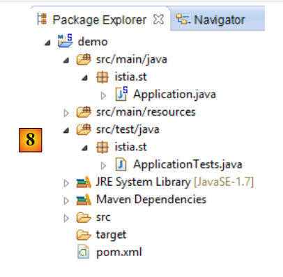 |
- en [8]: el proyecto creado;
El archivo [pom.xml] incluye las dependencias necesarias para un proyecto JPA:
<parent>
<groupId>org.springframework.boot</groupId>
<artifactId>spring-boot-starter-parent</artifactId>
<version>1.2.0.RELEASE</version>
<relativePath/> <!-- búsqueda de elemento principal en el repositorio -->
</parent>
<dependencies>
<dependency>
<groupId>org.springframework.boot</groupId>
<artifactId>spring-boot-starter-data-jpa</artifactId>
</dependency>
<dependency>
<groupId>org.springframework.boot</groupId>
<artifactId>spring-boot-starter-test</artifactId>
<scope>test</scope>
</dependency>
</dependencies>
- líneas 9-12: las dependencias necesarias para JPA – incluirán [Spring Data];
- líneas 13-17: las dependencias necesarias para las pruebas JUnit integradas con Spring;
La clase ejecutable [Application] no hace nada, pero está preconfigurada:
package istia.st;
import org.springframework.boot.SpringApplication;
import org.springframework.boot.autoconfigure.EnableAutoConfiguration;
import org.springframework.context.annotation.ComponentScan;
import org.springframework.context.annotation.Configuration;
@Configuration
@ComponentScan
@EnableAutoConfiguration
public class Application {
public static void main(String[] args) {
SpringApplication.run(Application.class, args);
}
}
La clase de pruebas [ApplicationTests] no hace nada, pero está preconfigurada:
package istia.st;
import org.junit.Test;
import org.junit.runner.RunWith;
import org.springframework.boot.test.SpringApplicationConfiguration;
import org.springframework.test.context.junit4.SpringJUnit4ClassRunner;
@RunWith(SpringJUnit4ClassRunner.class)
@SpringApplicationConfiguration(classes = Application.class)
public class ApplicationTests {
@Test
public void contextLoads() {
}
}
- línea 9: la anotación [@SpringApplicationConfiguration] permite utilizar el archivo de configuración [Application]. De este modo, la clase de prueba se beneficiará de todos los beans que se definan en dicho archivo;
- línea 8: la anotación [@RunWith] permite la integración de Spring con JUnit: la clase podrá ejecutarse como una prueba JUnit. [@RunWith] es una anotación JUnit (línea 4), mientras que la clase [SpringJUnit4ClassRunner] es una clase Spring (línea 6);
Ahora que tenemos un esqueleto de aplicación JPA, podemos completarlo para escribir el proyecto de la capa de persistencia del servidor de nuestra aplicación de gestión de citas.
8.4.2. El proyecto Eclipse del servidor
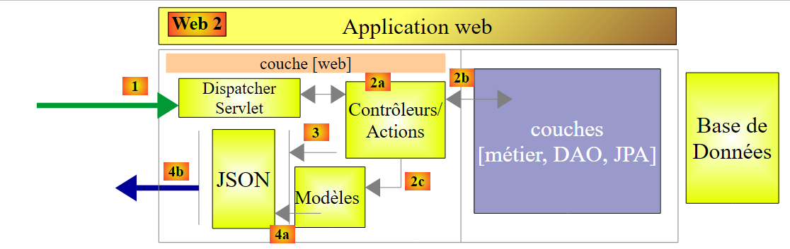 |
 |
Los elementos principales del proyecto son los siguientes:
- [pom.xml]: archivo de configuración Maven del proyecto;
- [rdvmedecins.entities]: las entidades JPA;
- [rdvmedecins.repositories]: las interfaces Spring Data de acceso a las entidades JPA;
- [rdvmedecins.metier]: la capa [métier];
- [rdvmedecins.domain]: las entidades manipuladas por la capa [métier];
- [rdvmdecins.config]: las clases de configuración de la capa de persistencia;
- [rdvmedecins.boot]: una aplicación de consola básica;
8.4.3. La configuración de Maven
 |  | 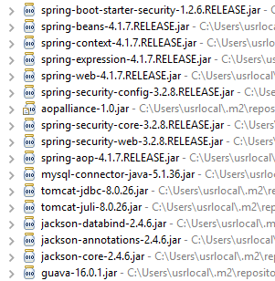 |
El archivo [pom.xml] del proyecto es el siguiente:
<?xml version="1.0" encoding="UTF-8"?>
<project xmlns="http://maven.apache.org/POM/4.0.0" xsi:schemaLocation="http://maven.apache.org/POM/4.0.0 http://maven.apache.org/maven-v4_0_0.xsd"
xmlns:xsi="http://www.w3.org/2001/XMLSchema-instance">
<modelVersion>4.0.0</modelVersion>
<groupId>istia.st.spring4.rdvmedecins</groupId>
<artifactId>rdvmedecins-metier-dao</artifactId>
<version>0.0.1-SNAPSHOT</version>
<parent>
<groupId>org.springframework.boot</groupId>
<artifactId>spring-boot-starter-parent</artifactId>
<version>1.2.6.RELEASE</version>
</parent>
<dependencies>
<!-- Spring Data JPA -->
<dependency>
<groupId>org.springframework.boot</groupId>
<artifactId>spring-boot-starter-data-jpa</artifactId>
</dependency>
<!-- Prueba de Spring -->
<dependency>
<groupId>org.springframework.boot</groupId>
<artifactId>spring-boot-starter-test</artifactId>
<scope>test</scope>
</dependency>
<!-- Seguridad de Spring -->
<dependency>
<groupId>org.springframework.boot</groupId>
<artifactId>spring-boot-starter-security</artifactId>
</dependency>
<!-- controlador JDBC / MySQL -->
<dependency>
<groupId>mysql</groupId>
<artifactId>mysql-connector-java</artifactId>
</dependency>
<!-- Tomcat JDBC -->
<dependency>
<groupId>org.apache.tomcat</groupId>
<artifactId>tomcat-jdbc</artifactId>
</dependency>
<!-- Mapeador jSON -->
<dependency>
<groupId>com.fasterxml.jackson.core</groupId>
<artifactId>jackson-databind</artifactId>
</dependency>
<!-- Googe Guava -->
<dependency>
<groupId>com.google.guava</groupId>
<artifactId>guava</artifactId>
<version>16.0.1</version>
</dependency>
</dependencies>
<properties>
<!-- utiliza UTF-8 para todo -->
<project.build.sourceEncoding>UTF-8</project.build.sourceEncoding>
<project.reporting.outputEncoding>UTF-8</project.reporting.outputEncoding>
<start-class>rdvmedecins.boot.Boot</start-class>
<java.version>1.8</java.version>
</properties>
<build>
<plugins>
<plugin>
<groupId>org.springframework.boot</groupId>
<artifactId>spring-boot-maven-plugin</artifactId>
</plugin>
</plugins>
</build>
<repositories>
<repository>
<id>spring-milestones</id>
<name>Spring Milestones</name>
<url>http://repo.spring.io/libs-milestone</url>
<snapshots>
<enabled>false</enabled>
</snapshots>
</repository>
<repository>
<id>org.jboss.repository.releases</id>
<name>JBoss Maven Release Repository</name>
<url>https://repository.jboss.org/nexus/content/repositories/releases</url>
<snapshots>
<enabled>false</enabled>
</snapshots>
</repository>
</repositories>
<pluginRepositories>
<pluginRepository>
<id>spring-milestones</id>
<name>Spring Milestones</name>
<url>http://repo.spring.io/libs-milestone</url>
<snapshots>
<enabled>false</enabled>
</snapshots>
</pluginRepository>
</pluginRepositories>
</project>
- líneas 8-12: el proyecto se basa en el proyecto principal [spring-boot-starter-parent]. Para las dependencias ya presentes en el proyecto padre, no se especifica version. Se utilizará el version definido en el proyecto padre. Las demás dependencias se declaran de forma habitual;
- líneas 15-18: para Spring Data;
- líneas 20-24: para las pruebas JUnit;
- líneas 26-29: para la biblioteca Spring Security, cuya capa [DAO] utiliza una de las clases de cifrado de contraseñas;
- líneas 31-34: controlador JDBC de SGBD MySQL5;
- líneas 36-39: grupo de conexiones Tomcat JDBC. Un grupo de conexiones agrupa las conexiones abiertas a una base de datos. Cuando el código quiere abrir una conexión, se solicita al grupo. Cuando el código cierra la conexión, esta no se cierra, sino que se devuelve al grupo. Todo esto se realiza de forma transparente a nivel del código. Se gana en rendimiento, ya que la apertura y el cierre repetidos de una conexión suponen un coste de tiempo. Aquí, el grupo de conexiones establece un número determinado de conexiones con la base de datos desde su instanciación. A continuación, no hay ni apertura ni cierre de conexiones, salvo si el número de conexiones almacenadas en el grupo resulta insuficiente. En ese caso, el grupo crea automáticamente nuevas conexiones;
- líneas 41-44: biblioteca Jackson para la gestión de jSON;
- líneas 46-50: biblioteca de Google para la gestión de colecciones;
8.4.4. Las entidades JPA
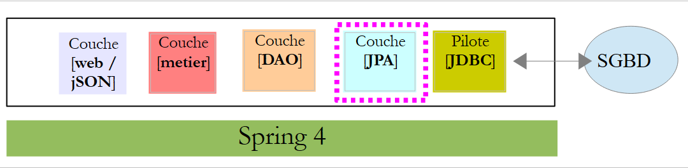 |
Las entidades JPA son los objetos que encapsularán las filas de las tablas de la base de datos.
 |
La clase [AbstractEntity] es la clase padre de las entidades [Personne, Creneau, Rv]. Su definición es la siguiente:
package rdvmedecins.entities;
import java.io.Serializable;
import javax.persistence.GeneratedValue;
import javax.persistence.GenerationType;
import javax.persistence.Id;
import javax.persistence.MappedSuperclass;
import javax.persistence.Version;
@MappedSuperclass
public class AbstractEntity implements Serializable {
private static final long serialVersionUID = 1L;
@Id
@GeneratedValue(strategy = GenerationType.IDENTITY)
protected Long id;
@Version
protected Long version;
@Override
public int hashCode() {
int hash = 0;
hash += (id != null ? id.hashCode() : 0);
return hash;
}
// inicialización
public AbstractEntity build(Long id, Long version) {
this.id = id;
this.version = version;
return this;
}
@Override
public boolean equals(Object entity) {
String class1 = this.getClass().getName();
String class2 = entity.getClass().getName();
if (!class2.equals(class1) || entity==null) {
return false;
}
AbstractEntity other = (AbstractEntity) entity;
return this.id.longValue() == other.id.longValue();
}
// getters y setters
..
}
- línea 11: la anotación [@MappedSuperclass] indica que la clase anotada es padre de las entidades JPA y [@Entity];
- líneas 15-17: definen la clave primaria [id] de cada entidad. Es la anotación [@Id] la que convierte el campo [id] en una clave primaria. La anotación [@GeneratedValue(strategy = GenerationType.IDENTITY)] indica que el valor de esta clave primaria es generado por SGBD y que se impone el modo de generación [IDENTITY]. Para SGBD MySQL, esto significa que las claves primarias serán generadas por SGBD con el atributo [AUTO_INCREMENT]
- líneas 18-19: definen el version de cada entidad. La implementación JPA incrementará este número de version cada vez que se modifique la entidad. Este número sirve para impedir la actualización simultánea de la entidad por parte de dos usuarios diferentes: dos usuarios, U1 y U2, leen la entidad E con un número de version igual a V1. U1 modifica E y guarda esta modificación en la base de datos: el n.º de version pasa entonces a V1+1. U2 modifica a su vez E y persiste esta modificación en la base: recibirá una excepción porque tiene un version (V1) diferente al de la base de datos (V1+1);
- líneas 29-33: el método [build] permite inicializar los dos campos de [AbstractEntity]. Este método devuelve la referencia de la instancia [AbstractEntity] así inicializada;
- líneas 36-44: se redefine el método [equals] de la clase: dos entidades se considerarán iguales si tienen el mismo nombre de clase y el mismo identificador id;
- líneas 21-26: cuando se redefine el método [equals] de una clase, es necesario redefinir su método [hashCode] (líneas 21-26). La regla es que dos entidades consideradas iguales por el método [equals] deben tener entonces el mismo [hashCode]. Aquí, el [hashCode] de una entidad es igual a su clave primaria [id]. El [hashCode] de una clase se utiliza, en particular, en la gestión de diccionarios cuyos valores son instancias de la clase;
La entidad [Personne] es la clase padre de las entidades [Medecin] y [Client]:
package rdvmedecins.entities;
import javax.persistence.Column;
import javax.persistence.MappedSuperclass;
@MappedSuperclass
public class Personne extends AbstractEntity {
private static final long serialVersionUID = 1L;
// atributos de una persona
@Column(length = 5)
private String titre;
@Column(length = 20)
private String nom;
@Column(length = 20)
private String prenom;
// constructor por defecto
public Personne() {
}
// constructor con parámetros
public Personne(String titre, String nom, String prenom) {
this.titre = titre;
this.nom = nom;
this.prenom = prenom;
}
// toString
public String toString() {
return String.format("Personne[%s, %s, %s, %s, %s]", id, version, titre, nom, prenom);
}
// getters y setters
...
}
- línea 6: la anotación [@MappedSuperclass] indica que la clase anotada es la clase principal de las entidades JPA y [@Entity];
- líneas 10-15: una persona tiene un tratamiento (Melle), un nombre (Jacqueline) y un apellido (Tatou). No se proporciona información sobre las columnas de la tabla. Por lo tanto, por defecto tendrán los mismos nombres que los campos;
La entidad [Medecin] es la siguiente:
package rdvmedecins.entities;
import javax.persistence.Entity;
import javax.persistence.Table;
@Entity
@Table(name = "medecins")
public class Medecin extends Personne {
private static final long serialVersionUID = 1L;
// constructor por defecto
public Medecin() {
}
// constructor con parámetros
public Medecin(String titre, String nom, String prenom) {
super(titre, nom, prenom);
}
public String toString() {
return String.format("Medecin[%s]", super.toString());
}
}
- línea 6: la clase es una entidad JPA;
- línea 7: asociada a la tabla [MEDECINS] de la base de datos;
- línea 8: la entidad [Medecin] deriva de la entidad [Personne];
Un médico se puede inicializar de la siguiente manera:
Si, además, se desea asignarle un identificador y un version, se podrá escribir:
donde el método [build] es el definido en [AbstractEntity].
La entidad [Client] es la siguiente:
package rdvmedecins.entities;
import javax.persistence.Entity;
import javax.persistence.Table;
@Entity
@Table(name = "clients")
public class Client extends Personne {
private static final long serialVersionUID = 1L;
// fabricante predeterminado
public Client() {
}
// constructor con parámetros
public Client(String titre, String nom, String prenom) {
super(titre, nom, prenom);
}
// identidad
public String toString() {
return String.format("Client[%s]", super.toString());
}
}
- línea 6: la clase es una entidad JPA;
- línea 7: asociada a la tabla [CLIENTS] de la base de datos;
- línea 8: la entidad [Client] deriva de la entidad [Personne];
La entidad [Creneau] es la siguiente:
package rdvmedecins.entities;
import javax.persistence.Column;
import javax.persistence.Entity;
import javax.persistence.FetchType;
import javax.persistence.JoinColumn;
import javax.persistence.ManyToOne;
import javax.persistence.Table;
@Entity
@Table(name = "creneaux")
public class Creneau extends AbstractEntity {
private static final long serialVersionUID = 1L;
// características de una franja horaria de RV
private int hdebut;
private int mdebut;
private int hfin;
private int mfin;
// una franja horaria está vinculada a un médico
@ManyToOne(fetch = FetchType.LAZY)
@JoinColumn(name = "id_medecin")
private Medecin medecin;
// clave externa
@Column(name = "id_medecin", insertable = false, updatable = false)
private long idMedecin;
// constructor por defecto
public Creneau() {
}
// constructor con parámetros
public Creneau(Medecin medecin, int hdebut, int mdebut, int hfin, int mfin) {
this.medecin = medecin;
this.hdebut = hdebut;
this.mdebut = mdebut;
this.hfin = hfin;
this.mfin = mfin;
}
// toString
public String toString() {
return String.format("Créneau[%d, %d, %d, %d:%d, %d:%d]", id, version, idMedecin, hdebut, mdebut, hfin, mfin);
}
// clave externa
public long getIdMedecin() {
return idMedecin;
}
// setters - getters
...
}
- línea 10: la clase es una entidad JPA;
- línea 11: asociada a la tabla [CRENEAUX] de la base de datos;
- línea 12: la entidad [Creneau] deriva de laentidad [AbstractEntity] y, por lo tanto, hereda el identificador [id] y el de version [version];
- línea 16: hora de inicio de la franja horaria (14);
- línea 17: minutos de inicio del intervalo (20);
- línea 18: hora de finalización del intervalo (14);
- línea 19: minutos de finalización de la franja horaria (40);
- líneas 22-24: el médico propietario de la franja horaria. La tabla [CRENEAUX] tiene una clave externa en la tabla [MEDECINS]. Esta relación se materializa en las líneas 22-24;
- línea 22: la anotación [@ManyToOne] indica una relación de varios (franjas horarias) a uno (médico). El atributo [fetch=FetchType.LAZY] indica que, cuando se solicita una entidad [Creneau] al contexto de persistencia y esta debe buscarse en la base de datos, la entidad [Medecin] no se devuelve junto con ella. La ventaja de este modo es que la entidad [Medecin] solo se busca si el desarrollador lo solicita. De este modo, se ahorra memoria y se gana en rendimiento;
- línea 23: indica el nombre de la columna de clave externa en la tabla [CRENEAUX];
- líneas 27-28: la clave externa de la tabla [MEDECINS];
- línea 27: la columna [ID_MEDECIN] ya se ha utilizado en la línea 23. Esto significa que puede modificarse de dos formas diferentes, lo que no admite la norma JPA. Por lo tanto, se añaden los atributos [insertable = false, updatable = false], lo que hace que la columna solo se pueda leer;
La entidad [Rv] es la siguiente:
package rdvmedecins.entities;
import java.util.Date;
import javax.persistence.Column;
import javax.persistence.Entity;
import javax.persistence.FetchType;
import javax.persistence.JoinColumn;
import javax.persistence.ManyToOne;
import javax.persistence.Table;
import javax.persistence.Temporal;
import javax.persistence.TemporalType;
@Entity
@Table(name = "rv")
public class Rv extends AbstractEntity {
private static final long serialVersionUID = 1L;
// características de un Rv
@Temporal(TemporalType.DATE)
private Date jour;
// un rv está vinculado a un cliente
@ManyToOne(fetch = FetchType.LAZY)
@JoinColumn(name = "id_client")
private Client client;
// un rv está vinculado a una franja horaria
@ManyToOne(fetch = FetchType.LAZY)
@JoinColumn(name = "id_creneau")
private Creneau creneau;
// claves externas
@Column(name = "id_client", insertable = false, updatable = false)
private long idClient;
@Column(name = "id_creneau", insertable = false, updatable = false)
private long idCreneau;
// fabricante por defecto
public Rv() {
}
// con parámetros
public Rv(Date jour, Client client, Creneau creneau) {
this.jour = jour;
this.client = client;
this.creneau = creneau;
}
// toString
public String toString() {
return String.format("Rv[%d, %s, %d, %d]", id, jour, client.id, creneau.id);
}
// claves externas
public long getIdCreneau() {
return idCreneau;
}
public long getIdClient() {
return idClient;
}
// getters y setters
...
}
- línea 14: la clase es una entidad JPA;
- línea 15: asociada a la tabla [RV] de la base de datos;
- línea 16: la entidad [Rv] deriva de laentidad [AbstractEntity] y, por lo tanto, hereda el identificador [id] y de version [version];
- línea 21: la fecha de la cita;
- línea 20: el tipo [Date] de Java contiene tanto una fecha como una hora. Aquí se especifica que solo se utiliza la fecha;
- líneas 24-26: el cliente para el que se ha concertado esta cita. La tabla [RV] tiene una clave externa en la tabla [CLIENTS]. Esta relación se materializa en las líneas 24-26;
- líneas 29-31: el intervalo horario de la cita. La tabla [RV] tiene una clave externa en la tabla [CRENEAUX]. Esta relación se materializa en las líneas 29-31;
- líneas 34-35: la clave externa [idClient];
- líneas 36-37: la clave externa [idCreneau];
8.4.5. La capa [DAO]
 |
Vamos a implementar la capa [DAO] con Spring Data:
 |
La capa [DAO] se implementa con cuatro interfaces Spring Data:
- [ClientRepository]: da acceso a las entidades JPA y [Client];
- [CreneauRepository]: da acceso a las entidades JPA y [Creneau];
- [MedecinRepository]: da acceso a las entidades JPA y [Medecin];
- [RvRepository]: da acceso a las entidades JPA y [Rv];
La interfaz [MedecinRepository] es la siguiente:
package rdvmedecins.repositories;
import org.springframework.data.repository.CrudRepository;
import rdvmedecins.entities.Medecin;
public interface MedecinRepository extends CrudRepository<Medecin, Long> {
}
- línea 7: la interfaz [MedecinRepository] se limita a heredar los métodos de la interfaz [CrudRepository] sin añadir otros;
La interfaz [ClientRepository] es la siguiente:
package rdvmedecins.repositories;
import org.springframework.data.repository.CrudRepository;
import rdvmedecins.entities.Client;
public interface ClientRepository extends CrudRepository<Client, Long> {
}
- línea 7: la interfaz [ClientRepository] se limita a heredar los métodos de la interfaz [CrudRepository] sin añadir otros;
La interfaz [CreneauRepository] es la siguiente:
package rdvmedecins.repositories;
import org.springframework.data.jpa.repository.Query;
import org.springframework.data.repository.CrudRepository;
import rdvmedecins.entities.Creneau;
public interface CreneauRepository extends CrudRepository<Creneau, Long> {
// lista de franjas horarias de un médico
@Query("select c from Creneau c where c.medecin.id=?1")
Iterable<Creneau> getAllCreneaux(long idMedecin);
}
- línea 8: la interfaz [CreneauRepository] hereda los métodos de la interfaz [CrudRepository];
- líneas 10-11: el método [getAllCreneaux] permite obtener los horarios de un médico;
- línea 11: el parámetro es el identificador del médico. El resultado es una lista de franjas horarias en forma de objeto [Iterable<Creneau>];
- línea 10: la anotación [@Query] permite especificar la consulta JPQL (Java Persistence Query Language) que implementa el método. El parámetro [?1] se sustituirá por el parámetro [idMedecin] del método;
La interfaz [RvRepository] es la siguiente:
package rdvmedecins.repositories;
import java.util.Date;
import org.springframework.data.jpa.repository.Query;
import org.springframework.data.repository.CrudRepository;
import rdvmedecins.entities.Rv;
public interface RvRepository extends CrudRepository<Rv, Long> {
@Query("select rv from Rv rv left join fetch rv.client c left join fetch rv.creneau cr where cr.medecin.id=?1 and rv.jour=?2")
Iterable<Rv> getRvMedecinJour(long idMedecin, Date jour);
}
- línea 10: la interfaz [RvRepository] hereda los métodos de la interfaz [CrudRepository];
- líneas 12-13: el método [getRvMedecinJour] permite obtener las citas de un médico para un día determinado;
- línea 13: los parámetros son el identificador del médico y el día. El resultado es una lista de citas en forma de un objeto [Iterable<Rv>];
- línea 12: la anotación [@Query] permite especificar la consulta JPQL que implementa el método. El parámetro [?1] se sustituirá por el parámetro [idMedecin] del método y el parámetro [?2] se sustituirá por el parámetro [jour] del método. No basta con la siguiente consulta JPQL:
ya que los campos de la clase Rv, de los tipos [Client] y [Creneau], se obtienen en modo [FetchType.LAZY], lo que significa que deben solicitarse explícitamente para poder obtenerlos. Esto se hace en la consulta JPQL con la sintaxis [left join fetch entité], que solicita que se realice una unión con la tabla a la que apunta la clave externa para recuperar la entidad a la que se apunta;
8.4.6. La capa [métier]
 |
 |
- [IMetier] es la interfaz de la capa [métier] y [Metier] son su implementación;
- [AgendaMedecinJour] y [CreneauMedecinJour] son dos entidades de negocio;
8.4.6.1. Las entidades
La entidad [CreneauMedecinJour] asocia un intervalo de tiempo y la posible cita concertada en dicho intervalo:
package rdvmedecins.domain;
import java.io.Serializable;
import rdvmedecins.entities.Creneau;
import rdvmedecins.entities.Rv;
public class CreneauMedecinJour implements Serializable {
private static final long serialVersionUID = 1L;
// campos
private Creneau creneau;
private Rv rv;
// constructores
public CreneauMedecinJour() {
}
public CreneauMedecinJour(Creneau creneau, Rv rv) {
this.creneau=creneau;
this.rv=rv;
}
// toString
@Override
public String toString() {
return String.format("[%s %s]", creneau, rv);
}
// getters y setters
...
}
- línea 12: el intervalo de tiempo;
- línea 13: la posible cita – null en caso contrario;
La entidad [AgendaMedecinJour] es la agenda de un médico para un día determinado, es decir, la lista de sus citas:
package rdvmedecins.domain;
import java.io.Serializable;
import java.text.SimpleDateFormat;
import java.util.Date;
import rdvmedecins.entities.Medecin;
public class AgendaMedecinJour implements Serializable {
private static final long serialVersionUID = 1L;
// campos
private Medecin medecin;
private Date jour;
private CreneauMedecinJour[] creneauxMedecinJour;
// constructores
public AgendaMedecinJour() {
}
public AgendaMedecinJour(Medecin medecin, Date jour, CreneauMedecinJour[] creneauxMedecinJour) {
this.medecin = medecin;
this.jour = jour;
this.creneauxMedecinJour = creneauxMedecinJour;
}
public String toString() {
StringBuffer str = new StringBuffer("");
for (CreneauMedecinJour cr : creneauxMedecinJour) {
str.append(" ");
str.append(cr.toString());
}
return String.format("Agenda[%s,%s,%s]", medecin, new SimpleDateFormat("dd/MM/yyyy").format(jour), str.toString());
}
// getters y setters
...
}
- línea 13: el médico;
- línea 14: el día en el agenda;
- línea 15: sus franjas horarias con o sin cita;
8.4.6.2. El servicio
La interfaz de la capa [métier] es la siguiente:
package rdvmedecins.metier;
import java.util.Date;
import java.util.List;
import rdvmedecins.domain.AgendaMedecinJour;
import rdvmedecins.entities.Client;
import rdvmedecins.entities.Creneau;
import rdvmedecins.entities.Medecin;
import rdvmedecins.entities.Rv;
public interface IMetier {
// lista de clients
public List<Client> getAllClients();
// lista de médicos
public List<Medecin> getAllMedecins();
// lista de franjas horarias de un médico
public List<Creneau> getAllCreneaux(long idMedecin);
// lista de Rv de un médico, en un día determinado
public List<Rv> getRvMedecinJour(long idMedecin, Date jour);
// buscar un cliente identificado por su id
public Client getClientById(long id);
// buscar un cliente identificado por su id
public Medecin getMedecinById(long id);
// buscar un Rv identificado por su id
public Rv getRvById(long id);
// buscar una franja horaria identificada por su id
public Creneau getCreneauById(long id);
// añadir un RV
public Rv ajouterRv(Date jour, Creneau créneau, Client client);
// eliminar un RV
public void supprimerRv(Rv rv);
// profesión
public AgendaMedecinJour getAgendaMedecinJour(long idMedecin, Date jour);
}
Los comentarios explican la función de cada uno de los métodos.
La implementación de la interfaz [IMetier] es la siguiente clase [Metier]:
package rdvmedecins.metier;
import java.util.Date;
import java.util.Hashtable;
import java.util.List;
import java.util.Map;
import org.springframework.beans.factory.annotation.Autowired;
import org.springframework.stereotype.Service;
import rdvmedecins.domain.AgendaMedecinJour;
import rdvmedecins.domain.CreneauMedecinJour;
import rdvmedecins.entities.Client;
import rdvmedecins.entities.Creneau;
import rdvmedecins.entities.Medecin;
import rdvmedecins.entities.Rv;
import rdvmedecins.repositories.ClientRepository;
import rdvmedecins.repositories.CreneauRepository;
import rdvmedecins.repositories.MedecinRepository;
import rdvmedecins.repositories.RvRepository;
import com.google.common.collect.Lists;
@Service("métier")
public class Metier implements IMetier {
// repositorios
@Autowired
private MedecinRepository medecinRepository;
@Autowired
private ClientRepository clientRepository;
@Autowired
private CreneauRepository creneauRepository;
@Autowired
private RvRepository rvRepository;
// implementación de interfaz
@Override
public List<Client> getAllClients() {
return Lists.newArrayList(clientRepository.findAll());
}
@Override
public List<Medecin> getAllMedecins() {
return Lists.newArrayList(medecinRepository.findAll());
}
@Override
public List<Creneau> getAllCreneaux(long idMedecin) {
return Lists.newArrayList(creneauRepository.getAllCreneaux(idMedecin));
}
@Override
public List<Rv> getRvMedecinJour(long idMedecin, Date jour) {
return Lists.newArrayList(rvRepository.getRvMedecinJour(idMedecin, jour));
}
@Override
public Client getClientById(long id) {
return clientRepository.findOne(id);
}
@Override
public Medecin getMedecinById(long id) {
return medecinRepository.findOne(id);
}
@Override
public Rv getRvById(long id) {
return rvRepository.findOne(id);
}
@Override
public Creneau getCreneauById(long id) {
return creneauRepository.findOne(id);
}
@Override
public Rv ajouterRv(Date jour, Creneau créneau, Client client) {
return rvRepository.save(new Rv(jour, client, créneau));
}
@Override
public void supprimerRv(Rv rv) {
rvRepository.delete(rv.getId());
}
public AgendaMedecinJour getAgendaMedecinJour(long idMedecin, Date jour) {
...
}
}
- línea 24: la anotación [@Service] es una anotación de Spring que convierte a la clase anotada en un componente gestionado por Spring. Se puede asignar o no un nombre a un componente. Este se denomina [métier];
- línea 25: la clase [Metier] implementa la interfaz [IMetier];
- línea 28: la anotación [@Autowired] es una anotación de Spring. El valor del campo así anotado será inicializado (inyectado) por Spring con la referencia de un componente de Spring del tipo o del nombre especificados. En este caso, la anotación [@Autowired] no especifica ningún nombre. Por lo tanto, se realizará una inyección por tipo;
- línea 29: el campo [medecinRepository] se inicializará con la referencia de un componente Spring de tipo [MedecinRepository]. Será la referencia de la clase generada por Spring Data para implementar la interfaz [MedecinRepository] que ya hemos presentado;
- líneas 30-35: este proceso se repite para las otras tres interfaces estudiadas;
- líneas 39-41: implementación del método [getAllClients];
- línea 40: utilizamos el método [findAll] de la interfaz [ClientRepository]. Este método devuelve un tipo [Iterable<Client>] que transformamos en [List<Client>] con el método estático [Lists.newArrayList]. La clase [Lists] está definida en la biblioteca Google Guava. En [pom.xml] se ha importado esta dependencia:
<dependency>
<groupId>com.google.guava</groupId>
<artifactId>guava</artifactId>
<version>16.0.1</version>
</dependency>
- líneas 38-86: los métodos de la interfaz [IMetier] se implementan con la ayuda de las clases de la capa [DAO];
Solo el método de la línea 88 es específico de la capa [métier]. Se ha colocado aquí porque realiza un procesamiento de negocio que no es un simple acceso a los datos. Sin este método, no habría habido motivo para crear una capa [métier]. El método [getAgendaMedecinJour] es el siguiente:
public AgendaMedecinJour getAgendaMedecinJour(long idMedecin, Date jour) {
// lista de franjas horarias del médico
List<Creneau> creneauxHoraires = getAllCreneaux(idMedecin);
// lista de reservas de ese mismo médico para ese mismo día
List<Rv> reservations = getRvMedecinJour(idMedecin, jour);
// se crea un diccionario a partir de los Rv tomados
Map<Long, Rv> hReservations = new Hashtable<Long, Rv>();
for (Rv resa : reservations) {
hReservations.put(resa.getCreneau().getId(), resa);
}
// se crea el agenda para el día solicitado
AgendaMedecinJour agenda = new AgendaMedecinJour();
// el médico
agenda.setMedecin(getMedecinById(idMedecin));
// el día
agenda.setJour(jour);
// los horarios de reserva
CreneauMedecinJour[] creneauxMedecinJour = new CreneauMedecinJour[creneauxHoraires.size()];
agenda.setCreneauxMedecinJour(creneauxMedecinJour);
// rellenar los intervalos de reserva
for (int i = 0; i < creneauxHoraires.size(); i++) {
// línea i agenda
creneauxMedecinJour[i] = new CreneauMedecinJour();
// franja horaria
Creneau créneau = creneauxHoraires.get(i);
long idCreneau = créneau.getId();
creneauxMedecinJour[i].setCreneau(créneau);
// ¿El horario está libre o reservado?
if (hReservations.containsKey(idCreneau)) {
// el horario está ocupado - se anota la reserva
Rv resa = hReservations.get(idCreneau);
creneauxMedecinJour[i].setRv(resa);
}
}
// se devuelve el resultado
return agenda;
}
Se invita al lector a leer los comentarios. El algoritmo es el siguiente:
- se recuperan todas las franjas horarias del médico indicado;
- se recuperan todas sus citas para el día indicado;
- con esta información, se puede determinar si un horario está libre u ocupado;
8.4.7. La configuración del proyecto Spring
 |
La clase [DomainAndPersistenceConfig] configura todo el proyecto:
package rdvmedecins.config;
import javax.persistence.EntityManagerFactory;
import org.apache.tomcat.jdbc.pool.DataSource;
import org.springframework.context.annotation.Bean;
import org.springframework.context.annotation.ComponentScan;
import org.springframework.context.annotation.Configuration;
import org.springframework.data.jpa.repository.config.EnableJpaRepositories;
import org.springframework.orm.jpa.JpaTransactionManager;
import org.springframework.orm.jpa.JpaVendorAdapter;
import org.springframework.orm.jpa.LocalContainerEntityManagerFactoryBean;
import org.springframework.orm.jpa.vendor.Database;
import org.springframework.orm.jpa.vendor.HibernateJpaVendorAdapter;
import org.springframework.transaction.PlatformTransactionManager;
@Configuration
@EnableJpaRepositories(basePackages = { "rdvmedecins.repositories", "rdvmedecins.security" })
@ComponentScan(basePackages = { "rdvmedecins" })
public class DomainAndPersistenceConfig {
// paquetes de entidades JPA
public final static String[] ENTITIES_PACKAGES = { "rdvmedecins.entities", "rdvmedecins.security" };
// la fuente de datos MySQL
@Bean
public DataSource dataSource() {
// fuente de datos TomcatJdbc
DataSource dataSource = new DataSource();
// configuración JDBC
dataSource.setDriverClassName("com.mysql.jdbc.Driver");
dataSource.setUrl("jdbc:mysql://localhost:3306/dbrdvmedecins");
dataSource.setUsername("root");
dataSource.setPassword("");
// conexiones abiertas inicialmente
dataSource.setInitialSize(5);
// resultado
return dataSource;
}
// el proveedor JPA es Hibernate
@Bean
public JpaVendorAdapter jpaVendorAdapter() {
HibernateJpaVendorAdapter hibernateJpaVendorAdapter = new HibernateJpaVendorAdapter();
hibernateJpaVendorAdapter.setShowSql(false);
hibernateJpaVendorAdapter.setGenerateDdl(false);
hibernateJpaVendorAdapter.setDatabase(Database.MYSQL);
return hibernateJpaVendorAdapter;
}
// EntityManagerFactory
@Bean
public EntityManagerFactory entityManagerFactory(JpaVendorAdapter jpaVendorAdapter, DataSource dataSource) {
LocalContainerEntityManagerFactoryBean factory = new LocalContainerEntityManagerFactoryBean();
factory.setJpaVendorAdapter(jpaVendorAdapter);
factory.setPackagesToScan(ENTITIES_PACKAGES);
factory.setDataSource(dataSource);
factory.afterPropertiesSet();
return factory.getObject();
}
// Gestor de transacciones
@Bean
public PlatformTransactionManager transactionManager(EntityManagerFactory entityManagerFactory) {
JpaTransactionManager txManager = new JpaTransactionManager();
txManager.setEntityManagerFactory(entityManagerFactory);
return txManager;
}
}
- línea 17: la clase es una clase de configuración de Spring;
- línea 18: los paquetes donde se encuentran las interfaces [CrudRepository] de Spring Data. Estas se añadirán al contexto de Spring;
- línea 19: añade al contexto de Spring todas las clases del paquete [rdvmedecins] y sus descendientes que tengan una anotación de Spring. En el paquete [rdvmdecins.metier], se buscará la clase [Metier] con su anotación [@Service] y se añadirá al contexto de Spring;
- líneas 26-39: configuran el grupo de conexiones de Tomcat JDBC (línea 5);
- línea 36: el grupo de conexiones tendrá por defecto 5 conexiones abiertas. Esta línea se muestra a modo de ejemplo. En nuestro caso, bastaría con una conexión. En caso de que la capa [DAO] fuera utilizada por varios subprocesos, esta línea sería necesaria. Este será el caso más adelante, cuando la capa [DAO] sirva de soporte a una aplicación web que, por naturaleza, admite a varios usuarios atendidos al mismo tiempo;
- líneas 42-49: la implementación JPA utilizada es una implementación de Hibernate;
- línea 45: no hay registros de SQL;
- línea 46: no hay regeneración de tablas;
- línea 47: el SGBD utilizado es MySQL;
- líneas 53-61: definen el EntityManagerFactory de la capa JPA. A partir de este objeto, se obtiene el objeto [EntityManager], que permite realizar las operaciones JPA;
- línea 57: se indican los paquetes en los que se encuentran las entidades JPA;
- línea 58: indica la fuente de datos que se va a conectar a la capa JPA;
- líneas 64-69: el gestor de transacciones asociado al anterior EntityManagerFactory. Por defecto, los métodos de las interfaces [CrudRepository] de Spring Data se ejecutan dentro de una transacción. La transacción se inicia antes de entrar en el método y se finaliza (mediante un commit o un rollback) tras salir de él;
8.4.8. Las pruebas de la capa [métier]
La clase [rdvmedecins.tests.Metier] es una clase de prueba de Spring / JUnit 4:
package rdvmedecins.tests;
import java.text.ParseException;
import java.util.Date;
import java.util.List;
import org.junit.Assert;
import org.junit.Test;
import org.junit.runner.RunWith;
import org.springframework.beans.factory.annotation.Autowired;
import org.springframework.boot.test.SpringApplicationConfiguration;
import org.springframework.test.context.junit4.SpringJUnit4ClassRunner;
import rdvmedecins.config.DomainAndPersistenceConfig;
import rdvmedecins.domain.AgendaMedecinJour;
import rdvmedecins.entities.Client;
import rdvmedecins.entities.Creneau;
import rdvmedecins.entities.Medecin;
import rdvmedecins.entities.Rv;
import rdvmedecins.metier.IMetier;
@SpringApplicationConfiguration(classes = DomainAndPersistenceConfig.class)
@RunWith(SpringJUnit4ClassRunner.class)
public class Metier {
@Autowired
private IMetier métier;
@Test
public void test1(){
// Visualización clients
List<Client> clients = métier.getAllClients();
display("Liste des clients :", clients);
// Visualización de médicos
List<Medecin> medecins = métier.getAllMedecins();
display("Liste des médecins :", medecins);
// Visualización de franjas horarias de un médico
Medecin médecin = medecins.get(0);
List<Creneau> creneaux = métier.getAllCreneaux(médecin.getId());
display(String.format("Liste des créneaux du médecin %s", médecin), creneaux);
// Lista de Rv de un médico, en un día determinado
Date jour = new Date();
display(String.format("Liste des rv du médecin %s, le [%s]", médecin, jour), métier.getRvMedecinJour(médecin.getId(), jour));
// añadir un RV
Rv rv = null;
Creneau créneau = creneaux.get(2);
Client client = clients.get(0);
System.out.println(String.format("Ajout d'un Rv le [%s] dans le créneau %s pour le client %s", jour, créneau,
client));
rv = métier.ajouterRv(jour, créneau, client);
// verificación
Rv rv2 = métier.getRvById(rv.getId());
Assert.assertEquals(rv, rv2);
display(String.format("Liste des Rv du médecin %s, le [%s]", médecin, jour), métier.getRvMedecinJour(médecin.getId(), jour));
// Añadir un RV en el mismo horario del mismo día
// debe provocar una excepción
System.out.println(String.format("Ajout d'un Rv le [%s] dans le créneau %s pour le client %s", jour, créneau,
client));
Boolean erreur = false;
try {
rv = métier.ajouterRv(jour, créneau, client);
System.out.println("Rv ajouté");
} catch (Exception ex) {
Throwable th = ex;
while (th != null) {
System.out.println(ex.getMessage());
th = th.getCause();
}
// se anota el error
erreur = true;
}
// se comprueba que se ha producido un error
Assert.assertTrue(erreur);
// lista de RV
display(String.format("Liste des Rv du médecin %s, le [%s]", médecin, jour), métier.getRvMedecinJour(médecin.getId(), jour));
// visualización de agenda
AgendaMedecinJour agenda = métier.getAgendaMedecinJour(médecin.getId(), jour);
System.out.println(agenda);
Assert.assertEquals(rv, agenda.getCreneauxMedecinJour()[2].getRv());
// eliminar un RV
System.out.println("Suppression du Rv ajouté");
métier.supprimerRv(rv);
// verificación
rv2 = métier.getRvById(rv.getId());
Assert.assertNull(rv2);
display(String.format("Liste des Rv du médecin %s, le [%s]", médecin, jour), métier.getRvMedecinJour(médecin.getId(), jour));
}
// método de utilidad: muestra los elementos de una colección
private void display(String message, Iterable<?> elements) {
System.out.println(message);
for (Object element : elements) {
System.out.println(element);
}
}
}
- línea 22: la anotación [@SpringApplicationConfiguration] permite utilizar el archivo de configuración [DomainAndPersistenceConfig] estudiado anteriormente. De este modo, la clase de prueba se beneficia de todos los beans definidos por este archivo;
- línea 23: la anotación [@RunWith] permite la integración de Spring con JUnit: la clase podrá ejecutarse como una prueba JUnit. [@RunWith] es una anotación JUnit (línea 9), mientras que la clase [SpringJUnit4ClassRunner] es una clase Spring (línea 12);
- líneas 26-27: inyección en la clase de prueba de una referencia a la capa [métier];
- muchas pruebas son simples pruebas visuales:
- líneas 32-33: lista de clients;
- líneas 35-36: lista de médicos;
- líneas 39-40: lista de franjas horarias de un médico;
- línea 43: lista de citas de un médico;
- línea 50: añadir una nueva cita. El método [ajouterRv] devuelve la cita con información adicional, su clave primaria id;
- línea 53: se utiliza esta clave primaria para buscar la cita en la base de datos;
- línea 54: se comprueba que la cita buscada y la cita encontrada sean la misma. Recordemos que el método [equals] de la entidad [Rv] se ha redefinido: dos citas son iguales si tienen el mismo id. En este caso, esto nos indica que la cita añadida se ha introducido correctamente en la base de datos;
- líneas 61-73: se intenta añadir por segunda vez la misma cita. Esto debe ser rechazado por el SGBD, ya que existe una restricción de unicidad:
CREATE TABLE IF NOT EXISTS `rv` (
`ID` bigint(20) NOT NULL AUTO_INCREMENT,
`JOUR` date NOT NULL,
`ID_CLIENT` bigint(20) NOT NULL,
`ID_CRENEAU` bigint(20) NOT NULL,
`VERSION` int(11) NOT NULL DEFAULT '0',
PRIMARY KEY (`ID`),
UNIQUE KEY `UNQ1_RV` (`JOUR`,`ID_CRENEAU`),
KEY `FK_RV_ID_CRENEAU` (`ID_CRENEAU`),
KEY `FK_RV_ID_CLIENT` (`ID_CLIENT`)
) ENGINE=InnoDB DEFAULT CHARSET=utf8 COLLATE=utf8_swedish_ci AUTO_INCREMENT=60 ;
La línea 8 anterior indica que la combinación [JOUR, ID_CRENEAU] debe ser única, lo que impide introducir dos citas el mismo día en la misma franja horaria.
- línea 73: se comprueba que se ha producido una excepción;
- línea 77: se solicita el agenda del médico para el que se acaba de añadir una cita;
- línea 79: se comprueba que la cita añadida aparece efectivamente en su agenda;
- línea 82: se elimina la cita añadida;
- línea 84: se busca en la base de datos la cita eliminada;
- línea 85: se comprueba que se ha recuperado un puntero nulo, lo que indica que la cita buscada no existe;
La ejecución de la prueba se realiza con éxito:
 |
8.4.9. El programa de consola
 |
El programa de consola es básico. Muestra cómo recuperar una clave externa:
package rdvmedecins.boot;
import java.text.SimpleDateFormat;
import java.util.Date;
import org.springframework.boot.SpringApplication;
import org.springframework.context.ConfigurableApplicationContext;
import rdvmedecins.config.DomainAndPersistenceConfig;
import rdvmedecins.entities.Client;
import rdvmedecins.entities.Creneau;
import rdvmedecins.entities.Rv;
import rdvmedecins.metier.IMetier;
public class Boot {
// el arranque
public static void main(String[] args) {
// preparamos la configuración
SpringApplication app = new SpringApplication(DomainAndPersistenceConfig.class);
app.setLogStartupInfo(false);
// se inicia
ConfigurableApplicationContext context = app.run(args);
// función
IMetier métier = context.getBean(IMetier.class);
try {
// añadir un RV
Date jour = new Date();
System.out.println(String.format("Ajout d'un Rv le [%s] dans le créneau 1 pour le client 1", new SimpleDateFormat("dd/MM/yyyy").format(jour)));
Client client = (Client) new Client().build(1L, 1L);
Creneau créneau = (Creneau) new Creneau().build(1L, 1L);
Rv rv = métier.ajouterRv(jour, créneau, client);
System.out.println(String.format("Rv ajouté = %s", rv));
// verificación
créneau = métier.getCreneauById(1L);
long idMedecin = créneau.getIdMedecin();
display("Liste des rendez-vous", métier.getRvMedecinJour(idMedecin, jour));
} catch (Exception ex) {
System.out.println("Exception : " + ex.getCause());
}
// cierre del contexto Spring
context.close();
}
// método de utilidad: muestra los elementos de una colección
private static <T> void display(String message, Iterable<T> elements) {
System.out.println(message);
for (T element : elements) {
System.out.println(element);
}
}
}
El programa añade una cita y, a continuación, comprueba que se ha añadido.
- línea 19: la clase [SpringApplication] utilizará la clase de configuración [DomainAndPersistenceConfig];
- línea 20: supresión de los registros de inicio de la aplicación;
- línea 22: se ejecuta la clase [SpringApplication]. Devuelve un contexto Spring, es decir, la lista de beans registrados;
- línea 24: se recupera una referencia al bean que implementa la interfaz [IMetier]. Se trata, por tanto, de una referencia a la capa [métier];
- líneas 27-31: se añade una nueva cita para hoy, para el cliente n.º 1 en la franja horaria n.º 1. El cliente y la franja horaria se han creado de la nada para mostrar que solo se utilizan los identificadores. Aquí se ha inicializado la version, pero se podría haber puesto cualquier cosa. Aquí no se utiliza;
- línea 34: queremos saber qué médico tiene la franja horaria n.º 1. Para ello, necesitamos buscar en la base de datos la franja horaria n.º 1. Como estamos en modo [FetchType.LAZY], el médico no se recupera junto con la franja horaria. Sin embargo, nos hemos preocupado de incluir un campo [idMedecin] en la entidad [Creneau] para recuperar la clave primaria del médico;
- línea 35: recuperamos la clave primaria del médico;
- línea 36: se muestra la lista de citas del médico;
Los resultados de la consola son los siguientes:
8.4.10. Gestión de registros
Los registros de la consola se configuran mediante dos archivos: [application.properties] y [logback.xml] [1]:
 |
El archivo [application.properties] es utilizado por el marco Spring Boot. En él se pueden definir numerosos parámetros para modificar los valores predeterminados de Spring Boot (http://docs.spring.io/spring-boot/docs/current/reference/html/common-application-properties.html). A continuación se muestra su contenido:
logging.level.org.hibernate=OFF
spring.main.show-banner=false
- línea 1: controla el nivel de registros de Hibernate; aquí no hay registros
- línea 2: controla la visualización del banner de Spring Boot; aquí no hay banner
El archivo [logback.xml] es el archivo de configuración del marco de registros [logback] [2]:
<configuration>
<appender name="STDOUT" class="ch.qos.logback.core.ConsoleAppender">
<!-- a los codificadores se les asigna por defecto el tipo ch.qos.logback.classic.encoder.PatternLayoutEncoder -->
<encoder>
<pattern>%d{HH:mm:ss.SSS} [%thread] %-5level %logger{36} - %msg%n</pattern>
</encoder>
</appender>
<!-- control del nivel de los registros -->
<root level="info"> <!-- desactivado, info, debug, advertencia -->
<appender-ref ref="STDOUT" />
</root>
</configuration>
- el nivel general de los registros se controla mediante la línea 9; aquí hay registros de nivel [info];
Esto da el siguiente resultado:
Si cambiamos el nivel de registros de Hibernate a [info] (sin cambiar nada más):
logging.level.org.hibernate=INFO
spring.main.show-banner=false
el resultado es el siguiente:
Si cambiamos el nivel de registro a [debug] (sin modificar nada más):
logging.level.org.hibernate=DEBUG
spring.main.show-banner=false
el resultado es el siguiente:
10:35:13.522 [main] DEBUG o.s.b.f.s.DefaultListableBeanFactory - Eagerly caching bean 'clientRepository' to allow for resolving potential circular references
10:35:13.522 [main] DEBUG o.s.b.f.annotation.InjectionMetadata - Processing injected element of bean 'clientRepository': PersistenceElement for public void org.springframework.data.jpa.repository.support.JpaRepositoryFactoryBean.setEntityManager(javax.persistence.EntityManager)
10:35:13.522 [main] DEBUG o.s.b.f.s.DefaultListableBeanFactory - Creating instance of bean '(inner bean)#6a2eea2a'
10:35:13.522 [main] DEBUG o.s.b.f.s.DefaultListableBeanFactory - Creating instance of bean '(inner bean)#b967222'
10:35:13.522 [main] DEBUG o.s.b.f.s.DefaultListableBeanFactory - Invoking afterPropertiesSet() on bean with name '(inner bean)#b967222'
10:35:13.522 [main] DEBUG o.s.b.f.s.DefaultListableBeanFactory - Finished creating instance of bean '(inner bean)#b967222'
10:35:13.522 [main] DEBUG o.s.b.f.s.DefaultListableBeanFactory - Finished creating instance of bean '(inner bean)#6a2eea2a'
10:35:13.522 [main] DEBUG o.s.b.f.s.DefaultListableBeanFactory - Creating instance of bean '(inner bean)#1ba05e38'
10:35:13.522 [main] DEBUG o.s.b.f.s.DefaultListableBeanFactory - Finished creating instance of bean '(inner bean)#1ba05e38'
10:35:13.522 [main] DEBUG o.s.b.f.s.DefaultListableBeanFactory - Creating instance of bean '(inner bean)#6c298dc'
10:35:13.522 [main] DEBUG o.s.b.f.s.DefaultListableBeanFactory - Returning cached instance of singleton bean 'entityManagerFactory'
10:35:13.522 [main] DEBUG o.s.b.f.s.DefaultListableBeanFactory - Finished creating instance of bean '(inner bean)#6c298dc'
10:35:13.522 [main] DEBUG o.s.b.f.s.DefaultListableBeanFactory - Returning cached instance of singleton bean 'jpaMappingContext'
10:35:13.522 [main] DEBUG o.s.b.f.s.DefaultListableBeanFactory - Invoking afterPropertiesSet() on bean with name 'clientRepository'
10:35:13.522 [main] DEBUG o.s.o.j.SharedEntityManagerCreator$SharedEntityManagerInvocationHandler - Creating new EntityManager for shared EntityManager invocation
10:35:13.522 [main] DEBUG o.s.o.jpa.EntityManagerFactoryUtils - Closing JPA EntityManager
10:35:13.522 [main] DEBUG o.s.o.j.SharedEntityManagerCreator$SharedEntityManagerInvocationHandler - Creating new EntityManager for shared EntityManager invocation
10:35:13.522 [main] DEBUG o.s.o.jpa.EntityManagerFactoryUtils - Closing JPA EntityManager
10:35:13.522 [main] DEBUG o.s.aop.framework.JdkDynamicAopProxy - Creating JDK dynamic proxy: target source is org.springframework.data.jpa.repository.support.CrudMethodMetadataPostProcessor$ThreadBoundTargetSource@723ed581
10:35:13.522 [main] DEBUG o.s.aop.framework.JdkDynamicAopProxy - Creating JDK dynamic proxy: target source is SingletonTargetSource for target object [org.springframework.data.jpa.repository.support.SimpleJpaRepository@796065aa]
10:35:13.522 [main] DEBUG o.s.b.f.s.DefaultListableBeanFactory - Finished creating instance of bean 'clientRepository'
10:35:13.522 [main] DEBUG o.s.b.f.a.AutowiredAnnotationBeanPostProcessor - Autowiring by type from bean name 'métier' to bean named 'clientRepository'
...
8.4.11. La capa [web / jSON]
 |
 |
Vamos a construir la capa [web / jSON] en varios pasos:
- paso 1: una capa web operativa sin autenticación;
- paso 2: implementación de la autenticación con Spring Security;
- paso 3: implementación de CORS [Cross-Origin Resource Sharing (CORS) is a mechanism that allows many resources (e.g. fonts, JavaScript, etc.) on a web page to be requested from another domain outside the domain the resource originated from. (Wikipedia)]. El cliente de nuestro servicio web será un cliente web Angular que no pertenecerá necesariamente al mismo dominio que nuestro servicio web. Por defecto, no podrá acceder a él a menos que el servicio web se lo permita. Veremos cómo;
8.4.11.1. Configuración de Maven
El archivo [pom.xml] del proyecto es el siguiente:
<?xml version="1.0" encoding="UTF-8"?>
<project xmlns="http://maven.apache.org/POM/4.0.0" xmlns:xsi="http://www.w3.org/2001/XMLSchema-instance"
xsi:schemaLocation="http://maven.apache.org/POM/4.0.0 http://maven.apache.org/xsd/maven-4.0.0.xsd">
<modelVersion>4.0.0</modelVersion>
<groupId>istia.st.spring4.mvc</groupId>
<artifactId>rdvmedecins-webjson-server</artifactId>
<version>0.0.1-SNAPSHOT</version>
<packaging>jar</packaging>
<name>rdvmedecins-webjson-server</name>
<description>Gestion de RV Médecins</description>
<parent>
<groupId>org.springframework.boot</groupId>
<artifactId>spring-boot-starter-parent</artifactId>
<version>1.2.6.RELEASE</version>
</parent>
<dependencies>
<!-- capa web spring mvc -->
<dependency>
<groupId>org.springframework.boot</groupId>
<artifactId>spring-boot-starter-web</artifactId>
</dependency>
<!-- capa de prueba -->
<dependency>
<groupId>org.springframework.boot</groupId>
<artifactId>spring-boot-starter-test</artifactId>
<scope>test</scope>
</dependency>
<!-- capa DAO -->
<dependency>
<groupId>istia.st.spring4.rdvmedecins</groupId>
<artifactId>rdvmedecins-metier-dao</artifactId>
<version>0.0.1-SNAPSHOT</version>
</dependency>
</dependencies>
...
</project>
- líneas 12-15: el proyecto Maven principal;
- líneas 19-22: las dependencias para un proyecto Spring MVC;
- líneas 24-28: las dependencias para las pruebas JUnit / Spring;
- líneas 30-34: las dependencias del proyecto de capas [métier, DAO, JPA];
8.4.11.2. La interfaz del servicio web
 |
- en [1], arriba, el navegador solo puede solicitar un número limitado de URL con una sintaxis precisa;
- en [4], recibe una respuesta jSON;
Las respuestas de nuestro servicio web tendrán todas el mismo formato, correspondiente a la transformación jSON de un objeto de tipo [Response] como el siguiente:
package rdvmedecins.web.models;
import java.util.List;
public class Response<T> {
// ----------------- propiedades
// estado de la operación
private int status;
// posibles mensajes de error
private List<String> messages;
// el cuerpo de la respuesta
private T body;
// constructores
public Response() {
}
public Response(int status, List<String> messages, T body) {
this.status = status;
this.messages = messages;
this.body = body;
}
// getters y setters
...
}
- línea 7: código de error de la respuesta 0: OK, en caso contrario: KO;
- línea 11: una lista de mensajes de error, si los hay;
- línea 13: el cuerpo de la respuesta;
A continuación, presentamos las capturas de pantalla que ilustran la interfaz del servicio web / jSON:
Lista de todos los pacientes de la consulta médica [/getAllClients]
 |
Lista de todos los médicos de la consulta médica [/getAllMedecins]
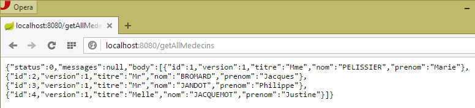 |
Lista de franjas horarias de un médico [/getAllCreneaux/{idMedecin}]
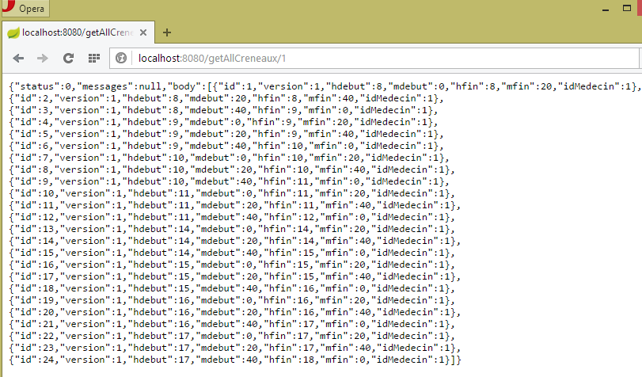 |
Lista de citas de un médico [/getRvMedecinJour/{idMedecin}/{aaaa-mm-dd}
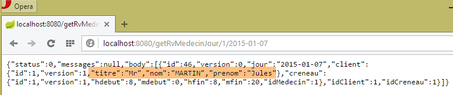 |
Agenda de un médico [/getAgendaMedecinJour/{idMedecin}/{aaaa-mm-jj}]
 |
Para añadir o eliminar una cita utilizamos la extensión de Chrome [Advanced Rest Client], ya que estas operaciones se realizan con un POST.
Añadir una cita [/ajouterRv]
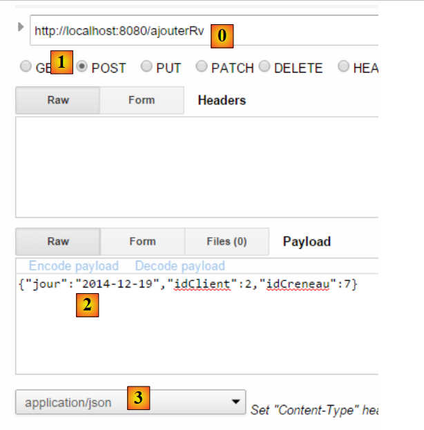 |
- en [0], el URL del servicio web;
- en [1], se utiliza el método POST;
- en [2], el texto jSON de la información transmitida al servicio web en el formato {día, idClient, idCreneau};
- en [3], el cliente indica al servicio web que le envía información en formato jSON;
La respuesta es entonces la siguiente:
 |
- en [4]: el cliente envía el encabezado indicando que los datos que envía están en formato jSON;
- en [5]: el servicio web responde que él también envía jSON;
- en [6]: la respuesta jSON del servicio web. El campo [body] contiene la forma jSON de la cita añadida;
Se puede comprobar la presencia de la nueva cita:
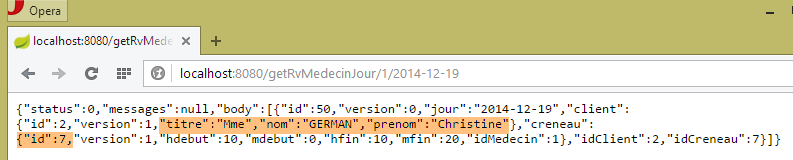 |
Cabe destacar el id [50] de la cita. Vamos a eliminar esta.
Eliminar una cita [/supprimerRv]
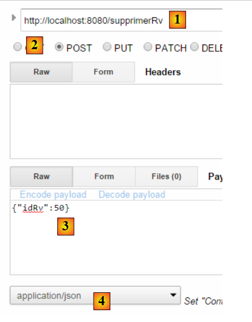 |
- en [1], el URL del servicio web;
- en [2], se utiliza el método POST;
- en [3], el texto jSON de la información transmitida al servicio web en el formato {idRv};
- en [4], el cliente indica al servicio web que le envía información jSON;
La respuesta es entonces la siguiente:
 |
- en [5]: el campo [status] es 0, lo que indica que la operación se ha realizado correctamente;
Se puede comprobar la eliminación de la cita:
 |
En la imagen anterior, la cita del paciente [Mme GERMAIN] ya no aparece.
El servicio web también permite recuperar entidades a través de su identificador:
 |
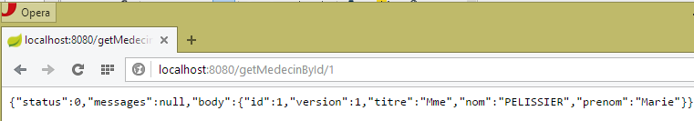 |
 |
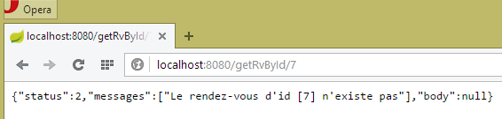 |
Todas estas URL son procesadas por el controlador [RdvMedecinsController], que presentaremos próximamente.
8.4.11.3. Configuración del servicio web
 |
La clase de configuración [AppConfig] es la siguiente:
package rdvmedecins.web.config;
import org.springframework.context.annotation.ComponentScan;
import org.springframework.context.annotation.Configuration;
import org.springframework.context.annotation.Import;
import rdvmedecins.config.DomainAndPersistenceConfig;
@Configuration
@ComponentScan(basePackages = { "rdvmedecins.web" })
@Import({ DomainAndPersistenceConfig.class, SecurityConfig.class, WebConfig.class })
public class AppConfig {
}
- línea 12: la clase [AppConfig] configura la totalidad de la aplicación;
- línea 9: la clase [AppConfig] es una clase de configuración de Spring;
- línea 10: se solicita que los componentes Spring se busquen en el paquete [rdvmedecins.web] y sus descendientes. Así es como se encontrarán los componentes:
- [@RestController RdvMedecinsController] en el paquete [rdvmedecins.web.controllers];
- [@Component ApplicationModel] en el paquete [rdvmedecins.web.models];
- línea 11: se importa la clase [DomainAndPersistenceConfig], que configura el proyecto [rdvmedecins-metier-dao] para tener acceso a los beans de este proyecto;
- línea 11: la clase [SecurityConfig] configura la seguridad de la aplicación web. Por ahora la ignoraremos;
- línea 11: la clase [WebConfig] configura la capa [web / jSON];
La clase [WebConfig] es la siguiente:
package rdvmedecins.web.config;
import org.springframework.boot.context.embedded.EmbeddedServletContainerFactory;
import org.springframework.boot.context.embedded.ServletRegistrationBean;
import org.springframework.boot.context.embedded.tomcat.TomcatEmbeddedServletContainerFactory;
import org.springframework.context.annotation.Bean;
import org.springframework.context.annotation.Configuration;
import org.springframework.web.servlet.DispatcherServlet;
import org.springframework.web.servlet.config.annotation.EnableWebMvc;
import com.fasterxml.jackson.databind.ObjectMapper;
import com.fasterxml.jackson.databind.ser.impl.SimpleBeanPropertyFilter;
import com.fasterxml.jackson.databind.ser.impl.SimpleFilterProvider;
@Configuration
@EnableWebMvc
public class WebConfig {
// configuración dispatcherservlet para los encabezados CORS
@Bean
public DispatcherServlet dispatcherServlet() {
DispatcherServlet servlet = new DispatcherServlet();
servlet.setDispatchOptionsRequest(true);
return servlet;
}
@Bean
public ServletRegistrationBean servletRegistrationBean(DispatcherServlet dispatcherServlet) {
return new ServletRegistrationBean(dispatcherServlet, "/*");
}
@Bean
public EmbeddedServletContainerFactory embeddedServletContainerFactory() {
return new TomcatEmbeddedServletContainerFactory("", 8080);
}
// mapeadores jSON
@Bean
public ObjectMapper jsonMapper() {
return new ObjectMapper();
}
@Bean
public ObjectMapper jsonMapperShortCreneau() {
ObjectMapper jsonMapperShortCreneau = new ObjectMapper();
SimpleBeanPropertyFilter creneauFilter = SimpleBeanPropertyFilter.serializeAllExcept("medecin");
jsonMapperShortCreneau.setFilters(new SimpleFilterProvider().addFilter("creneauFilter", creneauFilter));
return jsonMapperShortCreneau;
}
@Bean
public ObjectMapper jsonMapperLongRv() {
ObjectMapper jsonMapperLongRv = new ObjectMapper();
SimpleBeanPropertyFilter rvFilter = SimpleBeanPropertyFilter.serializeAllExcept("");
SimpleBeanPropertyFilter creneauFilter = SimpleBeanPropertyFilter.serializeAllExcept("medecin");
jsonMapperLongRv.setFilters(
new SimpleFilterProvider().addFilter("rvFilter", rvFilter).addFilter("creneauFilter", creneauFilter));
return jsonMapperLongRv;
}
@Bean
public ObjectMapper jsonMapperShortRv() {
ObjectMapper jsonMapperShortRv = new ObjectMapper();
SimpleBeanPropertyFilter rvFilter = SimpleBeanPropertyFilter.serializeAllExcept("client", "creneau");
jsonMapperShortRv.setFilters(new SimpleFilterProvider().addFilter("rvFilter", rvFilter));
return jsonMapperShortRv;
}
}
- líneas 20-25: definen el bean [dispatcherServlet]. La clase [DispatcherServlet] es el servlet del framework Spring MVC. Desempeña la función de [FrontController]: intercepta las solicitudes dirigidas al sitio Spring MVC y las envía a uno de los controladores (Controller) del sitio para su procesamiento;
- línea 22: instanciación de la clase;
- línea 23: esta línea puede ignorarse por el momento;
- líneas 27-30: el servlet [dispatcherServlet] procesa todas las URL;
- líneas 27-30: activan el servidor Tomcat integrado en las dependencias del proyecto. Funcionará en el puerto 8080;
- líneas 38-67: cuatro mapeadores jSON configurados con diferentes filtros jSON;
- líneas 38-41: un mapeador jSON sin filtros;
- líneas 43-49: el mapeador jSON [jsonMapperShortCreneau] serializa/deserializa un objeto [Creneau] ignorando el campo [Creneau.medecin];
- líneas 51-59: el mapeador jSON [jsonMapperLongRv] serializa/deserializa un objeto [Rv] ignorando el campo [Rv.creneau.medecin];
- líneas 61-67: el mapeador jSON [jsonMapperShortRv] serializa / deserializa un objeto [Rv] ignorando los campos [Rv.creneau] y [Rv.client];
8.4.11.4. La clase [ApplicationModel]
 |
La clase [ApplicationModel] nos servirá para dos cosas:
- como caché para almacenar las listas de médicos y pacientes (clients);
- como interfaz única para los controladores;
package rdvmedecins.web.models;
import java.util.Date;
import java.util.List;
import javax.annotation.PostConstruct;
import org.springframework.beans.factory.annotation.Autowired;
import org.springframework.stereotype.Component;
import rdvmedecins.domain.AgendaMedecinJour;
import rdvmedecins.entities.Client;
import rdvmedecins.entities.Creneau;
import rdvmedecins.entities.Medecin;
import rdvmedecins.entities.Rv;
import rdvmedecins.metier.IMetier;
import rdvmedecins.web.helpers.Static;
@Component
public class ApplicationModel implements IMetier {
// la capa [métier]
@Autowired
private IMetier métier;
// datos procedentes de la capa [métier]
private List<Medecin> médecins;
private List<Client> clients;
private List<String> messages;
// datos de configuración
private boolean CORSneeded = false;
private boolean secured = false;
@PostConstruct
public void init() {
// se recuperan los médicos y los clients
try {
médecins = métier.getAllMedecins();
clients = métier.getAllClients();
} catch (Exception ex) {
messages = Static.getErreursForException(ex);
}
}
// getter
public List<String> getMessages() {
return messages;
}
// ------------------------- interfaz de capa [métier]
@Override
public List<Client> getAllClients() {
return clients;
}
@Override
public List<Medecin> getAllMedecins() {
return médecins;
}
@Override
public List<Creneau> getAllCreneaux(long idMedecin) {
return métier.getAllCreneaux(idMedecin);
}
@Override
public List<Rv> getRvMedecinJour(long idMedecin, Date jour) {
return métier.getRvMedecinJour(idMedecin, jour);
}
@Override
public Client getClientById(long id) {
return métier.getClientById(id);
}
@Override
public Medecin getMedecinById(long id) {
return métier.getMedecinById(id);
}
@Override
public Rv getRvById(long id) {
return métier.getRvById(id);
}
@Override
public Creneau getCreneauById(long id) {
return métier.getCreneauById(id);
}
@Override
public Rv ajouterRv(Date jour, Creneau creneau, Client client) {
return métier.ajouterRv(jour, creneau, client);
}
@Override
public void supprimerRv(long idRv) {
métier.supprimerRv(idRv);
}
@Override
public AgendaMedecinJour getAgendaMedecinJour(long idMedecin, Date jour) {
return métier.getAgendaMedecinJour(idMedecin, jour);
}
// getters y setters
public boolean isCORSneeded() {
return CORSneeded;
}
public boolean isSecured() {
return secured;
}
}
- línea 19: la anotación [@Component] convierte la clase [ApplicationModel] en un componente Spring. Al igual que todos los componentes Spring vistos hasta ahora (a excepción de @Controller), solo se instanciará un único objeto de este tipo (singleton);
- línea 20: la clase [ApplicationModel] implementa la interfaz [IMetier];
- líneas 23-24: Spring inyecta una referencia en la capa [métier];
- línea 34: la anotación [@PostConstruct] hace que el método [init] se ejecute justo después de la instanciación de la clase [ApplicationModel];
- líneas 38-39: se recuperan las listas de médicos y de clients de la capa [métier];
- línea 41: si se produce una excepción, se almacenan los mensajes de la pila de excepciones en el campo de la línea 17;
La arquitectura de la capa web evoluciona de la siguiente manera:
 |
- en [2b], los métodos del controlador o controladores se comunican con el singleton [ApplicationModel];
Esta estrategia aporta flexibilidad en la gestión de la caché. Actualmente, los horarios de los médicos no se almacenan en caché. Para hacerlo, basta con modificar la clase [ApplicationModel]. Esto no tiene ningún impacto en el controlador, que seguirá utilizando el método [List<Creneau> getAllCreneaux(long idMedecin)] como lo hacía anteriormente. Lo que se modificará es la implementación de este método en [ApplicationModel].
8.4.11.5. La clase Static
La clase [Static] agrupa un conjunto de métodos estáticos de utilidad que no tienen ningún aspecto «de negocio» o «web»:
 |
Su código es el siguiente:
package rdvmedecins.web.helpers;
import java.util.ArrayList;
import java.util.List;
public class Static {
public Static() {
}
// lista de mensajes de error de una excepción
public static List<String> getErreursForException(Exception exception) {
// se recupera la lista de mensajes de error de la excepción
Throwable cause = exception;
List<String> erreurs = new ArrayList<String>();
while (cause != null) {
erreurs.add(cause.getMessage());
cause = cause.getCause();
}
return erreurs;
}
}
- línea 12: el método [Static.getErreursForException] que se ha utilizado (línea 8 más abajo) en el método [init] de la clase [ApplicationModel]:
@PostConstruct
public void init() {
// se recuperan los médicos y los clients
try {
médecins = métier.getAllMedecins();
clients = métier.getAllClients();
} catch (Exception ex) {
messages = Static.getErreursForException(ex);
}
}
El método crea un objeto [List<String>] con los mensajes de error [exception.getMessage()] de una excepción [exception] y de las que esta contiene [exception.getCause()].
8.4.11.6. El esqueleto del controlador [RdvMedecinsController]
 |
A continuación, detallaremos el procesamiento de URL del servicio web. En este procesamiento intervienen tres clases principales:
- el controlador [RdvMedecinsController];
- la clase de métodos utilitarios [Static];
- la clase de caché [ApplicationModel];
 |
El controlador [RdvMedecinsController] es el siguiente:
package rdvmedecins.web.controllers;
import java.text.ParseException;
import java.text.SimpleDateFormat;
import java.util.ArrayList;
import java.util.Date;
import java.util.List;
import javax.annotation.PostConstruct;
import javax.servlet.http.HttpServletResponse;
import org.springframework.beans.factory.annotation.Autowired;
import org.springframework.stereotype.Controller;
import org.springframework.web.bind.annotation.PathVariable;
import org.springframework.web.bind.annotation.RequestBody;
import org.springframework.web.bind.annotation.RequestHeader;
import org.springframework.web.bind.annotation.RequestMapping;
import org.springframework.web.bind.annotation.RequestMethod;
import org.springframework.web.bind.annotation.ResponseBody;
import com.fasterxml.jackson.core.JsonProcessingException;
import com.fasterxml.jackson.databind.ObjectMapper;
import rdvmedecins.domain.AgendaMedecinJour;
import rdvmedecins.entities.Client;
import rdvmedecins.entities.Creneau;
import rdvmedecins.entities.Medecin;
import rdvmedecins.entities.Rv;
import rdvmedecins.web.helpers.Static;
import rdvmedecins.web.models.ApplicationModel;
import rdvmedecins.web.models.PostAjouterRv;
import rdvmedecins.web.models.PostSupprimerRv;
import rdvmedecins.web.models.Response;
@Controller
public class RdvMedecinsController {
@Autowired
private ApplicationModel application;
@Autowired
private RdvMedecinsCorsController rdvMedecinsCorsController;
// lista de mensajes
private List<String> messages;
// mapeadores jSON
@Autowired
private ObjectMapper jsonMapper;
@Autowired
private ObjectMapper jsonMapperShortCreneau;
@Autowired
private ObjectMapper jsonMapperLongRv;
@Autowired
private ObjectMapper jsonMapperShortRv;
@PostConstruct
public void init() {
// mensajes de error de la aplicación
messages = application.getMessages();
}
// lista de médicos
@RequestMapping(value = "/getAllMedecins", method = RequestMethod.GET, produces = "application/json; charset=UTF-8")
@ResponseBody
public String getAllMedecins() throws JsonProcessingException {...}
// lista de clients
@RequestMapping(value = "/getAllClients", method = RequestMethod.GET, produces = "application/json; charset=UTF-8")
@ResponseBody
public String getAllClients() throws JsonProcessingException {...}
// lista de franjas horarias de un médico
@RequestMapping(value = "/getAllCreneaux/{idMedecin}", method = RequestMethod.GET, produces = "application/json; charset=UTF-8")
@ResponseBody
public String getAllCreneaux(@PathVariable("idMedecin") long idMedecin) throws JsonProcessingException {...}
// lista de citas de un médico
@RequestMapping(value = "/getRvMedecinJour/{idMedecin}/{jour}", method = RequestMethod.GET, produces = "application/json; charset=UTF-8")
@ResponseBody
public String getRvMedecinJour(@PathVariable("idMedecin") long idMedecin, @PathVariable("jour") String jour)
throws JsonProcessingException {...}
@RequestMapping(value = "/getClientById/{id}", method = RequestMethod.GET, produces = "application/json; charset=UTF-8")
@ResponseBody
public String getClientById(@PathVariable("id") long id) throws JsonProcessingException {...}
@RequestMapping(value = "/getMedecinById/{id}", method = RequestMethod.GET, produces = "application/json; charset=UTF-8")
@ResponseBody
public String getMedecinById(@PathVariable("id") long id) String origin) throws JsonProcessingException {...}
@RequestMapping(value = "/getRvById/{id}", method = RequestMethod.GET, produces = "application/json; charset=UTF-8")
@ResponseBody
public String getRvById(@PathVariable("id") long id) throws JsonProcessingException {...}
@RequestMapping(value = "/getCreneauById/{id}", method = RequestMethod.GET, produces = "application/json; charset=UTF-8")
@ResponseBody
public String getCreneauById(@PathVariable("id") long id) throws JsonProcessingException {...}
@RequestMapping(value = "/ajouterRv", method = RequestMethod.POST, produces = "application/json; charset=UTF-8", consumes = "application/json; charset=UTF-8")
@ResponseBody
public String ajouterRv(@RequestBody PostAjouterRv post) throws JsonProcessingException {...}
@RequestMapping(value = "/supprimerRv", method = RequestMethod.POST, produces = "application/json; charset=UTF-8", consumes = "application/json; charset=UTF-8")
@ResponseBody
public String supprimerRv(@RequestBody PostSupprimerRv post) throws JsonProcessingException {...}
@RequestMapping(value = "/getAgendaMedecinJour/{idMedecin}/{jour}", method = RequestMethod.GET, produces = "application/json; charset=UTF-8")
@ResponseBody
public String getAgendaMedecinJour(@PathVariable("idMedecin") long idMedecin, @PathVariable("jour") String jour)
throws JsonProcessingException {...}
@RequestMapping(value = "/authenticate", method = RequestMethod.GET, produces = "application/json; charset=UTF-8")
@ResponseBody
public String authenticate() throws JsonProcessingException {...}
}
- línea 35: la anotación [@Controller] convierte la clase [RdvMedecinsController] en un controlador Spring, el C de MVC;
- líneas 38-39: Spring inyectará aquí un objeto de tipo [ApplicationModel]. Ya lo hemos presentado;
- líneas 41-42: Spring inyectará aquí un objeto de tipo [RdvMedecinsCorsController]. No presentaremos este objeto hasta más adelante;
- líneas 48-58: los mapeadores jSON definidos en la clase de configuración [WebConfig];
- línea 60: la anotación [@PostConstruct] marca un método que se ejecutará justo después de la instanciación de la clase. Cuando este se ejecuta, los objetos inyectados por Spring están disponibles;
- línea 63: se recuperan los posibles mensajes de error del objeto [ApplicationModel]. Este objeto se instanció al inicio de la aplicación e intentó almacenar en caché los médicos y los clients. Si falló, entonces tenemos [messages!=null]. Esto permitirá a los métodos del controlador saber si la aplicación se ha inicializado correctamente;
- líneas 67-118: los URL expuestos por el servicio [web / jSON]. Todos los métodos devuelven la cadena jSON de un objeto de tipo [Response<T>] siguiente:
 |
package rdvmedecins.web.models;
import java.util.List;
public class Response<T> {
// ----------------- propiedades
// estado de la operación
private int status;
// posibles mensajes de error
private List<String> messages;
// el cuerpo de la respuesta
private T body;
// constructores
public Response() {
}
public Response(int status, List<String> messages, T body) {
this.status = status;
this.messages = messages;
this.body = body;
}
// getters y setters
...
}
- línea 9: un código de error: 0 significa que no hay error;
- línea 11: si [status!=0], entonces [messages] es una lista de mensajes de error;
- línea 13: un objeto T encapsulado en la respuesta. T es nulo en caso de error;
Este objeto se serializa en jSON antes de enviarse al navegador del cliente;
- línea 67: el URL expuesto es [/getAllMedecins]. El cliente debe utilizar un método [GET] para realizar su solicitud (method = RequestMethod.GET). Si este URL fuera solicitado por un POST, sería rechazado y Spring MVC enviaría un código de error HTTP al cliente web. El propio método devuelve la respuesta al cliente (línea 68). Será una cadena de caracteres (línea 67). El encabezado HTTP [Content-type : application/json; charset=UTF-8] se enviará al cliente para indicarle que va a recibir una cadena jSON (línea 67);
- línea 77: el URL se configura mediante {idMedecin}. Este parámetro se recupera con la anotación [@PathVariable] en la línea 79;
- línea 79: el parámetro [long idMedecin] recibe su valor del parámetro {idMedecin} del URL [@PathVariable("idMedecin")]. El parámetro en URL y el del método pueden tener nombres diferentes. Cabe señalar aquí que [@PathVariable("idMedecin")] es de tipo String (todo el URL es un String), mientras que el parámetro [long idMedecin] es de tipo [long]. El cambio de tipo se realiza automáticamente. Se devuelve un código de error HTTP si este cambio de tipo falla;
- línea 105: la anotación [@RequestBody] designa el cuerpo de la consulta. En una solicitud GET, casi nunca hay cuerpo (pero es posible incluir uno). En una solicitud POST, suele haberlo (pero es posible no incluirlo). Para URL [ajouterRv], el cliente web envía en su POST la siguiente cadena jSON:
La sintaxis [@RequestBody PostAjouterRv post] (línea 105) , sumada al hecho de que el método espera de la línea 103 de jSON [consumes = "application/json; charset=UTF-8"], hará que la cadena jSON enviada por el cliente web se deserialice en un objeto de tipo [PostAjouterRv]. Este es el siguiente:
package rdvmedecins.web.models;
public class PostAjouterRv {
// datos de post
private String jour;
private long idClient;
private long idCreneau;
// getters y setters
...
}
Aquí también se realizarán automáticamente los cambios de tipo necesarios;
- en las líneas 107-109, encontramos un mecanismo similar para URL [/supprimerRv]. La cadena jSON enviada es la siguiente:
y el tipo [PostSupprimerRv] es el siguiente:
package rdvmedecins.web.models;
public class PostSupprimerRv {
// datos de post
private long idRv;
// getters y setters
...
}
8.4.11.7. El URL [/getAllMedecins]
El URL [/getAllMedecins] se procesa mediante el siguiente método del controlador [RdvMedecinsController]:
// lista de médicos
@RequestMapping(value = "/getAllMedecins", method = RequestMethod.GET, produces = "application/json; charset=UTF-8")
@ResponseBody
public String getAllMedecins() throws JsonProcessingException {
// la respuesta
Response<List<Medecin>> response;
// estado de la aplicación
if (messages != null) {
response = new Response<>(-1, messages, null);
} else {
// lista de médicos
try {
response = new Response<>(0, null, application.getAllMedecins());
} catch (RuntimeException e) {
response = new Response<>(1, Static.getErreursForException(e), null);
}
}
// respuesta
return jsonMapper.writeValueAsString(response);
}
- líneas 9-10: se comprueba si la aplicación se ha inicializado correctamente (messages==null). Si no es así, se devuelve una respuesta con status=-1 y body=messages;
- línea 13: de lo contrario, se solicita la lista de médicos a la clase [ApplicationModel];
- línea 19: se envía la cadena jSON de la respuesta con el mapeador jSON [jsonMapper] porque la clase [Medecin]tiene filtro jSON. La respuesta puede estar sin errores (línea 14) o con errores (línea 16). El método [application.getAllMedecins()] no lanza una excepción, ya que se limita a devolver una lista que está en caché. No obstante, mantendremos esta gestión de excepciones por si los médicos ya no se almacenaran en caché;
Aún no hemos ilustrado el caso en el que la aplicación se ha inicializado incorrectamente. Detengamos SGBD MySQL5, iniciemos el servicio web y luego solicitemos URL [/getAllMedecins]:

Efectivamente, se produce un error. En un contexto normal, se obtiene la siguiente vista:
 |
8.4.11.8. El URL [/getAllClients]
El URL [/getAllClients] se procesa mediante el siguiente método del controlador [RdvMedecinsController]:
// lista de clients
@RequestMapping(value = "/getAllClients", method = RequestMethod.GET, produces = "application/json; charset=UTF-8")
@ResponseBody
public String getAllClients() throws JsonProcessingException {
// la respuesta
Response<List<Client>> response;
// estado de la solicitud
if (messages != null) {
response = new Response<>(-1, messages, null);
}
// lista de clients
try {
response = new Response<>(0, null, application.getAllClients());
} catch (RuntimeException e) {
response = new Response<>(1, Static.getErreursForException(e), null);
}
// respuesta
return jsonMapper.writeValueAsString(response);
}
Es análogo al método [getAllMedecins] ya estudiado. Los resultados obtenidos son los siguientes:
 |
8.4.11.9. El URL [/getAllCreneaux/{idMedecin}]
El URL [/getAllCreneaux/{idMedecin}] se procesa mediante el siguiente método del controlador [RdvMedecinsController]:
// lista de franjas horarias de un médico
@RequestMapping(value = "/getAllCreneaux/{idMedecin}", method = RequestMethod.GET, produces = "application/json; charset=UTF-8")
@ResponseBody
public String getAllCreneaux(@PathVariable("idMedecin") long idMedecin) throws JsonProcessingException {
// la respuesta
Response<List<Creneau>> response;
// estado de la aplicación
if (messages != null) {
response = new Response<>(-1, messages, null);
}
// se recupera el médico
Response<Medecin> responseMedecin = getMedecin(idMedecin);
if (responseMedecin.getStatus() != 0) {
response = new Response<>(responseMedecin.getStatus(), responseMedecin.getMessages(), null);
} else {
Medecin médecin = responseMedecin.getBody();
// horarios del médico
try {
response = new Response<>(0, null, application.getAllCreneaux(médecin.getId()));
} catch (RuntimeException e1) {
response = new Response<>(3, Static.getErreursForException(e1), null);
}
}
// respuesta
return jsonMapperShortCreneau.writeValueAsString(response);
}
- línea 12: se solicita al médico identificado por el parámetro [id] un método local:
private Response<Medecin> getMedecin(long id) {
// se busca al médico
Medecin médecin = null;
try {
médecin = application.getMedecinById(id);
} catch (RuntimeException e1) {
return new Response<Medecin>(1, Static.getErreursForException(e1), null);
}
// ¿Médico existente?
if (médecin == null) {
List<String> messages = new ArrayList<String>();
messages.add(String.format("Le médecin d'id [%s] n'existe pas", id));
return new Response<Medecin>(2, messages, null);
}
// ok
return new Response<Medecin>(0, null, médecin);
}
Se vuelve de este método con un estado en [0,1,2]. Volvamos al código del método [getAllCreneaux]:
- líneas 13-14: si status!=0, se genera una respuesta con error;
- línea 16: se recupera el médico;
- línea 19: se recuperan los horarios de este médico;
- línea 25: se envía como respuesta un objeto [List<Creneau>]. Recordemos la definición de la clase [Creneau]:
@Entity
@Table(name = "creneaux")
public class Creneau extends AbstractEntity {
private static final long serialVersionUID = 1L;
// características de una franja horaria de RV
private int hdebut;
private int mdebut;
private int hfin;
private int mfin;
// un horario está vinculado a un médico
@ManyToOne(fetch = FetchType.LAZY)
@JoinColumn(name = "id_medecin")
private Medecin medecin;
// clave externa
@Column(name = "id_medecin", insertable = false, updatable = false)
private long idMedecin;
...
}
- línea 13: se busca al médico en modo [FetchType.LAZY];
Recordemos la consulta JPQL que implementa el método [getAllCreneaux] en la capa [DAO]:
@Query("select c from Creneau c where c.medecin.id=?1")
La notación [c.medecin.id] fuerza la unión entre las tablas [CRENEAUX] y [MEDECINS]. Por lo tanto, la consulta devuelve todas las franjas horarias del médico con el médico en cada una de ellas. Al serializar estos turnos en jSON, aparece la cadena jSON del médico en cada uno de ellos. Esto es innecesario. Para controlar la serialización, necesitamos dos cosas:
- tener acceso al objeto que se serializa;
- configurar el objeto que se va a serializar;
El punto 1 se verifica con la inyección del convertidor jSON adecuado para el objeto en el controlador:
@Autowired
private ObjectMapper jsonMapperShortCreneau;
El punto 2 se consigue añadiendo una anotación a la clase [Creneau] definida en el proyecto [rdvmedecins-metier-dao]:
 |
@Entity
@Table(name = "creneaux")
@JsonFilter("creneauFilter")
public class Creneau extends AbstractEntity {
...
- línea 3: una anotación de la biblioteca jSON Jackson. Crea un filtro llamado [creneauFilter]. Con este filtro, podremos definir mediante programación los campos que deben o no deben serializarse;
La serialización del objeto [Creneau] se realiza en la siguiente línea del método [getAllCreneaux]:
// respuesta
return jsonMapperShortCreneau.writeValueAsString(response);
El mapeador jSON [jsonMapperShortCreneau] se ha definido en la clase [WebConfig] de la siguiente manera:
@Bean
public ObjectMapper jsonMapperShortCreneau() {
ObjectMapper jsonMapperShortCreneau = new ObjectMapper();
SimpleBeanPropertyFilter creneauFilter = SimpleBeanPropertyFilter.serializeAllExcept("medecin");
jsonMapperShortCreneau.setFilters(new SimpleFilterProvider().addFilter("creneauFilter", creneauFilter));
return jsonMapperShortCreneau;
}
- línea 5: el filtro denominado [creneauFilter] se asocia al filtro [creneauFilter] de la línea 4. Este filtro serializa el objeto [Creneau] sin su campo [medecin];
El resultado devuelto por el método [getAllCreneaux] es la cadena jSON de tipo [Response<List<Creneau>].
Los resultados obtenidos son los siguientes:
 |
o bien estos si el intervalo no existe:
 |
De este ejemplo, extraemos la siguiente regla:
- los métodos del servidor web / jSON devuelven un objeto de tipo [Response<T>] que se serializa en jSON;
- si el tipo T tiene uno o varios filtros jSON, para serializarlo se utilizará un mapeador con esos mismos filtros;
8.4.11.10. El URL [/getRvMedecinJour/{idMedecin}/{jour}]
El URL [/getRvMedecinJour/{idMedecin}/{jour}] se procesa mediante el siguiente método del controlador [RdvMedecinsController]:
// lista de citas de un médico
@RequestMapping(value = "/getRvMedecinJour/{idMedecin}/{jour}", method = RequestMethod.GET, produces = "application/json; charset=UTF-8")
@ResponseBody
public String getRvMedecinJour(@PathVariable("idMedecin") long idMedecin)
throws JsonProcessingException {
// la respuesta
Response<List<Rv>> response=null;
boolean erreur = false;
// estado de la aplicación
if (messages != null) {
response = new Response<>(-1, messages, null);
erreur = true;
}
// se comprueba la fecha
Date jourAgenda = null;
if (!erreur) {
SimpleDateFormat sdf = new SimpleDateFormat("yyyy-MM-dd");
sdf.setLenient(false);
try {
jourAgenda = sdf.parse(jour);
} catch (ParseException e) {
List<String> messages = new ArrayList<String>();
messages.add(String.format("La date [%s] est invalide", jour));
response = new Response<List<Rv>>(3, messages, null);
erreur = true;
}
}
Response<Medecin> responseMedecin = null;
if (!erreur) {
// se busca al médico
responseMedecin = getMedecin(idMedecin);
if (responseMedecin.getStatus() != 0) {
response = new Response<>(responseMedecin.getStatus(), responseMedecin.getMessages(), null);
erreur = true;
}
}
if (!erreur) {
Medecin médecin = responseMedecin.getBody();
// lista de sus citas
try {
response = new Response<>(0, null, application.getRvMedecinJour(médecin.getId(), jourAgenda));
} catch (RuntimeException e1) {
response = new Response<>(4, Static.getErreursForException(e1), null);
}
}
// respuesta
return jsonMapperLongRv.writeValueAsString(response);
}
- se debe convertir la cadena jSON a un tipo [Response<List<Rv>>]. La clase [Rv] tiene un campo [Rv.creneau]. Si este campo se serializa, nos encontraremos con el filtro jSON [creneauFilter];
- línea 47: el objeto de tipo [Response<List<Rv>>] de la línea 7 se serializa en jSON;
Analicemos el caso en el que la lista de citas se ha obtenido en la línea 42. La clase [Rv] del proyecto [rdvmedecins-metier-dao] se define de la siguiente manera:
@Entity
@Table(name = "rv")
public class Rv extends AbstractEntity {
private static final long serialVersionUID = 1L;
// características de un Rv
@Temporal(TemporalType.DATE)
private Date jour;
// un rv está vinculado a un cliente
@ManyToOne(fetch = FetchType.LAZY)
@JoinColumn(name = "id_client")
private Client client;
// un rv está vinculado a una franja horaria
@ManyToOne(fetch = FetchType.LAZY)
@JoinColumn(name = "id_creneau")
private Creneau creneau;
// claves extranjeras
@Column(name = "id_client", insertable = false, updatable = false)
private long idClient;
@Column(name = "id_creneau", insertable = false, updatable = false)
private long idCreneau;
...
}
- línea 11: se busca al cliente con el modo [FetchType.LAZY];
- línea 18: se busca la franja horaria con el modo [FetchType.LAZY];
Recordemos la consulta JPQL que busca las citas:
@Query("select rv from Rv rv left join fetch rv.client c left join fetch rv.creneau cr where cr.medecin.id=?1 and rv.jour=?2")
Se realizan uniones explícitas para recuperar los campos [client] y [creneau]. Además, debido a la unión [cr.medecin.id=?1], también obtendremos el nombre del médico. Por lo tanto, el médico aparecerá en la cadena jSON de cada cita. Sin embargo, esta información duplicada es, además, innecesaria. Hemos visto cómo resolver este problema utilizando un filtro jSON sobre el objeto [Creneau]. Debido a los modos [FetchType.LAZY] de los campos [client] y [creneau] de la clase [Rv], pronto descubriremos la necesidad de aplicar un filtro jSON a la clase [RV] del proyecto [rdvmedecins-metier-dao]:
@Entity
@Table(name = "rv")
@JsonFilter("rvFilter")
public class Rv extends AbstractEntity {
...
Comprobaremos la serialización del objeto [Rv] con el filtro [rvFilter]. Al parecer, aquí no necesitamos filtrar, ya que necesitamos todos los campos del objeto de tipo [Rv]. No obstante, dado que hemos indicado que la clase tiene un filtro jSON, debemos definirlo para cualquier serialización de un objeto de tipo [Rv]; de lo contrario, se producirá una excepción. Para ello, utilizamos el mapeador jSON siguiente, definido en la clase [rdvMedecinsController]:
@Autowired
private ObjectMapper jsonMapperLongRv;
Este mapeador se define de la siguiente manera en la clase de configuración [WebConfig]:
@Bean
public ObjectMapper jsonMapperLongRv() {
ObjectMapper jsonMapperLongRv = new ObjectMapper();
SimpleBeanPropertyFilter rvFilter = SimpleBeanPropertyFilter.serializeAllExcept("");
SimpleBeanPropertyFilter creneauFilter = SimpleBeanPropertyFilter.serializeAllExcept("medecin");
jsonMapperLongRv.setFilters(new SimpleFilterProvider().addFilter("rvFilter", rvFilter).addFilter("creneauFilter",creneauFilter));
return jsonMapperLongRv;
}
- línea 4: indicamos que todos los campos del objeto [Rv] deben ser serializados;
- línea 5: indicamos que, en el objeto [Creneau], no se debe serializar el campo [medecin];
- línea 6: añadimos los dos filtros [rvFilter] y [creneauFilter] a los filtros jSON del objeto [jsonMapperLongRv];
Los resultados obtenidos son los siguientes:
 |
o también estos con un día sin cita:
 |
o estos otros con un día incorrecto:
 |
o estos otros con un médico incorrecto:
 |
8.4.11.11. El URL [/getAgendaMedecinJour/{idMedecin}/{jour}]
El URL [/getAgendaMedecinJour/{idMedecin}/{jour}] se procesa mediante el siguiente método del controlador [RdvMedecinsController]:
@RequestMapping(value = "/getAgendaMedecinJour/{idMedecin}/{jour}", method = RequestMethod.GET, produces = "application/json; charset=UTF-8")
@ResponseBody
public String getAgendaMedecinJour(@PathVariable("idMedecin") long idMedecin)
throws JsonProcessingException {
// la respuesta
Response<AgendaMedecinJour> response = null;
boolean erreur = false;
// estado de la solicitud
if (messages != null) {
response = new Response<>(-1, messages, null);
erreur = true;
}
// se comprueba la fecha
Date jourAgenda = null;
if (!erreur) {
// se comprueba la fecha
SimpleDateFormat sdf = new SimpleDateFormat("yyyy-MM-dd");
sdf.setLenient(false);
try {
jourAgenda = sdf.parse(jour);
} catch (ParseException e) {
erreur = true;
List<String> messages = new ArrayList<String>();
messages.add(String.format("La date [%s] est invalide", jour));
response = new Response<>(3, messages, null);
}
}
// se busca al médico
Medecin médecin = null;
if (!erreur) {
// se busca al médico
Response<Medecin> responseMedecin = getMedecin(idMedecin);
if (responseMedecin.getStatus() != 0) {
response = new Response<>(responseMedecin.getStatus(), responseMedecin.getMessages(), null);
} else {
médecin = responseMedecin.getBody();
}
}
// se recupera su agenda
if (!erreur) {
try {
response = new Response<>(0, null, application.getAgendaMedecinJour(médecin.getId(), jourAgenda));
} catch (RuntimeException e1) {
erreur = true;
response = new Response<>(4, Static.getErreursForException(e1), null);
}
}
// respuesta
return jsonMapperLongRv.writeValueAsString(response);
}
- líneas 6, 49: se devuelve la cadena jSON de tipo [AgendaMedecinJour] encapsulada en un objeto [Response];
El tipo [AgendaMedecinJour] es el siguiente:
public class AgendaMedecinJour implements Serializable {
// campos
private Medecin medecin;
private Date jour;
private CreneauMedecinJour[] creneauxMedecinJour;
El tipo [CreneauMedecinJour] es el siguiente:
public class CreneauMedecinJour implements Serializable {
private static final long serialVersionUID = 1L;
// campos
private Creneau creneau;
private Rv rv;
Los campos [creneau] y [rv] tienen filtros jSON que hay que configurar. Esto es lo que hace la línea 49 del método [getAgendaMedecinJour], que utiliza el mapeador jSON [jsonMapperLongRv] ya mencionado:
@Bean
public ObjectMapper jsonMapperLongRv() {
ObjectMapper jsonMapperLongRv = new ObjectMapper();
SimpleBeanPropertyFilter rvFilter = SimpleBeanPropertyFilter.serializeAllExcept("");
SimpleBeanPropertyFilter creneauFilter = SimpleBeanPropertyFilter.serializeAllExcept("medecin");
jsonMapperLongRv.setFilters(
new SimpleFilterProvider().addFilter("rvFilter", rvFilter).addFilter("creneauFilter", creneauFilter));
return jsonMapperLongRv;
}
Los resultados obtenidos son los siguientes:
 |
Arriba, vemos que el 28/01/2015, el doctor PELISSIER tiene una cita con la Sra. Brigitte BISTROU a las 8:20;
o bien estos, si el día es incorrecto:
 |
o bien estos si el número del médico no es válido:
 |
8.4.11.12. El URL [/getMedecinById/{id}]
El URL [/getMedecinById/{id}] se procesa mediante el siguiente método del controlador [RdvMedecinsController]:
@RequestMapping(value = "/getMedecinById/{id}", method = RequestMethod.GET, produces = "application/json; charset=UTF-8")
@ResponseBody
public String getMedecinById(@PathVariable("id") long id) throws JsonProcessingException {
// la respuesta
Response<Medecin> response;
// estado de la aplicación
if (messages != null) {
response = new Response<Medecin>(-1, messages, null);
} else {
response = getMedecin(id);
}
// respuesta
return jsonMapper.writeValueAsString(response);
}
- líneas 5, 13: el método devuelve la cadena jSON de tipo [Medecin]. Este tipo no tiene ninguna anotación de filtro jSON. Por lo tanto, en la línea 14, se utiliza el mapeador jSON sin filtros;
En la línea 10, el método [getMedecin] es el siguiente:
private Response<Medecin> getMedecin(long id) {
// se busca el médico
Medecin médecin = null;
try {
médecin = application.getMedecinById(id);
} catch (RuntimeException e1) {
return new Response<Medecin>(1, Static.getErreursForException(e1), null);
}
// ¿Médico existente?
if (médecin == null) {
List<String> messages = new ArrayList<String>();
messages.add(String.format("Le médecin d'id [%s] n'existe pas", id));
return new Response<Medecin>(2, messages, null);
}
// ok
return new Response<Medecin>(0, null, médecin);
}
Los resultados obtenidos son los siguientes:
 |
o bien estos si el número del médico es incorrecto:
 |
8.4.11.13. El URL [/getClientById/{id}]
El URL [/getClientById/{id}] se procesa mediante el siguiente método del controlador [RdvMedecinsController]:
@RequestMapping(value = "/getClientById/{id}", method = RequestMethod.GET, produces = "application/json; charset=UTF-8")
@ResponseBody
public String getClientById(@PathVariable("id") long id) throws JsonProcessingException {
// la respuesta
Response<Client> response;
// estado de la solicitud
if (messages != null) {
response = new Response<>(-1, messages, null);
} else {
response = getClient(id);
}
// respuesta
return jsonMapper.writeValueAsString(response);
}
- líneas 5, 13: el método devuelve la cadena jSON de tipo [Client]. Este tipo no tiene anotaciones de filtros jSON. Por lo tanto, en la línea 13 se utiliza el mapeador jSON sin filtros;
En la línea 11, el método [getClient] es el siguiente:
private Response<Client> getClient(long id) {
// se recupera el cliente
Client client = null;
try {
client = application.getClientById(id);
} catch (RuntimeException e1) {
return new Response<Client>(1, Static.getErreursForException(e1), null);
}
// ¿cliente existente?
if (client == null) {
List<String> messages = new ArrayList<String>();
messages.add(String.format("Le client d'id [%s] n'existe pas", id));
return new Response<Client>(2, messages, null);
}
// ok
return new Response<Client>(0, null, client);
}
Los resultados obtenidos son los siguientes:
 |
o bien estos si el número de cliente es incorrecto:
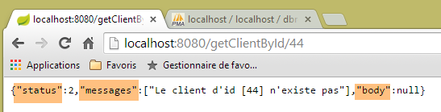 |
8.4.11.14. El URL [/getCreneauById/{id}]
El URL [/getCreneauById/{id}] se procesa mediante el siguiente método del controlador [RdvMedecinsController]:
@RequestMapping(value = "/getCreneauById/{id}", method = RequestMethod.GET, produces = "application/json; charset=UTF-8")
@ResponseBody
public String getCreneauById(@PathVariable("id") long id) throws JsonProcessingException {
// la respuesta
Response<Creneau> response;
// estado de la aplicación
if (messages != null) {
response = new Response<>(-1, messages, null);
} else {
// se devuelve la franja horaria
response = getCreneau(id);
}
// respuesta
return jsonMapperShortCreneau.writeValueAsString(response);
}
- líneas 5, 14: el método devuelve la cadena jSON de tipo [Response<Creneau>];
Línea 8, el método [getCreneau] es el siguiente:
private Response<Creneau> getCreneau(long id) {
// se recupera la franja horaria
Creneau créneau = null;
try {
créneau = application.getCreneauById(id);
} catch (RuntimeException e1) {
return new Response<Creneau>(1, Static.getErreursForException(e1), null);
}
// ¿Intervalo existente?
if (créneau == null) {
List<String> messages = new ArrayList<String>();
messages.add(String.format("Le créneau d'id [%s] n'existe pas", id));
return new Response<Creneau>(2, messages, null);
}
// ok
return new Response<Creneau>(0, null, créneau);
}
Recordemos el código de la entidad [Creneau]:
@Entity
@Table(name = "creneaux")
@JsonFilter("creneauFilter")
public class Creneau extends AbstractEntity {
private static final long serialVersionUID = 1L;
// características de una franja horaria de RV
private int hdebut;
private int mdebut;
private int hfin;
private int mfin;
// un horario está vinculado a un médico
@ManyToOne(fetch = FetchType.LAZY)
@JoinColumn(name = "id_medecin")
private Medecin medecin;
// clave externa
@Column(name = "id_medecin", insertable = false, updatable = false)
private long idMedecin;
- líneas 14-16: dado que el campo [medecin] está en modo [fetch = FetchType.LAZY], no se recupera cuando se busca una franja horaria a través de su [id]. Por lo tanto, es necesario excluirlo de la serialización. Sin esta exclusión, se produce una excepción. Esto se debe a que el objeto de serialización [mapper] llamará al método [getMedecin] para obtener el campo [medecin]. Sin embargo, con una implementación JPA / Hibernate, el modo [fetch = FetchType.LAZY] del campo [medecin] ha devuelto un objeto [Creneau] cuyo método [getMedecin] está programado para buscar al médico en el contexto JPA. A esto se le denomina un objeto [proxy]. Ahora bien, recordemos la arquitectura de la aplicación web:
 |
El controlador se encuentra en el bloque [Contrôleurs / Actions]. Cuando estamos en este bloque, ya no existe el concepto de contexto JPA. Este último se crea durante las operaciones de la capa [DAO]. No perdura más allá de ello. Por lo tanto, cuando el controlador intenta acceder al contexto JPA, se produce una excepción que indica que este está cerrado. Para evitar esta excepción, hay que impedir la serialización del campo [medecin] de la clase [Rv]. Esto es lo que hace el mapeador jSON [jsonMapperShortCreneau]:
@Bean
public ObjectMapper jsonMapperShortCreneau() {
ObjectMapper jsonMapperShortCreneau = new ObjectMapper();
SimpleBeanPropertyFilter creneauFilter = SimpleBeanPropertyFilter.serializeAllExcept("medecin");
jsonMapperShortCreneau.setFilters(new SimpleFilterProvider().addFilter("creneauFilter", creneauFilter));
return jsonMapperShortCreneau;
}
Los resultados obtenidos son los siguientes:
 |
o estos si el número de franja horaria es incorrecto:
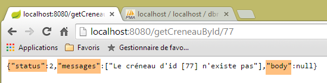 |
8.4.11.15. El URL [/getRvById/{id}]
El URL [/getRvById/{id}] se procesa mediante el siguiente método del controlador [RdvMedecinsController]:
@RequestMapping(value = "/getRvById/{id}", method = RequestMethod.GET, produces = "application/json; charset=UTF-8")
@ResponseBody
public String getRvById(@PathVariable("id") long id) throws JsonProcessingException {
// la respuesta
Response<Rv> response;
// estado de la aplicación
if (messages != null) {
response = new Response<>(-1, messages, null);
} else {
// se recupera rv
response = getRv(id);
}
// respuesta
return jsonMapperShortRv.writeValueAsString(response);
}
- líneas 5, 14: el método devuelve la cadena jSON de tipo [Response<Rv>];
Línea 11, el método [getRv] es el siguiente:
private Response<Rv> getRv(long id) {
// se recupera el Rv
Rv rv = null;
try {
rv = application.getRvById(id);
} catch (RuntimeException e1) {
return new Response<Rv>(1, Static.getErreursForException(e1), null);
}
// ¿Existe Rv?
if (rv == null) {
List<String> messages = new ArrayList<String>();
messages.add(String.format("Le rendez-vous d'id [%s] n'existe pas", id));
return new Response<Rv>(2, messages, null);
}
// ok
return new Response<Rv>(0, null, rv);
}
La clase [Rv] tiene dos campos con la anotación [fetch = FetchType.LAZY]: los campos [creneau] y [client]. Por lo tanto, estos campos no se recuperan cuando se busca un [Rv] mediante su clave primaria. Por lo tanto, por las mismas razones que antes, hay que excluirlos de la serialización. Esto es lo que hace el mapeador [jsonMapperShortRv] siguiente, definido en la clase [WebConfig]:
@Bean
public ObjectMapper jsonMapperShortRv() {
ObjectMapper jsonMapperShortRv = new ObjectMapper();
SimpleBeanPropertyFilter rvFilter = SimpleBeanPropertyFilter.serializeAllExcept("client", "creneau");
jsonMapperShortRv.setFilters(new SimpleFilterProvider().addFilter("rvFilter", rvFilter));
return jsonMapperShortRv;
}
Los resultados obtenidos son los siguientes:
 |
o bien estos si el número de la cita es incorrecto:
 |
8.4.11.16. El URL [/ajouterRv]
El URL [/ajouterRv] se procesa mediante el siguiente método del controlador [RdvMedecinsController]:
@RequestMapping(value = "/ajouterRv", method = RequestMethod.POST, produces = "application/json; charset=UTF-8", consumes = "application/json; charset=UTF-8")
@ResponseBody
public String ajouterRv(@RequestBody PostAjouterRv post) throws JsonProcessingException {
// la respuesta
Response<Rv> response = null;
boolean erreur = false;
// estado de la aplicación
if (messages != null) {
response = new Response<>(-1, messages, null);
erreur = true;
}
// se recuperan los valores enviados
String jour;
long idCreneau = -1;
long idClient = -1;
Date jourAgenda = null;
if (!erreur) {
// se recuperan los valores enviados
jour = post.getJour();
idCreneau = post.getIdCreneau();
idClient = post.getIdClient();
// se comprueba la fecha
SimpleDateFormat sdf = new SimpleDateFormat("yyyy-MM-dd");
sdf.setLenient(false);
try {
jourAgenda = sdf.parse(jour);
} catch (ParseException e) {
List<String> messages = new ArrayList<String>();
messages.add(String.format("La date [%s] est invalide", jour));
response = new Response<>(6, messages, null);
erreur = true;
}
}
// se recupera la franja horaria
Response<Creneau> responseCréneau = null;
if (!erreur) {
// se recupera la franja horaria
responseCréneau = getCreneau(idCreneau);
if (responseCréneau.getStatus() != 0) {
erreur = true;
response = new Response<>(responseCréneau.getStatus(), responseCréneau.getMessages(), null);
}
}
// se recupera el cliente
Response<Client> responseClient = null;
Creneau créneau = null;
if (!erreur) {
créneau = (Creneau) responseCréneau.getBody();
// se recupera el cliente
responseClient = getClient(idClient);
if (responseClient.getStatus() != 0) {
erreur = true;
response = new Response<>(responseClient.getStatus() + 2, responseClient.getMessages(), null);
}
}
if (!erreur) {
Client client = responseClient.getBody();
// se añade el Rv
try {
response = new Response<>(0, null, application.ajouterRv(jourAgenda, créneau, client));
} catch (RuntimeException e1) {
erreur = true;
response = new Response<>(5, Static.getErreursForException(e1), null);
}
}
// respuesta
return jsonMapperLongRv.writeValueAsString(response);
}
- líneas 5, 67: el método debe devolver la cadena jSON de tipo [Response<Rv>];
- línea 3: la anotación [@RequestBody PostAjouterRv post] recupera el cuerpo de POST y lo coloca en el parámetro [PostAjouterRv post]. Este cuerpo es el de jSON [consumes = "application/json; charset=UTF-8"], que se deserializará automáticamente en el siguiente tipo [PostAjouterRv]:
public class PostAjouterRv {
// datos del post
private String jour;
private long idClient;
private long idCreneau;
...
- a continuación, hay código que ya se ha encontrado de una forma u otra;
- línea 67: la configuración de los filtros jSON, [creneauFilter] y [rvFilter]. El método convierte la cadena jSON en un tipo [Response<Rv>], donde Rv se obtuvo en la línea 61. El objeto [Rv] encapsula un objeto [Creneau], así como un objeto [Client]. El objeto [Creneau] tiene una dependencia [FetchType.LAZY] sobre un objeto [Medecin] y se ha obtenido en las líneas 36-44. Se ha buscado en el contexto JPA mediante su clave primaria y se ha obtenido sin su dependencia [FetchType.LAZY]. Finalmente,
- el objeto [Rv] tiene todas sus dependencias. Estas pueden serializarse;
- el objeto [Creneau] no tiene su dependencia [medecin]. Por lo tanto, esta no debe ser serializada;
El mapeador jSON [jsonMapperLongRv] definido en la clase [WebConfig] cumple estas restricciones:
@Bean
public ObjectMapper jsonMapperLongRv() {
ObjectMapper jsonMapperLongRv = new ObjectMapper();
SimpleBeanPropertyFilter rvFilter = SimpleBeanPropertyFilter.serializeAllExcept("");
SimpleBeanPropertyFilter creneauFilter = SimpleBeanPropertyFilter.serializeAllExcept("medecin");
jsonMapperLongRv.setFilters(new SimpleFilterProvider().addFilter("rvFilter", rvFilter).addFilter("creneauFilter",creneauFilter));
return jsonMapperLongRv;
}
Los resultados obtenidos son similares a estos con el cliente [Advanced Rest Client]:
 |
- en [1], el URL del POST;
- en [2], el POST;
- en [3], el valor publicado;
- en [4a], este valor publicado procede de jSON;
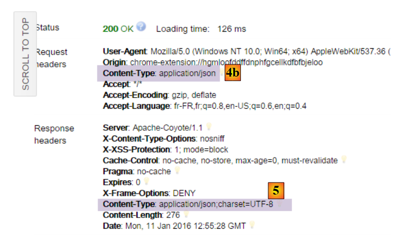 |
- en [4b], el cliente indica que envía jSON;
- en [5], el servidor indica que devuelve jSON;
 |
- en [6], la respuesta jSON del servidor que representa la cita añadida. En ella se ve el identificador [id] de la cita añadida;
Se obtiene lo siguiente con un número de franja horaria inexistente:
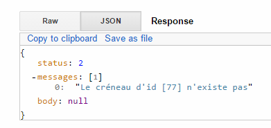 |
8.4.11.17. El URL [/supprimerRv]
El URL [/supprimerRv] se procesa mediante el siguiente método del controlador [RdvMedecinsController]:
@RequestMapping(value = "/supprimerRv", method = RequestMethod.POST, produces = "application/json; charset=UTF-8", consumes = "application/json; charset=UTF-8")
@ResponseBody
public String supprimerRv(@RequestBody PostSupprimerRv post) throws JsonProcessingException {
// la respuesta
Response<Void> response = null;
boolean erreur = false;
// encabezados CORS
rdvMedecinsCorsController.sendOptions(origin, httpServletResponse);
// estado de la aplicación
if (messages != null) {
response = new Response<>(-1, messages, null);
erreur = true;
}
// se recuperan los valores enviados
long idRv = post.getIdRv();
// se recupera el rv
if (!erreur) {
Response<Rv> responseRv = getRv(idRv);
if (responseRv.getStatus() != 0) {
response = new Response<>(responseRv.getStatus(), responseRv.getMessages(), null);
erreur = true;
}
}
if (!erreur) {
// eliminación del rv
try {
application.supprimerRv(idRv);
response = new Response<Void>(0, null, null);
} catch (RuntimeException e1) {
response = new Response<>(3, Static.getErreursForException(e1), null);
}
}
// respuesta
return jsonMapper.writeValueAsString(response);
}
- línea 5: el tipo [Void] es la clase correspondiente al tipo primitivo [void];
- líneas 5, 34: el método devuelve la cadena jSON de un tipo [Response<Void>] que no tiene filtros jSON. Por lo tanto, en la línea 34 se utiliza el mapeador jSON sin filtros;
- línea 3: el método tiene como parámetro el cuerpo del POST, es decir, el valor enviado. Este se recibe en formato jSON [consumes = "application/json; charset=UTF-8"] y se deserializa automáticamente en el siguiente tipo [PostSupprimerRv]:
public class PostSupprimerRv {
// datos del post
private long idRv;
- línea 28: cuando la eliminación se ha realizado correctamente, se envía una respuesta con [status=0];
Los resultados obtenidos son los siguientes:
 |
 |
- en [5], el campo [status=0] indica que la eliminación se ha realizado correctamente;
Con un número de cita que no existe, se obtiene lo siguiente:
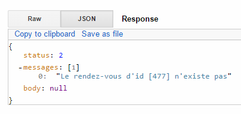 |
Hemos terminado con el controlador. Ahora veremos cómo ejecutar el proyecto.
8.4.11.18. La clase ejecutable del servicio web
 |
La clase [Boot] [1] es la siguiente:
package rdvmedecins.web.boot;
import org.springframework.boot.SpringApplication;
import rdvmedecins.web.config.AppConfig;
public class Boot {
public static void main(String[] args) {
SpringApplication.run(AppConfig.class, args);
}
}
En la línea 10, se ejecuta el método estático [SpringApplication.run] con la clase de configuración del proyecto [AppConfig] como primer parámetro. Este método llevará a cabo la autoconfiguración del proyecto, iniciará el servidor Tomcat integrado en las dependencias y desplegará en él el controlador [RdvMedecinsController].
Los registros se controlan mediante los siguientes archivos [2]:
[logback.xml]
<configuration>
<appender name="STDOUT" class="ch.qos.logback.core.ConsoleAppender">
<!-- a los codificadores se les asigna por defecto el tipo ch.qos.logback.classic.encoder.PatternLayoutEncoder -->
<encoder>
<pattern>%d{HH:mm:ss.SSS} [%thread] %-5level %logger{36} - %msg%n</pattern>
</encoder>
</appender>
<!-- control del nivel de los registros -->
<root level="info"> <!-- desactivado, información, debug, advertencia -->
<appender-ref ref="STDOUT" />
</root>
</configuration>
- línea 9: el nivel general de registros se establece en [info];
[application.properties]
logging.level.org.springframework.web=INFO
logging.level.org.hibernate=OFF
spring.main.show-banner=false
Las líneas 1-2 permiten un nivel de registro específico para ciertos elementos de la aplicación:
- línea 1: queremos los registros de la capa [web];
- línea 2: no queremos los registros de la capa [JPA];
- línea 3: sin banner de Spring Boot;
Los registros durante la ejecución son los siguientes:
11:06:04,279 |-INFO in ch.qos.logback.classic.LoggerContext[default] - Could NOT find resource [logback.groovy]
11:06:04,279 |-INFO in ch.qos.logback.classic.LoggerContext[default] - Could NOT find resource [logback-test.xml]
11:06:04,279 |-INFO in ch.qos.logback.classic.LoggerContext[default] - Found resource [logback.xml] at [file:/D:/data/istia-1516/projets/springmvc-thymeleaf/dvp-final/etude-de-cas/rdvmedecins-webjson-server/target/classes/logback.xml]
11:06:04,279 |-WARN in ch.qos.logback.classic.LoggerContext[default] - Resource [logback.xml] occurs multiple times on the classpath.
11:06:04,279 |-WARN in ch.qos.logback.classic.LoggerContext[default] - Resource [logback.xml] occurs at [file:/D:/data/istia-1516/projets/springmvc-thymeleaf/dvp-final/etude-de-cas/rdvmedecins-metier-dao/target/classes/logback.xml]
11:06:04,279 |-WARN in ch.qos.logback.classic.LoggerContext[default] - Resource [logback.xml] occurs at [file:/D:/data/istia-1516/projets/springmvc-thymeleaf/dvp-final/etude-de-cas/rdvmedecins-webjson-server/target/classes/logback.xml]
11:06:04,342 |-INFO in ch.qos.logback.classic.joran.action.ConfigurationAction - debug attribute not set
11:06:04,342 |-INFO in ch.qos.logback.core.joran.action.AppenderAction - About to instantiate appender of type [ch.qos.logback.core.ConsoleAppender]
11:06:04,342 |-INFO in ch.qos.logback.core.joran.action.AppenderAction - Naming appender as [STDOUT]
11:06:04,357 |-INFO in ch.qos.logback.core.joran.action.NestedComplexPropertyIA - Assuming default type [ch.qos.logback.classic.encoder.PatternLayoutEncoder] for [encoder] property
11:06:04,404 |-INFO in ch.qos.logback.classic.joran.action.RootLoggerAction - Setting level of ROOT logger to INFO
11:06:04,404 |-INFO in ch.qos.logback.core.joran.action.AppenderRefAction - Attaching appender named [STDOUT] to Logger[ROOT]
11:06:04,404 |-INFO in ch.qos.logback.classic.joran.action.ConfigurationAction - End of configuration.
11:06:04,420 |-INFO in ch.qos.logback.classic.joran.JoranConfigurator@56f4468b - Registering current configuration as safe fallback point
11:06:04.732 [main] INFO rdvmedecins.web.boot.Boot - Starting Boot on Gportpers3 with PID 420 (D:\data\istia-1516\projets\springmvc-thymeleaf\dvp-final\etude-de-cas\rdvmedecins-webjson-server\target\classes started by usrlocal in D:\data\istia-1516\projets\springmvc-thymeleaf\dvp-final\etude-de-cas\rdvmedecins-webjson-server)
11:06:04.775 [main] INFO o.s.b.c.e.AnnotationConfigEmbeddedWebApplicationContext - Refreshing org.springframework.boot.context.embedded.AnnotationConfigEmbeddedWebApplicationContext@2ea6137: startup date [Wed Oct 14 11:06:04 CEST 2015]; root of context hierarchy
11:06:05.538 [main] INFO o.s.b.c.e.t.TomcatEmbeddedServletContainer - Tomcat initialized with port(s): 8080 (http)
11:06:05.688 [main] INFO o.a.catalina.core.StandardService - Starting service Tomcat
11:06:05.689 [main] INFO o.a.catalina.core.StandardEngine - Starting Servlet Engine: Apache Tomcat/8.0.26
11:06:05.833 [localhost-startStop-1] INFO o.a.c.c.C.[Tomcat].[localhost].[/] - Initializing Spring embedded WebApplicationContext
11:06:05.833 [localhost-startStop-1] INFO o.s.web.context.ContextLoader - Root WebApplicationContext: initialization completed in 1061 ms
11:06:06.231 [localhost-startStop-1] INFO o.s.o.j.LocalContainerEntityManagerFactoryBean - Building JPA container EntityManagerFactory for persistence unit 'default'
11:06:09.234 [localhost-startStop-1] INFO o.s.s.web.DefaultSecurityFilterChain - Creating filter chain: org.springframework.security.web.util.matcher.AnyRequestMatcher@1, [org.springframework.security.web.context.request.async.WebAsyncManagerIntegrationFilter@12d14fa, org.springframework.security.web.context.SecurityContextPersistenceFilter@29823fb6, org.springframework.security.web.header.HeaderWriterFilter@662d93b2, org.springframework.security.web.authentication.logout.LogoutFilter@2d81ee0, org.springframework.security.web.authentication.www.BasicAuthenticationFilter@52aa47ad, org.springframework.security.web.savedrequest.RequestCacheAwareFilter@60bd7a74, org.springframework.security.web.servletapi.SecurityContextHolderAwareRequestFilter@5a374232, org.springframework.security.web.authentication.AnonymousAuthenticationFilter@7ddb4452, org.springframework.security.web.session.SessionManagementFilter@2cd9855f, org.springframework.security.web.access.ExceptionTranslationFilter@2263f0a2, org.springframework.security.web.access.intercept.FilterSecurityInterceptor@192ce7f6]
11:06:09.255 [localhost-startStop-1] INFO o.s.b.c.e.ServletRegistrationBean - Mapping servlet: 'dispatcherServlet' to [/*]
11:06:09.255 [localhost-startStop-1] INFO o.s.b.c.e.FilterRegistrationBean - Mapping filter: 'springSecurityFilterChain' to: [/*]
11:06:09.536 [main] INFO o.s.w.s.m.m.a.RequestMappingHandlerMapping - Mapped "{[/authenticate],methods=[GET]}" onto public rdvmedecins.web.models.Response<java.lang.Void> rdvmedecins.web.controllers.RdvMedecinsController.authenticate(javax.servlet.http.HttpServletResponse,java.lang.String)
11:06:09.536 [main] INFO o.s.w.s.m.m.a.RequestMappingHandlerMapping - Mapped "{[/getAgendaMedecinJour/{idMedecin}/{jour}],methods=[GET]}" onto public rdvmedecins.web.models.Response<java.lang.String> rdvmedecins.web.controllers.RdvMedecinsController.getAgendaMedecinJour(long,java.lang.String,javax.servlet.http.HttpServletResponse,java.lang.String) throws com.fasterxml.jackson.core.JsonProcessingException
11:06:09.536 [main] INFO o.s.w.s.m.m.a.RequestMappingHandlerMapping - Mapped "{[/getAllCreneaux/{idMedecin}],methods=[GET]}" onto public rdvmedecins.web.models.Response<java.lang.String> rdvmedecins.web.controllers.RdvMedecinsController.getAllCreneaux(long,javax.servlet.http.HttpServletResponse,java.lang.String) throws com.fasterxml.jackson.core.JsonProcessingException
11:06:09.536 [main] INFO o.s.w.s.m.m.a.RequestMappingHandlerMapping - Mapped "{[/getRvMedecinJour/{idMedecin}/{jour}],methods=[GET]}" onto public rdvmedecins.web.models.Response<java.lang.String> rdvmedecins.web.controllers.RdvMedecinsController.getRvMedecinJour(long,java.lang.String,javax.servlet.http.HttpServletResponse,java.lang.String) throws com.fasterxml.jackson.core.JsonProcessingException
11:06:09.536 [main] INFO o.s.w.s.m.m.a.RequestMappingHandlerMapping - Mapped "{[/getMedecinById/{id}],methods=[GET]}" onto public rdvmedecins.web.models.Response<rdvmedecins.entities.Medecin> rdvmedecins.web.controllers.RdvMedecinsController.getMedecinById(long,javax.servlet.http.HttpServletResponse,java.lang.String)
11:06:09.536 [main] INFO o.s.w.s.m.m.a.RequestMappingHandlerMapping - Mapped "{[/getClientById/{id}],methods=[GET]}" onto public rdvmedecins.web.models.Response<rdvmedecins.entities.Client> rdvmedecins.web.controllers.RdvMedecinsController.getClientById(long,javax.servlet.http.HttpServletResponse,java.lang.String)
11:06:09.536 [main] INFO o.s.w.s.m.m.a.RequestMappingHandlerMapping - Mapped "{[/supprimerRv],methods=[POST],consumes=[application/json;charset=UTF-8]}" onto public rdvmedecins.web.models.Response<java.lang.Void> rdvmedecins.web.controllers.RdvMedecinsController.supprimerRv(rdvmedecins.web.models.PostSupprimerRv,javax.servlet.http.HttpServletResponse,java.lang.String)
11:06:09.536 [main] INFO o.s.w.s.m.m.a.RequestMappingHandlerMapping - Mapped "{[/getAllClients],methods=[GET]}" onto public rdvmedecins.web.models.Response<java.util.List<rdvmedecins.entities.Client>> rdvmedecins.web.controllers.RdvMedecinsController.getAllClients(javax.servlet.http.HttpServletResponse,java.lang.String)
11:06:09.536 [main] INFO o.s.w.s.m.m.a.RequestMappingHandlerMapping - Mapped "{[/ajouterRv],methods=[POST],consumes=[application/json;charset=UTF-8]}" onto public rdvmedecins.web.models.Response<java.lang.String> rdvmedecins.web.controllers.RdvMedecinsController.ajouterRv(rdvmedecins.web.models.PostAjouterRv,javax.servlet.http.HttpServletResponse,java.lang.String) throws com.fasterxml.jackson.core.JsonProcessingException
11:06:09.536 [main] INFO o.s.w.s.m.m.a.RequestMappingHandlerMapping - Mapped "{[/getCreneauById/{id}],methods=[GET]}" onto public rdvmedecins.web.models.Response<java.lang.String> rdvmedecins.web.controllers.RdvMedecinsController.getCreneauById(long,javax.servlet.http.HttpServletResponse,java.lang.String) throws com.fasterxml.jackson.core.JsonProcessingException
11:06:09.536 [main] INFO o.s.w.s.m.m.a.RequestMappingHandlerMapping - Mapped "{[/getAllMedecins],methods=[GET]}" onto public rdvmedecins.web.models.Response<java.util.List<rdvmedecins.entities.Medecin>> rdvmedecins.web.controllers.RdvMedecinsController.getAllMedecins(javax.servlet.http.HttpServletResponse,java.lang.String)
11:06:09.536 [main] INFO o.s.w.s.m.m.a.RequestMappingHandlerMapping - Mapped "{[/getRvById/{id}],methods=[GET]}" onto public rdvmedecins.web.models.Response<java.lang.String> rdvmedecins.web.controllers.RdvMedecinsController.getRvById(long,javax.servlet.http.HttpServletResponse,java.lang.String) throws com.fasterxml.jackson.core.JsonProcessingException
...
11:06:09.677 [main] INFO o.s.w.s.m.m.a.RequestMappingHandlerAdapter - Looking for @ControllerAdvice: org.springframework.boot.context.embedded.AnnotationConfigEmbeddedWebApplicationContext@2ea6137: startup date [Wed Oct 14 11:06:04 CEST 2015]; root of context hierarchy
11:06:09.770 [main] INFO o.a.coyote.http11.Http11NioProtocol - Initializing ProtocolHandler ["http-nio-8080"]
11:06:09.786 [main] INFO o.a.coyote.http11.Http11NioProtocol - Starting ProtocolHandler ["http-nio-8080"]
11:06:09.802 [main] INFO o.a.tomcat.util.net.NioSelectorPool - Using a shared selector for servlet write/read
11:06:09.817 [main] INFO o.s.b.c.e.t.TomcatEmbeddedServletContainer - Tomcat started on port(s): 8080 (http)
11:06:09.817 [main] INFO rdvmedecins.web.boot.Boot - Started Boot in 5.319 seconds (JVM running for 6.053)
- línea 18: el servidor Tomcat está activo;
- línea 21: el contexto Spring se está inicializando;
- líneas 27-38: se detectan los URL expuestos por el servicio web;
- línea 44: el servidor Tomcat está listo y espera solicitudes en el puerto 8080;
Si modificamos el archivo [application.properties] de la siguiente manera:
logging.level.org.springframework.web: OFF
logging.level.org.hibernate:OFF
spring.main.show-banner=false
se obtienen los siguientes registros:
Si, además, modificamos el archivo [logback.xml] de la siguiente manera:
<configuration>
<appender name="STDOUT" class="ch.qos.logback.core.ConsoleAppender">
<!-- a los codificadores se les asigna por defecto el tipo ch.qos.logback.classic.encoder.PatternLayoutEncoder -->
<encoder>
<pattern>%d{HH:mm:ss.SSS} [%thread] %-5level %logger{36} - %msg%n</pattern>
</encoder>
</appender>
<!-- control del nivel de los registros -->
<root level="off"> <!-- desactivado, info, debug, advertencia -->
<appender-ref ref="STDOUT" />
</root>
</configuration>
se obtienen los siguientes registros:
Por lo tanto, vemos que tenemos cierto control sobre los registros que aparecen en la consola. El nivel [info] suele ser el nivel adecuado de registros.
Ahora tenemos un servicio web operativo al que se puede acceder con un cliente web. A continuación, abordaremos la seguridad de este servicio: queremos que solo determinadas personas puedan gestionar las citas de los médicos. Para ello, utilizaremos el marco Spring Security, una rama del ecosistema Spring.
8.4.12. Introducción a Spring Security
Volvemos a importar una guía de Spring siguiendo los pasos 1 a 3 que se indican a continuación:
 |
 |
El proyecto se compone de los siguientes elementos:
- en la carpeta [templates], se encuentran las páginas HTML del proyecto;
- [Application]: es la clase ejecutable del proyecto;
- [MvcConfig]: es la clase de configuración de Spring MVC;
- [WebSecurityConfig]: es la clase de configuración de Spring Security;
8.4.12.1. Configuración de Maven
El proyecto [3] es un proyecto Maven. Examinemos su archivo [pom.xml] para conocer sus dependencias:
<?xml version="1.0" encoding="UTF-8"?>
<project xmlns="http://maven.apache.org/POM/4.0.0" xmlns:xsi="http://www.w3.org/2001/XMLSchema-instance"
xsi:schemaLocation="http://maven.apache.org/POM/4.0.0 http://maven.apache.org/xsd/maven-4.0.0.xsd">
<modelVersion>4.0.0</modelVersion>
<groupId>org.springframework</groupId>
<artifactId>gs-securing-web</artifactId>
<version>0.1.0</version>
<parent>
<groupId>org.springframework.boot</groupId>
<artifactId>spring-boot-starter-parent</artifactId>
<version>1.1.10.RELEASE</version>
</parent>
<dependencies>
<dependency>
<groupId>org.springframework.boot</groupId>
<artifactId>spring-boot-starter-thymeleaf</artifactId>
</dependency>
<!-- etiqueta::seguridad[] -->
<dependency>
<groupId>org.springframework.boot</groupId>
<artifactId>spring-boot-starter-security</artifactId>
</dependency>
<!-- fin::seguridad[] -->
</dependencies>
<properties>
<start-class>hello.Application</start-class>
</properties>
<build>
<plugins>
<plugin>
<groupId>org.springframework.boot</groupId>
<artifactId>spring-boot-maven-plugin</artifactId>
</plugin>
</plugins>
</build>
</project>
- líneas 10-14: el proyecto es un proyecto Spring Boot;
- líneas 17-20: dependencia del framework [Thymeleaf];
- líneas 22-25: dependencia del framework Spring Security;
8.4.12.2. Las vistas Thymeleaf
 |
La vista [home.html] es la siguiente:
 |
<!DOCTYPE html>
<html xmlns="http://www.w3.org/1999/xhtml"
xmlns:th="http://www.thymeleaf.org"
xmlns:sec="http://www.thymeleaf.org/thymeleaf-extras-springsecurity3">
<head>
<title>Spring Security Example</title>
</head>
<body>
<h1>Welcome!</h1>
<p>
Click <a th:href="@{/hello}">here</a> to see a greeting.
</p>
</body>
</html>
- línea 12: el atributo [th:href="@{/hello}"] generará el atributo [href] de la etiqueta <a>. El valor [@{/hello}] generará la ruta [<context>/hello], donde [context] es el contexto de la aplicación web;
El código HTML generado es el siguiente:
<!DOCTYPE html>
<html xmlns="http://www.w3.org/1999/xhtml" xmlns:sec="http://www.thymeleaf.org/thymeleaf-extras-springsecurity3">
<head>
<title>Spring Security Example</title>
</head>
<body>
<h1>Welcome!</h1>
<p>
Click
<a href="/hello">here</a>
to see a greeting.
</p>
</body>
</html>
La vista [hello.html] es la siguiente:
 |
<!DOCTYPE html>
<html xmlns="http://www.w3.org/1999/xhtml"
xmlns:th="http://www.thymeleaf.org"
xmlns:sec="http://www.thymeleaf.org/thymeleaf-extras-springsecurity3">
<head>
<title>Hello World!</title>
</head>
<body>
<h1 th:inline="text">Hello [[${#httpServletRequest.remoteUser}]]!</h1>
<form th:action="@{/logout}" method="post">
<input type="submit" value="Sign Out" />
</form>
</body>
</html>
- línea 9: El atributo [th:inline="text"] generará el texto de la etiqueta <h1>. Este texto contiene una expresión $ que debe evaluarse. El elemento [[${#httpServletRequest.remoteUser}]] es el valor del atributo [RemoteUser] de la consulta HTTP actual. Es el nombre del usuario conectado;
- línea 10: un formulario HTML. El atributo [th:action="@{/logout}"] generará el atributo [action] de la etiqueta [form]. El valor [@{/logout}] generará la ruta [<context>/logout], donde [context] es el contexto de la aplicación web;
El código HTML generado es el siguiente:
<!DOCTYPE html>
<html xmlns="http://www.w3.org/1999/xhtml" xmlns:sec="http://www.thymeleaf.org/thymeleaf-extras-springsecurity3">
<head>
<title>Hello World!</title>
</head>
<body>
<h1>Hello user!</h1>
<form method="post" action="/logout">
<input type="submit" value="Sign Out" />
<input type="hidden" name="_csrf" value="b152e5b9-d1a4-4492-b89d-b733fe521c91" />
</form>
</body>
</html>
- línea 8: la traducción de Hello [[${#httpServletRequest.remoteUser}]]!;
- línea 9: la traducción de @{/logout};
- línea 11: un campo oculto llamado (atributo name) _csrf;
La última vista [login.html] es la siguiente:
 |
<!DOCTYPE html>
<html xmlns="http://www.w3.org/1999/xhtml"
xmlns:th="http://www.thymeleaf.org"
xmlns:sec="http://www.thymeleaf.org/thymeleaf-extras-springsecurity3">
<head>
<title>Spring Security Example</title>
</head>
<body>
<div th:if="${param.error}">Invalid username and password.</div>
<div th:if="${param.logout}">You have been logged out.</div>
<form th:action="@{/login}" method="post">
<div>
<label> User Name : <input type="text" name="username" />
</label>
</div>
<div>
<label> Password: <input type="password" name="password" />
</label>
</div>
<div>
<input type="submit" value="Sign In" />
</div>
</form>
</body>
</html>
- línea 9: el atributo [th:if="${param.error}"] hace que la etiqueta <div> solo se genere si el URL que muestra la página de inicio de sesión contiene el parámetro [error] (http://context/login?error);
- línea 10: el atributo [th:if="${param.logout}"] hace que la etiqueta <div> solo se genere si el URL que muestra la página de inicio de sesión contiene el parámetro [logout] (http://context/login?logout);
- líneas 11-23: un formulario HTML;
- línea 11: el formulario se enviará a URL [<context>/login], donde <context> es el contexto de la aplicación web;
- línea 13: un campo de entrada denominado [username];
- línea 17: un campo de entrada denominado [password];
El código HTML generado es el siguiente:
<!DOCTYPE html>
<html xmlns="http://www.w3.org/1999/xhtml" xmlns:sec="http://www.thymeleaf.org/thymeleaf-extras-springsecurity3">
<head>
<title>Spring Security Example </title>
</head>
<body>
<div>
You have been logged out.
</div>
<form method="post" action="/login">
<div>
<label>
User Name :
<input type="text" name="username" />
</label>
</div>
<div>
<label>
Password:
<input type="password" name="password" />
</label>
</div>
<div>
<input type="submit" value="Sign In" />
</div>
<input type="hidden" name="_csrf" value="ef809b0a-88b4-4db9-bc53-342216b77632" />
</form>
</body>
</html>
Cabe destacar que, en la línea 28, Thymeleaf ha añadido un campo oculto denominado [_csrf].
8.4.12.3. Configuración de Spring MVC
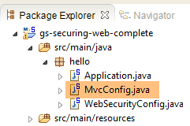 |
La clase [MvcConfig] configura el framework Spring MVC:
package hello;
import org.springframework.context.annotation.Configuration;
import org.springframework.web.servlet.config.annotation.ViewControllerRegistry;
import org.springframework.web.servlet.config.annotation.WebMvcConfigurerAdapter;
@Configuration
public class MvcConfig extends WebMvcConfigurerAdapter {
@Override
public void addViewControllers(ViewControllerRegistry registry) {
registry.addViewController("/home").setViewName("home");
registry.addViewController("/").setViewName("home");
registry.addViewController("/hello").setViewName("hello");
registry.addViewController("/login").setViewName("login");
}
}
- línea 7: la anotación [@Configuration] convierte la clase [MvcConfig] en una clase de configuración;
- línea 8: la clase [MvcConfig] extiende la clase [WebMvcConfigurerAdapter] para redefinir algunos de sus métodos;
- línea 10: redefinición de un método de la clase padre;
- líneas 11-16: el método [addViewControllers] permite asociar URL a vistas HTML. Se realizan las siguientes asociaciones:
URL | vista |
/templates/home.html | |
/plantillas/hola.html | |
/templates/login.html |
El sufijo [html] y la carpeta [templates] son los valores predeterminados utilizados por Thymeleaf. Se pueden cambiar mediante la configuración. La carpeta [templates] debe estar en la raíz de la ruta de clases del proyecto:
 |
Por encima de [1], las carpetas [java] y [resources] son ambas carpetas de origen (source folders). Esto implica que su contenido estará en la raíz del Classpath del proyecto. Por lo tanto, en [2], las carpetas [hello] y [templates] estarán en la raíz de la ruta de clases.
8.4.12.4. Configuración de Spring Security
 |
La clase [WebSecurityConfig] configura el marco Spring Security:
package hello;
import org.springframework.context.annotation.Configuration;
import org.springframework.security.config.annotation.authentication.builders.AuthenticationManagerBuilder;
import org.springframework.security.config.annotation.web.builders.HttpSecurity;
import org.springframework.security.config.annotation.web.configuration.WebSecurityConfigurerAdapter;
import org.springframework.security.config.annotation.web.servlet.configuration.EnableWebMvcSecurity;
@Configuration
@EnableWebMvcSecurity
public class WebSecurityConfig extends WebSecurityConfigurerAdapter {
@Override
protected void configure(HttpSecurity http) throws Exception {
http.authorizeRequests().antMatchers("/", "/home").permitAll().anyRequest().authenticated();
http.formLogin().loginPage("/login").permitAll().and().logout().permitAll();
}
@Override
protected void configure(AuthenticationManagerBuilder auth) throws Exception {
auth.inMemoryAuthentication().withUser("user").password("password").roles("USER");
}
}
- línea 9: la anotación [@Configuration] convierte la clase [WebSecurityConfig] en una clase de configuración;
- línea 10: la anotación [@EnableWebSecurity] convierte la clase [WebSecurityConfig] en una clase de configuración de Spring Security;
- línea 11: la clase [WebSecurity] extiende la clase [WebSecurityConfigurerAdapter] para redefinir algunos de sus métodos;
- línea 12: redefinición de un método de la clase padre;
- líneas 13-16: el método [configure(HttpSecurity http)] se redefine para establecer los derechos de acceso a los distintos URL de la aplicación;
- línea 14: el método [http.authorizeRequests()] permite asociar URL a derechos de acceso. En él se realizan las siguientes asociaciones:
URL | regla | código |
acceso sin autenticación | | |
Acceso solo con autenticación |
- línea 15: define el método de autenticación. La autenticación se realiza a través de un formulario de URL [/login] accesible para todos [http.formLogin().loginPage("/login").permitAll()]. El cierre de sesión (logout) también es accesible para todos;
- líneas 19-21: redefinen el método [configure(AuthenticationManagerBuilder auth)] que gestiona a los usuarios;
- línea 20: la autenticación se realiza con usuarios definidos de forma «fija» [auth.inMemoryAuthentication()]. Aquí se define un usuario con el nombre de usuario [user], la contraseña [password] y el rol [USER]. Se pueden conceder los mismos derechos a los usuarios que tengan el mismo rol;
8.4.12.5. Clase ejecutable
 |
La clase [Application] es la siguiente:
package hello;
import org.springframework.boot.autoconfigure.EnableAutoConfiguration;
import org.springframework.boot.SpringApplication;
import org.springframework.context.annotation.ComponentScan;
import org.springframework.context.annotation.Configuration;
@EnableAutoConfiguration
@Configuration
@ComponentScan
public class Application {
public static void main(String[] args) throws Throwable {
SpringApplication.run(Application.class, args);
}
}
- línea 8: la anotación [@EnableAutoConfiguration] solicita a Spring Boot (línea 3) que realice la configuración que el desarrollador no habrá hecho explícitamente;
- línea 9: convierte la clase [Application] en una clase de configuración de Spring;
- línea 10: solicita el escaneo de la carpeta de la clase [Application] para buscar componentes de Spring. Las dos clases [MvcConfig] y [WebSecurityConfig] serán detectadas de este modo, ya que tienen la anotación [@Configuration];
- línea 13: el método [main] de la clase ejecutable;
- línea 14: se ejecuta el método estático [SpringApplication.run] con la clase de configuración [Application] como parámetro. Ya nos hemos encontrado con este proceso y sabemos que se iniciará el servidor Tomcat integrado en las dependencias Maven del proyecto y que el proyecto se desplegará en él. Hemos visto que cuatro URL eran gestionadas por [/, /home, /login, /hello] y que algunas estaban protegidas por derechos de acceso.
8.4.12.6. Pruebas de la aplicación
Comencemos solicitando el URL [/], que es uno de los cuatro URL aceptados. Está asociado a la vista [/templates/home.html]:
 |
La URL solicitada [/] es accesible para todos. Por eso la hemos obtenido. El enlace [here] es el siguiente:
El URL [/hello] se solicitará al hacer clic en el enlace. Este está protegido:
URL | regla | código |
acceso sin autenticación | | |
Acceso solo con autenticación |
Es necesario estar autenticado para obtenerlo. Spring Security redirigirá entonces el navegador del cliente a la página de autenticación. Según la configuración vista, se trata de la página de URL [/login]. Esta es accesible para todos:
http.formLogin().loginPage("/login").permitAll().and().logout().permitAll();
Así que obtenemos [1]:
 |
El código fuente de la página obtenida es el siguiente:
- En la línea 7 aparece un campo oculto que no está en la página original [login.html]. Lo ha añadido Thymeleaf. Este código, denominado CSRF (Cross Site Request Forgery), tiene como objetivo eliminar una vulnerabilidad de seguridad. Este token debe reenviarse a Spring Security junto con la autenticación para que esta última sea aceptada;
Recordamos que Spring Security solo reconoce al usuario user/password. Si introducimos cualquier otra cosa en [2], obtenemos la misma página con un mensaje de error en [3]. Spring Security ha redirigido el navegador a URL [http://localhost:8080/login?error]. La presencia del parámetro [error] ha activado la visualización de la etiqueta:
<div th:if="${param.error}">Invalid username and password.</div>
Ahora, introduzcamos los valores esperados de usuario/contraseña [4]:
 |
- en [4], nos identificamos;
- en [5], Spring Security nos redirige a URL [/hello], ya que es URL lo que solicitábamos cuando fuimos redirigidos a la página de inicio de sesión. La identidad del usuario se mostró en la siguiente línea de [hello.html]:
La página [5] muestra el siguiente formulario:
<form th:action="@{/logout}" method="post">
<input type="submit" value="Sign Out" />
</form>
Al hacer clic en el botón [Sign Out], se ejecutará un POST en el URL [/logout]. Este, al igual que el URL y el [/login], es accesible para todos:
http.formLogin().loginPage("/login").permitAll().and().logout().permitAll();
En nuestra asociación URL / vistas, no hemos definido nada para URL [/logout]. ¿Qué va a pasar? Probemos:
 |
- en [6], hacemos clic en el botón [Sign Out];
- en [7], vemos que hemos sido redirigidos a URL [http://localhost:8080/login?logout]. Ha sido Spring Security quien ha solicitado esta redirección. La presencia del parámetro [logout] en URL ha hecho que se muestre la siguiente línea de la vista:
<div th:if="${param.logout}">You have been logged out.</div>
8.4.12.7. Conclusión
En el ejemplo anterior, podríamos haber escrito primero la aplicación web y luego haberla protegido. Spring Security no es intrusivo. Se puede implementar la seguridad de una aplicación web ya escrita. Además, hemos descubierto lo siguiente:
- es posible definir una página de autenticación;
- la autenticación debe ir acompañada del token CSRF emitido por Spring Security;
- si la autenticación falla, se redirige a la página de autenticación con un parámetro adicional error en el URL;
- si la autenticación se realiza correctamente, se redirige a la página solicitada en el momento de la autenticación. Si se solicita directamente la página de autenticación sin pasar por una página intermedia, Spring Security nos redirige a la URL [/] (este caso no se ha presentado);
- nos desconectamos solicitando la URL [/logout] con una POST. Spring Security nos redirige entonces a la página de autenticación con el parámetro logout en el URL;
Todas estas conclusiones se basan en los comportamientos predeterminados de Spring Security. Estos comportamientos se pueden modificar mediante la configuración, redefiniendo ciertos métodos de la clase [WebSecurityConfigurerAdapter].
El tutorial anterior nos será de poca ayuda en lo que viene a continuación. De hecho, vamos a utilizar:
- una base de datos para almacenar los usuarios, sus contraseñas y sus roles;
- una autenticación por encabezado HTTP;
Hay muy pocos tutoriales sobre lo que queremos hacer aquí. La solución que se va a proponer es una recopilación de códigos encontrados aquí y allá.
8.4.13. Configuración de la seguridad en el servicio web de citas
8.4.13.1. La base de datos
La base de datos [rdvmedecins] evoluciona para tener en cuenta a los usuarios, sus contraseñas y sus roles. Aparecen tres nuevas tablas:

Tabla [USERS]: los usuarios
- ID: clave primaria;
- VERSION: columna de control de versiones de la fila;
- IDENTITY: una identidad descriptiva del usuario;
- LOGIN: el nombre de usuario;
- PASSWORD: su contraseña;
En la tabla USERS, las contraseñas no se almacenan en texto claro:
 |
El algoritmo que cifra las contraseñas es el algoritmo BCRYPT.
Tabla [ROLES]: los roles
- ID: clave primaria;
- VERSION: columna de control de versiones de la fila;
- NAME: nombre del rol. Por defecto, Spring Security espera nombres con el formato ROLE_XX, por ejemplo, ROLE_ADMIN o ROLE_GUEST;
 |
Tabla [USERS_ROLES]: tabla de unión USERS / ROLES
Un usuario puede tener varios roles, y un rol puede agrupar a varios usuarios. Se trata de una relación muchos a muchos representada por la tabla [USERS_ROLES].
- ID: clave primaria;
- VERSION: columna de control de versiones de la fila;
- USER_ID: identificador de un usuario;
- ROLE_ID: identificador de un rol;
 |
Dado que modificamos la base de datos, deben modificarse todas las capas del proyecto [métier, DAO, JPA]:
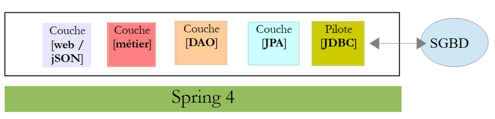 |
8.4.13.2. El nuevo proyecto STS del [métier, DAO, JPA]
El proyecto [rdvmedecins-metier-dao] evoluciona de la siguiente manera:
 |
- en [1]: el nuevo proyecto;
- en [2]: las modificaciones introducidas por motivos de seguridad se han reunido en un único paquete [rdvmedecins.security]. Estos nuevos elementos pertenecen a las capas [JPA] y [DAO], pero por simplicidad se han reunido en un mismo paquete.
8.4.13.3. Las nuevas entidades [JPA]
 |
La capa JPA define tres nuevas entidades:
 |
La clase [User] es la imagen de la tabla [USERS]:
package rdvmedecins.entities;
import javax.persistence.Column;
import javax.persistence.Entity;
import javax.persistence.Table;
@Entity
@Table(name = "USERS")
public class User extends AbstractEntity {
private static final long serialVersionUID = 1L;
// propiedades
private String identity;
private String login;
private String password;
// fabricante
public User() {
}
public User(String identity, String login, String password) {
this.identity = identity;
this.login = login;
this.password = password;
}
// identidad
@Override
public String toString() {
return String.format("User[%s,%s,%s]", identity, login, password);
}
// getters y setters
....
}
- línea 9: la clase amplía la clase [AbstractEntity] ya utilizada para las demás entidades;
- líneas 13-15: no se especifica ningún nombre para las columnas porque tienen el mismo nombre que los campos asociados a ellas;
La clase [Role] es el reflejo de la tabla [ROLES]:
package rdvmedecins.entities;
import javax.persistence.Column;
import javax.persistence.Entity;
import javax.persistence.Table;
@Entity
@Table(name = "ROLES")
public class Role extends AbstractEntity {
private static final long serialVersionUID = 1L;
// propiedades
private String name;
// constructores
public Role() {
}
public Role(String name) {
this.name = name;
}
// identidad
@Override
public String toString() {
return String.format("Role[%s]", name);
}
// getters y setters
...
}
La clase [UserRole] es la imagen de la tabla [USERS_ROLES]:
package rdvmedecins.entities;
import javax.persistence.Entity;
import javax.persistence.JoinColumn;
import javax.persistence.ManyToOne;
import javax.persistence.Table;
@Entity
@Table(name = "USERS_ROLES")
public class UserRole extends AbstractEntity {
private static final long serialVersionUID = 1L;
// un UserRole hace referencia a un usuario
@ManyToOne
@JoinColumn(name = "USER_ID")
private User user;
// un UserRole hace referencia a un Role
@ManyToOne
@JoinColumn(name = "ROLE_ID")
private Role role;
// getters y setters
...
}
- líneas 15-17: representan la clave externa de la tabla [USERS_ROLES] hacia la tabla [USERS];
- líneas 19-21: representan la clave externa de la tabla [USERS_ROLES] hacia la tabla [ROLES];
8.4.13.4. Modificaciones de la capa [DAO]
 |
La capa [DAO] se amplía con tres nuevos [Repository]:
 |
La interfaz [UserRepository] gestiona el acceso a las entidades [User]:
package rdvmedecins.repositories;
import org.springframework.data.jpa.repository.Query;
import org.springframework.data.repository.CrudRepository;
import rdvmedecins.entities.Role;
import rdvmedecins.entities.User;
public interface UserRepository extends CrudRepository<User, Long> {
// lista de roles de un usuario identificado por su id
@Query("select ur.role from UserRole ur where ur.user.id=?1")
Iterable<Role> getRoles(long id);
// lista de roles de un usuario identificado por su nombre de usuario y contraseña
@Query("select ur.role from UserRole ur where ur.user.login=?1 and ur.user.password=?2")
Iterable<Role> getRoles(String login, String password);
// búsqueda de un usuario por su nombre de usuario
User findUserByLogin(String login);
}
- línea 9: la interfaz [UserRepository] amplía la interfaz [CrudRepository] de Spring Data (línea 4);
- líneas 12-13: el método [getRoles(User user)] permite obtener todos los roles de un usuario identificado mediante su [id]
- líneas 16-17: lo mismo, pero para un usuario identificado por su nombre de usuario y contraseña;
- línea 20: para buscar un usuario mediante su nombre de usuario;
La interfaz [RoleRepository] gestiona los accesos a las entidades [Role]:
package rdvmedecins.security;
import org.springframework.data.repository.CrudRepository;
public interface RoleRepository extends CrudRepository<Role, Long> {
// búsqueda de un rol mediante su nombre
Role findRoleByName(String name);
}
- línea 5: la interfaz [RoleRepository] amplía la interfaz [CrudRepository];
- línea 8: se puede buscar un rol por su nombre;
La interfaz [userRoleRepository] gestiona el acceso a las entidades [UserRole]:
package rdvmedecins.security;
import org.springframework.data.repository.CrudRepository;
public interface UserRoleRepository extends CrudRepository<UserRole, Long> {
}
- línea 5: la interfaz [UserRoleRepository] se limita a ampliar la interfaz [CrudRepository] sin añadirle nuevos métodos;
8.4.13.5. Las clases de gestión de usuarios y roles
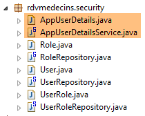 |
Spring Security exige la creación de una clase que implemente la siguiente interfaz [UsersDetail]:
 |
Esta interfaz se implementa aquí mediante la clase [AppUserDetails]:
package rdvmedecins.security;
import java.util.ArrayList;
import java.util.Collection;
import org.springframework.security.core.GrantedAuthority;
import org.springframework.security.core.authority.SimpleGrantedAuthority;
import org.springframework.security.core.userdetails.UserDetails;
public class AppUserDetails implements UserDetails {
private static final long serialVersionUID = 1L;
// características
private User user;
private UserRepository userRepository;
// fabricantes
public AppUserDetails() {
}
public AppUserDetails(User user, UserRepository userRepository) {
this.user = user;
this.userRepository = userRepository;
}
// -------------------------interfaz
@Override
public Collection<? extends GrantedAuthority> getAuthorities() {
Collection<GrantedAuthority> authorities = new ArrayList<>();
for (Role role : userRepository.getRoles(user.getId())) {
authorities.add(new SimpleGrantedAuthority(role.getName()));
}
return authorities;
}
@Override
public String getPassword() {
return user.getPassword();
}
@Override
public String getUsername() {
return user.getLogin();
}
@Override
public boolean isAccountNonExpired() {
return true;
}
@Override
public boolean isAccountNonLocked() {
return true;
}
@Override
public boolean isCredentialsNonExpired() {
return true;
}
@Override
public boolean isEnabled() {
return true;
}
// getters y setters
...
}
- línea 10: la clase [AppUserDetails] implementa la interfaz [UserDetails];
- líneas 15-16: la clase encapsula un usuario (línea 15) y el repositorio que permite obtener los detalles de dicho usuario (línea 16);
- líneas 22-25: el constructor que instancia la clase con un usuario y su repositorio;
- líneas 28-35: implementación del método [getAuthorities] de la interfaz [UserDetails]. Debe construir una colección de elementos de tipo [GrantedAuthority] o derivado. Aquí utilizamos el tipo derivado [SimpleGrantedAuthority] (línea 32) que encapsula el nombre de uno de los roles del usuario de la línea 15;
- líneas 31-33: se recorre la lista de roles del usuario de la línea 15 para construir una lista de elementos de tipo [SimpleGrantedAuthority];
- líneas 38-40: implementan el método [getPassword] de la interfaz [UserDetails]. Se devuelve la contraseña del usuario de la línea 15;
- líneas 38-40: implementan el método [getUserName] de la interfaz [UserDetails]. Se devuelve el nombre de usuario de la línea 15;
- líneas 47-50: la cuenta del usuario nunca caduca;
- líneas 52-55: la cuenta del usuario nunca se bloquea;
- líneas 57-60: las credenciales del usuario nunca caducan;
- líneas 62-65: la cuenta del usuario siempre está activa;
Spring Security también exige la existencia de una clase que implemente la interfaz [AppUserDetailsService]:
 |
Esta interfaz está implementada por la siguiente clase [AppUserDetailsService]:
package rdvmedecins.security;
import org.springframework.beans.factory.annotation.Autowired;
import org.springframework.security.core.userdetails.UserDetails;
import org.springframework.security.core.userdetails.UserDetailsService;
import org.springframework.security.core.userdetails.UsernameNotFoundException;
import org.springframework.stereotype.Service;
@Service
public class AppUserDetailsService implements UserDetailsService {
@Autowired
private UserRepository userRepository;
@Override
public UserDetails loadUserByUsername(String login) throws UsernameNotFoundException {
// se busca al usuario por su nombre de usuario
User user = userRepository.findUserByLogin(login);
// ¿Encontrado?
if (user == null) {
throw new UsernameNotFoundException(String.format("login [%s] inexistant", login));
}
// se muestran los datos del usuario
return new AppUserDetails(user, userRepository);
}
}
- línea 9: la clase será un componente Spring, por lo que estará disponible en su contexto;
- líneas 12-13: el componente [UserRepository] se inyectará aquí;
- líneas 16-25: implementación del método [loadUserByUsername] de la interfaz [UserDetailsService] (línea 10). El parámetro es el nombre de usuario;
- línea 18: se busca al usuario mediante su nombre de usuario;
- líneas 20-22: si no se encuentra, se lanza una excepción;
- línea 24: se crea y se representa un objeto [AppUserDetails]. Es del tipo [UserDetails] (línea 16);
8.4.13.6. Pruebas de la capa [DAO]
 |
En primer lugar, creamos una clase ejecutable [CreateUser] capaz de crear un usuario con un rol:
package rdvmedecins.security;
import org.springframework.context.annotation.AnnotationConfigApplicationContext;
import org.springframework.security.crypto.bcrypt.BCrypt;
import rdvmedecins.config.DomainAndPersistenceConfig;
import rdvmedecins.security.Role;
import rdvmedecins.security.RoleRepository;
import rdvmedecins.security.User;
import rdvmedecins.security.UserRepository;
import rdvmedecins.security.UserRole;
import rdvmedecins.security.UserRoleRepository;
public class CreateUser {
public static void main(String[] args) {
// sintaxis: nombre de usuario contraseña roleName
// se necesitan tres parámetros
if (args.length != 3) {
System.out.println("Syntaxe : [pg] user password role");
System.exit(0);
}
// se recuperan los parámetros
String login = args[0];
String password = args[1];
String roleName = String.format("ROLE_%s", args[2].toUpperCase());
// contexto Spring
AnnotationConfigApplicationContext context = new AnnotationConfigApplicationContext(DomainAndPersistenceConfig.class);
UserRepository userRepository = context.getBean(UserRepository.class);
RoleRepository roleRepository = context.getBean(RoleRepository.class);
UserRoleRepository userRoleRepository = context.getBean(UserRoleRepository.class);
// ¿existe ya el rol?
Role role = roleRepository.findRoleByName(roleName);
// si no existe, se crea
if (role == null) {
role = roleRepository.save(new Role(roleName));
}
// ¿existe ya el usuario?
User user = userRepository.findUserByLogin(login);
// si no existe, lo creamos
if (user == null) {
// se aplica el hash a la contraseña con bcrypt
String crypt = BCrypt.hashpw(password, BCrypt.gensalt());
// se guarda el usuario
user = userRepository.save(new User(login, login, crypt));
// se crea la relación con el rol
userRoleRepository.save(new UserRole(user, role));
} else {
// el usuario ya existe: ¿tiene el rol solicitado?
boolean trouvé = false;
for (Role r : userRepository.getRoles(user.getId())) {
if (r.getName().equals(roleName)) {
trouvé = true;
break;
}
}
// si no se encuentra, se crea la relación con el rol
if (!trouvé) {
userRoleRepository.save(new UserRole(user, role));
}
}
// cierre del contexto Spring
context.close();
}
}
- línea 17: la clase espera tres argumentos que definen a un usuario: su nombre de usuario, su contraseña y su rol;
- líneas 25-27: se recuperan los tres parámetros;
- línea 29: el contexto Spring se construye a partir de la clase de configuración [DomainAndPersistenceConfig]. Esta clase ya existía en el proyecto inicial. Debe evolucionar de la siguiente manera:
@EnableJpaRepositories(basePackages = { "rdvmedecins.repositories", "rdvmedecins.security" })
@EnableAutoConfiguration
@ComponentScan(basePackages = { "rdvmedecins" })
@EntityScan(basePackages = { "rdvmedecins.entities", "rdvmedecins.security" })
@EnableTransactionManagement
public class DomainAndPersistenceConfig {
....
}
- línea 1: hay que indicar que ahora hay componentes [Repository] en el paquete [rdvmedecins.security];
- línea 4: hay que indicar que ahora hay entidades JPA en el paquete [rdvmedecins.security];
Volvamos al código de creación de un usuario:
- líneas 30-32: recuperamos las referencias de los tres [Repository] que nos pueden ser útiles para crear el usuario;
- línea 34: se comprueba si el rol ya existe;
- líneas 36-38: si no es así, lo creamos en la base de datos. Tendrá un nombre del tipo [ROLE_XX];
- línea 40: se comprueba si el nombre de usuario ya existe;
- líneas 42-49: si el nombre de usuario no existe, lo creamos en la base de datos;
- línea 44: se cifra la contraseña. Aquí se utiliza la clase [BCrypt] de Spring Security (línea 4). Por lo tanto, necesitamos los archivos de este framework. El archivo [pom.xml] incluye una nueva dependencia:
<dependency>
<groupId>org.springframework.boot</groupId>
<artifactId>spring-boot-starter-security</artifactId>
</dependency>
- línea 46: el usuario se almacena en la base de datos;
- línea 48: así como la relación que lo vincula a su rol;
- líneas 51-57: caso en el que el inicio de sesión ya existe; entonces se comprueba si entre sus roles se encuentra ya el rol que se le quiere asignar;
- líneas 59-61: si no se ha encontrado el rol buscado, se crea una línea en la tabla [USERS_ROLES] para vincular al usuario con su rol;
- no se ha previsto ninguna protección contra posibles excepciones. Se trata de una clase de apoyo para crear rápidamente un usuario con un rol.
Al ejecutar la clase con los argumentos [x x guest], se obtienen en la base de datos los siguientes resultados:
Tabla [USERS]
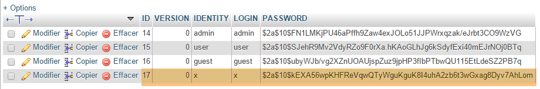 |
Tabla [ROLES]
 |
Tabla [USERS_ROLES]
 |
Consideremos ahora la segunda clase [UsersTest], que es una prueba de JUnit:
|
package rdvmedecins.security;
import java.util.List;
import org.junit.Assert;
import org.junit.Test;
import org.junit.runner.RunWith;
import org.springframework.beans.factory.annotation.Autowired;
import org.springframework.boot.test.SpringApplicationConfiguration;
import org.springframework.security.core.authority.SimpleGrantedAuthority;
import org.springframework.security.crypto.bcrypt.BCrypt;
import org.springframework.test.context.junit4.SpringJUnit4ClassRunner;
import rdvmedecins.config.DomainAndPersistenceConfig;
import com.google.common.collect.Lists;
@SpringApplicationConfiguration(classes = DomainAndPersistenceConfig.class)
@RunWith(SpringJUnit4ClassRunner.class)
public class UsersTest {
@Autowired
private UserRepository userRepository;
@Autowired
private AppUserDetailsService appUserDetailsService;
@Test
public void findAllUsersWithTheirRoles() {
Iterable<User> users = userRepository.findAll();
for (User user : users) {
System.out.println(user);
display("Roles :", userRepository.getRoles(user.getId()));
}
}
@Test
public void findUserByLogin() {
// se recupera el usuario [admin]
User user = userRepository.findUserByLogin("admin");
// se comprueba que su contraseña es [admin]
Assert.assertTrue(BCrypt.checkpw("admin", user.getPassword()));
// se comprueba el rol de admin / admin
List<Role> roles = Lists.newArrayList(userRepository.getRoles("admin", user.getPassword()));
Assert.assertEquals(1L, roles.size());
Assert.assertEquals("ROLE_ADMIN", roles.get(0).getName());
}
@Test
public void loadUserByUsername() {
// se recupera el usuario [admin]
AppUserDetails userDetails = (AppUserDetails) appUserDetailsService.loadUserByUsername("admin");
// se comprueba que su contraseña es [admin]
Assert.assertTrue(BCrypt.checkpw("admin", userDetails.getPassword()));
// se comprueba el rol de admin / admin
@SuppressWarnings("unchecked")
List<SimpleGrantedAuthority> authorities = (List<SimpleGrantedAuthority>) userDetails.getAuthorities();
Assert.assertEquals(1L, authorities.size());
Assert.assertEquals("ROLE_ADMIN", authorities.get(0).getAuthority());
}
// método de utilidad: muestra los elementos de una colección
private void display(String message, Iterable<?> elements) {
System.out.println(message);
for (Object element : elements) {
System.out.println(element);
}
}
}
- líneas 27-34: prueba visual. Se muestran todos los usuarios con sus roles;
- líneas 36-46: se comprueba que el usuario [admin] tiene la contraseña [admin] y el rol [ROLE_ADMIN] utilizando el repositorio [UserRepository];
- línea 41: [admin] es la contraseña en texto claro. En la base, está cifrada según el algoritmo BCrypt. El método [BCrypt.checkpw] permite verificar que la contraseña en texto claro, una vez cifrada, es efectivamente igual a la que figura en la base;
- líneas 48-59: se comprueba que el usuario [admin] tiene la contraseña [admin] y el rol [ROLE_ADMIN] utilizando el servicio [appUserDetailsService];
La ejecución de las pruebas se realiza correctamente con los siguientes registros:
8.4.13.7. Conclusión provisional
La incorporación de las clases necesarias para Spring Security se ha podido realizar con pocas modificaciones del proyecto original. Recordemos cuáles son:
- adición de una dependencia de Spring Security en el archivo [pom.xml];
- creación de tres tablas adicionales en la base de datos;
- creación de las entidades JPA y de los componentes Spring en el paquete [rdvmedecins.security];
Este caso tan favorable se debe a que las tres tablas añadidas a la base de datos son independientes de las tablas existentes. Incluso se podrían haber colocado en una base de datos separada. Esto fue posible porque se decidió que un usuario tenía una existencia independiente de los médicos y de clients. Si estos últimos hubieran sido usuarios potenciales, habría sido necesario crear vínculos entre la tabla [USERS] y las tablas [MEDECINS] y [CLIENTS]. Esto habría tenido entonces un impacto importante en el proyecto existente.
8.4.13.8. El proyecto STS de la capa [web]
 |
El proyecto [rdvmedecins-webjson] evoluciona de la siguiente manera: [1]:
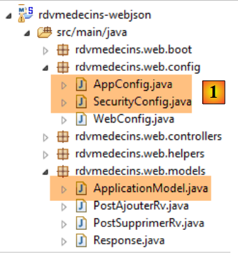 |
Las principales modificaciones deben realizarse en el paquete [rdvmedecins.web.config], donde hay que configurar Spring Security. Hay otras modificaciones menores en las clases [AppConfig] y [ApplicationModel]. Ya nos hemos encontrado con una clase de configuración de Spring Security:
package hello;
import org.springframework.context.annotation.Configuration;
import org.springframework.security.config.annotation.authentication.builders.AuthenticationManagerBuilder;
import org.springframework.security.config.annotation.web.builders.HttpSecurity;
import org.springframework.security.config.annotation.web.configuration.WebSecurityConfigurerAdapter;
import org.springframework.security.config.annotation.web.servlet.configuration.EnableWebMvcSecurity;
@Configuration
@EnableWebMvcSecurity
public class WebSecurityConfig extends WebSecurityConfigurerAdapter {
@Override
protected void configure(HttpSecurity http) throws Exception {
http.authorizeRequests().antMatchers("/", "/home").permitAll().anyRequest().authenticated();
http.formLogin().loginPage("/login").permitAll().and().logout().permitAll();
}
@Override
protected void configure(AuthenticationManagerBuilder auth) throws Exception {
auth.inMemoryAuthentication().withUser("user").password("password").roles("USER");
}
}
Vamos a seguir el mismo procedimiento:
- línea 11: definir una clase que extienda la clase [WebSecurityConfigurerAdapter];
- línea 13: definir un método [configure(HttpSecurity http)] que defina los derechos de acceso a los diferentes URL del servicio web;
- línea 19: definir un método [configure(AuthenticationManagerBuilder auth)] que define los usuarios y sus roles;
La configuración de Spring Security se realiza mediante la clase [SecurityConfig]:
package rdvmedecins.web.config;
import org.springframework.beans.factory.annotation.Autowired;
import org.springframework.context.annotation.Configuration;
import org.springframework.http.HttpMethod;
import org.springframework.security.config.annotation.authentication.builders.AuthenticationManagerBuilder;
import org.springframework.security.config.annotation.web.builders.HttpSecurity;
import org.springframework.security.config.annotation.web.configuration.EnableWebSecurity;
import org.springframework.security.config.annotation.web.configuration.WebSecurityConfigurerAdapter;
import org.springframework.security.config.http.SessionCreationPolicy;
import org.springframework.security.crypto.bcrypt.BCryptPasswordEncoder;
import rdvmedecins.security.AppUserDetailsService;
import rdvmedecins.web.models.ApplicationModel;
@Configuration
@EnableWebSecurity
public class SecurityConfig extends WebSecurityConfigurerAdapter {
@Autowired
private AppUserDetailsService appUserDetailsService;
@Autowired
private ApplicationModel application;
@Override
protected void configure(AuthenticationManagerBuilder registry) throws Exception {
// la autenticación la realiza el bean [appUserDetailsService]
// la contraseña se cifra mediante el algoritmo de hash BCrypt
registry.userDetailsService(appUserDetailsService).passwordEncoder(new BCryptPasswordEncoder());
}
@Override
protected void configure(HttpSecurity http) throws Exception {
// CSRF
http.csrf().disable();
// ¿Aplicación segura?
if (application.isSecured()) {
// la contraseña se transmite mediante el encabezado Authorization: Basic xxxx
http.httpBasic();
// el método HTTP OPTIONS debe estar autorizado para todos
http.authorizeRequests() //
.antMatchers(HttpMethod.OPTIONS, "/", "/**").permitAll();
// solo el rol ADMIN puede utilizar la aplicación
http.authorizeRequests() //
.antMatchers("/", "/**") // todas las URL
.hasRole("ADMIN");
// sin sesión
http.sessionManagement().sessionCreationPolicy(SessionCreationPolicy.STATELESS);
}
}
}
- línea 15: la clase [SecurityConfig] es una clase de configuración de Spring;
- línea 16: para implementar la seguridad del proyecto;
- líneas 19-20: se inyecta la clase [AppUserDetails], que da acceso a los usuarios de la aplicación;
- líneas 21-22: se inyecta la clase [ApplicationModel], que sirve de caché para la aplicación web. Aquí se decide utilizarla también para configurar la aplicación web en un único lugar. Es ella la que define el booleano [isSecured] de la línea 36. Este booleano protege (true) o no (false) la aplicación web;
- líneas 25-29: el método [configure(HttpSecurity http)] define a los usuarios y sus roles. Recibe como parámetro un tipo [AuthenticationManagerBuilder]. Este parámetro se enriquece con dos datos (línea 28):
- una referencia al servicio [appUserDetailsService] de la línea 20 que da acceso a los usuarios registrados. Cabe señalar aquí que no se indica que estén registrados en una base de datos. Por lo tanto, podrían estar en una caché, proporcionados por un servicio web, etc.
- el tipo de cifrado utilizado para la contraseña. Recordemos aquí que hemos utilizado el algoritmo BCrypt;
- líneas 38-47: el método [configure(HttpSecurity http)] define los derechos de acceso a los URL del servicio web;
- línea 34: en el proyecto de introducción vimos que, por defecto, Spring Security gestionaba un token CSRF (Cross Site Request Forgery) que el usuario que quisiera autenticarse debía enviar al servidor. Aquí este mecanismo está desactivado. Esto, junto con el valor booleano (isSecured=false), permite utilizar la aplicación web sin seguridad;
- línea 38: se activa el modo de autenticación mediante el encabezado HTTP. El cliente deberá enviar el siguiente encabezado HTTP:
donde «code» es la codificación de la cadena «login:password» mediante el algoritmo Base64. Por ejemplo, la codificación Base64 de la cadena «admin:admin» es YWRtaW46YWRtaW4=. Por lo tanto, el usuario con nombre de usuario [admin] y contraseña [admin] enviará el siguiente encabezado HTTP para autenticarse:
- líneas 40-42: indican que todos los URL del servicio web son accesibles para los usuarios con el rol [ROLE_ADMIN]. Esto significa que un usuario que no tenga este rol no puede acceder al servicio web;
- línea 47: la contraseña del usuario puede almacenarse o no en una sesión. Si se almacena, el usuario solo tiene que autenticarse la primera vez. Las veces siguientes, no se le solicitarán sus credenciales. En este caso, se ha elegido un modo sin sesión. Cada solicitud deberá ir acompañada de las credenciales de seguridad;
La clase [AppConfig], que configura toda la aplicación, evoluciona de la siguiente manera:
 |
package rdvmedecins.web.config;
import org.springframework.context.annotation.ComponentScan;
import org.springframework.context.annotation.Configuration;
import org.springframework.context.annotation.Import;
import rdvmedecins.config.DomainAndPersistenceConfig;
@Configuration
@ComponentScan(basePackages = { "rdvmedecins.web" })
@Import({ DomainAndPersistenceConfig.class, SecurityConfig.class, WebConfig.class })
public class AppConfig {
}
- La modificación se produce en la línea 11: se añade la clase de configuración [SecurityConfig];
Por último, la clase [ApplicationModel] se amplía con un valor booleano:
@Component
public class ApplicationModel implements IMetier {
...
// datos de configuración
private boolean secured = false;
public boolean isSecured() {
return secured;
}
- línea 6: se establece el valor booleano [secured] en [true / false], dependiendo de si se desea o no activar la seguridad.
8.4.13.9. Pruebas del servicio web
Vamos a probar el servicio web con el cliente Chrome [Advanced Rest Client]. Tendremos que especificar el encabezado de autenticación HTTP:
donde [code] es el código Base64 de la cadena [login:password]. Para generar este código, se puede utilizar el siguiente programa:
 |
package rdvmedecins.helpers;
import org.springframework.security.crypto.codec.Base64;
public class Base64Encoder {
public static void main(String[] args) {
// se esperan dos argumentos: nombre de usuario y contraseña
if (args.length != 2) {
System.out.println("Syntaxe : login password");
System.exit(0);
}
// se recuperan los dos argumentos
String chaîne = String.format("%s:%s", args[0], args[1]);
// se codifica la cadena
byte[] data = Base64.encode(chaîne.getBytes());
// se muestra su codificación Base64
System.out.println(new String(data));
}
}
Si ejecutamos este programa con los dos argumentos [admin admin]:
 |
obtenemos el siguiente resultado:
Ahora que sabemos cómo generar el encabezado de autenticación HTTP, lanzamos el servicio web, ahora seguro:
@Component
public class ApplicationModel implements IMetier {
...
private boolean secured = true;
A continuación, con el cliente Chrome [Advanced Rest Client], solicitamos la lista de todos los médicos:
 |
- en [1], solicitamos el URL de los médicos;
- en [2], con un método GET;
- en [3], proporcionamos el encabezado HTTP de la autenticación. El código [YWRtaW46YWRtaW4=] es la codificación Base64 de la cadena [admin:admin];
- en [4], enviamos el comando HTTP;
La respuesta del servidor es la siguiente:
 |
- en [1], el encabezado de autenticación HTTP;
- en [2], el servidor devuelve una respuesta jSON;
- en [3], una lista de encabezados HTTP relacionados con la seguridad de la aplicación web;
Se obtiene correctamente la lista de médicos:
 |
Probemos ahora una solicitud HTTP con un encabezado de autenticación incorrecto. La respuesta es entonces la siguiente:
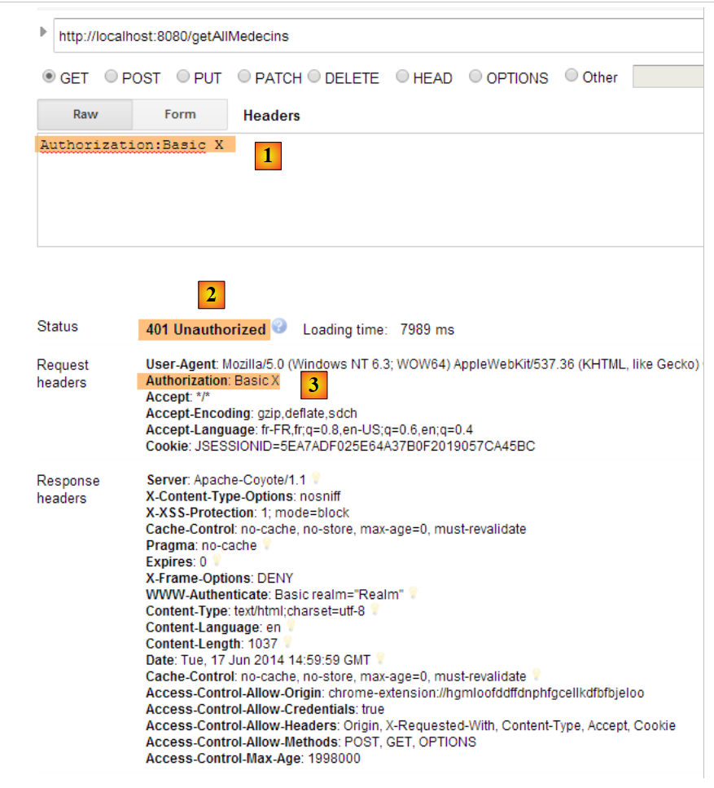 |
- en [1] y [3]: el encabezado de autenticación HTTP;
- en [2]: la respuesta del servicio web;
Ahora probemos con el usuario user / user. Existe, pero no tiene acceso al servicio web. Si ejecutamos el programa de codificación Base64 con los dos argumentos [user user]:
 |
obtenemos el siguiente resultado:
 |
- en [1] y [3]: el encabezado de autenticación HTTP;
- en [2]: la respuesta del servicio web. Es diferente de la anterior, que era [401 Unauthorized]. En esta ocasión, el usuario se ha autenticado correctamente, pero no tiene los permisos suficientes para acceder a URL;
Ahora ya tenemos operativo un servicio web seguro. Lo completaremos para que permita solicitudes entre dominios. Esta necesidad surgió en el documento [Tutoriel AngularJS / Spring 4] y, aunque aquí no existe, vamos a dar respuesta a ella de todos modos.
8.4.14. Implementación de solicitudes entre dominios
Analicemos el problema de las solicitudes entre dominios. En el documento [Tutoriel AngularJS / Spring 4], se desarrolla una aplicación cliente/servidor en la que el cliente es una aplicación AngularJS:
 |
- las páginas HTML / CSS / JS de la aplicación Angular provienen del servidor [1];
- en [2], el servicio [dao] realiza una solicitud a otro servidor, el servidor [2]. Pues bien, eso está prohibido por el navegador que ejecuta la aplicación Angular porque supone un fallo de seguridad. La aplicación solo puede consultar al servidor del que proviene, es decir, el servidor [1];
De hecho, no es exacto decir que el navegador prohíbe a la aplicación Angular consultar al servidor [2]. En realidad, la consulta para preguntarle si autoriza a un cliente que no proviene de su propio entorno a consultarlo. A esta técnica de intercambio se le denomina CORS (Cross-Origin Resource Sharing). El servidor [2] da su consentimiento enviando encabezados HTTP específicos.
Para mostrar los problemas que pueden surgir, vamos a crear una aplicación cliente/servidor en la que:
- el servidor será nuestro servidor web / jSON;
- el cliente será una simple página HTML equipada con un código Javascript que realizará solicitudes al servidor web / jSON;
8.4.14.1. El proyecto del cliente
 |
El proyecto es un proyecto Maven con el siguiente archivo [pom.xml]:
<?xml version="1.0" encoding="UTF-8"?>
<project xmlns="http://maven.apache.org/POM/4.0.0" xmlns:xsi="http://www.w3.org/2001/XMLSchema-instance"
xsi:schemaLocation="http://maven.apache.org/POM/4.0.0 http://maven.apache.org/xsd/maven-4.0.0.xsd">
<modelVersion>4.0.0</modelVersion>
<groupId>istia.st</groupId>
<artifactId>rdvmedecins-webjson-client-cors</artifactId>
<version>0.0.1-SNAPSHOT</version>
<packaging>jar</packaging>
<name>rdvmedecins-webjson-client-cors</name>
<description>Client for webjson server</description>
<parent>
<groupId>org.springframework.boot</groupId>
<artifactId>spring-boot-starter-parent</artifactId>
<version>1.2.6.RELEASE</version>
<relativePath /> <!-- búsqueda del padre en el repositorio -->
</parent>
<properties>
<project.build.sourceEncoding>UTF-8</project.build.sourceEncoding>
<start-class>istia.st.rdvmedecins.Client</start-class>
<java.version>1.8</java.version>
</properties>
<dependencies>
<!-- spring MVC -->
<dependency>
<groupId>org.springframework.boot</groupId>
<artifactId>spring-boot-starter-web</artifactId>
</dependency>
</dependencies>
</project>
- líneas 14-19: es un proyecto Spring Boot;
- líneas 29-32: se utiliza la dependencia [spring-boot-starter-web], que incluye un servidor Tomcat y Spring MVC;
La página HTML es la siguiente:
 |
Se genera mediante el siguiente código:
<!DOCTYPE html>
<html>
<head>
<meta charset="UTF-8">
<title>Spring MVC</title>
<script type="text/javascript" src="/js/jquery-2.1.1.min.js"></script>
<script type="text/javascript" src="/js/client.js"></script>
</head>
<body>
<h2>Client du service web / jSON</h2>
<form id="formulaire">
<!-- método HTTP -->
Méthode HTTP :
<!-- -->
<input type="radio" id="get" name="method" value="get" checked="checked" />GET
<!-- -->
<input type="radio" id="post" name="method" value="post" />POST
<!-- URL -->
<br /> <br />URL cible : <input type="text" id="url" size="30"><br />
<!-- valor enviado -->
<br /> Chaîne jSON à poster : <input type="text" id="posted" size="50" />
<!-- botón de validación -->
<br /> <br /> <input type="submit" value="Valider" onclick="javascript:requestServer(); return false;"></input>
</form>
<hr />
<h2>Réponse du serveur</h2>
<div id="response"></div>
</body>
</html>
- línea 6: se importa la biblioteca jQuery;
- línea 7: se importa un código que vamos a escribir;
El código [client.js] es el siguiente:
// datos globales
var url;
var posted;
var response;
var method;
function requestServer() {
// se recupera la información del formulario
var urlValue = url.val();
var postedValue = posted.val();
method = document.forms[0].elements['method'].value;
// se realiza una llamada Ajax manualmente
if (method === "get") {
doGet(urlValue);
} else {
doPost(urlValue, postedValue);
}
}
function doGet(url) {
// se realiza una llamada Ajax manualmente
$.ajax({
headers : {
'Authorization' : 'Basic YWRtaW46YWRtaW4='
},
url : 'http://localhost:8080' + url,
type : 'GET',
dataType : 'tex/plain',
beforeSend : function() {
},
success : function(data) {
// resultado de texto
response.text(data);
},
complete : function() {
},
error : function(jqXHR) {
// error del sistema
response.text(jqXHR.responseText);
}
})
}
function doPost(url, posted) {
// se realiza una llamada Ajax manualmente
$.ajax({
headers : {
'Authorization' : 'Basic YWRtaW46YWRtaW4='
},
url : 'http://localhost:8080' + url,
type : 'POST',
contentType : 'application/json',
data : posted,
dataType : 'tex/plain',
beforeSend : function() {
},
success : function(data) {
// resultado de texto
response.text(data);
},
complete : function() {
},
error : function(jqXHR) {
// error del sistema
response.text(jqXHR.responseText);
}
})
}
// al cargar el documento
$(document).ready(function() {
// se recuperan las referencias de los componentes de la página
url = $("#url");
posted = $("#posted");
response = $("#response");
});
Dejamos que el lector comprenda este código. Todo se ha visto ya en algún momento. Sin embargo, algunas líneas merecen una explicación:
- línea 11:
- [document] designa el documento cargado por el navegador, lo que se denomina DOM (Document Object Model),
- [document.forms[0]] designa el primer formulario del documento, ya que un documento puede contener varios. En este caso, solo hay uno,
- [document.forms[0].elements['method']] hace referencia al elemento del formulario que tiene el atributo [name='method']. Hay dos:
<input type="radio" id="get" name="method" value="get" checked="checked" />GET
<input type="radio" id="post" name="method" value="post" />POST
- línea 11:
- [document.forms[0].elements['method'].value] es el valor que se va a enviar para el componente que tiene el atributo [name='method']. Sabemos que el valor enviado es el valor del atributo [value] del botón de radio marcado. En este caso, será una de las cadenas ['get', 'post'];
- líneas 23-25: nos dirigimos a un servidor que exige un encabezado HTTP [Authorization: Basic code]. Creamos este encabezado para el usuario [admin / admin], que es el único que puede consultar el servidor;
- línea 26: el usuario introducirá URL del tipo [/getAllMedecins, /supprimerRv, ...]. Por lo tanto, hay que completar estos URL;
- línea 28: el servidor devuelve jSON, que es un tipo de texto. Se indica el tipo [text/plain] como tipo de resultado para mostrarlo tal y como se ha recibido;
- línea 33: visualización de la respuesta de texto del servidor;
- línea 39: visualización del posible mensaje de error en formato de texto;
- línea 52: para indicar que el cliente envía jSON;
En la aplicación cliente/servidor creada:
- el cliente es una aplicación web disponible en URL [http://localhost:8081]. Es la aplicación que estamos creando;
- el servidor es una aplicación web disponible en URL [http://localhost:8080]. Es nuestro servidor web / jSON;
Dado que el cliente no se conecta desde el mismo puerto que el servidor, surge el problema de las solicitudes entre dominios. [http://localhost:8080] y [http://localhost:8081] son dos dominios diferentes.
La aplicación Spring Boot es una aplicación de consola iniciada por la siguiente clase ejecutable [Client]:
package istia.st.rdvmedecins;
import org.springframework.boot.SpringApplication;
import org.springframework.boot.context.embedded.EmbeddedServletContainerFactory;
import org.springframework.boot.context.embedded.ServletRegistrationBean;
import org.springframework.boot.context.embedded.tomcat.TomcatEmbeddedServletContainerFactory;
import org.springframework.context.annotation.Bean;
import org.springframework.context.annotation.Configuration;
import org.springframework.web.servlet.DispatcherServlet;
import org.springframework.web.servlet.config.annotation.EnableWebMvc;
import org.springframework.web.servlet.config.annotation.ResourceHandlerRegistry;
import org.springframework.web.servlet.config.annotation.WebMvcConfigurerAdapter;
@Configuration
@EnableWebMvc
public class Client extends WebMvcConfigurerAdapter {
public static void main(String[] args) {
SpringApplication.run(Client.class, args);
}
// páginas estáticas
@Override
public void addResourceHandlers(ResourceHandlerRegistry registry) {
registry.addResourceHandler("/**").addResourceLocations(new String[] { "classpath:/static/" });
}
// configuración dispatcherServlet
@Bean
public DispatcherServlet dispatcherServlet() {
return new DispatcherServlet();
}
@Bean
public ServletRegistrationBean servletRegistrationBean(DispatcherServlet dispatcherServlet) {
return new ServletRegistrationBean(dispatcherServlet, "/*");
}
// servidor Tomcat integrado
@Bean
public EmbeddedServletContainerFactory embeddedServletContainerFactory() {
return new TomcatEmbeddedServletContainerFactory("", 8081);
}
}
- línea 14: la clase [Client] es una clase de configuración de Spring;
- línea 15: se configura una aplicación Spring MVC. Esta anotación conlleva una serie de configuraciones automáticas;
- línea 16: para redefinir ciertos valores predeterminados del marco Spring MVC, hay que extender la clase [WebMvcConfigurerAdapter];
- líneas 23-26: el método [addResourceHandlers] permite especificar las carpetas donde se encuentran los recursos estáticos (html, css, js, ...) de la aplicación. Aquí se indica la carpeta [static] situada en la ruta de clases del proyecto:
 |
- líneas 29-37: configuración del bean [dispatcherServlet] que designa el servlet de Spring MVC;
- líneas 40-43: el servidor Tomcat integrado funcionará en el puerto 8081;
8.4.14.2. URL [/getAllMedecins]
Iniciamos:
- el servidor web / json en el puerto 8080;
- el cliente de este servidor en el puerto 8081;
luego solicitamos el URL [http://localhost:8081/client.html] [1]:
 |
- en [2], hacemos un GET en el URL [http://localhost:8080/getAllMedecins];
No obtenemos respuesta del servidor. Al consultar la consola de desarrollo (Ctrl-Mayús-I) se detecta un error:
 |
- en [1], estamos en la pestaña [Network];
- en [2], vemos que la solicitud HTTP que se ha realizado no es [GET], sino [OPTIONS]. En el caso de una solicitud entre dominios, el navegador comprueba con el servidor que se cumplen una serie de condiciones enviándole una solicitud HTTP [OPTIONS]. En este caso, las solicitudes son las indicadas por los puntos [5-6];
- en [5], el navegador pregunta si se puede acceder al destino URL mediante un GET. El encabezado de la solicitud [Access-Control-Request-Method] solicita una respuesta con un encabezado HTTP [Access-Control-Allow-Methods] que indique que se acepta el método solicitado;
- en [5], el navegador envía el encabezado HTTP [Origin: http://localhost:8081]. Este encabezado solicita una respuesta en un encabezado HTTP [Access-Control-Allow-Origin] indicando que se acepta el origen especificado;
- en [6], el navegador pregunta si se aceptan los encabezados HTTP, [accept] y [authorization]. El encabezado de la solicitud [Access-Control-Request-Headers] espera una respuesta con un encabezado HTTP [Access-Control-Allow-Headers] que indique que los encabezados solicitados son aceptados;
- se produce un error en [3]. Al hacer clic en el icono, aparece el error [4];
- en [4], el mensaje indica que el servidor no ha enviado el encabezado HTTP [Access-Control-Allow-Origin] que indica si se acepta el origen de la solicitud;
- en [7], se puede observar que el servidor efectivamente no ha enviado este encabezado. Por lo tanto, el navegador se ha negado a realizar la solicitud HTTP GET solicitada inicialmente;
Tenemos que modificar el servidor web / jSON. Realizamos una primera modificación en [ApplicationModel], que es uno de los elementos de configuración del servicio web:
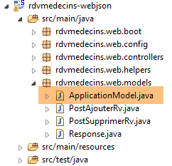 |
@Component
public class ApplicationModel implements IMetier {
...
// datos de configuración
private boolean corsAllowed = true;
private boolean secured = true;
...
public boolean isCorsAllowed() {
return corsAllowed;
}
- línea 6: creamos un valor booleano que indica si se aceptan o no los clients ajenos al dominio del servidor;
- líneas 10-12: el método de acceso a esta información;
A continuación, creamos un nuevo controlador Spring MVC:
 |
La clase [RdvMedecinsCorsController] es la siguiente:
package rdvmedecins.web.controllers;
import javax.servlet.http.HttpServletResponse;
import org.springframework.beans.factory.annotation.Autowired;
import org.springframework.stereotype.Controller;
import org.springframework.web.bind.annotation.RequestMapping;
import org.springframework.web.bind.annotation.RequestMethod;
import rdvmedecins.web.models.ApplicationModel;
@Controller
public class RdvMedecinsCorsController {
@Autowired
private ApplicationModel application;
// envío de opciones al cliente
public void sendOptions(String origin, HttpServletResponse response) {
// ¿Cors permitido?
if (!application.isCorsAllowed() || origin==null || !origin.startsWith("http://localhost")) {
return;
}
// se establece el encabezado CORS
response.addHeader("Access-Control-Allow-Origin", origin);
// se permiten determinados encabezados
response.addHeader("Access-Control-Allow-Headers", "accept, authorization");
// se autoriza el GET
response.addHeader("Access-Control-Allow-Methods", "GET");
}
// lista de médicos
@RequestMapping(value = "/getAllMedecins", method = RequestMethod.OPTIONS)
public void getAllMedecins(@RequestHeader(value = "Origin", required = false) String origin, HttpServletResponse response) {
sendOptions(origin, response);
}
}
- líneas 12-13: la clase [RdvMedecinsCorsController] es un controlador Spring;
- líneas 33-36: definen una acción que procesa URL [/getAllMedecins] cuando se solicita con el comando HTTP [OPTIONS];
- línea 34: el método [getAllMedecins] admite como parámetros:
- el objeto [@RequestHeader(value = "Origin", required = false)], que recuperará el encabezado HTTP [Origin] de la solicitud. Este encabezado ha sido enviado por el emisor de la solicitud:
Se indica que el encabezado HTTP [Origin] es opcional [required = false]. En este caso, si falta el encabezado, el parámetro [String origin] tendrá el valor nulo. Con [required = true], que es el valor por defecto, se lanza una excepción si falta el encabezado. Hemos querido evitar este caso;
- línea 34:
- el objeto [HttpServletResponse response] que se enviará al cliente que ha realizado la solicitud;
Estos dos parámetros son inyectados por Spring;
- línea 35: se delega el procesamiento de la solicitud al método de las líneas 19-30;
- líneas 15-16: se inyecta el objeto [ApplicationModel];
- líneas 21-23: si la aplicación está configurada para aceptar solicitudes entre dominios y si el emisor ha enviado el encabezado HTTP [Origin] y si este origen comienza por [http://localhost], entonces se aceptará la solicitud entre dominios; de lo contrario, se rechazará;
- líneas 25: si el cliente está en el dominio [http://localhost:port], se envía el encabezado HTTP:
lo que significa que el servidor acepta el origen del cliente;
- línea 25: hemos señalado dos encabezados HTTP concretos en la solicitud HTTP [OPTIONS]:
A los encabezados HTTP y [Access-Control-Request-X], el servidor responde con un encabezado HTTP y [Access-Control-Allow-X] en el que indica lo que está autorizado. Las líneas 23-26 se limitan a repetir la solicitud del cliente para indicar que ha sido aceptada;
Ahora estamos listos para nuevas pruebas. Lanzamos la nueva version del servicio web y descubrimos que el problema persiste. No ha cambiado nada. Si en la línea 35 anterior colocamos una salida de consola, esta nunca se muestra, lo que demuestra que el método [getAllMedecins] de la línea 34 nunca se llama.
Tras investigar un poco, descubrimos que Spring MVC procesa por sí mismo los comandos HTTP y [OPTIONS] con un procesamiento por defecto. Por lo tanto, siempre es Spring quien responde y nunca el método [getAllMedecins] de la línea 34. Este comportamiento por defecto de Spring MVC se puede modificar. Modificamos la clase [WebConfig] existente:
 |
package rdvmedecins.web.config;
...
import org.springframework.web.servlet.DispatcherServlet;
@Configuration
public class WebConfig {
// configuración dispatcherservlet para los encabezados CORS
@Bean
public DispatcherServlet dispatcherServlet() {
DispatcherServlet servlet = new DispatcherServlet();
servlet.setDispatchOptionsRequest(true);
return servlet;
}
// asignación jSON
...
- líneas 10-11: el bean [dispatcherServlet] sirve para definir el servlet que gestiona las solicitudes de clients. Aquí es de tipo [DispatcherServlet], el servlet del framework Spring MVC;
- línea 12: se crea una instancia de tipo [DispatcherServlet];
- línea 13: se solicita que el servlet reenvíe a la aplicación los comandos HTTP [OPTIONS];
- línea 14: se devuelve el servlet así configurado;
Repetimos las pruebas con esta nueva configuración. Obtenemos el siguiente resultado:
 |
- en [1], vemos que hay dos solicitudes HTTP hacia URL [http://localhost:8080/getAllMedecins];
- en [2], la solicitud [OPTIONS];
- en [3], los tres encabezados HTTP que acabamos de configurar en la respuesta del servidor;
Veamos ahora la segunda solicitud:
 |
- en [1], la solicitud examinada;
- en [2], es la solicitud GET. Gracias a la primera solicitud [OPTIONS], el navegador ha recibido la información que solicitaba. Ahora realiza la solicitud [GET] solicitada inicialmente;
- en [3], la respuesta del servidor;
- en [4], el servidor envía jSON;
- en [5], se ha producido un error;
- en [6], el mensaje de error;
Es más difícil explicar lo que ha pasado aquí. La respuesta [3] del servidor es normal [HTTP/1.1 200 OK]. Por lo tanto, deberíamos tener el documento solicitado. Es posible que el servidor haya enviado correctamente el documento, pero que sea el navegador el que impida su uso porque quiere que, para la solicitud GET también, la respuesta incluya el encabezado HTTP [Access-Control-Allow-Origin:http://localhost:8081].
Modificamos el controlador [RdvMedecinsController] de la siguiente manera:
@Autowired
private RdvMedecinsCorsController rdvMedecinsCorsController;
...
// lista de médicos
@RequestMapping(value = "/getAllMedecins", method = RequestMethod.GET, produces = "application/json; charset=UTF-8")
@ResponseBody
public String getAllMedecins(HttpServletResponse httpServletResponse,
@RequestHeader(value = "Origin", required = false) String origin) throws JsonProcessingException {
// la respuesta
Response<List<Medecin>> response;
// encabezados CORS
rdvMedecinsCorsController.sendOptions(origin, httpServletResponse);
// estado de la solicitud
...
- líneas 1-2: se inserta el controlador [RdvMedecinsCorsController];
- líneas 7-8: se inyecta en los parámetros del método [getAllMedecins] el objeto HttpServletResponse, que encapsula la respuesta que se enviará al cliente, y el encabezado HTTP [Origin];
- línea 12: se invoca el método [sendOptions] del controlador [RdvMedecinsCorsController], el mismo que se invocó para procesar la solicitud HTTP [OPTIONS]. Por lo tanto, enviará los mismos encabezados HTTP que para esta solicitud;
Tras esta modificación, los resultados son los siguientes:
 |
Hemos obtenido correctamente la lista de médicos.
8.4.14.3. Los demás URL [GET]
Ahora mostramos los demás URL consultados a través de un GET. En los controladores, el código de las acciones que las procesan sigue el modelo de las acciones que procesaron anteriormente el URL [/getAllMedecins]. El lector puede consultar el código en los ejemplos que se incluyen con este documento. A continuación se muestra un ejemplo:
en [RdvMedecinsCorsController]
// lista de Rv de un médico
@RequestMapping(value = "/getRvMedecinJour/{idMedecin}/{jour}", method = RequestMethod.OPTIONS)
public void getRvMedecinJour(@RequestHeader(value = "Origin", required = false) String origin, HttpServletResponse response) {
sendOptions(origin, response);
}
en [RdvMedecinsController]
// lista de citas de un médico
@RequestMapping(value = "/getRvMedecinJour/{idMedecin}/{jour}", method = RequestMethod.GET, produces = "application/json; charset=UTF-8")
@ResponseBody
public String getRvMedecinJour(@PathVariable("idMedecin") long idMedecin, @PathVariable("jour") String jour,
HttpServletResponse httpServletResponse, @RequestHeader(value = "Origin", required = false) String origin)
throws JsonProcessingException {
// la respuesta
Response<List<Rv>> response = null;
boolean erreur = false;
// encabezados CORS
rdvMedecinsCorsController.sendOptions(origin, httpServletResponse);
// estado de la solicitud
...
A continuación se muestran capturas de pantalla de la ejecución:
 |
 |
 |
 |
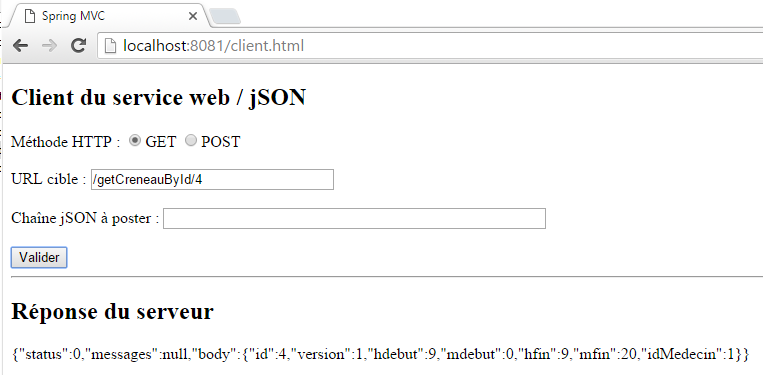 |
 |
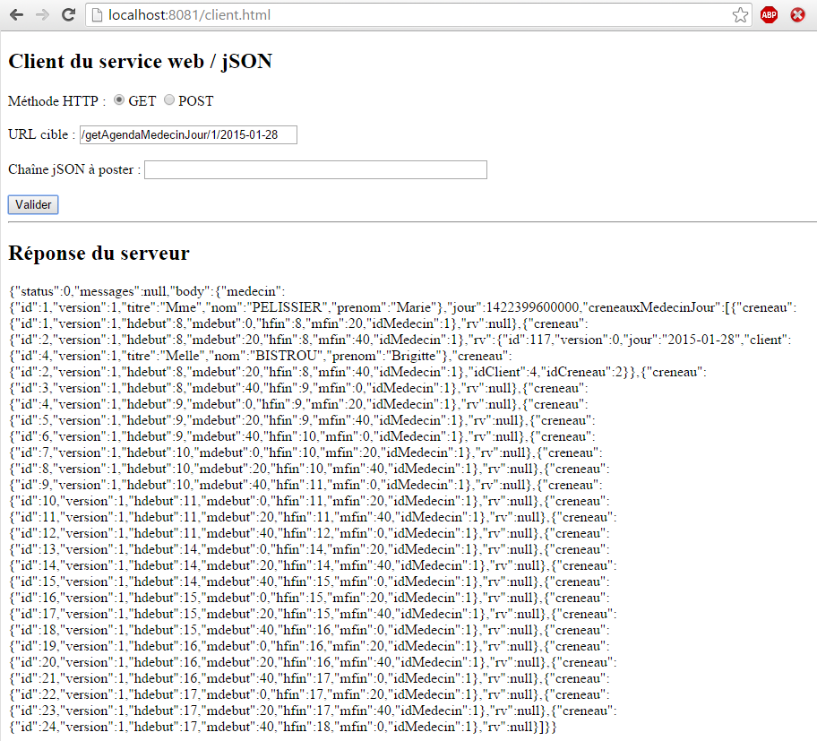 |
8.4.14.4. Los URL [POST]
Analicemos el siguiente caso:
 |
- se realiza un POST [1] hacia el URL [2];
- en [3], el valor registrado. Se trata de una cadena jSON;
- en total, queremos eliminar la cita con el valor [id] 100;
Por el momento no modificamos ningún código. El resultado obtenido es el siguiente:
 |
- en [1], al igual que con las solicitudes [GET], el navegador realiza una solicitud [OPTIONS];
- en [2], solicita autorización de acceso para una solicitud [POST]. Anteriormente era [GET];
- en [3], solicita autorización para enviar los encabezados HTTP y [accept, authorization, content-type]. Anteriormente, solo teníamos los dos primeros encabezados;
Modificamos el método [RdvMedecinsCorsController.sendOptions] de la siguiente manera:
public void sendOptions(String origin, HttpServletResponse response) {
// ¿Se permiten los CORS?
if (!application.isCorsAllowed() || origin==null || !origin.startsWith("http://localhost")) {
return;
}
// se establece el encabezado CORS
response.addHeader("Access-Control-Allow-Origin", origin);
// se permiten determinados encabezados
response.addHeader("Access-Control-Allow-Headers", "accept, authorization, content-type");
// se permite el GET
response.addHeader("Access-Control-Allow-Methods", "GET, POST");
}
- línea 9: se ha añadido el encabezado HTTP [Content-Type] (no importa si se escribe en mayúsculas o minúsculas);
- línea 11: se ha añadido el método HTTP [POST];
De este modo, los métodos [POST] se tratan de la misma manera que las solicitudes [GET]. A continuación se muestra un ejemplo de URL [/supprimerRv]:
en [RdvMedecinsController]
@RequestMapping(value = "/supprimerRv", method = RequestMethod.POST, produces = "application/json; charset=UTF-8", consumes = "application/json; charset=UTF-8")
@ResponseBody
public String supprimerRv(@RequestBody PostSupprimerRv post, HttpServletResponse httpServletResponse,
@RequestHeader(value = "Origin", required = false) String origin) throws JsonProcessingException {
// la respuesta
Response<Void> response = null;
boolean erreur = false;
// encabezados CORS
rdvMedecinsCorsController.sendOptions(origin, httpServletResponse);
// estado de la aplicación
if (messages != null) {
...
en [RdvMedecinsCorsController]
@RequestMapping(value = "/supprimerRv", method = RequestMethod.OPTIONS)
public void supprimerRv(@RequestHeader(value = "Origin", required = false) String origin, HttpServletResponse response) {
sendOptions(origin, response);
}
El resultado obtenido es el siguiente:
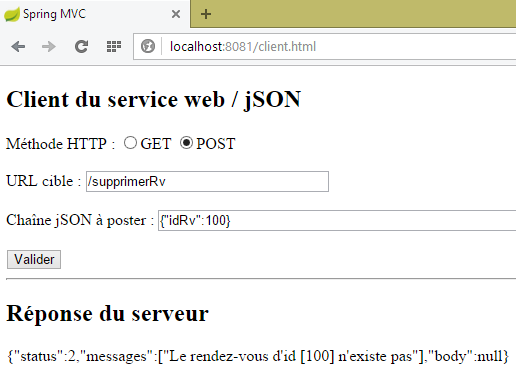 |
Para URL [/ajouterRv], se obtiene el siguiente resultado:
 |
8.4.14.5. Conclusión
Nuestra aplicación ahora admite solicitudes entre dominios. Estas pueden autorizarse o no mediante la configuración en la clase [ApplicationModel]:
// datos de configuración
private boolean corsAllowed = false;
8.5. Cliente programado del servicio web / jSON
Volvamos a la arquitectura general de la aplicación que queremos escribir:
 |
La parte superior del esquema ya está escrita. Se trata del servidor web / jSON. Ahora nos ocupamos de la parte inferior y, en primer lugar, de su capa [DAO]. Vamos a escribirla y luego la probaremos con un cliente de consola. La arquitectura de prueba será la siguiente:
 |
8.5.1. El proyecto del cliente de consola
El proyecto STS del cliente de consola será el siguiente:
 |
8.5.2. Configuración de Maven
El archivo [pom.xml] del cliente de consola es el siguiente:
<project xmlns="http://maven.apache.org/POM/4.0.0" xmlns:xsi="http://www.w3.org/2001/XMLSchema-instance"
xsi:schemaLocation="http://maven.apache.org/POM/4.0.0 http://maven.apache.org/xsd/maven-4.0.0.xsd">
<modelVersion>4.0.0</modelVersion>
<groupId>istia.st.rdvmedecins</groupId>
<artifactId>rdvmedecins-webjson-client-console</artifactId>
<version>0.0.1-SNAPSHOT</version>
<name>rdvmedecins-webjson-client-console</name>
<description>Client console du serveur web / jSON</description>
<properties>
<project.build.sourceEncoding>UTF-8</project.build.sourceEncoding>
<java.version>1.8</java.version>
</properties>
<parent>
<groupId>org.springframework.boot</groupId>
<artifactId>spring-boot-starter-parent</artifactId>
<version>1.2.6.RELEASE</version>
<relativePath /> <!-- búsqueda de elemento principal en el repositorio -->
</parent>
<dependencies>
<!-- Spring -->
<dependency>
<groupId>org.springframework</groupId>
<artifactId>spring-web</artifactId>
</dependency>
<!-- biblioteca jSON utilizada por Spring -->
<dependency>
<groupId>com.fasterxml.jackson.core</groupId>
<artifactId>jackson-core</artifactId>
</dependency>
<dependency>
<groupId>com.fasterxml.jackson.core</groupId>
<artifactId>jackson-databind</artifactId>
</dependency>
<!-- componente utilizado por Spring RestTemplate -->
<dependency>
<groupId>org.apache.httpcomponents</groupId>
<artifactId>httpclient</artifactId>
</dependency>
</dependencies>
</project>
- líneas 15-20: el proyecto Spring Boot principal;
- líneas 24-27: el cliente de consola del servidor web / jSON se basa en un componente llamado [RestTemplate] proporcionado por la dependencia [spring-web];
- líneas 29-36: la serialización/deserialización de los objetos jSON requiere una biblioteca jSON. Utilizamos una variante de la biblioteca Jackson que usa Spring Web;
- líneas 38-41: en el nivel más bajo, el componente [RestTemplate] se comunica con el servidor a través de sockets TCP/IP. Queremos fijar el [timeout] de estos, es decir, el tiempo máximo de espera de una respuesta del servidor. El componente [RestTemplate] no nos permite fijarlo. Para ello, vamos a pasar al constructor [RestTemplate] un componente de bajo nivel proporcionado por la dependencia [org.apache.httpcomponents.httpclient]. Es esta dependencia la que nos permitirá fijar el [timeout] de la comunicación;
8.5.3. El paquete [rdvmedecins.client.entities]
 |
El paquete [rdvmedecins.client.entities] reúne todas las entidades que el servicio web / jSON envía a través de sus diferentes URL. No vamos a detallarlas de nuevo. Nos limitaremos a decir que las entidades JPA y [Client, Creneau, Medecin, Rv, Personne] han sido despojadas de todas sus anotaciones JPA, así como de sus anotaciones jSON. He aquí, por ejemplo, la clase [Rv]:
package rdvmedecins.client.entities;
import java.util.Date;
public class Rv extends AbstractEntity {
private static final long serialVersionUID = 1L;
// día del Rv
private Date jour;
// un rv está vinculado a un cliente
private Client client;
// un rv está vinculado a una franja horaria
private Creneau creneau;
// claves externas
private long idClient;
private long idCreneau;
// fabricante por defecto
public Rv() {
}
// con parámetros
public Rv(Date jour, Client client, Creneau creneau) {
this.jour = jour;
this.client = client;
this.creneau = creneau;
}
// toString
public String toString() {
return String.format("Rv[%d, %s, %d, %d]", id, jour, client.id, creneau.id);
}
// getters y setters
...
}
8.5.4. El paquete [rdvmedecins.client.requests]
 |
El paquete [rdvmedecins.client.requests] agrupa las dos clases cuyo valor jSON se envía a URL, [/ajouterRv] y [supprimerRv]. Son idénticas a las que se encuentran en el lado del servidor.
8.5.5. El paquete [rdvmedecins.client.responses]
 |
[Response] es el tipo de todas las respuestas del servicio web / jSON. Se trata de un tipo genérico:
package rdvmedecins.client.responses;
import java.util.List;
public class Response<T> {
// ----------------- propiedades
// estado de la operación
private int status;
// posibles mensajes de error
private List<String> messages;
// el cuerpo de la respuesta
private T body;
// constructores
public Response() {
}
public Response(int status, List<String> messages, T body) {
this.status = status;
this.messages = messages;
this.body = body;
}
// getters y setters
...
}
- línea 5: el tipo [T] varía según el URL del servicio web / jSON;
8.5.6. El paquete [rdvmedecins.client.dao]
 |
- [IDao] es la interfaz de la capa [DAO] y [Dao] son su implementación. Volveremos sobre esta implementación;
8.5.7. El paquete [rdvmedecins.client.config]
 |
La clase [DaoConfig] configura la aplicación. Su código es el siguiente:
package rdvmedecins.client.config;
import org.springframework.context.annotation.Bean;
import org.springframework.context.annotation.ComponentScan;
import org.springframework.context.annotation.Configuration;
import org.springframework.http.client.HttpComponentsClientHttpRequestFactory;
import org.springframework.web.client.RestTemplate;
import com.fasterxml.jackson.databind.ObjectMapper;
import com.fasterxml.jackson.databind.ser.impl.SimpleBeanPropertyFilter;
import com.fasterxml.jackson.databind.ser.impl.SimpleFilterProvider;
@Configuration
@ComponentScan({ "rdvmedecins.client.dao" })
public class DaoConfig {
@Bean
public RestTemplate restTemplate() {
// creación del componente RestTemplate
HttpComponentsClientHttpRequestFactory factory = new HttpComponentsClientHttpRequestFactory();
RestTemplate restTemplate = new RestTemplate(factory);
// resultado
return restTemplate;
}
// mapeadores jSON
@Bean
public ObjectMapper jsonMapper(){
return new ObjectMapper();
}
@Bean
public ObjectMapper jsonMapperShortCreneau() {
ObjectMapper jsonMapperShortCreneau = new ObjectMapper();
SimpleBeanPropertyFilter creneauFilter = SimpleBeanPropertyFilter.serializeAllExcept("medecin");
jsonMapperShortCreneau.setFilters(new SimpleFilterProvider().addFilter("creneauFilter", creneauFilter));
return jsonMapperShortCreneau;
}
@Bean
public ObjectMapper jsonMapperLongRv() {
ObjectMapper jsonMapperLongRv = new ObjectMapper();
SimpleBeanPropertyFilter rvFilter = SimpleBeanPropertyFilter.serializeAllExcept("");
SimpleBeanPropertyFilter creneauFilter = SimpleBeanPropertyFilter.serializeAllExcept("medecin");
jsonMapperLongRv.setFilters(new SimpleFilterProvider().addFilter("rvFilter", rvFilter).addFilter("creneauFilter",
creneauFilter));
return jsonMapperLongRv;
}
@Bean
public ObjectMapper jsonMapperShortRv() {
ObjectMapper jsonMapperShortRv = new ObjectMapper();
SimpleBeanPropertyFilter rvFilter = SimpleBeanPropertyFilter.serializeAllExcept("client", "creneau");
jsonMapperShortRv.setFilters(new SimpleFilterProvider().addFilter("rvFilter", rvFilter));
return jsonMapperShortRv;
}
}
- línea 13: la clase [DaoConfig] es una clase de configuración de Spring;
- línea 14: se explorará el paquete [rdvmedecins.client.dao] en busca de componentes Spring. En él se encontrará el componente [Dao];
- líneas 17-24: definen un singleton de Spring con el nombre [restTemplate] (el nombre del método). Este método devuelve una instancia [RestTemplate], que es la herramienta básica que proporciona Spring para comunicarse con un servicio web / jSON;
- línea 21: se podría escribir [RestTemplate restTemplate = new RestTemplate() ;]. Esto es suficiente en la mayoría de los casos. Pero aquí queremos fijar los [timeout] del cliente. Para ello, se inyecta en el componente [RestTemplate] un componente de bajo nivel de tipo [HttpComponentsClientHttpRequestFactory] (línea 20) que nos permitirá fijar estos [timeout]. Se ha presentado la dependencia de Maven necesaria;
- líneas 28-57: definen los mapeadores jSON. Se trata de los mapeadores jSON utilizados en el lado del servidor (véase el apartado 8.4.11.3) para serializar el tipo T de la respuesta [Response<T>]. Estos mismos convertidores se utilizarán ahora en el lado del cliente para deserializar el tipo T;
8.5.8. La interfaz [IDao]
Volvamos a la arquitectura de la aplicación:
 |
La capa [DAO] es un adaptador entre la capa [console] y las URL expuestas por el servicio web / jSON. Su interfaz [IDao] será la siguiente:
package rdvmedecins.client.dao;
import java.util.List;
import rdvmedecins.client.entities.AgendaMedecinJour;
import rdvmedecins.client.entities.Client;
import rdvmedecins.client.entities.Creneau;
import rdvmedecins.client.entities.Medecin;
import rdvmedecins.client.entities.Rv;
import rdvmedecins.client.entities.User;
public interface IDao {
// Url del servicio web
public void setUrlServiceWebJson(String url);
// tiempo de espera
public void setTimeout(int timeout);
// autenticación
public void authenticate(User user);
// lista de clients
public List<Client> getAllClients(User user);
// lista de médicos
public List<Medecin> getAllMedecins(User user);
// lista de franjas horarias de un médico
public List<Creneau> getAllCreneaux(User user, long idMedecin);
// buscar un cliente identificado por su id
public Client getClientById(User user, long id);
// buscar un cliente identificado por su id
public Medecin getMedecinById(User user, long id);
// buscar un Rv identificado por su id
public Rv getRvById(User user, long id);
// buscar una franja horaria identificada por su id
public Creneau getCreneauById(User user, long id);
// añadir un RV
public Rv ajouterRv(User user, String jour, long idCreneau, long idClient);
// eliminar un RV
public void supprimerRv(User user, long idRv);
// lista de Rv de un médico, en un día determinado
public List<Rv> getRvMedecinJour(User user, long idMedecin, String jour);
// agenda
public AgendaMedecinJour getAgendaMedecinJour(User user, long idMedecin, String jour);
}
- línea 14: el método que permite fijar la raíz del servicio web / URL, por ejemplo, [http://localhost:8080];
- línea 17: el método que permite fijar el lado del cliente. Queremos controlar este parámetro porque algunos clients HTTP tardan a veces mucho tiempo en esperar una respuesta que no llegará;
- línea 20: el método que permite identificar a un usuario [login, passwd]. Lanza una excepción si no se reconoce al usuario;
- líneas 22-53: a cada URL expuesta por el servicio web / jSON se le asocia un método de la interfaz cuya firma se deriva de la firma del método del lado del servidor que procesa la URL expuesta. Tomemos, por ejemplo, el siguiente servidor URL:
@RequestMapping(value = "/getAgendaMedecinJour/{idMedecin}/{jour}", method = RequestMethod.GET)
public Response<String> getAgendaMedecinJour(@PathVariable("idMedecin") long idMedecin, @PathVariable("jour") String jour, HttpServletResponse response, @RequestHeader(value = "Origin", required = false) String origin) {
- línea 1: vemos que [idMedecin] y [jour] son los parámetros de URL. Estos serán los parámetros de entrada del método asociado a este URL del lado del cliente;
- línea 2: vemos que el método del servidor devuelve un tipo [Response<String>]. Este tipo [String] es el tipo del valor jSON de un tipo [AgendaMedecinJour]. El tipo del resultado del método asociado a este URL en el lado del cliente será [AgendaMedecinJour];
En el lado del cliente, se declara el siguiente método:
public AgendaMedecinJour getAgendaMedecinJour(User user, long idMedecin, String jour);
Esta firma es válida cuando el servidor envía una respuesta [int status, List<String> messages, String body] con [status==0]. En este caso tenemos [messages==null && body!=null]. No es válida cuando [status!=0]. En ese caso, tenemos [messages!=null && body==null]. De alguna manera, debemos indicar que se ha producido un error. Para ello, lanzaremos una excepción de tipo [RdvMedecinsException] de la siguiente manera:
package rdvmedecins.client.dao;
import java.util.List;
public class RdvMedecinsException extends RuntimeException {
private static final long serialVersionUID = 1L;
// código de error
private int status;
// lista de mensajes de error
private List<String> messages;
public RdvMedecinsException() {
}
public RdvMedecinsException(int code, List<String> messages) {
super();
this.status = code;
this.messages = messages;
}
// getters y setters
...
}
- líneas 9 y 11: la excepción tomará los valores de los campos [status, messages] del objeto [Response<T>] enviado por el servidor;
- línea 5: la clase [RdvMedecinsException] extiende la clase [RuntimeException]. Por lo tanto, se trata de una excepción no controlada, es decir, no es obligatorio gestionarla con un try / catch ni declararla en la firma de los métodos de la interfaz;
Por otra parte, todos los métodos de la interfaz [IDao] que consultan el servicio web / jSON tienen como parámetro el siguiente tipo [User]:
package rdvmedecins.client.entities;
public class User {
// data
private String login;
private String passwd;
// constructores
public User() {
}
public User(String login, String passwd) {
this.login = login;
this.passwd = passwd;
}
// getters y setters
...
}
De hecho, cada intercambio con el servicio web / jSON debe ir acompañado de un encabezado de autenticación HTTP.
8.5.9. El paquete [rdvmedecins.clients.console]
Ahora que conocemos la interfaz de la capa [DAO], podemos presentar la aplicación de consola.
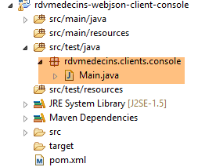 |
La clase [Main] es la siguiente:
package rdvmedecins.clients.console;
import java.io.IOException;
import org.springframework.context.annotation.AnnotationConfigApplicationContext;
import rdvmedecins.client.config.DaoConfig;
import rdvmedecins.client.dao.IDao;
import rdvmedecins.client.dao.RdvMedecinsException;
import rdvmedecins.client.entities.Rv;
import rdvmedecins.client.entities.User;
import com.fasterxml.jackson.core.JsonProcessingException;
import com.fasterxml.jackson.databind.ObjectMapper;
public class Main {
// serializador jSON
static private ObjectMapper mapper = new ObjectMapper();
// tiempo de espera de las conexiones en milisegundos
static private int TIMEOUT = 1000;
public static void main(String[] args) throws IOException {
// se recupera una referencia en la capa [DAO]
AnnotationConfigApplicationContext context = new AnnotationConfigApplicationContext(DaoConfig.class);
IDao dao = context.getBean(IDao.class);
// se establece el URL del servicio web / json
dao.setUrlServiceWebJson("http://localhost:8080");
// se fijan los tiempos de espera en milisegundos
dao.setTimeout(TIMEOUT);
// Autenticación
String message = "/authenticate [admin,admin]";
try {
dao.authenticate(new User("admin", "admin"));
System.out.println(String.format("%s : OK", message));
} catch (RdvMedecinsException e) {
showException(message, e);
}
message = "/authenticate [user,user]";
try {
dao.authenticate(new User("user", "user"));
System.out.println(String.format("%s : OK", message));
} catch (RdvMedecinsException e) {
showException(message, e);
}
message = "/authenticate [user,x]";
try {
dao.authenticate(new User("user", "x"));
System.out.println(String.format("%s : OK", message));
} catch (RdvMedecinsException e) {
showException(message, e);
}
message = "/authenticate [x,x]";
try {
dao.authenticate(new User("x", "x"));
System.out.println(String.format("%s : OK", message));
} catch (RdvMedecinsException e) {
showException(message, e);
}
message = "/authenticate [admin,x]";
try {
dao.authenticate(new User("admin", "x"));
System.out.println(String.format("%s : OK", message));
} catch (RdvMedecinsException e) {
showException(message, e);
}
// lista de clients
message = "/getAllClients";
try {
showResponse(message, dao.getAllClients(new User("admin", "admin")));
} catch (RdvMedecinsException e) {
showException(message, e);
}
// lista de médicos
message = "/getAllMedecins";
try {
showResponse(message, dao.getAllMedecins(new User("admin", "admin")));
} catch (RdvMedecinsException e) {
showException(message, e);
}
// lista de franjas horarias del médico 2
message = "/getAllCreneaux/2";
try {
showResponse(message, dao.getAllCreneaux(new User("admin", "admin"), 2L));
} catch (RdvMedecinsException e) {
showException(message, e);
}
// cliente n.º 1
message = "/getClientById/1";
try {
showResponse(message, dao.getClientById(new User("admin", "admin"), 1L));
} catch (RdvMedecinsException e) {
showException(message, e);
}
// médico n.º 2
message = "/getMedecinById/2";
try {
showResponse(message, dao.getMedecinById(new User("admin", "admin"), 2L));
} catch (RdvMedecinsException e) {
showException(message, e);
}
// franja horaria n.º 3
message = "/getCreneauById/3";
try {
showResponse(message, dao.getCreneauById(new User("admin", "admin"), 3L));
} catch (RdvMedecinsException e) {
showException(message, e);
}
// rv n.º 4
message = "/getRvById/4";
try {
showResponse(message, dao.getRvById(new User("admin", "admin"), 4L));
} catch (RdvMedecinsException e) {
showException(message, e);
}
// adición de un rv
message = "/AjouterRv [idClient=4,idCreneau=8,jour=2015-01-08]";
long idRv = 0;
try {
Rv response = dao.ajouterRv(new User("admin", "admin"), "2015-01-08", 8L, 4L);
idRv = response.getId();
showResponse(message, response);
} catch (RdvMedecinsException e) {
showException(message, e);
}
// lista de rv del médico 1 el 08/01/2015
message = "/getRvMedecinJour/1/2015-01-08";
try {
showResponse(message, dao.getRvMedecinJour(new User("admin", "admin"), 1L, "2015-01-08"));
} catch (RdvMedecinsException e) {
showException(message, e);
}
// agenda del médico 1 el 08/01/2015
message = "/getAgendaMedecinJour/1/2015-01-08";
try {
showResponse(message, dao.getAgendaMedecinJour(new User("admin", "admin"), 1L, "2015-01-08"));
} catch (RdvMedecinsException e) {
showException(message, e);
}
// eliminación del rv añadido
message = String.format("/supprimerRv [idRv=%s]", idRv);
try {
dao.supprimerRv(new User("admin", "admin"), idRv);
} catch (RdvMedecinsException e) {
showException(message, e);
}
// lista de rv del médico 1 el 08/01/2015
message = "/getRvMedecinJour/1/2015-01-08";
try {
showResponse(message, dao.getRvMedecinJour(new User("admin", "admin"), 1L, "2015-01-08"));
} catch (RdvMedecinsException e) {
showException(message, e);
}
// cierre del contexto
context.close();
}
private static void showException(String message, RdvMedecinsException e) {
System.out.println(String.format("URL [%s]", message));
System.out.println(String.format("L'erreur n° [%s] s'est produite :", e.getStatus()));
for (String msg : e.getMessages()) {
System.out.println(msg);
}
}
private static <T> void showResponse(String message, T response) throws JsonProcessingException {
System.out.println(String.format("URL [%s]", message));
System.out.println(mapper.writeValueAsString(response));
}
}
- línea 19: el serializador jSON que nos permitirá mostrar la respuesta del servidor, línea 184;
- línea 25: el componente [AnnotationConfigApplicationContext] es un componente Spring capaz de utilizar las anotaciones de configuración de una aplicación Spring. Pasamos a su constructor, la clase [AppConfig], que configura la aplicación;
- línea 26: recuperamos una referencia en la capa [DAO];
- líneas 27-30: la configuramos;
- líneas 32-169: probamos todos los métodos de la interfaz [IDao];
Los resultados obtenidos son los siguientes:
09:20:56.935 [main] INFO o.s.c.a.AnnotationConfigApplicationContext - Refreshing org.springframework.context.annotation.AnnotationConfigApplicationContext@52feb982: startup date [Wed Oct 14 09:20:56 CEST 2015]; root of context hierarchy
/authenticate [admin,admin] : OK
URL [/authenticate [user,user]]
L'erreur n° [111] s'est produite :
403 Forbidden
URL [/authenticate [user,x]]
L'erreur n° [111] s'est produite :
401 Unauthorized
URL [/authenticate [x,x]]
L'erreur n° [111] s'est produite :
403 Forbidden
URL [/authenticate [admin,x]]
L'erreur n° [111] s'est produite :
401 Unauthorized
URL [/getAllClients]
[{"id":1,"version":1,"titre":"Mr","nom":"MARTIN","prenom":"Jules"},{"id":2,"version":1,"titre":"Mme","nom":"GERMAN","prenom":"Christine"},{"id":3,"version":1,"titre":"Mr","nom":"JACQUARD","prenom":"Jules"},{"id":4,"version":1,"titre":"Melle","nom":"BISTROU","prenom":"Brigitte"}]
URL [/getAllMedecins]
[{"id":1,"version":1,"titre":"Mme","nom":"PELISSIER","prenom":"Marie"},{"id":2,"version":1,"titre":"Mr","nom":"BROMARD","prenom":"Jacques"},{"id":3,"version":1,"titre":"Mr","nom":"JANDOT","prenom":"Philippe"},{"id":4,"version":1,"titre":"Melle","nom":"JACQUEMOT","prenom":"Justine"}]
URL [/getAllCreneaux/2]
[{"id":25,"version":1,"hdebut":8,"mdebut":0,"hfin":8,"mfin":20,"medecin":null,"idMedecin":2},{"id":26,"version":1,"hdebut":8,"mdebut":20,"hfin":8,"mfin":40,"medecin":null,"idMedecin":2},{"id":27,"version":1,"hdebut":8,"mdebut":40,"hfin":9,"mfin":0,"medecin":null,"idMedecin":2},{"id":28,"version":1,"hdebut":9,"mdebut":0,"hfin":9,"mfin":20,"medecin":null,"idMedecin":2},{"id":29,"version":1,"hdebut":9,"mdebut":20,"hfin":9,"mfin":40,"medecin":null,"idMedecin":2},{"id":30,"version":1,"hdebut":9,"mdebut":40,"hfin":10,"mfin":0,"medecin":null,"idMedecin":2},{"id":31,"version":1,"hdebut":10,"mdebut":0,"hfin":10,"mfin":20,"medecin":null,"idMedecin":2},{"id":32,"version":1,"hdebut":10,"mdebut":20,"hfin":10,"mfin":40,"medecin":null,"idMedecin":2},{"id":33,"version":1,"hdebut":10,"mdebut":40,"hfin":11,"mfin":0,"medecin":null,"idMedecin":2},{"id":34,"version":1,"hdebut":11,"mdebut":0,"hfin":11,"mfin":20,"medecin":null,"idMedecin":2},{"id":35,"version":1,"hdebut":11,"mdebut":20,"hfin":11,"mfin":40,"medecin":null,"idMedecin":2},{"id":36,"version":1,"hdebut":11,"mdebut":40,"hfin":12,"mfin":0,"medecin":null,"idMedecin":2}]
URL [/getClientById/1]
{"id":1,"version":1,"titre":"Mr","nom":"MARTIN","prenom":"Jules"}
URL [/getMedecinById/2]
{"id":2,"version":1,"titre":"Mr","nom":"BROMARD","prenom":"Jacques"}
URL [/getCreneauById/3]
{"id":3,"version":1,"hdebut":8,"mdebut":40,"hfin":9,"mfin":0,"medecin":null,"idMedecin":1}
URL [/getRvById/4]
L'erreur n° [2] s'est produite :
Le rendez-vous d'id [4] n'existe pas
URL [/ajouterRv [idClient=4,idCreneau=8,jour=2015-01-08]]
{"id":144,"version":0,"jour":1420671600000,"client":{"id":4,"version":1,"titre":"Melle","nom":"BISTROU","prenom":"Brigitte"},"creneau":{"id":8,"version":1,"hdebut":10,"mdebut":20,"hfin":10,"mfin":40,"medecin":null,"idMedecin":1},"idClient":0,"idCreneau":0}
URL [/getRvMedecinJour/1/2015-01-08]
[{"id":144,"version":0,"jour":1420675200000,"client":{"id":4,"version":1,"titre":"Melle","nom":"BISTROU","prenom":"Brigitte"},"creneau":{"id":8,"version":1,"hdebut":10,"mdebut":20,"hfin":10,"mfin":40,"medecin":null,"idMedecin":1},"idClient":4,"idCreneau":8}]
URL [/getAgendaMedecinJour/1/2015-01-08]
{"medecin":{"id":1,"version":1,"titre":"Mme","nom":"PELISSIER","prenom":"Marie"},"jour":1420671600000,"creneauxMedecinJour":[{"creneau":{"id":1,"version":1,"hdebut":8,"mdebut":0,"hfin":8,"mfin":20,"medecin":null,"idMedecin":1},"rv":null},{"creneau":{"id":2,"version":1,"hdebut":8,"mdebut":20,"hfin":8,"mfin":40,"medecin":null,"idMedecin":1},"rv":null},{"creneau":{"id":3,"version":1,"hdebut":8,"mdebut":40,"hfin":9,"mfin":0,"medecin":null,"idMedecin":1},"rv":null},{"creneau":{"id":4,"version":1,"hdebut":9,"mdebut":0,"hfin":9,"mfin":20,"medecin":null,"idMedecin":1},"rv":null},{"creneau":{"id":5,"version":1,"hdebut":9,"mdebut":20,"hfin":9,"mfin":40,"medecin":null,"idMedecin":1},"rv":null},{"creneau":{"id":6,"version":1,"hdebut":9,"mdebut":40,"hfin":10,"mfin":0,"medecin":null,"idMedecin":1},"rv":null},{"creneau":{"id":7,"version":1,"hdebut":10,"mdebut":0,"hfin":10,"mfin":20,"medecin":null,"idMedecin":1},"rv":null},{"creneau":{"id":8,"version":1,"hdebut":10,"mdebut":20,"hfin":10,"mfin":40,"medecin":null,"idMedecin":1},"rv":{"id":144,"version":0,"jour":1420675200000,"client":{"id":4,"version":1,"titre":"Melle","nom":"BISTROU","prenom":"Brigitte"},"creneau":{"id":8,"version":1,"hdebut":10,"mdebut":20,"hfin":10,"mfin":40,"medecin":null,"idMedecin":1},"idClient":4,"idCreneau":8}},{"creneau":{"id":9,"version":1,"hdebut":10,"mdebut":40,"hfin":11,"mfin":0,"medecin":null,"idMedecin":1},"rv":null},{"creneau":{"id":10,"version":1,"hdebut":11,"mdebut":0,"hfin":11,"mfin":20,"medecin":null,"idMedecin":1},"rv":null},{"creneau":{"id":11,"version":1,"hdebut":11,"mdebut":20,"hfin":11,"mfin":40,"medecin":null,"idMedecin":1},"rv":null},{"creneau":{"id":12,"version":1,"hdebut":11,"mdebut":40,"hfin":12,"mfin":0,"medecin":null,"idMedecin":1},"rv":null},{"creneau":{"id":13,"version":1,"hdebut":14,"mdebut":0,"hfin":14,"mfin":20,"medecin":null,"idMedecin":1},"rv":null},{"creneau":{"id":14,"version":1,"hdebut":14,"mdebut":20,"hfin":14,"mfin":40,"medecin":null,"idMedecin":1},"rv":null},{"creneau":{"id":15,"version":1,"hdebut":14,"mdebut":40,"hfin":15,"mfin":0,"medecin":null,"idMedecin":1},"rv":null},{"creneau":{"id":16,"version":1,"hdebut":15,"mdebut":0,"hfin":15,"mfin":20,"medecin":null,"idMedecin":1},"rv":null},{"creneau":{"id":17,"version":1,"hdebut":15,"mdebut":20,"hfin":15,"mfin":40,"medecin":null,"idMedecin":1},"rv":null},{"creneau":{"id":18,"version":1,"hdebut":15,"mdebut":40,"hfin":16,"mfin":0,"medecin":null,"idMedecin":1},"rv":null},{"creneau":{"id":19,"version":1,"hdebut":16,"mdebut":0,"hfin":16,"mfin":20,"medecin":null,"idMedecin":1},"rv":null},{"creneau":{"id":20,"version":1,"hdebut":16,"mdebut":20,"hfin":16,"mfin":40,"medecin":null,"idMedecin":1},"rv":null},{"creneau":{"id":21,"version":1,"hdebut":16,"mdebut":40,"hfin":17,"mfin":0,"medecin":null,"idMedecin":1},"rv":null},{"creneau":{"id":22,"version":1,"hdebut":17,"mdebut":0,"hfin":17,"mfin":20,"medecin":null,"idMedecin":1},"rv":null},{"creneau":{"id":23,"version":1,"hdebut":17,"mdebut":20,"hfin":17,"mfin":40,"medecin":null,"idMedecin":1},"rv":null},{"creneau":{"id":24,"version":1,"hdebut":17,"mdebut":40,"hfin":18,"mfin":0,"medecin":null,"idMedecin":1},"rv":null}]}
URL [/getRvMedecinJour/1/2015-01-08]
[]
09:21:00.258 [main] INFO o.s.c.a.AnnotationConfigApplicationContext - Closing org.springframework.context.annotation.AnnotationConfigApplicationContext@52feb982: startup date [Wed Oct 14 09:20:56 CEST 2015]; root of context hierarchy
Dejamos al lector la tarea de asociar los resultados con el código. Este muestra cómo llamar a cada método de la capa [DAO]. Señalemos simplemente algunos puntos:
- líneas 2-14: muestran que, en caso de error de autenticación, el servidor devuelve un estado HTTP, [403 Forbidden] o [401 Unauthorized], según el caso;
- líneas 30-31: se añade un Rv al médico n.º 1;
- líneas 32-33: se ve esta cita. Es la única del día;
- líneas 34-35: también se ve en el agenda del médico;
- líneas 36-37: la cita ha desaparecido. El código la ha eliminado entretanto;
Los registros de la consola se controlan mediante los siguientes archivos:
 |
[application.properties]
logging.level.org.springframework.web=OFF
logging.level.org.hibernate=OFF
spring.main.show-banner=false
logging.level.httpclient.wire=OFF
[logback.xml]
<configuration>
<appender name="STDOUT" class="ch.qos.logback.core.ConsoleAppender">
<!-- a los codificadores se les asigna por defecto el tipo ch.qos.logback.classic.encoder.PatternLayoutEncoder -->
<encoder>
<pattern>%d{HH:mm:ss.SSS} [%thread] %-5level %logger{36} - %msg%n</pattern>
</encoder>
</appender>
<!-- control del nivel de los registros -->
<root level="info"> <!-- desactivado, información, debug, advertencia -->
<appender-ref ref="STDOUT" />
</root>
</configuration>
8.5.10. Implementación de la capa [DAO]
Ahora nos queda presentar el núcleo de la capa [DAO], la implementación de su interfaz [IDao]. Lo haremos de forma progresiva.
 |
La interfaz [IDao] está implementada por la clase abstracta [AbstractDao] y su clase hija [Dao].
La clase padre [AbstractDao] es la siguiente:
package rdvmedecins.client.dao;
import java.net.URI;
import java.net.URISyntaxException;
import java.util.ArrayList;
import java.util.Base64;
import java.util.List;
import org.springframework.beans.factory.annotation.Autowired;
import org.springframework.core.ParameterizedTypeReference;
import org.springframework.http.MediaType;
import org.springframework.http.RequestEntity;
import org.springframework.http.RequestEntity.BodyBuilder;
import org.springframework.http.RequestEntity.HeadersBuilder;
import org.springframework.http.client.HttpComponentsClientHttpRequestFactory;
import org.springframework.web.client.RestTemplate;
import rdvmedecins.client.entities.User;
public abstract class AbstractDao implements IDao {
// data
@Autowired
protected RestTemplate restTemplate;
protected String urlServiceWebJson;
// URL servicio web / jSON
public void setUrlServiceWebJson(String url) {
this.urlServiceWebJson = url;
}
public void setTimeout(int timeout) {
// se establece el tiempo de espera de las solicitudes del cliente web
HttpComponentsClientHttpRequestFactory factory = (HttpComponentsClientHttpRequestFactory) restTemplate
.getRequestFactory();
factory.setConnectTimeout(timeout);
factory.setReadTimeout(timeout);
}
private String getBase64(User user) {
// se codifica en base 64 el usuario y su contraseña - requiere
// Java 8
String chaîne = String.format("%s:%s", user.getLogin(), user.getPasswd());
return String.format("Basic %s", new String(Base64.getEncoder().encode(chaîne.getBytes())));
}
// solicitud genérica
protected String getResponse(User user, String url, String jsonPost) {
...
}
}
- línea 20: la clase es abstracta, lo que nos impide designarla como un componente Spring. Será su clase hija la que se designe como tal;
- líneas 23-24: inyectamos el bean [restTemplate] que hemos definido en la clase de configuración [AppConfig];
- línea 25: el URL raíz del servicio web / jSON;
- líneas 32-38: establecen el tiempo de espera del cliente mientras espera una respuesta del servidor;
- línea 34: recuperamos el componente [HttpComponentsClientHttpRequestFactory] que habíamos inyectado en el bean [restTemplate] al crearlo (véase [AppConfig]);
- línea 36: establecemos el tiempo máximo de espera del cliente cuando establece una conexión con el servidor;
- línea 37: establecemos el tiempo máximo de espera del cliente cuando espera una respuesta a una de sus solicitudes;
La implementación de los métodos de comunicación con el servidor se factorizará en el siguiente método genérico:
// solicitud genérica
protected String getResponse(User user, String url, String jsonPost) {
...
}
- línea 2: los parámetros de [getResponse] son los siguientes:
- [User user]: el usuario que realiza la conexión;
- [String url]: el URL al que se va a consultar. Se trata del final del URL, ya que la primera parte la proporciona el campo [urlServiceWebJson] de la clase,
- [String jsonPost]: la cadena jSON que se va a enviar. Si este valor está presente, se solicitará el URL con un POST; de lo contrario, será con un GET;
Continuemos:
// solicitud genérica
protected String getResponse(User user, String url, String jsonPost) {
// url: URL, póngase en contacto con
// jsonPost: el valor jSON para publicar
try {
// ejecución de la consulta
RequestEntity<?> request;
if (jsonPost == null) {
HeadersBuilder<?> headersBuilder = RequestEntity.get(new URI(String.format("%s%s", urlServiceWebJson, url))).accept(MediaType.APPLICATION_JSON);
if (user != null) {
headersBuilder = headersBuilder.header("Authorization", getBase64(user));
}
request = headersBuilder.build();
} else {
BodyBuilder bodyBuilder = RequestEntity.post(new URI(String.format("%s%s", urlServiceWebJson, url)))
.header("Content-Type", "application/json").accept(MediaType.APPLICATION_JSON);
if (user != null) {
bodyBuilder = bodyBuilder.header("Authorization", getBase64(user));
}
request = bodyBuilder.body(jsonPost);
}
//: se ejecuta la consulta
return restTemplate.exchange(request, new ParameterizedTypeReference<String>() {
}).getBody();
} catch (URISyntaxException e) {
throw new RdvMedecinsException(20, getMessagesForException(e));
} catch (RuntimeException e) {
throw new RdvMedecinsException(21, getMessagesForException(e));
}
}
- líneas 23-24: la instrucción que realiza la solicitud al servidor y recibe su respuesta. El componente [RestTemplate] ofrece un gran número de métodos de intercambio con el servidor. Se podría haber elegido otro método distinto de [exchange]. El segundo parámetro de la llamada establece el tipo de respuesta esperada, en este caso una cadena jSON. El primer parámetro es la solicitud de tipo [RequestEntity] (línea 7). El resultado del método [exchange] es de tipo [ResponseEntity<String>]. El tipo [ResponseEntity] encapsula la respuesta completa del servidor, los encabezados HTTP y el documento enviado por este. Del mismo modo, el tipo [RequestEntity] encapsula toda la solicitud del cliente, incluyendo los encabezados HTTP y el posible valor enviado;
- línea 23: es el cuerpo del objeto [ResponseEntity<String>] el que se devuelve al método llamante, es decir, la cadena jSON enviada por el servidor;
- líneas 9-21: debemos construir la solicitud de tipo [RequestEntity]. Esta varía en función de si se utiliza un GET o un POST para realizar la solicitud;
- línea 9: la consulta para un GET. La clase [RequestEntity] ofrece métodos estáticos para crear las consultas GET, POST, HEAD,... El método [RequestEntity.get] permite crear una consulta GET encadenando los distintos métodos que la construyen:
- el método [RequestEntity.get] admite como parámetro el URL de destino en forma de una instancia URI,
- el método [accept] permite definir los elementos del encabezado HTTP [Accept]. Aquí indicamos que aceptamos el tipo [application/json] que enviará el servidor;
- el resultado de esta concatenación de métodos es un tipo [HeadersBuilder];
- líneas 10-12: en caso de que el parámetro [User user] no sea nulo, se incluye el encabezado HTTP [Authorization] en la solicitud;
- línea 13: el método [HeadersBuilder.build] utiliza esta información para construir el tipo [RequestEntity] de la consulta;
- línea 15: la consulta para un POST. El método [RequestEntity.post] permite crear una consulta POST encadenando los distintos métodos que la construyen:
- el método [RequestEntity.post] admite como parámetro el URL de destino en forma de una instancia URI,
- el método [header] permite definir los encabezados HTTP que se deseen utilizar, en este caso el de autorización,
- el método [header] que sigue incluye en la solicitud el encabezado [Content-Type: application/json] para indicarle que el valor enviado le llegará en forma de cadena jSON;
- el método [accept] permite indicar que aceptamos el tipo [application/json] que va a enviar el servidor;
- líneas 17-19: en caso de que el parámetro [User user] no sea nulo, se incluye el encabezado HTTP [Authorization] en la solicitud;
- línea 20: el método [BodyBuilder.body] establece el valor enviado. Este es el segundo parámetro del método genérico [getResponse] (línea 2);
- líneas 25-28: si se produce algún error, se lanza una excepción de tipo [RdvMedecinsException];
El método [getMessagesForException] de las líneas 26 y 28 es el siguiente:
// lista de mensajes de error de una excepción
protected static List<String> getMessagesForException(Exception exception) {
// se recupera la lista de mensajes de error de la excepción
Throwable cause = exception;
List<String> erreurs = new ArrayList<String>();
while (cause != null) {
// se recupera el mensaje solo si es !=null y no está en blanco
String message = cause.getMessage();
if (message != null) {
message = message.trim();
if (message.length() != 0) {
erreurs.add(message);
}
}
// causa siguiente
cause = cause.getCause();
}
return erreurs;
}
El método privado [getBase64] proporciona el código Base64 de la cadena «login:passwd» para el encabezado de autenticación HTTP:
private String getBase64(User user) {
// se codifica en base 64 el usuario y su contraseña - requiere Java 8
String chaîne = String.format("%s:%s", user.getLogin(), user.getPasswd());
return String.format("Basic %s", new String(Base64.getEncoder().encode(chaîne.getBytes())));
}
La clase [Dao] extiende la clase [AbstractDao] de la siguiente manera:
package rdvmedecins.client.dao;
import java.io.IOException;
import java.util.List;
import org.springframework.beans.factory.annotation.Autowired;
import org.springframework.stereotype.Service;
import com.fasterxml.jackson.core.type.TypeReference;
import com.fasterxml.jackson.databind.ObjectMapper;
import rdvmedecins.client.entities.AgendaMedecinJour;
import rdvmedecins.client.entities.Client;
import rdvmedecins.client.entities.Creneau;
import rdvmedecins.client.entities.Medecin;
import rdvmedecins.client.entities.Rv;
import rdvmedecins.client.entities.User;
import rdvmedecins.client.requests.PostAjouterRv;
import rdvmedecins.client.requests.PostSupprimerRv;
import rdvmedecins.client.responses.Response;
@Service
public class Dao extends AbstractDao implements IDao {
// mapeadores jSON
@Autowired
ObjectMapper jsonMapper;
@Autowired
private ObjectMapper jsonMapperShortCreneau;
@Autowired
private ObjectMapper jsonMapperLongRv;
@Autowired
private ObjectMapper jsonMapperShortRv;
public List<Client> getAllClients(User user) {
...
}
public List<Medecin> getAllMedecins(User user) {
...
}
...
}
- línea 22: la clase [Dao] es un componente Spring. Aquí se ha utilizado la anotación [@Service]. Se podría haber seguido utilizando la anotación [@Component] utilizada hasta ahora;
- líneas 26-36: inyección de los cuatro mapeadores jSON definidos en la clase de configuración [DaoConfig];
Los métodos de la clase [Dao] siguen todos el mismo esquema. Vamos a detallar una operación GET y una operación POST.
En primer lugar, una consulta [GET]:
public AgendaMedecinJour getAgendaMedecinJour(User user, long idMedecin, String jour) {
// la respuesta
Response<AgendaMedecinJour> response;
// el agenda
String jsonResponse = getResponse(user, String.format("%s/%s/%s", "/getAgendaMedecinJour", idMedecin, jour), null);
try {
// el agenda AgendaMedecinJour
response = jsonMapperLongRv.readValue(jsonResponse, new TypeReference<Response<AgendaMedecinJour>>() {
});
} catch (IOException e) {
throw new RdvMedecinsException(401, getMessagesForException(e));
} catch (RuntimeException e) {
throw new RdvMedecinsException(402, getMessagesForException(e));
}
// análisis de la respuesta
int status = response.getStatus();
if (status != 0) {
throw new RdvMedecinsException(status, response.getMessages());
} else {
return response.getBody();
}
}
- línea 5: se llama al método genérico [getResponse]. Los parámetros efectivos utilizados son los siguientes:
- 1: el usuario;
- 2: el destino URL;
- 3: el valor que se va a enviar. Aquí no hay ninguno;
- línea 5: la llamada no se ha rodeado de un try / catch. El método [getResponse] puede lanzar un tipo [RdvMedecinsException]. Si se lanza, esta excepción se propagará al método que llamó al método [getAgendaMedecinJour] anterior;
- línea 8: elURL [/getAgendaMedecinJour] envía un tipo [Response<AgendaMedecinJour>] que ha sido serializado en jSON en el lado del servidor por el mapeador jSON [jsonMapperLongRv]. Se utiliza este mismo mapeador para deserializar la cadena jSON recibida;
- líneas 10-13: si se produce un error en la línea 9, se lanza un tipo [RdvMedecinsException];
- líneas 16-21: se analiza la respuesta enviada por el servidor;
- líneas 17-18: si el servidor ha señalado un error, se lanza una excepción con la información transmitida por el servidor;
- líneas 19-21: en caso contrario, se devuelve el agenda del médico;
La solicitud POST examinada será la siguiente:
public Rv ajouterRv(User user, String jour, long idCreneau, long idClient) {
// la respuesta
Response<Rv> response;
try {
// el Rv
String jsonResponse = getResponse(user, "/ajouterRv",
jsonMapper.writeValueAsString(new PostAjouterRv(idClient, idCreneau, jour)));
// el Rv Rv
response = jsonMapperLongRv.readValue(jsonResponse, new TypeReference<Response<Rv>>() {
});
} catch (RdvMedecinsException e) {
throw e;
} catch (IOException e) {
throw new RdvMedecinsException(381, getMessagesForException(e));
} catch (RuntimeException e) {
throw new RdvMedecinsException(382, getMessagesForException(e));
}
// análisis de la respuesta
int status = response.getStatus();
if (status != 0) {
throw new RdvMedecinsException(status, response.getMessages());
} else {
return response.getBody();
}
}
- línea 6: se llama al método [getResponse] con los siguientes parámetros:
- 1: el usuario;
- 2: el URL de destino,
- 3: el valor enviado: se pasa el valor jSON de tipo [PostAjouter] construido con la información recibida como parámetros por el método. Se utiliza un mapeador jSON sin filtros;
- línea 9: en el lado del servidor, es el mapeador jSON [jsonMapperLongRv] el que ha serializado la respuesta del servidor. En el lado del cliente, se utiliza este mismo mapeador para deserializarla;
- línea 6: el URL [/ajouterRv] devuelve el valor jSON de tipo [Response<Rv>];
- líneas 4-11: aquí, el método [getResponse] se ha colocado dentro de un try / catch porque la serialización del valor enviado puede lanzar una excepción. El método [getResponse] puede lanzar una excepción [RdvMedecinsException]. En ese caso, simplemente se vuelve a lanzar (líneas 11-12);
El código siguiente (líneas 13-24) es análogo al que acabamos de estudiar. La única diferencia con una operación GET es, por tanto, el segundo parámetro del método [getResponse], que debe ser el valor jSON del valor que se va a publicar.
Los demás métodos se basan en el mismo modelo.
8.5.11. Anomalía
Al realizar diversas pruebas, se detecta una anomalía resumida en la siguiente clase [Anomalie]:
package rdvmedecins.clients.console;
import java.io.IOException;
import org.springframework.context.annotation.AnnotationConfigApplicationContext;
import rdvmedecins.client.config.DaoConfig;
import rdvmedecins.client.dao.IDao;
import rdvmedecins.client.dao.RdvMedecinsException;
import rdvmedecins.client.entities.User;
import com.fasterxml.jackson.core.JsonProcessingException;
import com.fasterxml.jackson.databind.ObjectMapper;
public class Anomalie {
// serializador jSON
static private ObjectMapper mapper = new ObjectMapper();
// tiempo de espera de las conexiones en milisegundos
static private int TIMEOUT = 1000;
public static void main(String[] args) throws IOException {
// se recupera una referencia en la capa [DAO]
AnnotationConfigApplicationContext context = new AnnotationConfigApplicationContext(DaoConfig.class);
IDao dao = context.getBean(IDao.class);
// se establece el URL del servicio web / json
dao.setUrlServiceWebJson("http://localhost:8080");
// se fijan los tiempos de espera en milisegundos
dao.setTimeout(TIMEOUT);
// Autenticación
String message = "/authenticate [admin,admin]";
try {
dao.authenticate(new User("admin", "admin"));
System.out.println(String.format("%s : OK", message));
} catch (RdvMedecinsException e) {
showException(message, e);
}
// Autenticación
message = "/authenticate [admin,x]";
try {
dao.authenticate(new User("admin", "x"));
System.out.println(String.format("%s : OK", message));
} catch (RdvMedecinsException e) {
showException(message, e);
}
// Autenticación
message = "/authenticate [user,user]";
try {
dao.authenticate(new User("user", "user"));
System.out.println(String.format("%s : OK", message));
} catch (RdvMedecinsException e) {
showException(message, e);
}
// cierre del contexto
context.close();
}
private static void showException(String message, RdvMedecinsException e) {
System.out.println(String.format("URL [%s]", message));
System.out.println(String.format("L'erreur n° [%s] s'est produite :", e.getStatus()));
for (String msg : e.getMessages()) {
System.out.println(msg);
}
}
}
- líneas 31-38: se autentica al usuario [admin, admin];
- líneas 40-47: se autentica al usuario [admin, x], que, por lo tanto, tiene una contraseña incorrecta;
- líneas 49-56: se autentica al usuario [user, user], que es un usuario existente pero no autorizado;
Estos son los resultados:
- línea 2: contra todo pronóstico, se ha aceptado al usuario [admin, x];
Si se comentan las líneas 33-38 del código, se obtiene el siguiente resultado:
que es el resultado esperado. Es como si, una vez que el usuario [admin, admin] se hubiera identificado correctamente por primera vez, su contraseña ya no fuera necesaria para las siguientes veces. Y así es. Spring Security utiliza por defecto una sesión que hace que, una vez que un usuario se ha autenticado, ya no tenga que volver a hacerlo en las solicitudes siguientes. Se puede modificar la configuración de [Spring Security] en el servidor web / jSON para que esto ya no sea así:
 |
El archivo [SecurityConfig] debe modificarse de la siguiente manera:
@Override
protected void configure(HttpSecurity http) throws Exception {
...
// sin sesión
http.sessionManagement().sessionCreationPolicy(SessionCreationPolicy.STATELESS);
}
- la línea 5 indica que no debe haber sesión de seguridad;
Esto ha resuelto el problema de la anomalía.
8.6. Codificación del servidor Spring / Thymeleaf
8.6.1. Introducción
Volvamos a la arquitectura de la aplicación cliente/servidor que vamos a construir:
 |
- se ha construido el servidor web [Web2] / jSON;
- se ha construido la capa [DAO] del cliente [Web1];
La relación entre el servidor [Web1] y los navegadores clients es una relación cliente/servidor en la que el servidor es un servidor web / jSON. De hecho, [Web1] va a entregar flujos HTML encapsulados en una cadena jSON. La arquitectura cliente/servidor es la siguiente:
 |
- tenemos una arquitectura cliente [2] / servidor [1] en la que el cliente y el servidor se comunican en jSON;
- en [1], la capa web Spring MVC / Thymeleaf entrega vistas, fragmentos de vista y datos en jSON. Por lo tanto, el servidor es un servidor web / jSON, al igual que el servidor [Web1]. Este también es sin estado;
- en [2]: el código Javascript integrado en la vista cargada al inicio de la aplicación está estructurado en capas:
- la capa [présentation] se encarga de las interacciones con el usuario,
- la capa [DAO] se encarga del acceso a los datos a través del servidor [Web2];
- el cliente [2] almacenará en caché ciertas vistas para aliviar la carga del servidor;
Vamos a construir el servidor web / jSON [Web1] implementado con Spring MVC / Thymeleaf en varias etapas:
- descubrimiento del framework Bootstrap;
- escritura de las vistas;
- escritura del controlador;
A continuación, y por separado, construiremos el cliente JS del servidor [Web1]. Para demostrar claramente que este cliente tiene cierta independencia respecto al servidor [Web1], lo construiremos con la herramienta [Webstorm] en lugar de con STS.
A continuación, se omitirán algunos detalles, ya que podrían hacernos perder de vista lo importante, que es la organización del código. El lector interesado podrá encontrar el código completo en el sitio web de este documento.
8.6.2. El proyecto STS
 |
- en [1], los códigos Java;
- en [2], las vistas;
La configuración de Maven en [pom.xml] es la siguiente:
<?xml version="1.0" encoding="UTF-8"?>
<project xmlns="http://maven.apache.org/POM/4.0.0" xmlns:xsi="http://www.w3.org/2001/XMLSchema-instance"
xsi:schemaLocation="http://maven.apache.org/POM/4.0.0 http://maven.apache.org/xsd/maven-4.0.0.xsd">
<modelVersion>4.0.0</modelVersion>
<groupId>istia.st.rdvmedecins</groupId>
<artifactId>rdvmedecins-springthymeleaf-server</artifactId>
<version>0.0.1-SNAPSHOT</version>
<name>rdvmedecins-springthymeleaf-server</name>
<description>Gestion de RV Médecins</description>
<parent>
<groupId>org.springframework.boot</groupId>
<artifactId>spring-boot-starter-parent</artifactId>
<version>1.2.0.RELEASE</version>
</parent>
<dependencies>
<dependency>
<groupId>org.springframework.boot</groupId>
<artifactId>spring-boot-starter-thymeleaf</artifactId>
</dependency>
<dependency>
<groupId>istia.st.rdvmedecins</groupId>
<artifactId>rdvmedecins-webjson-client-console</artifactId>
<version>0.0.1-SNAPSHOT</version>
</dependency>
</dependencies>
<properties>
<start-class>rdvmedecins.springthymeleaf.server.boot.Boot</start-class>
<project.build.sourceEncoding>UTF-8</project.build.sourceEncoding>
<project.reporting.outputEncoding>UTF-8</project.reporting.outputEncoding>
<java.version>1.7</java.version>
</properties>
<build>
<plugins>
<plugin>
<artifactId>maven-compiler-plugin</artifactId>
<configuration>
<source>1.7</source>
<target>1.7</target>
</configuration>
</plugin>
<plugin>
<groupId>org.springframework.boot</groupId>
<artifactId>spring-boot-maven-plugin</artifactId>
</plugin>
</plugins>
</build>
...
</project>
- líneas 16-19: el proyecto es un proyecto Thymeleaf;
- líneas 20-24: que se basa en la capa [DAO] que acabamos de construir;
La configuración de Java se realiza mediante dos archivos:
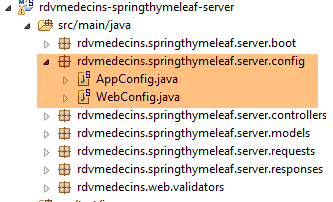 |
La capa [web] se configura mediante el siguiente archivo [WebConfig]:
package rdvmedecins.springthymeleaf.server.config;
import org.springframework.boot.autoconfigure.EnableAutoConfiguration;
import org.springframework.context.MessageSource;
import org.springframework.context.annotation.Bean;
import org.springframework.context.support.ResourceBundleMessageSource;
import org.springframework.web.servlet.DispatcherServlet;
import org.springframework.web.servlet.config.annotation.WebMvcConfigurerAdapter;
import org.thymeleaf.spring4.SpringTemplateEngine;
import org.thymeleaf.spring4.templateresolver.SpringResourceTemplateResolver;
@EnableAutoConfiguration
public class WebConfig extends WebMvcConfigurerAdapter {
// ----------------- configuración de capa [web]
@Bean
public MessageSource messageSource() {
ResourceBundleMessageSource messageSource = new ResourceBundleMessageSource();
messageSource.setBasename("i18n/messages");
return messageSource;
}
@Bean
public SpringResourceTemplateResolver templateResolver() {
SpringResourceTemplateResolver templateResolver = new SpringResourceTemplateResolver();
templateResolver.setPrefix("classpath:/templates/");
templateResolver.setSuffix(".xml");
templateResolver.setTemplateMode("HTML5");
templateResolver.setCacheable(true);
templateResolver.setCharacterEncoding("UTF-8");
return templateResolver;
}
@Bean
SpringTemplateEngine templateEngine(SpringResourceTemplateResolver templateResolver) {
SpringTemplateEngine templateEngine = new SpringTemplateEngine();
templateEngine.setTemplateResolver(templateResolver);
return templateEngine;
}
// configuración dispatcherservlet para los encabezados CORS
@Bean
public DispatcherServlet dispatcherServlet() {
DispatcherServlet servlet = new DispatcherServlet();
servlet.setDispatchOptionsRequest(true);
return servlet;
}
}
En algún momento u otro, nos hemos encontrado con todos los elementos de esta configuración. Recordemos simplemente que las líneas 42-47 son necesarias cuando se quiere poder consultar el servidor con solicitudes entre dominios (CORS). Este será el caso aquí.
La clase [AppConfig] configura toda la aplicación:
package rdvmedecins.springthymeleaf.server.config;
import org.springframework.boot.autoconfigure.EnableAutoConfiguration;
import org.springframework.context.annotation.ComponentScan;
import org.springframework.context.annotation.Import;
import rdvmedecins.client.config.DaoConfig;
@EnableAutoConfiguration
@ComponentScan(basePackages = { "rdvmedecins.springthymeleaf.server" })
@Import({ WebConfig.class, DaoConfig.class })
public class AppConfig {
// admin / admin
private final String USER_INIT = "admin";
private final String MDP_USER_INIT = "admin";
// raíz del servicio web / json
private final String WEBJSON_ROOT = "http://localhost:8080";
// tiempo de espera en milisegundos
private final int TIMEOUT = 5000;
// CORS
private final boolean CORS_ALLOWED=true;
...
}
- líneas 11: [AppConfig] importa la configuración de la capa [DAO] y de la capa [web];
- líneas 15-16: los identificadores que permitirán a la aplicación acceder al inicio de la misma para almacenar en caché los médicos y los clients;
- línea 18: el URL del servicio web / jSON [Web1];
- línea 20: el tiempo de espera de las llamadas HTTP de la aplicación;
- línea 22: un valor booleano para autorizar o no las llamadas entre dominios;
Por último, en [application.properties], el servidor Tomcat está configurado para funcionar en el puerto 8081:
 |
server.port=8081
8.6.3. Las funcionalidades de la aplicación
Se describieron en el apartado 8.2. A continuación, las recordamos. Con un navegador, se solicita el URL [http://localhost:8081/boot.html]:
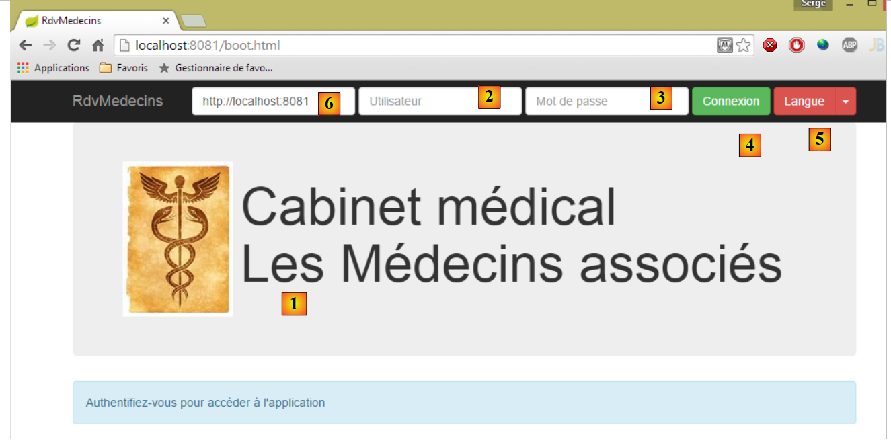 |
- en [1], la página de inicio de sesión de la aplicación;
- en [2] y [3], el nombre de usuario y la contraseña de quien desea utilizar la aplicación. Hay dos usuarios: admin/admin (nombre de usuario/contraseña) con un rol (ADMIN) y user/user con un rol (USER). Solo el rol ADMIN tiene permiso para utilizar la aplicación. El rol USER solo está ahí para mostrar la respuesta del servidor en este caso de uso;
- en [4], el botón que permite conectarse al servidor;
- en [5], el idioma de la aplicación. Hay dos: el francés por defecto y el inglés;
- en [6], el URL del servidor [rdvmedecins-springthymeleaf-server];
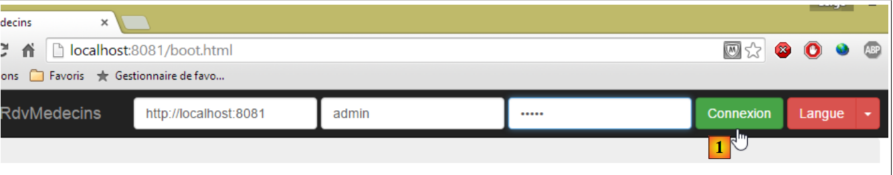 |
- en [1], se inicia sesión;
 |
- una vez conectado, se puede elegir el médico con el que se desea concertar una cita [2] y el día de la misma [3]. En cuanto se han introducido el médico y el día, se muestra automáticamente el agenda:
 |
- una vez obtenido el agenda del médico, se puede reservar una franja horaria [5];
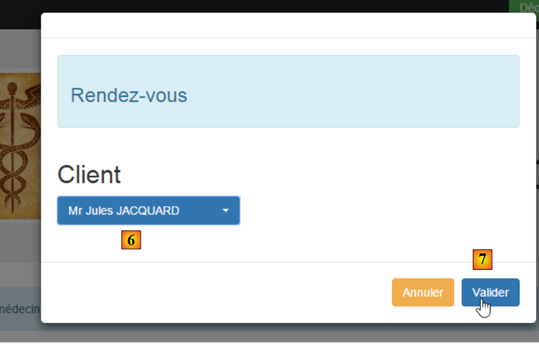 |
- en [6], se selecciona al paciente para la cita y se valida esta selección en [7];
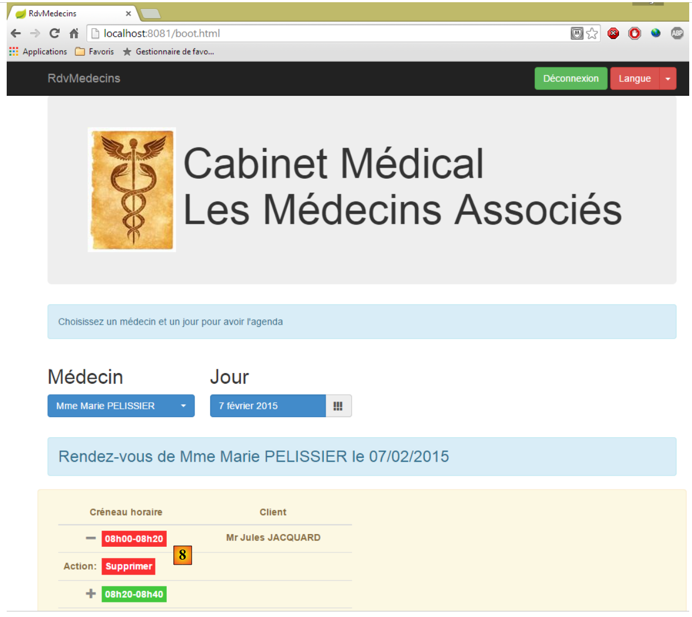 |
Una vez validada la cita, se vuelve automáticamente a agenda, donde ya figura la nueva cita. Esta cita podrá eliminarse posteriormente en [8].
Se han descrito las principales funcionalidades. Son sencillas. Terminemos con la gestión del idioma:
 |
- en [1], se cambia del francés al inglés;
 |
- en [2], la vista pasa a inglés, incluido el calendario;
8.6.4. Paso 1: introducción al framework CSS Bootstrap
 |
En el cliente web anterior, las páginas HTML utilizarán el framework CSS Bootstrap [http://getbootstrap.com/] que presentamos a continuación.
8.6.4.1. El proyecto de los ejemplos
El proyecto de los ejemplos será el siguiente:
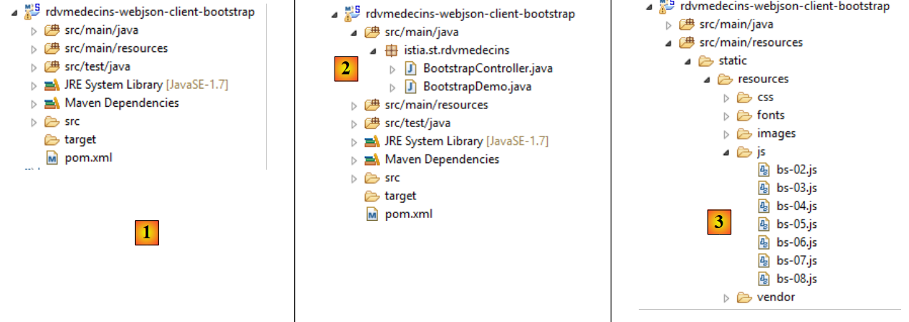 |
- en [1]: el proyecto en su totalidad;
- en [2]: los códigos Java;
- en [3]: los scripts Javascript;
 |
- en [4]: las bibliotecas Javascript;
- en [5]: las vistas Thymeleaf;
- en [6]: las hojas de estilo;
8.6.4.1.1. Configuración de Maven
El archivo [pom.xml] es el de un proyecto Maven Thymeleaf:
<?xml version="1.0" encoding="UTF-8"?>
<project xmlns="http://maven.apache.org/POM/4.0.0" xmlns:xsi="http://www.w3.org/2001/XMLSchema-instance"
xsi:schemaLocation="http://maven.apache.org/POM/4.0.0 http://maven.apache.org/xsd/maven-4.0.0.xsd">
<modelVersion>4.0.0</modelVersion>
<groupId>istia.st</groupId>
<artifactId>rdvmedecins-webjson-client-bootstrap</artifactId>
<version>0.0.1-SNAPSHOT</version>
<packaging>jar</packaging>
<name>rdvmedecins-webjson-client-bootstrap</name>
<description>Démos Bootstrap</description>
<parent>
<groupId>org.springframework.boot</groupId>
<artifactId>spring-boot-starter-parent</artifactId>
<version>1.2.0.RELEASE</version>
<relativePath /> <!-- búsqueda de elemento principal en el repositorio -->
</parent>
<properties>
<project.build.sourceEncoding>UTF-8</project.build.sourceEncoding>
<start-class>istia.st.rdvmedecins.BootstrapDemo</start-class>
<java.version>1.7</java.version>
</properties>
<dependencies>
<dependency>
<groupId>org.springframework.boot</groupId>
<artifactId>spring-boot-starter-thymeleaf</artifactId>
</dependency>
</dependencies>
<build>
<plugins>
<plugin>
<groupId>org.springframework.boot</groupId>
<artifactId>spring-boot-maven-plugin</artifactId>
</plugin>
</plugins>
</build>
</project>
8.6.4.1.2. Configuración de Java
 |
La clase [BootstrapDemo] configura la aplicación Spring / Thymeleaf:
package istia.st.rdvmedecins;
import org.springframework.boot.SpringApplication;
import org.springframework.boot.autoconfigure.EnableAutoConfiguration;
import org.springframework.context.annotation.Bean;
import org.springframework.context.annotation.ComponentScan;
import org.springframework.web.servlet.config.annotation.WebMvcConfigurerAdapter;
import org.thymeleaf.spring4.templateresolver.SpringResourceTemplateResolver;
@EnableAutoConfiguration
@ComponentScan({ "istia.st.rdvmedecins" })
public class BootstrapDemo extends WebMvcConfigurerAdapter {
public static void main(String[] args) {
SpringApplication.run(BootstrapDemo.class, args);
}
@Bean
public SpringResourceTemplateResolver templateResolver() {
SpringResourceTemplateResolver templateResolver = new SpringResourceTemplateResolver();
templateResolver.setPrefix("classpath:/templates/");
templateResolver.setSuffix(".xml");
templateResolver.setTemplateMode("HTML5");
templateResolver.setCacheable(true);
templateResolver.setCharacterEncoding("UTF-8");
return templateResolver;
}
}
Ya nos hemos encontrado con este tipo de código.
8.6.4.1.3. El controlador Spring
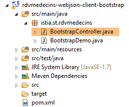 |
El controlador [BootstrapController] es el siguiente:
package istia.st.rdvmedecins;
import org.springframework.stereotype.Controller;
import org.springframework.web.bind.annotation.RequestMapping;
import org.springframework.web.bind.annotation.RequestMethod;
@Controller
public class BootstrapController {
@RequestMapping(value = "/bs-01", method = RequestMethod.GET, produces = "text/html; charset=UTF-8")
public String bso1() {
return "bs-01";
}
@RequestMapping(value = "/bs-02", method = RequestMethod.GET, produces = "text/html; charset=UTF-8")
public String bs02() {
return "bs-02";
}
@RequestMapping(value = "/bs-03", method = RequestMethod.GET, produces = "text/html; charset=UTF-8")
public String bs03() {
return "bs-03";
}
@RequestMapping(value = "/bs-04", method = RequestMethod.GET, produces = "text/html; charset=UTF-8")
public String bs04() {
return "bs-04";
}
@RequestMapping(value = "/bs-05", method = RequestMethod.GET, produces = "text/html; charset=UTF-8")
public String bs05() {
return "bs-05";
}
@RequestMapping(value = "/bs-06", method = RequestMethod.GET, produces = "text/html; charset=UTF-8")
public String bs06() {
return "bs-06";
}
@RequestMapping(value = "/bs-07", method = RequestMethod.GET, produces = "text/html; charset=UTF-8")
public String bs07() {
return "bs-07";
}
@RequestMapping(value = "/bs-08", method = RequestMethod.GET, produces = "text/html; charset=UTF-8")
public String bs08() {
return "bs-08";
}
}
Las acciones solo sirven para mostrar vistas procesadas por Thymeleaf.
8.6.4.1.4. El archivo [application.properties]
El archivo [application.properties] configura el servidor Tomcat integrado:
server.port=8082
8.6.4.2. Ejemplo n.º 1: el jumbotron
La acción [/bs-01] muestra la siguiente vista [bs-01.xml]:
 |
La vista [bs-01.xml] es la siguiente:
<!DOCTYPE HTML>
<html xmlns="http://www.w3.org/1999/xhtml" xmlns:th="http://www.thymeleaf.org" xmlns:layout="http://www.ultraq.net.nz/thymeleaf/layout">
<head>
<meta name="viewport" content="width=device-width" />
<title>RdvMedecins</title>
<!-- Núcleo de Bootstrap CSS -->
<link rel="stylesheet" type="text/css" href="resources/css/bootstrap-3.1.1-min.css" />
<link rel="stylesheet" type="text/css" href="resources/css/bootstrapDemo.css" />
</head>
<body id="body">
<div class="container">
<!-- Bootstrap Jumbotron -->
<div th:include="jumbotron"></div>
<!-- contenido -->
<div id="content">
<h1>Ici un contenu</h1>
</div>
<!-- error -->
<div id="erreur" class="alert alert-danger">
<span>Ici, un texte d'erreur</span>
</div>
</div>
</body>
</html>
- línea 7: el archivo CSS del framework Bootstrap;
- línea 8: un archivo CSS local;
- línea 13: muestra [1];
- líneas 19-21: muestran [2];
- línea 11: la clase CSS [container] define un área de visualización dentro del navegador;
- línea 19: la clase CSS [alert] muestra un área de color. La clase [alert-danger] utiliza un color predefinido. Existen varios [alert-info, alert-warning,...];
El jumbotron [1] se genera mediante la vista [jumbotron.xml] siguiente:
<!DOCTYPE html>
<section xmlns="http://www.w3.org/1999/xhtml" xmlns:th="http://www.thymeleaf.org">
<!-- Bootstrap Jumbotron -->
<div class="jumbotron">
<div class="row">
<div class="col-md-2">
<img src="resources/images/caduceus.jpg" alt="RvMedecins" />
</div>
<div class="col-md-10">
<h1>
Les Médecins
<br />
associés
</h1>
</div>
</div>
</div>
</section>
- línea 4: el área tiene la clase CSS [jumbotron];
- línea 5: la clase [row] define una línea de 12 columnas;
- línea 6: la clase [col-md-2] define un área de dos columnas en la línea;
- línea 7: en estas dos columnas se coloca una imagen;
- líneas 9-15: en las otras 10 columnas se coloca el texto;
8.6.4.3. Ejemplo n.º 2: la barra de navigation
La acción [/bs-02] muestra la siguiente vista [bs-02.xml]:
 |
La novedad es la barra de navigation [1] con su formulario de entrada y sus botones:
La vista [bs-02.xml] es la siguiente:
<!DOCTYPE HTML>
<html xmlns="http://www.w3.org/1999/xhtml" xmlns:th="http://www.thymeleaf.org" xmlns:layout="http://www.ultraq.net.nz/thymeleaf/layout">
<head>
<meta name="viewport" content="width=device-width" />
<title>RdvMedecins</title>
<!-- Bootstrap core CSS -->
<link rel="stylesheet" type="text/css" href="resources/css/bootstrap-3.1.1-min.css" />
<link rel="stylesheet" type="text/css" href="resources/css/bootstrapDemo.css" />
<!-- scripts JS -->
<script src="resources/vendor/jquery-2.1.1.min.js"></script>
<script type="text/javascript" src="resources/js/bs-02.js"></script>
</head>
<body id="body">
<div class="container">
<!-- barra de navigation -->
<div th:include="navbar1"></div>
<!-- Jumbotron de Bootstrap -->
<div th:include="jumbotron"></div>
<!-- contenido -->
<div id="content">
<h1>Ici un contenu</h1>
</div>
<!-- información -->
<div class="alert alert-warning">
<span id="info">Ici, un texte d'information</span>
</div>
</div>
</body>
</html>
- línea 10: se importa jQuery;
- línea 11: un script JS local;
- línea 16: la barra de navigation;
La barra de navigation se genera mediante la vista [navbar1.xml] siguiente:
<!DOCTYPE HTML>
<section xmlns="http://www.w3.org/1999/xhtml" xmlns:th="http://www.thymeleaf.org">
<div class="navbar navbar-inverse navbar-fixed-top" role="navigation">
<div class="container">
<div class="navbar-header">
<button type="button" class="navbar-toggle" data-toggle="collapse" data-target=".navbar-collapse">
<span class="sr-only">Toggle navigation</span>
<span class="icon-bar"></span>
<span class="icon-bar"></span>
<span class="icon-bar"></span>
</button>
<a class="navbar-brand" href="#">RdvMedecins</a>
</div>
<div class="navbar-collapse collapse">
<img id="loading" src="resources/images/loading.gif" alt="waiting..." style="display: none" />
<!-- formulario de identificación -->
<div class="navbar-form navbar-right" role="form" id="formulaire" method="post">
<div class="form-group">
<input type="text" placeholder="Utilisateur" class="form-control" />
</div>
<div class="form-group">
<input type="password" placeholder="Mot de passe" class="form-control" />
</div>
<button type="button" class="btn btn-success" onclick="javascript:connecter()">Connexion</button>
</div>
</div>
</div>
</div>
</section>
 |
- línea 3: la clase [navbar] aplicará el estilo a la barra de navigation. La clase [navbar-inverse] le da el fondo negro. La clase [navbar-fixed-top] hará que, al desplazarse por la página mostrada por el navegador, la barra de navigation permanezca en la parte superior de la pantalla;
- líneas 5-13: definen el área [1]. Se trata típicamente de una serie de clases que no entiendo. Utilizo el componente tal cual;
- líneas 14-26: definen una zona «responsiva» de la barra de control. En un smartphone, esta zona desaparece en un área de menú;
- línea 15: una imagen actualmente oculta;
- líneas 17-25: la clase [navbar-form] da estilo a un formulario de la barra de comandos. La clase [navbar-right] lo desplaza a la derecha de este;
- líneas 21-23: los dos campos de entrada del formulario de la línea 17 [2]. Se encuentran dentro de una clase [form-group] que da estilo a los elementos de un formulario y cada una de ellas tiene la clase [form-control];
- línea 24: la clase [btn] que define un botón, enriquecida con la clase [btn-success] que le da su color verde;
- línea 24: al hacer clic en el botón [Connexion], se ejecuta la siguiente función JS:
function connecter() {
showInfo("Connexion demandée...");
}
function showInfo(message) {
$("#info").text(message);
}
He aquí un ejemplo:
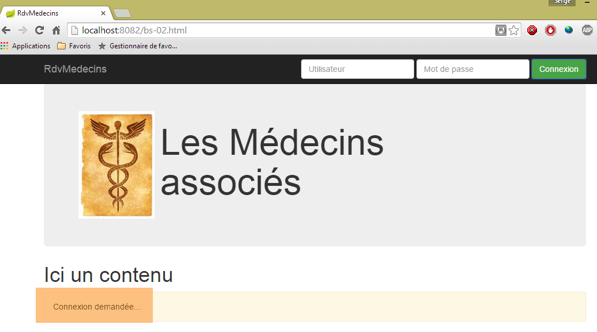
8.6.4.4. Ejemplo n.º 3: el botón de lista
La acción [/bs-03] muestra la siguiente vista [bs-03.xml]:
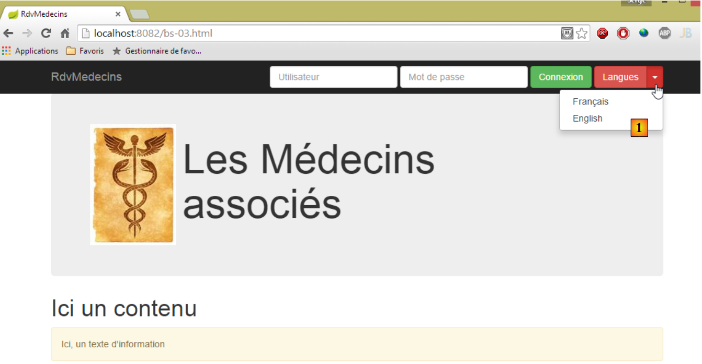 |
- La novedad es el botón de lista [1], también llamado «dropdown»;
El código de la vista [bs-03.xml] es el siguiente:
<!DOCTYPE HTML>
<html xmlns="http://www.w3.org/1999/xhtml" xmlns:th="http://www.thymeleaf.org" xmlns:layout="http://www.ultraq.net.nz/thymeleaf/layout">
<head>
<meta name="viewport" content="width=device-width" />
<title>RdvMedecins</title>
<!-- Bootstrap core CSS -->
<link rel="stylesheet" href="resources/css/bootstrap-3.1.1-min.css" />
<link rel="stylesheet" type="text/css" href="resources/css/bootstrapDemo.css" />
<!-- Núcleo de Bootstrap JavaScript ================================================== -->
<script src="resources/vendor/jquery-2.1.1.min.js"></script>
<script src="resources/vendor/bootstrap.js"></script>
<!-- script local -->
<script type="text/javascript" src="resources/js/bs-03.js"></script>
</head>
<body id="body">
<div class="container">
<!-- barra de navigation -->
<div th:include="navbar2"></div>
<!-- Jumbotron de Bootstrap -->
<div th:include="jumbotron"></div>
<!-- contenido -->
<div id="content">
<h1>Ici un contenu</h1>
</div>
<!-- información -->
<div class="alert alert-warning">
<span id="info">Ici, un texte d'information</span>
</div>
</div>
</body>
</html>
- línea 11: el botón de lista requiere el archivo JS de Bootstrap;
- línea 18: la nueva barra de navigation;
La vista [navbar2.xml] es la siguiente:
<!DOCTYPE HTML>
<section xmlns="http://www.w3.org/1999/xhtml" xmlns:th="http://www.thymeleaf.org">
<div class="navbar navbar-inverse navbar-fixed-top" role="navigation">
<div class="container">
<div class="navbar-header">
<button type="button" class="navbar-toggle" data-toggle="collapse" data-target=".navbar-collapse">
<span class="sr-only">Toggle navigation</span>
<span class="icon-bar"></span>
<span class="icon-bar"></span>
<span class="icon-bar"></span>
</button>
<a class="navbar-brand" href="#">RdvMedecins</a>
</div>
<div class="navbar-collapse collapse">
<img id="loading" src="resources/images/loading.gif" alt="waiting..." style="display: none" />
<!-- formulario de identificación -->
<div class="navbar-form navbar-right" role="form" id="formulaire" method="post">
<div class="form-group">
<input type="text" placeholder="Utilisateur" class="form-control" />
</div>
<div class="form-group">
<input type="password" placeholder="Mot de passe" class="form-control" />
</div>
<button type="button" class="btn btn-success" onclick="javascript:connecter()">Connexion</button>
<!-- idiomas -->
<div class="btn-group">
<button type="button" class="btn btn-danger">Langues</button>
<button type="button" class="btn btn-danger dropdown-toggle" data-toggle="dropdown">
<span class="caret"></span>
<span class="sr-only">Toggle Dropdown</span>
</button>
<ul class="dropdown-menu" role="menu">
<li>
<a href="javascript:setLang('fr')">Français</a>
</li>
<li>
<a href="javascript:setLang('en')">English</a>
</li>
</ul>
</div>
</div>
</div>
</div>
</div>
<!-- página de inicio -->
<script th:inline="javascript">
/*<![CDATA[*/
// inicialización de la página
initNavBar2();
/*]]>*/
</script>
</section>
- líneas 25-40: definen el botón de lista;
- línea 27: la clase [btn-danger] le da su color rojo;
- líneas 32-39: los elementos de la lista. Son enlaces asociados cada uno a una función JS;
- líneas 46-51: un script JS que se ejecuta tras la carga del documento;
El script JS [bs-03.js] es el siguiente:
function initNavBar2() {
// menú desplegable de idiomas
$('.dropdown-toggle').dropdown();
}
function connecter() {
showInfo("Connexion demandée...");
}
function setLang(lang) {
var msg;
switch (lang) {
case 'fr':
msg = "Vous avez choisi la langue française...";
break;
case 'en':
msg = "You have selected english language...";
break;
}
showInfo(msg);
}
function showInfo(message) {
$("#info").text(message);
}
- líneas 1-4: la función que inicializa [dropdown]. [$('.dropdown-toggle')] localiza el elemento que tiene la clase [dropdown-toggle]. Se trata del botón de lista (línea 28 de la vista). Se le aplica la función JS [dropdown()], que está definida en el archivo JS [bootstrap.js]. Solo tras esta operación el botón se comporta como un botón de lista;
- líneas 10-21: la función que se ejecuta al seleccionar un idioma;
He aquí un ejemplo:

8.6.4.5. Ejemplo n.º 4: un menú
La acción [/bs-04] muestra la siguiente vista [bs-04.xml]:
 |
Se ha añadido un menú [1].
La vista [bs-04.xml] es la siguiente:
<!DOCTYPE HTML>
<html xmlns="http://www.w3.org/1999/xhtml" xmlns:th="http://www.thymeleaf.org" xmlns:layout="http://www.ultraq.net.nz/thymeleaf/layout">
<head>
<meta name="viewport" content="width=device-width" />
<title>RdvMedecins</title>
<!-- Núcleo de Bootstrap CSS -->
<link rel="stylesheet" href="resources/css/bootstrap-3.1.1-min.css" />
<link rel="stylesheet" type="text/css" href="resources/css/bootstrapDemo.css" />
<!-- Núcleo de Bootstrap JavaScript ================================================== -->
<script src="resources/vendor/jquery-2.1.1.min.js"></script>
<script src="resources/vendor/bootstrap.js"></script>
<!-- script local -->
<script type="text/javascript" src="resources/js/bs-04.js"></script>
</head>
<body id="body">
<div class="container">
<!-- barra de navigation -->
<div th:include="navbar3"></div>
<!-- Jumbotron de Bootstrap -->
<div th:include="jumbotron"></div>
<!-- contenido -->
<div id="content">
<h1>Ici un contenu</h1>
</div>
<!-- información -->
<div class="alert alert-warning">
<span id="info">Ici, un texte d'information</span>
</div>
</div>
</body>
</html>
- línea 18: se inserta una nueva barra de navigation;
La vista [navbar3.xml] es la siguiente:
<!DOCTYPE HTML>
<section xmlns="http://www.w3.org/1999/xhtml" xmlns:th="http://www.thymeleaf.org">
<div class="navbar navbar-inverse navbar-fixed-top" role="navigation">
<div class="container">
<div class="navbar-header">
<button type="button" class="navbar-toggle" data-toggle="collapse" data-target=".navbar-collapse">
<span class="sr-only">Toggle navigation</span>
<span class="icon-bar"></span>
<span class="icon-bar"></span>
<span class="icon-bar"></span>
</button>
<a class="navbar-brand" href="#">RdvMedecins</a>
</div>
<div class="collapse navbar-collapse">
<img id="loading" src="resources/images/loading.gif" alt="waiting..." style="display: none" />
<ul class="nav navbar-nav">
<li class="active" id="lnkAfficherAgenda">
<a href="javascript:afficherAgenda()">Agenda </a>
</li>
<li class="active" id="lnkAccueil">
<a href="javascript:retourAccueil()">Retour Accueil </a>
</li>
<li class="active" id="lnkRetourAgenda">
<a href="javascript:retourAgenda()">Retour Agenda </a>
</li>
<li class="active" id="lnkValiderRv">
<a href="javascript:validerRv()">Valider </a>
</li>
</ul>
<!-- Botones de la derecha -->
<div class="navbar-form navbar-right" role="form">
<!-- cerrar sesión -->
<button type="button" class="btn btn-success" onclick="javascript:deconnecter()">Déconnexion</button>
<!-- idiomas -->
<div class="btn-group">
<button type="button" class="btn btn-danger">Langues</button>
<button type="button" class="btn btn-danger dropdown-toggle" data-toggle="dropdown">
<span class="caret"></span>
<span class="sr-only">Toggle Dropdown</span>
</button>
<ul class="dropdown-menu" role="menu">
<li>
<a href="javascript:setLang('fr')">Français</a>
</li>
<li>
<a href="javascript:setLang('en')">English</a>
</li>
</ul>
</div>
</div>
</div>
</div>
</div>
<!-- página de inicio -->
<script th:inline="javascript">
/*<![CDATA[*/
// inicializando la página
initNavBar3();
/*]]>*/
</script>
</section>
- líneas 16-29: crean el menú con cuatro opciones, cada una de ellas vinculada a un script JS;
- líneas 55-60: un script que se ejecuta al cargar la página;
El script JS [bs-04.js] es el siguiente:
...
function initNavBar3() {
// menú desplegable de idiomas
$('.dropdown-toggle').dropdown();
// la imagen animada
loading = $("#loading");
loading.hide();
}
function afficherAgenda() {
showInfo("option [Agenda] cliquée...");
}
function retourAccueil() {
showInfo("option [Retour accueil] cliquée...");
}
function retourAgenda() {
showInfo("option [Retour agenda] cliquée...");
}
function validerRv() {
showInfo("option [Valider] cliquée...");
}
function setMenu(show) {
// los enlaces del menú
var lnkAfficherAgenda = $("#lnkAfficherAgenda");
var lnkAccueil = $("#lnkAccueil");
var lnkValiderRv = $("#lnkValiderRv");
var lnkRetourAgenda = $("#lnkRetourAgenda");
// se añaden a un diccionario
var options = {
"lnkAccueil" : lnkAccueil,
"lnkAfficherAgenda" : lnkAfficherAgenda,
"lnkValiderRv" : lnkValiderRv,
"lnkRetourAgenda" : lnkRetourAgenda
}
// se ocultan todos los enlaces
for ( var key in options) {
options[key].hide();
}
// se muestran los que se solicitan
for (var i = 0; i < show.length; i++) {
var option = show[i];
options[option].show();
}
}
- líneas 2-18: la función de inicialización de la página;
- línea 4: para mostrar el botón con la lista de idiomas;
- líneas 6-7: la imagen animada está oculta;
- líneas 26-48: una función [setMenu] que permite indicar qué opciones deben estar visibles;
Vamos a la consola de desarrollo (Ctrl-Mayús-I) e introducimos el siguiente código [1]:
 |
A continuación, volvamos al navegador. El menú ha cambiado:
8.6.4.6. Ejemplo n.º 5: una lista desplegable
La acción [/bs-05] muestra la siguiente vista [bs-05.xml]:
 |
La novedad está en [1]. Aquí utilizamos un componente externo a Bootstrap, [bootstrap-select] [http://silviomoreto.github.io/bootstrap-select/].
El código de la vista [bs-05.xml] es el siguiente:
<!DOCTYPE HTML>
<html xmlns="http://www.w3.org/1999/xhtml" xmlns:th="http://www.thymeleaf.org" xmlns:layout="http://www.ultraq.net.nz/thymeleaf/layout">
<head>
<meta name="viewport" content="width=device-width" />
<title>RdvMedecins</title>
<!-- Bootstrap core CSS -->
<link rel="stylesheet" href="resources/css/bootstrap-3.1.1-min.css" />
<link rel="stylesheet" type="text/css" href="resources/css/bootstrap-select.min.css" />
<link rel="stylesheet" type="text/css" href="resources/css/bootstrapDemo.css" />
<!-- Bootstrap core JavaScript ================================================== -->
<script type="text/javascript" src="resources/vendor/jquery-2.1.1.min.js"></script>
<script type="text/javascript" src="resources/vendor/bootstrap.js"></script>
<script type="text/javascript" src="resources/vendor/bootstrap-select.js"></script>
<!-- script local -->
<script type="text/javascript" src="resources/js/bs-05.js"></script>
</head>
<body id="body">
<div class="container">
<!-- barra de navigation -->
<div th:include="navbar3"></div>
<!-- Jumbotron de Bootstrap -->
<div th:include="jumbotron"></div>
<!-- contenido -->
<div id="content" th:include="choixmedecin">
</div>
<!-- información -->
<div class="alert alert-warning">
<span id="info">Ici, un texte d'information</span>
</div>
</div>
</body>
</html>
- línea 8: el CSS necesario para la lista desplegable;
- línea 13: el archivo JS necesario para la lista desplegable;
- línea 24: la lista desplegable;
La vista [choixmedecin.xml] es la siguiente:
<!DOCTYPE html>
<section xmlns="http://www.w3.org/1999/xhtml" xmlns:th="http://www.thymeleaf.org">
<div class="alert alert-info">Veuillez choisir un médecin</div>
<div class="row">
<div class="col-md-3">
<h2>Médecin</h2>
<select id="idMedecin" class="combobox" data-style="btn-primary">
<option value="1">Mme Marie Pélissier</option>
<option value="2">Mr Jean Pardon</option>
<option value="3">Mlle Jeanne Jirou</option>
<option value="4">Mr Paul Macou</option>
</select>
</div>
</div>
<!-- script local -->
<script th:inline="javascript">
/*<![CDATA[*/
// se inicializa la página
initChoixMedecin();
/*]]>*/
</script>
</section>
- líneas 7-12: aquí tenemos una etiqueta [select] clásica, pero con una clase específica [combobox]. El atributo [data-style="btn-primary"] le da al componente su color azul;
- líneas 16-21: un script que se ejecuta al cargar la página;
El archivo JS [bs-05.js] es el siguiente:
...
function afficherAgenda() {
var idMedecin = $('#idMedecin option:selected').val();
showInfo("Vous avez sélectionné le médecin d'id=" + idMedecin);
}
function initChoixMedecin() {
// el selector de médicos
$('#idMedecin').selectpicker();
// el menú
setMenu([ "lnkAfficherAgenda" ]);
}
- líneas 7-12: la función que se ejecuta al cargar la página;
- línea 9: la instrucción que transforma el [select] de la página en un menú desplegable Bootstrap. [$('#idMedecin')] hace referencia al [select] (línea 7 de la vista [choixmedecin]) y la función JS [selectpicker] proviene del archivo JS [bootstrap-select.js];
- línea 11: solo se muestra una de las opciones del menú;
- líneas 2-5: la función JS se ejecuta al hacer clic en la opción option del menú [Agenda];
- línea 3: se recupera el valor de la opción seleccionada en la lista desplegable: primero se busca el componente y, dentro de este, la opción seleccionada. A continuación, la operación [..].val() recupera el valor del elemento encontrado, es decir, el atributo [value] del option seleccionado;
A continuación se muestra un ejemplo de selección de un médico:
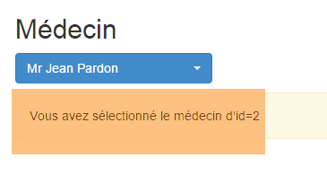 |
8.6.4.7. Ejemplo n.º 6: un calendario
La acción [/bs-06] muestra la vista [bs-06.xml] siguiente:
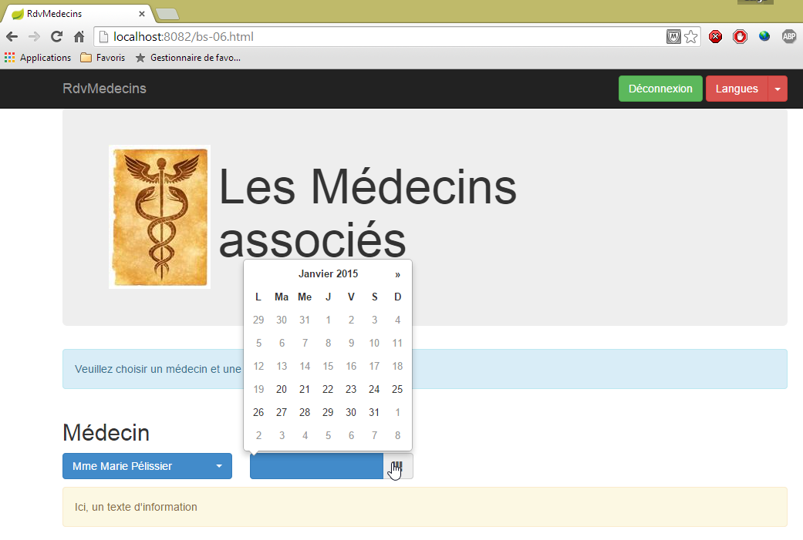
La selección de un médico o una fecha activa una función JS que muestra tanto el médico como la fecha seleccionados. A continuación se muestra un ejemplo:
 |
Gracias al botón «Lista de idiomas», se puede cambiar el calendario (y solo el calendario) al inglés:

Este es el ejemplo más complejo de la serie. El calendario es un componente [bootstrap-datepicker] [http://eternicode.github.io/bootstrap-datepicker].
La vista [bs-06.xml] es la siguiente:
<!DOCTYPE HTML>
<html xmlns="http://www.w3.org/1999/xhtml" xmlns:th="http://www.thymeleaf.org" xmlns:layout="http://www.ultraq.net.nz/thymeleaf/layout">
<head>
<meta name="viewport" content="width=device-width" />
<title>RdvMedecins</title>
<!-- Bootstrap core CSS -->
<link rel="stylesheet" href="resources/css/bootstrap-3.1.1-min.css" />
<link rel="stylesheet" type="text/css" href="resources/css/bootstrap-select.min.css" />
<link rel="stylesheet" type="text/css" href="resources/css/datepicker3.css" />
<link rel="stylesheet" type="text/css" href="resources/css/bootstrapDemo.css" />
<!-- Núcleo de Bootstrap JavaScript ================================================== -->
<script type="text/javascript" src="resources/vendor/jquery-2.1.1.min.js"></script>
<script type="text/javascript" src="resources/vendor/bootstrap.js"></script>
<script type="text/javascript" src="resources/vendor/bootstrap-select.js"></script>
<script type="text/javascript" src="resources/vendor/moment-with-locales.js"></script>
<script type="text/javascript" src="resources/vendor/bootstrap-datepicker.js"></script>
<script type="text/javascript" src="resources/vendor/bootstrap-datepicker.fr.js"></script>
<!-- script local -->
<script type="text/javascript" src="resources/js/bs-06.js"></script>
</head>
<body id="body">
<div class="container">
<!-- barra de navigation -->
<div th:include="navbar3"></div>
<!-- Jumbotron de Bootstrap -->
<div th:include="jumbotron"></div>
<!-- contenido -->
<div id="content" th:include="choixmedecinjour">
</div>
<!-- información -->
<div class="alert alert-warning">
<span id="info">Ici, un texte d'information</span>
</div>
</div>
</body>
</html>
- línea 8: el archivo CSS del componente [bootstrap-datepicker];
- línea 16: el archivo JS del componente [bootstrap-datepicker];
- línea 17: el archivo JS para gestionar un calendario francés. Por defecto, está en inglés;
- línea 15: el archivo JS de una biblioteca llamada [moment] que da acceso a numerosas funciones de cálculo del tiempo [http://momentjs.com/];
- línea 28: la vista del calendario;
La vista [choixmedecinjour.xml] es la siguiente:
<!DOCTYPE html>
<section xmlns="http://www.w3.org/1999/xhtml" xmlns:th="http://www.thymeleaf.org">
<div class="alert alert-info">Veuillez choisir un médecin et une date</div>
<div class="row">
<div class="col-md-3">
<h2>Médecin</h2>
<select id="idMedecin" class="combobox" data-style="btn-primary">
<option value="1">Mme Marie Pélissier</option>
<option value="2">Mr Jean Pardon</option>
<option value="3">Mlle Jeanne Jirou</option>
<option value="4">Mr Paul Macou</option>
</select>
</div>
<div class="col-md-3">
<h2>Date</h2>
<section id="calendar_container">
<div id="calendar" class="input-group date">
<input id="displayjour" type="text" class="form-control btn-primary" disabled="true">
<span class="input-group-addon">
<i class="glyphicon glyphicon-th"></i>
</span>
</input>
</div>
</section>
</div>
</div>
<!-- script local -->
<script th:inline="javascript">
/*<![CDATA[*/
// inicialización de la página
initChoixMedecinJour();
/*]]>*/
</script>
</section>
- líneas 17-23: el calendario;
- línea 18: la clase [btn-primary] le da su color azul;
- línea 18: el atributo [disabled="true"] impide introducir la fecha manualmente. Es obligatorio utilizar el calendario;
- línea 16: el calendario se ha colocado en una sección [id="calendar_container"]. Para cambiar el idioma del calendario, hay que eliminarlo y volver a generarlo. Por lo tanto, eliminaremos el contenido del componente [id="calendar_container"] y luego colocaremos el nuevo calendario con el nuevo idioma;
- líneas 28-33: el código de inicialización de la página;
El archivo JS [bs-06.js] es el siguiente:
...
var calendar_infos = {};
function initChoixMedecinJour() {
// calendario
var calendar_container = $("#calendar_container");
calendar_infos = {
"container" : calendar_container,
"html" : calendar_container.html(),
"today" : moment().format('YYYY-MM-DD'),
"langue" : "fr"
}
// creación del calendario
updateCalendar();
// el selector de médicos
$('#idMedecin').selectpicker();
$('#idMedecin').change(function(e) {
afficherAgenda();
})
// el menú
setMenu([]);
}
- línea 2: el calendario se gestiona mediante varias funciones JS. La variable [calendar_infos] recopilará información sobre el calendario. Es global para que puedan verla las diferentes funciones;
- línea 6: se identifica el contenedor del calendario;
- líneas 7-12: la información almacenada para el calendario;
- línea 8: una referencia a su contenedor;
- línea 9: el código HTML del calendario. Con estos dos datos, podemos eliminar el calendario y regenerarlo,
- línea 10: la fecha de hoy en formato [aaaa-mm-jj],
- línea 11: el idioma del calendario;
- línea 14: creación del calendario;
- línea 16: el cuadro combinado de médicos;
- líneas 17-19: cada vez que cambie el valor seleccionado en este combo, se ejecutará el método [afficherAgenda];
- línea 21: sin menú en la barra de navigation;
La función [updateCalendar] es la siguiente:
function updateCalendar(renew) {
if (renew) {
// regeneración del calendario actual
calendar_infos.container.html(calendar_infos.html);
}
// inicialización del calendario
var calendar = $("#calendar");
var settings = {
format : "yyyy-mm-dd",
startDate : calendar_infos.today,
language : calendar_infos.langue,
};
calendar.datepicker(settings);
// selección de la fecha actual
if (calendar_infos.date) {
calendar.datepicker('setDate', calendar_infos.date)
}
// eventos
calendar.datepicker().on('hide', function(e) {
// visualización del día seleccionado
displayJour();
});
calendar.datepicker().on('changeDate', function(e) {
// se anota la nueva fecha
calendar_infos.date = moment(calendar.datepicker('getDate')).format("YYYY-MM-DD");
// visualización de información agenda
afficherAgenda();
// visualización del día seleccionado
displayJour();
});
// visualización del día seleccionado
displayJour();
}
- línea 1: la función [updateCalendar] admite un parámetro que puede estar presente o no. Si está presente, el calendario se vuelve a generar (línea 4) a partir de la información contenida en [calendar_infos];
- línea 7: se hace referencia al calendario;
- líneas 8-12: sus parámetros de inicialización;
- línea 9: el formato de las fechas gestionadas [aaaa-mm-jj],
- línea 10: la primera fecha que se puede seleccionar en el calendario. En este caso, la fecha de hoy. Las fechas anteriores no se podrán seleccionar;
- línea 11: el idioma del calendario. Habrá dos: ['en'] y ['fr'];
- línea 13: el calendario está configurado;
- líneas 15-17: si se ha inicializado la fecha de [calendar_infos], se establece esta fecha como fecha actual del calendario;
- líneas 19-22: cada vez que se cierre el calendario, se mostrará la fecha seleccionada;
- líneas 23-30: cada vez que haya un cambio de fecha en el calendario:
- línea 25: se anota la fecha seleccionada en [calendar_infos],
- línea 27: se muestra información sobre agenda,
- línea 29: se muestra el día seleccionado;
- línea 32: visualización del día seleccionado, si lo hay;
El método [displayJour] que muestra el día seleccionado es el siguiente:
// muestra el día seleccionado
function displayJour() {
if (calendar_infos.date) {
var displayjour = $("#displayjour");
moment.locale(calendar_infos.langue);
jour = moment(calendar_infos.date).format('LL');
displayjour.val(jour);
}
}
- línea 3: si ya se ha seleccionado una fecha (al principio el calendario no tiene ninguna fecha seleccionada);
- línea 4: se localiza el componente donde se va a escribir la fecha;
- línea 5: esta fecha se puede escribir en inglés o francés. Se establece el idioma de la biblioteca [moment];
- línea 6: se muestra la fecha seleccionada en el idioma elegido y en el formato long;
- línea 7: se muestra esta fecha;
He aquí dos ejemplos:
 |  |
Al cambiar de médico o de fecha, se ejecuta el método [afficherAgenda]:
function afficherAgenda() {
// se muestra el médico y la fecha
var idMedecin = $('#idMedecin option:selected').val();
if (calendar_infos.date) {
showInfo("Vous avez sélectionné le médecin d'id=" + idMedecin + " et le jour " + calendar_infos.date);
}
}
8.6.4.8. Ejemplo n.º 7: una tabla HTML «responsive»
Nota: «responsive» es un término inglés que indica que un componente es capaz de adaptarse al tamaño de la pantalla en la que se visualiza. Vamos a mostrar un ejemplo.
La acción [/bs-07] muestra la siguiente vista [bs-07.xml] (pantalla completa):
 |
La novedad es la tabla HTML [1]. Esta tabla es gestionada por la biblioteca JS [footable]: [https://github.com/fooplugins/FooTable].
Si se reduce el tamaño de la ventana del navegador, se obtiene lo siguiente:
 |
- la tabla HTML se ha adaptado al tamaño de la pantalla;
- en [1], para ver el enlace [Réserver], hay que hacer clic en el símbolo [+];
- en [2], lo que se ve al hacer clic en el signo [+];
La vista [bs-07.xml] es la siguiente:
<!DOCTYPE HTML>
<html xmlns="http://www.w3.org/1999/xhtml" xmlns:th="http://www.thymeleaf.org" xmlns:layout="http://www.ultraq.net.nz/thymeleaf/layout">
<head>
<meta name="viewport" content="width=device-width" />
<title>RdvMedecins</title>
<!-- Bootstrap core CSS -->
<link rel="stylesheet" href="resources/css/bootstrap-3.1.1-min.css" />
<link rel="stylesheet" type="text/css" href="resources/css/bootstrap-select.min.css" />
<link rel="stylesheet" type="text/css" href="resources/css/datepicker3.css" />
<link rel="stylesheet" type="text/css" href="resources/css/footable.core.min.css" />
<link rel="stylesheet" type="text/css" href="resources/css/bootstrapDemo.css" />
<!-- Núcleo de Bootstrap JavaScript ================================================== -->
<script type="text/javascript" src="resources/vendor/jquery-2.1.1.min.js"></script>
<script type="text/javascript" src="resources/vendor/bootstrap.js"></script>
<script type="text/javascript" src="resources/vendor/bootstrap-select.js"></script>
<script type="text/javascript" src="resources/vendor/moment-with-locales.js"></script>
<script type="text/javascript" src="resources/vendor/bootstrap-datepicker.js"></script>
<script type="text/javascript" src="resources/vendor/bootstrap-datepicker.fr.js"></script>
<script type="text/javascript" src="resources/vendor/footable.js"></script>
<!-- script local -->
<script type="text/javascript" src="resources/js/bs-07.js"></script>
</head>
<body id="body">
<div class="container">
<!-- barra de navigation -->
<div th:include="navbar3" />
<!-- Jumbotron de Bootstrap -->
<div th:include="jumbotron" />
<!-- contenido -->
<div id="content" th:include="choixmedecinjour" />
<div id="agenda" th:include="agenda" />
<!-- información -->
<div class="alert alert-success">
<span id="info">Ici, un texte d'information</span>
</div>
</div>
</body>
</html>
- línea 10: el CSS de la biblioteca [footable];
- línea 19: el JS de la biblioteca [footable];
- línea 31: la tabla HTML de un agenda;
La vista [agenda.xml] es la siguiente:
<!DOCTYPE HTML>
<html xmlns:th="http://www.thymeleaf.org">
<body>
<div class="row alert alert-danger">
<div class="col-md-6">
<table id="creneaux" class="table">
<thead>
<tr>
<th data-toggle="true">
<span>Créneau horaire</span>
</th>
<th>
<span>Client</span>
</th>
<th data-hide="phone">
<span>Action</span>
</th>
</tr>
</thead>
<tbody>
<tr>
<td>
<span class='status-metro status-active'>
9h00-9h20
</span>
</td>
<td>
<span></span>
</td>
<td>
<a href="javascript:reserver(14)" class="status-metro status-active">
Réserver
</a>
</td>
</tr>
<tr>
<td>
<span class='status-metro status-suspended'>
9h20-9h40
</span>
</td>
<td>
<span>Mme Paule MARTIN</span>
</td>
<td>
<a href="javascript:supprimer(17)" class="status-metro status-suspended">
Supprimer
</a>
</td>
</tr>
</tbody>
</table>
</div>
</div>
<!-- página de inicio -->
<script th:inline="javascript">
/*<![CDATA[*/
// inicializando la página
initAgenda();
/*]]>*/
</script>
</body>
</html>
- línea 4: coloca la tabla en una línea [row] y un recuadro de color [alert alert-danger];
- línea 5: la tabla ocupará 6 columnas [col-md-6];
- línea 6: la tabla HTML está formateada con Bootstrap [class='table'];
- línea 9: el atributo [data-toggle] indica la columna que contiene el símbolo [+/-] que despliega/oculta la línea;
- línea 15: el atributo [data-hide='phone'] indica que la columna debe ocultarse si la pantalla tiene el tamaño de una pantalla de teléfono. También se puede utilizar el valor «tablet»;
- línea 31: se asocia una función JS al enlace [Réserver];
- línea 46: se asocia una función JS al enlace [Supprimer];
- líneas 56-61: inicialización de la página;
Varias clases CSS utilizadas anteriormente proceden del archivo CSS [bootstrapDemo.css]:
@CHARSET "UTF-8";
#intervalos th {
text-align: center;
}
#intervalos td {
text-align: center;
font-weight: bold;
}
.status-metro {
display: inline-block;
padding: 2px 5px;
color:#fff;
}
.status-metro.status-active {
background: #43c83c;
}
.status-metro.status-suspended {
background: #fa3031;
}
Los estilos [status-*] proceden de un ejemplo de uso de la tabla [footable] que se encuentra en el sitio web de la biblioteca.
En el archivo JS [bs-07.js], la página se inicializa de la siguiente manera:
function initAgenda() {
// la tabla de franjas horarias
$("#creneaux").footable();
}
Eso es todo. [$("#creneaux")] hace referencia a la tabla HTML, a la que queremos hacer «responsive». Por otra parte, encontramos las funciones JS relacionadas con los dos enlaces [Réserver] y [Supprimer]:
function reserver(idCreneau) {
showInfo("Réservation du créneau n° " + idCreneau);
}
function supprimer(idRv) {
showInfo("Suppression du rv n° " + idRv);
}
8.6.4.9. Ejemplo n.º 8: un cuadro modal
La acción [/bs-08] muestra la vista [bs-08.xml] siguiente:

Mientras que anteriormente, al hacer clic en el enlace [Réserver] se mostraba información en el cuadro de información, aquí vamos a hacer aparecer un cuadro modal para seleccionar un cliente para el RV:

El componente utilizado es el componente [bootstrap-modal] [https://github.com/jschr/bootstrap-modal/].
La vista [bs-08.xml] es la siguiente:
<!DOCTYPE HTML>
<html xmlns="http://www.w3.org/1999/xhtml" xmlns:th="http://www.thymeleaf.org" xmlns:layout="http://www.ultraq.net.nz/thymeleaf/layout">
<head>
<meta name="viewport" content="width=device-width" />
<title>RdvMedecins</title>
<!-- Bootstrap core CSS -->
<link rel="stylesheet" href="resources/css/bootstrap-3.1.1-min.css" />
<link rel="stylesheet" type="text/css" href="resources/css/bootstrap-select.min.css" />
<link rel="stylesheet" type="text/css" href="resources/css/datepicker3.css" />
<link rel="stylesheet" type="text/css" href="resources/css/footable.core.min.css" />
<link rel="stylesheet" type="text/css" href="resources/css/bootstrapDemo.css" />
<!-- Bootstrap core JavaScript ================================================== -->
<script type="text/javascript" src="resources/vendor/jquery-2.1.1.min.js"></script>
<script type="text/javascript" src="resources/vendor/bootstrap.js"></script>
<script type="text/javascript" src="resources/vendor/bootstrap-select.js"></script>
<script type="text/javascript" src="resources/vendor/moment-with-locales.js"></script>
<script type="text/javascript" src="resources/vendor/bootstrap-datepicker.js"></script>
<script type="text/javascript" src="resources/vendor/bootstrap-datepicker.fr.js"></script>
<script type="text/javascript" src="resources/vendor/bootstrap-modal.js"></script>
<script type="text/javascript" src="resources/vendor/footable.js"></script>
<!-- script local -->
<script type="text/javascript" src="resources/js/bs-08.js"></script>
</head>
<body id="body">
<div class="container">
<!-- barra de navigation -->
<div th:include="navbar3" />
<!-- Jumbotron de Bootstrap -->
<div th:include="jumbotron" />
<!-- contenido -->
<div id="content" th:include="choixmedecinjour" />
<div id="agenda" th:include="agenda-modal" />
<div th:include="resa" />
<!-- info -->
<div class="alert alert-success">
<span id="info">Ici, un texte d'information</span>
</div>
</div>
</body>
</html>
- línea 19: el archivo JS necesario para los cuadros modales;
- línea 32: la vista [agenda-modal] es idéntica a la vista [agenda] salvo por un detalle: la función JS que gestiona el enlace [Réserver]:
<a href="javascript:showDialogResa(14)" class="status-metro status-active">Réserver</a>
La función [showDialogResa] se encarga de mostrar el cuadro modal de selección de un cliente;
- línea 33: la vista [resa.xml] es el cuadro modal de selección de un cliente:
<!DOCTYPE HTML>
<section xmlns="http://www.w3.org/1999/xhtml" xmlns:th="http://www.thymeleaf.org">
<div id="resa" class="modal fade">
<div class="modal-dialog">
<div class="modal-content">
<div class="modal-header">
<button type="button" class="close" data-dismiss="modal" aria-label="Close">
<span aria-hidden="true">
</span>
</button>
<!-- <h4 class="modal-title">Modal title</h4> -->
</div>
<div class="modal-body">
<div class="alert alert-info">
<h3>
<span>Prise de rendez-vous</span>
</h3>
</div>
<div class="row">
<div class="col-md-3">
<h2>Clients</h2>
<select id="idClient" class="combobox" data-style="btn-primary">
<option value="1">Mme Marguerite Planton</option>
<option value="2">Mr Maxime Franck</option>
<option value="3">Mlle Elisabeth Oron</option>
<option value="4">Mr Gaëtan Calot</option>
</select>
</div>
</div>
</div>
<div class="modal-footer">
<button type="button" class="btn btn-warning" onclick="javascript:cancelDialogResa()">Annuler</button>
<button type="button" class="btn btn-primary" onclick="javascript:validateResa()">Valider</button>
</div>
</div><!-- /.modal-content -->
</div><!-- /.modal-dialog -->
</div><!-- /.modal -->
<!-- página de inicio -->
<script th:inline="javascript">
/*<![CDATA[*/
// se inicializa la página
initResa();
/*]]>*/
</script>
</section>
- líneas 3-37: el cuadro modal;
- líneas 13-30: el contenido de este cuadro (lo que se mostrará);
- líneas 31-34: los botones del cuadro de diálogo;
- línea 32: un botón [Annuler] gestionado por la función JS [cancelDialogResa];
- línea 33: un botón [Valider] gestionado por la función JS [validateResa];
- líneas 39-44: el script de inicialización del cuadro modal;
Esto da como resultado la siguiente vista:
 |
Cabe señalar que el cuadro modal no se muestra de forma predeterminada. Por eso no se ve al iniciar la aplicación, aunque su código HTML esté presente en el documento.
El archivo JS [bs-08.js] es el siguiente:
var idCreneau;
var idClient;
var resa;
function showDialogResa(idCreneau) {
// se guarda el id de la franja horaria
this.idCreneau = idCreneau;
// se muestra el cuadro de diálogo de reserva
var resa = $("#resa");
resa.modal('show');
// registro
showInfo("Réservation du créneau n° " + idCreneau);
}
function cancelDialogResa() {
// se oculta el cuadro de diálogo
resa.modal('hide');
}
// validación de la reserva
function validateResa() {
// se recupera la información
var idClient = $('#idClient option:selected').val();
// se oculta el cuadro de diálogo
resa.modal('hide');
// información
showInfo("Réservation du créneau n° " + idCreneau + " pour le client n° " + idClient)
}
function initResa() {
// el selector de clients
$('#idClient').selectpicker();
// cuadro modal
resa = $("#resa");
resa.modal({});
}
- líneas 30-36: la función de inicialización del cuadro modal;
- línea 32: el cuadro modal contiene una lista desplegable que hay que inicializar;
- líneas 34-35: inicialización del propio cuadro modal;
- líneas 5-13: la función JS asociada al enlace [Réserver];
- línea 7: se almacena el parámetro de la función en la variable global de la línea 1;
- líneas 9-10: se hace visible el cuadro modal;
- línea 12: se registra una información en el cuadro de información;
- líneas 15-18: gestión del botón [Annuler]. Nos limitamos a ocultar el cuadro modal (línea 17);
- líneas 21-31: la función JS asociada al botón [Valider];
- línea 23: se recupera el atributo [value] del cliente seleccionado;
- línea 25: se oculta el cuadro de diálogo;
- línea 27: se registran los dos datos: n.º de la franja horaria reservada y para qué cliente;
8.6.5. Paso 2: escritura de las vistas
A continuación, describiremos las vistas proporcionadas por el servidor [Web1], así como sus plantillas.
 |
8.6.5.1. La vista [navbar-start]
Muestra la barra de navigation de la página de inicio:

El código de [navbar-start.xml] es el siguiente:
<!DOCTYPE HTML>
<section xmlns:th="http://www.thymeleaf.org">
<div class="navbar navbar-inverse navbar-fixed-top" role="navigation">
<div class="container">
<div class="navbar-header">
<button type="button" class="navbar-toggle" data-toggle="collapse" data-target=".navbar-collapse">
<span class="sr-only">Toggle navigation</span>
<span class="icon-bar"></span>
<span class="icon-bar"></span>
<span class="icon-bar"></span>
</button>
<a class="navbar-brand" href="#">RdvMedecins</a>
</div>
<div class="navbar-collapse collapse">
<img id="loading" src="resources/images/loading.gif" alt="waiting..." style="display: none" />
<!-- formulario de identificación -->
<div class="navbar-form navbar-right" role="form" id="formulaire">
<div class="form-group">
<input type="text" th:placeholder="#{service.url}" class="form-control" id="urlService" />
</div>
<div class="form-group">
<input type="text" th:placeholder="#{username}" class="form-control" id="login" />
</div>
<div class="form-group">
<input type="password" th:placeholder="#{password}" class="form-control" id="passwd" />
</div>
<button type="button" class="btn btn-success" th:text="#{login}" onclick="javascript:connecter()">Sign in</button>
<!-- idiomas -->
<div class="btn-group">
<button type="button" class="btn btn-danger" th:text="#{langues}">Action</button>
<button type="button" class="btn btn-danger dropdown-toggle" data-toggle="dropdown">
<span class="caret"></span>
<span class="sr-only">Toggle Dropdown</span>
</button>
<ul class="dropdown-menu" role="menu">
<li>
<a href="javascript:setLang('fr')" th:text="#{langues.fr}" />
</li>
<li>
<a href="javascript:setLang('en')" th:text="#{langues.en}" />
</li>
</ul>
</div>
</div>
</div>
</div>
</div>
<!-- iniciar página -->
<script th:inline="javascript">
/*<![CDATA[*/
// se inicializa la página
initNavBarStart();
/*]]>*/
</script>
</section>
Esta vista no tiene plantilla. Tiene los siguientes gestores de eventos:
evt | controlador |
clic en el botón de conexión | |
clic en el enlace [Français] | |
Haga clic en el enlace [English] |
8.6.5.2. La vista [jumbotron]
Esta es la vista que se muestra debajo de la barra de navigation [navbar-start] en la página de inicio:

Su código [jumbotron.xml] es el siguiente:
<!DOCTYPE html>
<section xmlns="http://www.w3.org/1999/xhtml" xmlns:th="http://www.thymeleaf.org">
<!-- Jumbotron de Bootstrap -->
<div class="jumbotron">
<div class="row">
<div class="col-md-2">
<img src="resources/images/caduceus.jpg" alt="RvMedecins" />
</div>
<div class="col-md-10">
<h1 th:utext="#{application.header}" />
</div>
</div>
</div>
</section>
La vista [jumbotron] no tiene ni modelo ni eventos.
8.6.5.3. La vista [login]
Es la vista que se muestra debajo del jumbotron en la página de inicio:

Su código [login.xml] es el siguiente:
<!DOCTYPE html>
<section xmlns="http://www.w3.org/1999/xhtml" xmlns:th="http://www.thymeleaf.org">
<div class="alert alert-info" th:text="#{identification}">Identification
</div>
</section>
La vista no tiene ni modelo ni eventos.
8.6.5.4. La vista [navbar-run]
Esta es la barra de navigation que aparece cuando la conexión se ha establecido correctamente:

Su código [navbar-run.xml] es el siguiente:
<!DOCTYPE HTML>
<section xmlns:th="http://www.thymeleaf.org">
<div class="navbar navbar-inverse navbar-fixed-top" role="navigation">
<div class="container">
<div class="navbar-header">
<button type="button" class="navbar-toggle" data-toggle="collapse" data-target=".navbar-collapse">
<span class="sr-only">Toggle navigation</span>
<span class="icon-bar"></span>
<span class="icon-bar"></span>
<span class="icon-bar"></span>
</button>
<a class="navbar-brand" href="#">RdvMedecins</a>
</div>
<div class="collapse navbar-collapse">
<img id="loading" src="resources/images/loading.gif" alt="waiting..." style="display: none" />
<!-- botones de la derecha -->
<form class="navbar-form navbar-right" role="form">
<!-- cerrar sesión -->
<button type="button" class="btn btn-success" th:text="#{options.deconnecter}" onclick="javascript:deconnecter()">Déconnexion</button>
<!-- idiomas -->
<div class="btn-group">
<button type="button" class="btn btn-danger" th:text="#{langues}">Langue</button>
<button type="button" class="btn btn-danger dropdown-toggle" data-toggle="dropdown">
<span class="caret"></span>
<span class="sr-only">Toggle Dropdown</span>
</button>
<ul class="dropdown-menu" role="menu">
<li>
<a href="javascript:setLang('fr')" th:text="#{langues.fr}" />
</li>
<li>
<a href="javascript:setLang('en')" th:text="#{langues.en}" />
</li>
</ul>
</div>
</form>
</div>
</div>
</div>
<!-- página de inicio -->
<script th:inline="javascript">
/*<![CDATA[*/
// inicializando la página
initNavBarRun();
/*]]>*/
</script>
</section>
Esta vista no tiene plantilla. Tiene los siguientes controladores de eventos:
evt | controlador |
clic en el botón de desconexión | |
clic en el enlace [Français] | |
Haga clic en el enlace [English] |
8.6.5.5. La vista [accueil]
Esta es la vista que aparece justo debajo de la barra de navigation [navbar-run]:

Su código [accueil.html] es el siguiente:
<!DOCTYPE html>
<html xmlns="http://www.w3.org/1999/xhtml" xmlns:th="http://www.thymeleaf.org">
<div class="alert alert-info" th:text="#{choixmedecinjour.title}">Veuillez choisir un médecin et une date</div>
<div class="row">
<div class="col-md-3">
<h2 th:text="#{rv.medecin}">Médecin</h2>
<select name="idMedecin" id="idMedecin" class="combobox" data-style="btn-primary">
<option th:each="medecinItem : ${rdvmedecins.medecinItems}" th:text="${medecinItem.texte}" th:value="${medecinItem.id}"/>
</select>
</div>
<div class="col-md-3">
<h2 th:text="#{rv.jour}">Date</h2>
<section id="calendar_container">
<div id="calendar" class="input-group date">
<input id="displayjour" type="text" class="form-control btn-primary" disabled="true">
<span class="input-group-addon">
<i class="glyphicon glyphicon-th"></i>
</span>
</input>
</div>
</section>
</div>
</div>
<!-- agenda -->
<div id="agenda"></div>
<!-- script local -->
<script th:inline="javascript">
/*<![CDATA[*/
// se inicializa la página
initChoixMedecinJour();
/*]]>*/
</script>
</html>
Su plantilla es la siguiente:
- [rdvmedecins.medecinItems] (línea 8): la lista de médicos;
En su forma actual, la vista no parece tener ningún gestor de eventos. En realidad, estos se definen en la función [initChoixMedecinJour]. Esta función se presentó en el apartado 8.6.4.7, página 467 y, más concretamente, en la página 470. En ella se encuentran los siguientes gestores de eventos:
evt | gestor |
selección de un médico | |
selección de una fecha |
8.6.5.6. La vista [agenda]
La vista [agenda] muestra un día del agenda de un médico:

Su código [agenda.xml] es el siguiente:
<!DOCTYPE HTML>
<html xmlns:th="http://www.thymeleaf.org">
<body>
<h3 class="alert alert-info" th:text="${agenda.titre}">Agenda de Mme Pélissier le 13/10/2014</h3>
<h4 class="alert alert-danger" th:if="${agenda.creneaux.length}==0" th:text="#{agenda.medecinsanscreneaux}">Ce médecin n'a pas encore de créneaux
de consultation</h4>
<th:block th:if="${agenda.creneaux.length}!=0">
<div class="row tab-content alert alert-warning">
<div class="tab-pane active col-md-6">
<table id="creneaux" class="table">
<thead>
<tr>
<th data-toggle="true">
<span th:text="#{agenda.creneauhoraire}">Créneau horaire</span>
</th>
<th>
<span th:text="#{agenda.client}">Client</span>
</th>
<th data-hide="phone">
<span th:text="#{agenda.action}">Action</span>
</th>
</tr>
</thead>
<tbody>
<tr th:each="creneau,iter : ${agenda.creneaux}">
<td>
<span th:if="${creneau.action}==1" class="status-metro status-active" th:text="${creneau.creneauHoraire}">Créneau horaire</span>
<span th:if="${creneau.action}==2" class="status-metro status-suspended" th:text="${creneau.creneauHoraire}">Créneau horaire</span>
</td>
<td>
<span th:text="${creneau.client}">Client</span>
</td>
<td>
<a th:if="${creneau.action}==1" th:href="@{'javascript:reserverCreneau('+${creneau.id}+')'}" th:text="${creneau.commande}"
class="status-metro status-active">Réserver
</a>
<a th:if="${creneau.action}==2" th:href="@{'javascript:supprimerRv('+${creneau.idRv}+')'}" th:text="${creneau.commande}"
class="status-metro status-suspended">Supprimer
</a>
</td>
</tr>
</tbody>
</table>
</div>
</div>
<!-- reserva -->
<section th:include="resa" />
</th:block>
<!-- inicialización de la página -->
<script th:inline="javascript">
/*<![CDATA[*/
// se inicializa la página
initAgenda();
/*]]>*/
</script>
</body>
</html>
La plantilla de esta vista solo tiene un elemento:
- [agenda] (línea 4): una plantilla un poco compleja creada especialmente para mostrar el agenda;
Tiene los siguientes controladores de eventos:
evt | controlador |
clic en el botón [Supprimer] | |
Haga clic en el enlace [Réserver] |
La vista [resa] de la línea 47 es la vista que se muestra cuando el usuario hace clic en un enlace [Réserver]:

Su código [resa.xml] es el siguiente:
<!DOCTYPE HTML>
<html xmlns:th="http://www.thymeleaf.org">
<body>
<div id="resa" class="modal fade">
<div class="modal-dialog">
<div class="modal-content">
<div class="modal-header">
<button type="button" class="close" data-dismiss="modal" aria-label="Close">
<span aria-hidden="true">
</span>
</button>
<!-- <h4 class="modal-title">Modal title</h4> -->
</div>
<div class="modal-body">
<div class="alert alert-info">
<h3>
<span th:text="#{resa.titre}">Prise de rendez-vous</span>
</h3>
</div>
<div class="row">
<div class="col-md-3">
<h2 th:text="#{resa.client}">Client</h2>
<select name="idClient" id="idClient" class="combobox" data-style="btn-primary">
<option th:each="clientItem : ${clientItems}" th:text="${clientItem.texte}" th:value="${clientItem.id}" />
</select>
</div>
</div>
</div>
<div class="modal-footer">
<button type="button" class="btn btn-warning" onclick="javascript:cancelDialogResa()" th:text="#{resa.annuler}">Annuler</button>
<button type="button" class="btn btn-primary" onclick="javascript:validerRv()" th:text="#{resa.valider}">Valider</button>
</div>
</div><!-- /.modal-content -->
</div><!-- /.modal-dialog -->
</div><!-- /.modal -->
<!-- página de inicio -->
<script th:inline="javascript">
/*<![CDATA[*/
// se inicializa la página
initResa();
/*]]>*/
</script>
</body>
</html>
Su plantilla solo tiene un elemento:
- [clientItems] (línea 24): la lista de clients;
Tiene los siguientes gestores de eventos:
evt | gestor |
clic en el botón [Annuler] | |
Haga clic en el botón [Valider] |
8.6.5.7. La vista [erreurs]
Esta es la vista que se muestra si la acción solicitada por el usuario no se ha podido completar:

El código [erreurs.xml] es el siguiente:
<!DOCTYPE HTML>
<section xmlns:th="http://www.thymeleaf.org">
<div class="alert alert-danger">
<h4>
<span th:text="#{erreurs.titre}">Les erreurs suivantes se sont produites :</span>
</h4>
<ul>
<li th:each="message : ${erreurs}" th:text="${message}" />
</ul>
</div>
</section>
Su modelo solo tiene un elemento:
- [erreurs] (línea 8): la lista de errores que se deben mostrar;
La vista no tiene ningún gestor de eventos.
8.6.5.8. Resumen
La siguiente tabla recoge las vistas y sus modelos:
vista | modelo | gestores de eventos |
navbar-start | ||
jumbotron | ||
iniciar sesión | ||
navbar-run | ||
Inicio | ||
agenda | ||
resa | ||
errores |
8.6.6. Paso 3: escritura de las acciones
Volvamos a la arquitectura del servicio web [Web1]:
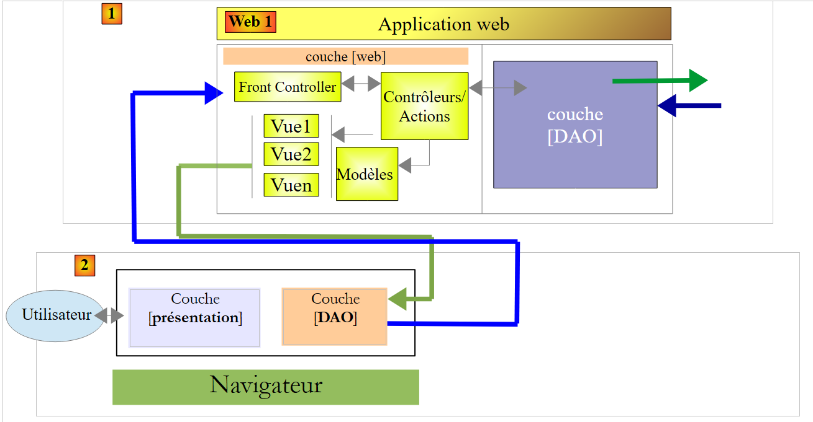 |
Ahora veremos qué URL exponen los [Web1] y su implementación:
8.6.6.1. Las URL expuestas por el servicio [Web1]
Son las siguientes:
- una URL para cada una de las vistas anteriores o una composición de estas;
- una URL para añadir una RV;
- una URL para eliminar una RV;
Todas ellas devuelven una respuesta del tipo [Reponse] como la siguiente:
public class Reponse {
// ----------------- propiedades
// estado de la operación
private int status;
// la barra de navigation
private String navbar;
// el jumbotron
private String jumbotron;
// el cuerpo de la página
private String content;
// el agenda
private String agenda;
...
}
- línea 5: un estado de la respuesta: 1 (OK), 2 (error);
- línea 7: el flujo HTML de las vistas [navbar-start] o [navbar-run], según el caso;
- línea 9: el flujo HTML de la vista [jumbotron];
- línea 13: el flujo HTML de la vista [agenda];
- línea 9: el flujo HTML de las vistas [accueil], [erreurs], [login], según el caso;
Las URL expuestas son las siguientes
coloca la vista [navbar-start] en [Reponse.navbar] | |
coloca la vista [navbar-run] en [Reponse.navbar] | |
coloca la vista [accueil] en [Reponse.content] | |
coloca la vista [jumbotron] en [Reponse.jumbotron] | |
coloca la vista [agenda] en [Reponse.agenda] | |
coloca la vista [login] en [Reponse.content] | |
| |
coloca la vista [navbar-run] en [Reponse.navbar], la vista [jumbotron] en [Reponse.jumbotron], la vista [accueil] en [Reponse.content], la vista [agenda] en [Reponse.agenda] | |
añade la cita seleccionada y coloca el nuevo agenda en [Reponse.agenda] | |
elimina la cita seleccionada y coloca el nuevo agenda en [Reponse.agenda] |
8.6.6.2. El singleton [ApplicationModel]
 |
La clase [ApplicationModel] se instancia en un único ejemplar y se inyecta en el controlador de la aplicación. Su código es el siguiente:
package rdvmedecins.springthymeleaf.server.models;
import java.util.ArrayList;
...
@Component
public class ApplicationModel implements IDao {
....
}
- línea 6: [ApplicationModel] es un componente Spring;
- línea 7: que implementa la interfaz de la capa [DAO]. Hacemos esto para que las acciones no tengan que conocer la capa [DAO], sino solo el singleton [ApplicationModel]. La arquitectura de [Web1] queda entonces así:
 |
Volvamos al código de la clase [ApplicationModel]:
package rdvmedecins.springthymeleaf.server.models;
import java.util.ArrayList;
...
@Component
public class ApplicationModel implements IDao {
// la capa [DAO]
@Autowired
private IDao dao;
// la configuración
@Autowired
private AppConfig appConfig;
// datos procedentes de la capa [DAO]
private List<ClientItem> clientItems;
private List<MedecinItem> medecinItems;
// datos de configuración
private String userInit;
private String mdpUserInit;
private boolean corsAllowed;
// excepción
private RdvMedecinsException rdvMedecinsException;
// fabricante
public ApplicationModel() {
}
@PostConstruct
public void init() {
// config
userInit = appConfig.getUSER_INIT();
mdpUserInit = appConfig.getMDP_USER_INIT();
dao.setTimeout(appConfig.getTIMEOUT());
dao.setUrlServiceWebJson(appConfig.getWEBJSON_ROOT());
corsAllowed = appConfig.isCORS_ALLOWED();
// se almacenan en caché las listas desplegables de médicos y de clients
List<Medecin> medecins = null;
List<Client> clients = null;
try {
medecins = dao.getAllMedecins(new User(userInit, mdpUserInit));
clients = dao.getAllClients(new User(userInit, mdpUserInit));
} catch (RdvMedecinsException ex) {
rdvMedecinsException = ex;
}
if (rdvMedecinsException == null) {
// se crean los elementos de las listas desplegables
medecinItems = new ArrayList<MedecinItem>();
for (Medecin médecin : medecins) {
medecinItems.add(new MedecinItem(médecin));
}
clientItems = new ArrayList<ClientItem>();
for (Client client : clients) {
clientItems.add(new ClientItem(client));
}
}
}
// getters y setters
...
// Implementación de la interfaz [IDao]
@Override
public void setUrlServiceWebJson(String url) {
dao.setUrlServiceWebJson(url);
}
@Override
public void setTimeout(int timeout) {
dao.setTimeout(timeout);
}
@Override
public Rv ajouterRv(User user, String jour, long idCreneau, long idClient) {
return dao.ajouterRv(user, jour, idCreneau, idClient);
}
...
}
- línea 11: inyección de la referencia de la implementación de la capa [DAO]. A continuación, se utiliza esta referencia para implementar la interfaz [IDao] (líneas 64-80);
- línea 14: inyección de la configuración de la aplicación;
- líneas 33-37: uso de esta configuración para configurar diversos elementos de la arquitectura de la aplicación;
- líneas 38-46: se almacena en caché la información que alimentará los menús desplegables de médicos y clients. Partimos, por tanto, de la hipótesis de que si cambia un médico o un cliente, la aplicación debe reiniciarse. La idea aquí es mostrar que un singleton de Spring puede servir de caché para la aplicación web;
Las clases [MedecinItem] y [ClientItem] derivan ambas de la siguiente clase [PersonneItem]:
package rdvmedecins.springthymeleaf.server.models;
import rdvmedecins.client.entities.Personne;
public class PersonneItem {
// elemento de una lista
private Long id;
private String texte;
// constructor
public PersonneItem() {
}
public PersonneItem(Personne personne) {
id = personne.getId();
texte = String.format("%s %s %s", personne.getTitre(), personne.getPrenom(), personne.getNom());
}
// getters y setters
...
}
- línea 8: el campo [id] será el valor del atributo [value] de un option de la lista desplegable;
- línea 9: el campo [texte] será el texto mostrado por un option de la lista desplegable;
8.6.6.3. La clase [BaseController]
 |
La clase [BaseController] es la clase padre de los controladores [RdvMedecinsController] y [RdvMedecinsCorsController]. No era obligatorio crear esta clase padre. En ella se han reunido métodos de utilidad de la clase [RdvMedecinsController] que no son fundamentales, salvo uno. Se pueden clasificar en tres grupos:
- los métodos de utilidad;
- los métodos que devuelven las vistas fusionadas con sus modelos;
- el método de inicialización de una acción
| dos métodos de utilidad que proporcionan una lista de mensajes de error. Ya los hemos visto y utilizado anteriormente; |
| muestra la vista [accueil] sin plantilla |
| devuelve la vista [agenda] y su plantilla |
| muestra la vista [login] sin plantilla |
| devuelve la respuesta al cliente cuando la acción solicitada ha finalizado con un error |
| El método de inicialización de todas las acciones del controlador [RdvMedecinsController] |
Analicemos dos de estos métodos.
El método [getPartialViewAgenda] genera la vista más compleja, la de agenda. Su código es el siguiente:
// flujo [agenda]
protected String getPartialViewAgenda(ActionContext actionContext, AgendaMedecinJour agenda, Locale locale) {
// contextos
WebContext thymeleafContext = actionContext.getThymeleafContext();
WebApplicationContext springContext = actionContext.getSpringContext();
// se construye el modelo de la página [agenda]
ViewModelAgenda modelAgenda = setModelforAgenda(agenda, springContext, locale);
// el agenda con su modelo
thymeleafContext.setVariable("agenda", modelAgenda);
thymeleafContext.setVariable("clientItems", application.getClientItems());
return engine.process("agenda", thymeleafContext);
}
- líneas 9-10: los dos elementos del modelo del agenda:
- línea 9: el agenda mostrado.
- línea 10: la lista de clients que se muestra cuando el usuario concierta una cita;
El método [setModelforAgenda] de la línea 7 es el siguiente:
// plantilla de la página [Agenda]
private ViewModelAgenda setModelforAgenda(AgendaMedecinJour agenda, WebApplicationContext springContext, Locale locale) {
// el título de la página
String dateFormat = springContext.getMessage("date.format", null, locale);
Medecin médecin = agenda.getMedecin();
String titre = springContext.getMessage("agenda.titre", new String[] { médecin.getTitre(), médecin.getPrenom(),
médecin.getNom(), new SimpleDateFormat(dateFormat).format(agenda.getJour()) }, locale);
// los horarios de reserva
ViewModelCreneau[] modelCréneaux = new ViewModelCreneau[agenda.getCreneauxMedecinJour().length];
int i = 0;
for (CreneauMedecinJour creneauMedecinJour : agenda.getCreneauxMedecinJour()) {
// franja horaria del médico
Creneau créneau = creneauMedecinJour.getCreneau();
ViewModelCreneau modelCréneau = new ViewModelCreneau();
modelCréneaux[i] = modelCréneau;
// id
modelCréneau.setId(créneau.getId());
// franja horaria
modelCréneau.setCreneauHoraire(String.format("%02dh%02d-%02dh%02d", créneau.getHdebut(), créneau.getMdebut(),
créneau.getHfin(), créneau.getMfin()));
Rv rv = creneauMedecinJour.getRv();
// cliente y pedido
String commande;
if (rv == null) {
modelCréneau.setClient("");
commande = springContext.getMessage("agenda.reserver", null, locale);
modelCréneau.setCommande(commande);
modelCréneau.setAction(ViewModelCreneau.ACTION_RESERVER);
} else {
Client client = rv.getClient();
modelCréneau.setClient(String.format("%s %s %s", client.getTitre(), client.getPrenom(), client.getNom()));
commande = springContext.getMessage("agenda.supprimer", null, locale);
modelCréneau.setCommande(commande);
modelCréneau.setIdRv(rv.getId());
modelCréneau.setAction(ViewModelCreneau.ACTION_SUPPRIMER);
}
// franja horaria siguiente
i++;
}
// se devuelve el modelo del agenda
ViewModelAgenda modelAgenda = new ViewModelAgenda();
modelAgenda.setTitre(titre);
modelAgenda.setCreneaux(modelCréneaux);
return modelAgenda;
}
- línea 6: el agenda tiene un título:

o bien:

Se observa que el formato de la fecha depende del idioma. Buscaremos este formato en los archivos de mensajes (línea 4).
- Líneas 11-40: para cada franja horaria, debemos mostrar la vista:

o bien la vista:
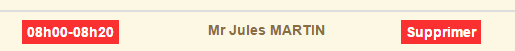
- líneas 19-20: muestran la franja horaria;
- líneas 25-28: el caso en que la franja horaria está libre. En ese caso, hay que mostrar el botón [Réserver];
- líneas 31-36: el caso en el que la franja horaria está ocupada. En ese caso, hay que mostrar tanto el cliente como el botón [Supprimer];
El otro método sobre el que ofrecemos más explicaciones es el método [getActionContext]. Se invoca al inicio de cada una de las acciones de [RdvMedecinsController]. Su firma es la siguiente:
protected ActionContext getActionContext(String lang, String origin, HttpServletRequest request,HttpServletResponse response, BindingResult result, RdvMedecinsCorsController rdvMedecinsCorsController)
Devuelve el siguiente tipo [ActionContext]:
public class ActionContext {
// data
private WebContext thymeleafContext;
private WebApplicationContext springContext;
private Locale locale;
private List<String> erreurs;
...
}
- línea 4: el contexto Thymeleaf de la acción;
- línea 5: el contexto Spring de la acción;
- línea 6: la configuración regional de la acción;
- línea 7: una posible lista de mensajes de error;
Sus parámetros son los siguientes:
- [lang]: el idioma solicitado para la acción, «en» o «fr»;
- [origin]: el encabezado HTTP [origin] en el caso de una llamada entre dominios;
- [request]: la solicitud HTTP en proceso de tramitación, lo que desde hace tiempo se denomina una acción;
- [response]: la respuesta que se va a dar a esta solicitud;
- [result]: cada acción de [RdvMedecinsController] recibe un valor enviado cuya validez se comprueba. [result] es el resultado de esta comprobación;
- [rdvMedecinsController]: el controlador contenedor de las acciones;
El método [getActionContext] se implementa de la siguiente manera:
// contexto de una acción
protected ActionContext getActionContext(String lang, String origin, HttpServletRequest request,HttpServletResponse response, BindingResult result, RdvMedecinsCorsController rdvMedecinsCorsController) {
// ¿idioma?
if (lang == null) {
lang = "fr";
}
// configuración regional
Locale locale = null;
if (lang.trim().toLowerCase().equals("fr")) {
// francés
locale = new Locale("fr", "FR");
} else {
// todo lo demás en inglés
locale = new Locale("en", "US");
}
// encabezados CORS
rdvMedecinsCorsController.sendOptions(origin, response);
// ActionContext
ActionContext actionContext = new ActionContext(new WebContext(request, response, request.getServletContext(),locale), WebApplicationContextUtils.getWebApplicationContext(request.getServletContext()), locale, null);
// errores de inicialización
RdvMedecinsException e = application.getRdvMedecinsException();
if (e != null) {
actionContext.setErreurs(e.getMessages());
return actionContext;
}
// ¿Errores de POST?
if (result != null && result.hasErrors()) {
actionContext.setErreurs(getErreursForModel(result, locale, actionContext.getSpringContext()));
return actionContext;
}
// sin errores
return actionContext;
}
- líneas 3-15: a partir del parámetro [lang], se establece la configuración regional de la acción;
- línea 17: se envían los encabezados HTTP necesarios para las solicitudes entre dominios. No entramos en detalles. La técnica utilizada es la del apartado 8.4.14;
- línea 19: construcción de un objeto [ActionContext] sin errores;
- línea 21: en el apartado 8.6.6.2 vimos que el singleton [ApplicationModel] accedía a la base de datos para recuperar tanto los clients como los médicos. Este acceso puede fallar. Entonces se registra la excepción que se produce. En la línea 21, recuperamos esta excepción;
- líneas 22-25: si se ha producido una excepción al iniciar la aplicación, no es posible realizar ninguna acción. Por lo tanto, para cualquier acción se devuelve un objeto [ActionContext] con los mensajes de error de la excepción;
- líneas 27-20: se analiza el parámetro [result] para saber si el valor enviado era válido o no. Si no lo era, se devuelve un objeto [ActionContext] con los mensajes de error correspondientes;
- línea 32: caso sin errores;
Ahora examinamos las acciones del controlador [RdvMedecinsController]
8.6.6.4. La acción [/getNavBarStart]
La acción [/getNavBarStart] devuelve la vista [navbar-start]. Su firma es la siguiente:
@RequestMapping(value = "/getNavbarStart", method = RequestMethod.POST)
@ResponseBody
public Reponse getNavbarStart(@Valid @RequestBody PostLang postLang, BindingResult result, HttpServletRequest request, HttpServletResponse response,
@RequestHeader(value = "Origin", required = false) String origin)
Devuelve el siguiente tipo [Reponse]:
public class Reponse {
// ----------------- propiedades
// estado de la operación
private int status;
// la barra de navigation
private String navbar;
// el jumbotron
private String jumbotron;
// el cuerpo de la página
private String content;
// el agenda
private String agenda;
...
}
y tiene los siguientes parámetros:
- [PostLang postlang]: el siguiente valor enviado:
public class PostLang {
// data
@NotNull
private String lang;
...
}
La clase [PostLang] es la clase principal de todos los valores publicados. De hecho, el cliente siempre debe especificar el idioma en el que se debe ejecutar la acción.
El método [getNavbarStart] se implementa de la siguiente manera:
// navbar-start
@RequestMapping(value = "/getNavbarStart", method = RequestMethod.POST)
@ResponseBody
public Reponse getNavbarStart(@Valid @RequestBody PostLang postLang, BindingResult result, HttpServletRequest request, HttpServletResponse response,
@RequestHeader(value = "Origin", required = false) String origin) {
// contextos de la acción
ActionContext actionContext = getActionContext(postLang.getLang(), origin, request, response, result,rdvMedecinsCorsController);
WebContext thymeleafContext = actionContext.getThymeleafContext();
// ¿errores?
List<String> erreurs = actionContext.getErreurs();
if (erreurs != null) {
return getViewErreurs(thymeleafContext, erreurs);
}
// se devuelve la vista [navbar-start]
Reponse reponse = new Reponse();
reponse.setStatus(1);
reponse.setNavbar(engine.process("navbar-start", thymeleafContext));
return reponse;
}
- línea 7: inicialización de la acción;
- líneas 10-13: si el método de inicialización de la acción ha detectado errores, se envían en la respuesta al cliente (línea 12) con el estado 2:
- líneas 15-18: se envía la vista [navbar-start] con el estado 1:
A continuación, solo detallamos las novedades.
8.6.6.5. La acción [/getNavbarRun]
La acción [/getNavBarRun] genera la vista [navbar-run]:
// navbar-run
@RequestMapping(value = "/getNavbarRun", method = RequestMethod.POST)
@ResponseBody
public Reponse getNavbarRun(@Valid @RequestBody PostLang postLang, BindingResult result, HttpServletRequest request,
HttpServletResponse response, @RequestHeader(value = "Origin", required = false) String origin) {
// contextos de la acción
ActionContext actionContext = getActionContext(postLang.getLang(), origin, request, response, result,rdvMedecinsCorsController);
WebContext thymeleafContext = actionContext.getThymeleafContext();
// ¿Errores?
List<String> erreurs = actionContext.getErreurs();
if (erreurs != null) {
return getViewErreurs(thymeleafContext, erreurs);
}
// se devuelve la vista [navbar-run]
Reponse reponse = new Reponse();
reponse.setStatus(1);
reponse.setNavbar(engine.process("navbar-run", thymeleafContext));
return reponse;
}
La acción puede generar dos tipos de respuesta:
- la respuesta con error (líneas 10-13):
- la respuesta con la vista [navbar-run]:
8.6.6.6. La acción [/getJumbotron]
La acción [/getJumbotron] devuelve la vista [jumbotron]:
// jumbotron
@RequestMapping(value = "/getJumbotron", method = RequestMethod.POST)
@ResponseBody
public Reponse getJumbotron(@Valid @RequestBody PostLang postLang, BindingResult result, HttpServletRequest request,
HttpServletResponse response, @RequestHeader(value = "Origin", required = false) String origin) {
// contextos de la acción
ActionContext actionContext = getActionContext(postLang.getLang(), origin, request, response, result,rdvMedecinsCorsController);
WebContext thymeleafContext = actionContext.getThymeleafContext();
// ¿Errores?
List<String> erreurs = actionContext.getErreurs();
if (erreurs != null) {
return getViewErreurs(thymeleafContext, erreurs);
}
// se devuelve la vista [jumbotron]
Reponse reponse = new Reponse();
reponse.setStatus(1);
reponse.setJumbotron(engine.process("jumbotron", thymeleafContext));
return reponse;
}
La acción puede generar dos tipos de respuesta:
- la respuesta con error (líneas 10-13):
- la respuesta con la vista [jumbotron]:
8.6.6.7. La acción [/getLogin]
La acción [/getLogin] devuelve la vista [login]:
@RequestMapping(value = "/getLogin", method = RequestMethod.POST)
@ResponseBody
public Reponse getLogin(@Valid @RequestBody PostLang postLang, BindingResult result, HttpServletRequest request,
HttpServletResponse response, @RequestHeader(value = "Origin", required = false) String origin) {
// contextos de la acción
ActionContext actionContext = getActionContext(postLang.getLang(), origin, request, response, result,rdvMedecinsCorsController);
WebContext thymeleafContext = actionContext.getThymeleafContext();
// errores?
List<String> erreurs = actionContext.getErreurs();
if (erreurs != null) {
return getViewErreurs(thymeleafContext, erreurs);
}
// se devuelve la vista [login]
Reponse reponse = new Reponse();
reponse.setStatus(1);
reponse.setJumbotron(engine.process("jumbotron", thymeleafContext));
reponse.setNavbar(engine.process("navbar-start", thymeleafContext));
reponse.setContent(getPartialViewLogin(thymeleafContext));
return reponse;
}
La acción puede generar dos tipos de respuesta:
- la respuesta con error (líneas 9-11):
- la respuesta con la vista [login]:
8.6.6.8. La acción [/getAccueil]
La acción [/getAccueil] devuelve la vista [accueil]. Su firma es la siguiente:
@RequestMapping(value = "/getAccueil", method = RequestMethod.POST)
@ResponseBody
public Reponse getAccueil(@Valid @RequestBody PostUser postUser, BindingResult result, HttpServletRequest request,HttpServletResponse response, @RequestHeader(value = "Origin", required = false) String origin)
- línea 3, el valor enviado es del tipo [PostUser], como se muestra a continuación:
public class PostUser extends PostLang {
// data
@NotNull
private User user;
...
}
- línea 1: la clase [PostUser] extiende la clase [PostLang] y, por lo tanto, incorpora un idioma;
- línea 4: el usuario que desea obtener la vista;
El código de implementación es el siguiente:
@RequestMapping(value = "/getAccueil", method = RequestMethod.POST)
@ResponseBody
public Reponse getAccueil(@Valid @RequestBody PostUser postUser, BindingResult result, HttpServletRequest request,
HttpServletResponse response, @RequestHeader(value = "Origin", required = false) String origin) {
// contextos de la acción
ActionContext actionContext = getActionContext(postUser.getLang(), origin, request, response, result,rdvMedecinsCorsController);
WebContext thymeleafContext = actionContext.getThymeleafContext();
// ¿Errores?
List<String> erreurs = actionContext.getErreurs();
if (erreurs != null) {
return getViewErreurs(thymeleafContext, erreurs);
}
// la vista [accueil] está protegida
try{
// usuario
User user = postUser.getUser();
// se verifican las credenciales [userName, password]
application.authenticate(user);
}catch(RdvMedecinsException e){
// se devuelve un error
return getViewErreurs(thymeleafContext, e.getMessages());
}
// se devuelve la vista [accueil]
Reponse reponse = new Reponse();
reponse.setStatus(1);
reponse.setContent(getPartialViewAccueil(thymeleafContext));
return reponse;
}
- líneas 15-22: cabe señalar que la página [accueil] está protegida y, por lo tanto, el usuario debe estar autenticado;
La acción puede devolver dos tipos de respuesta:
- la respuesta con error (líneas 11 y 21):
- la respuesta con la vista [accueil] (líneas 24-27):
8.6.6.9. La acción [/getNavbarRunJumbotronAccueil]
La acción [/getNavbarRunJumbotronAccueil] devuelve las vistas [navbar-run, jumbotron, accueil]. Tiene la siguiente firma:
@RequestMapping(value = "/getNavbarRunJumbotronAccueil", method = RequestMethod.POST, consumes = "application/json; charset=UTF-8")
@ResponseBody
public Reponse getNavbarRunJumbotronAccueil(@Valid @RequestBody PostUser post, BindingResult result, HttpServletRequest request, HttpServletResponse response,
@RequestHeader(value = "Origin", required = false) String origin)
- línea 3: el valor enviado es del tipo [PostUser];
La implementación de la acción es la siguiente:
// barra de navegación + jumbotron + inicio
@RequestMapping(value = "/getNavbarRunJumbotronAccueil", method = RequestMethod.POST, consumes = "application/json; charset=UTF-8")
@ResponseBody
public Reponse getNavbarRunJumbotronAccueil(@Valid @RequestBody PostUser postUser, BindingResult result, HttpServletRequest request, HttpServletResponse response,
@RequestHeader(value = "Origin", required = false) String origin) {
// contextos de la acción
ActionContext actionContext = getActionContext(postUser.getLang(), origin, request, response, result,
rdvMedecinsCorsController);
WebContext thymeleafContext = actionContext.getThymeleafContext();
// ¿errores?
List<String> erreurs = actionContext.getErreurs();
if (erreurs != null) {
return getViewErreurs(thymeleafContext, erreurs);
}
// la vista [accueil] está protegida
try {
// usuario
User user = postUser.getUser();
// se verifican las credenciales [userName, password]
application.authenticate(user);
} catch (RdvMedecinsException e) {
// se devuelve un error
return getViewErreurs(thymeleafContext, e.getMessages());
}
// se envía la respuesta
Reponse reponse = new Reponse();
reponse.setStatus(1);
reponse.setNavbar(engine.process("navbar-run", thymeleafContext));
reponse.setJumbotron(engine.process("jumbotron", thymeleafContext));
reponse.setContent(getPartialViewAccueil(thymeleafContext));
return reponse;
}
La acción puede devolver dos tipos de respuesta:
- la respuesta con error (líneas 13, 23):
- la respuesta con las vistas [navbar-run, jumbotron, accueil] (líneas 26-31):
8.6.6.10. La acción [/getAgenda]
La acción [/getAgenda] devuelve la vista [agenda]. Su firma es la siguiente:
@RequestMapping(value = "/getAgenda", method = RequestMethod.POST, consumes = "application/json; charset=UTF-8")
@ResponseBody
public Reponse getAgenda(@RequestBody @Valid PostGetAgenda postGetAgenda, BindingResult result, HttpServletRequest request, HttpServletResponse response,
@RequestHeader(value = "Origin", required = false) String origin)
- línea 3: el valor enviado es de tipo [PostGetAgenda], como se muestra a continuación:
public class PostGetAgenda extends PostUser {
// datos
@NotNull
private Long idMedecin;
@NotNull
@DateTimeFormat(pattern = "yyyy-MM-dd")
private Date jour;
...
}
- línea 1: la clase [PostGetAgenda] extiende la clase [PostUser] y, por lo tanto, incluye un idioma y un usuario;
- línea 5: el n.º del médico del que se desea el agenda;
- línea 8: el día del agenda deseado;
La implementación es la siguiente:
@RequestMapping(value = "/getAgenda", method = RequestMethod.POST, consumes = "application/json; charset=UTF-8")
@ResponseBody
public Reponse getAgenda(@RequestBody @Valid PostGetAgenda postGetAgenda, BindingResult result, HttpServletRequest request, HttpServletResponse response,
@RequestHeader(value = "Origin", required = false) String origin) {
// contextos de la acción
ActionContext actionContext = getActionContext(postGetAgenda.getLang(), origin, request, response, result, rdvMedecinsCorsController);
WebContext thymeleafContext = actionContext.getThymeleafContext();
WebApplicationContext springContext = actionContext.getSpringContext();
Locale locale = actionContext.getLocale();
// ¿errores?
List<String> erreurs = actionContext.getErreurs();
if (erreurs != null) {
return getViewErreurs(thymeleafContext, erreurs);
}
// se comprueba la validez de post
if (result != null) {
new PostGetAgendaValidator().validate(postGetAgenda, result);
if (result.hasErrors()) {
// se devuelve la vista [erreurs]
return getViewErreurs(thymeleafContext, getErreursForModel(result, locale, springContext));
}
}
...
}
- hasta la línea 14, tenemos un código ya clásico;
- líneas 16-21: se realiza una comprobación adicional del valor introducido. La fecha debe ser posterior o igual a la de hoy. Para verificarlo se utiliza un validador:
package rdvmedecins.web.validators;
import java.text.SimpleDateFormat;
import java.util.Date;
import org.springframework.validation.Errors;
import org.springframework.validation.Validator;
import rdvmedecins.springthymeleaf.server.requests.PostGetAgenda;
import rdvmedecins.springthymeleaf.server.requests.PostValiderRv;
public class PostGetAgendaValidator implements Validator {
public PostGetAgendaValidator() {
}
@Override
public boolean supports(Class<?> classe) {
return PostGetAgenda.class.equals(classe) || PostValiderRv.class.equals(classe);
}
@Override
public void validate(Object post, Errors errors) {
// el día elegido para la cita
Date jour = null;
if (post instanceof PostGetAgenda) {
jour = ((PostGetAgenda) post).getJour();
} else {
if (post instanceof PostValiderRv) {
jour = ((PostValiderRv) post).getJour();
}
}
// se transforman las fechas al formato aaaa-MM-dd
SimpleDateFormat sdf = new SimpleDateFormat("yyyy-MM-dd");
String strJour = sdf.format(jour);
String strToday = sdf.format(new Date());
// el día elegido no debe ser anterior a la fecha de hoy
if (strJour.compareTo(strToday) < 0) {
errors.rejectValue("jour", "todayandafter.postChoixMedecinJour", null, null);
}
}
}
- línea 19: el validador funciona para dos clases: [PostGetAgenda] y [PostValiderRv];
Volvamos al código de la acción [/getAgenda]:
@RequestMapping(value = "/getAgenda", method = RequestMethod.POST, consumes = "application/json; charset=UTF-8")
@ResponseBody
public Reponse getAgenda(@RequestBody @Valid PostGetAgenda postGetAgenda, BindingResult result, HttpServletRequest request, HttpServletResponse response,
@RequestHeader(value = "Origin", required = false) String origin) {
...
// acción
try {
// agenda del médico
AgendaMedecinJour agenda = application.getAgendaMedecinJour(postGetAgenda.getUser(), postGetAgenda.getIdMedecin(),
new SimpleDateFormat("yyyy-MM-dd").format(postGetAgenda.getJour()));
// respuesta
Reponse reponse = new Reponse();
reponse.setStatus(1);
reponse.setAgenda(getPartialViewAgenda(actionContext, agenda, locale));
return reponse;
} catch (RdvMedecinsException e1) {
// se devuelve la vista [erreurs]
return getViewErreurs(thymeleafContext, e1.getMessages());
} catch (Exception e2) {
// se devuelve la vista [erreurs]
return getViewErreurs(thymeleafContext, getErreursForException(e2));
}
}
- líneas 9-10: con los parámetros enviados, se solicita el agenda del médico;
- líneas 12-13: se devuelve el agenda:
- líneas 17, 21: se devuelve una respuesta con errores:
8.6.6.11. La acción [/getNavbarRunJumbotronAccueilAgenda]
La acción [/getNavbarRunJumbotronAccueilAgenda] genera las vistas [navbar-run, jumbotron, accueil, agenda]. Su implementación es la siguiente:
@RequestMapping(value = "/getNavbarRunJumbotronAccueilAgenda", method = RequestMethod.POST, consumes = "application/json; charset=UTF-8")
@ResponseBody
public Reponse getNavbarRunJumbotronAccueilAgenda(@Valid @RequestBody PostGetAgenda post, BindingResult result,
HttpServletRequest request, HttpServletResponse response,
@RequestHeader(value = "Origin", required = false) String origin) {
// contextos de la acción
ActionContext actionContext = getActionContext(post.getLang(), origin, request, response, result,rdvMedecinsCorsController);
WebContext thymeleafContext = actionContext.getThymeleafContext();
// ¿Errores?
List<String> erreurs = actionContext.getErreurs();
if (erreurs != null) {
return getViewErreurs(thymeleafContext, erreurs);
}
// agenda
Reponse agenda = getAgenda(post, result, request, response, null);
if (agenda.getStatus() != 1) {
return agenda;
}
// se envía la respuesta
Reponse reponse = new Reponse();
reponse.setStatus(1);
reponse.setNavbar(engine.process("navbar-run", thymeleafContext));
reponse.setJumbotron(engine.process("jumbotron", thymeleafContext));
reponse.setContent(getPartialViewAccueil(thymeleafContext));
reponse.setAgenda(agenda.getAgenda());
return reponse;
}
- líneas 15-18: se aprovecha la existencia de la acción [/getAgenda] para llamarla. A continuación, se comprueba el estado de la respuesta (línea 16). Si se detecta un error, no se continúa y se devuelve la respuesta;
- líneas 20: se envían las vistas solicitadas:
8.6.6.12. La acción [/supprimerRv]
La acción [/supprimerRv] permite eliminar una cita. Su firma es la siguiente:
@RequestMapping(value = "/supprimerRv", method = RequestMethod.POST, consumes = "application/json; charset=UTF-8")
@ResponseBody
public Reponse supprimerRv(@Valid @RequestBody PostSupprimerRv postSupprimerRv, BindingResult result, HttpServletRequest request, HttpServletResponse response,
@RequestHeader(value = "Origin", required = false) String origin)
- línea 3: el valor enviado es del tipo [PostSupprimerRv] siguiente:
public class PostSupprimerRv extends PostUser {
// data
@NotNull
private Long idRv;
..
}
- línea 1: la clase [PostSupprimerRv] amplía la clase [PostUser] y, por lo tanto, incluye un idioma y un usuario;
- línea 5: el n.º de la cita que se va a eliminar;
La implementación de la acción es la siguiente:
@RequestMapping(value = "/supprimerRv", method = RequestMethod.POST, consumes = "application/json; charset=UTF-8")
@ResponseBody
public Reponse supprimerRv(@Valid @RequestBody PostSupprimerRv postSupprimerRv, BindingResult result, HttpServletRequest request, HttpServletResponse response,
@RequestHeader(value = "Origin", required = false) String origin) {
// contextos de la acción
ActionContext actionContext = getActionContext(postSupprimerRv.getLang(), origin, request, response, result,
rdvMedecinsCorsController);
WebContext thymeleafContext = actionContext.getThymeleafContext();
Locale locale = actionContext.getLocale();
// ¿errores?
List<String> erreurs = actionContext.getErreurs();
if (erreurs != null) {
return getViewErreurs(thymeleafContext, erreurs);
}
// valores enviados
User user = postSupprimerRv.getUser();
long idRv = postSupprimerRv.getIdRv();
// se elimina la cita
AgendaMedecinJour agenda = null;
try {
// se recupera
Rv rv = application.getRvById(user, idRv);
Creneau creneau = application.getCreneauById(user, rv.getIdCreneau());
long idMedecin = creneau.getIdMedecin();
Date jour = rv.getJour();
// se elimina el rv asociado
application.supprimerRv(user, idRv);
// se regenera el agenda del médico
agenda = application.getAgendaMedecinJour(user, idMedecin, new SimpleDateFormat("yyyy-MM-dd").format(jour));
// se devuelve el nuevo agenda
Reponse reponse = new Reponse();
reponse.setStatus(1);
reponse.setAgenda(getPartialViewAgenda(actionContext, agenda, locale));
return reponse;
} catch (RdvMedecinsException ex) {
// se devuelve la vista [erreurs]
return getViewErreurs(thymeleafContext, ex.getMessages());
} catch (Exception e2) {
// se devuelve la vista [erreurs]
return getViewErreurs(thymeleafContext, getErreursForException(e2));
}
}
- línea 22: se recupera la cita que hay que eliminar. Si no existe, se produce una excepción;
- líneas 23-25: a partir de esta cita, se busca el médico y el día en cuestión. Esta información es necesaria para regenerar el agenda del médico;
- línea 27: se elimina la cita;
- línea 29: se solicita el nuevo agenda del médico. Esto es importante. Además de la franja horaria que acaba de quedar libre, otros usuarios de la aplicación han podido realizar modificaciones en el agenda. Es importante enviar al usuario el version más reciente de este;
- líneas 31-34: se devuelve el agenda:
8.6.6.13. La acción [/validerRv]
La acción [/validerRv] añade una cita en el agenda de un médico. Su firma es la siguiente:
@RequestMapping(value = "/validerRv", method = RequestMethod.POST, consumes = "application/json; charset=UTF-8")
@ResponseBody
public Reponse validerRv(@RequestBody PostValiderRv postValiderRv, BindingResult result, HttpServletRequest request, HttpServletResponse response, @RequestHeader(value = "Origin", required = false) String origin)
- línea 3: el valor enviado es del tipo [PostValiderRv] siguiente:
public class PostValiderRv extends PostUser {
// data
@NotNull
private Long idCreneau;
@NotNull
private Long idClient;
@NotNull
@DateTimeFormat(pattern = "yyyy-MM-dd")
private Date jour;
...
}
- línea 1: la clase [PostValiderRv] amplía la clase [PostUser] y, por lo tanto, incluye un idioma y un usuario;
- línea 5: el n.º de la franja horaria;
- línea 7: el n.º del cliente para el que se realiza la reserva;
- línea 10: el día de la cita;
La implementación de la acción es la siguiente:
// validación de una cita
@RequestMapping(value = "/validerRv", method = RequestMethod.POST, consumes = "application/json; charset=UTF-8")
@ResponseBody
public Reponse validerRv(@RequestBody PostValiderRv postValiderRv, BindingResult result, HttpServletRequest request, HttpServletResponse response, @RequestHeader(value = "Origin", required = false) String origin) {
// contextos de la acción
ActionContext actionContext = getActionContext(postValiderRv.getLang(), origin, request, response, result,rdvMedecinsCorsController);
WebApplicationContext springContext = actionContext.getSpringContext();
WebContext thymeleafContext = actionContext.getThymeleafContext();
Locale locale = actionContext.getLocale();
// ¿Errores?
List<String> erreurs = actionContext.getErreurs();
if (erreurs != null) {
return getViewErreurs(thymeleafContext, erreurs);
}
// se comprueba la validez del día de la cita
if (result != null) {
new PostGetAgendaValidator().validate(postValiderRv, result);
if (result.hasErrors()) {
// se devuelve la vista [erreurs]
return getViewErreurs(thymeleafContext, getErreursForModel(result, locale, springContext));
}
}
// valores publicados
User user = postValiderRv.getUser();
long idClient = postValiderRv.getIdClient();
long idCreneau = postValiderRv.getIdCreneau();
Date jour = postValiderRv.getJour();
// acción
try {
// se recupera información sobre la franja horaria
Creneau créneau = application.getCreneauById(user, idCreneau);
long idMedecin = créneau.getIdMedecin();
// se añade el Rv
application.ajouterRv(postValiderRv.getUser(), new SimpleDateFormat("yyyy-MM-dd").format(jour), idCreneau,idClient);
// se regenera el agenda
AgendaMedecinJour agenda = application.getAgendaMedecinJour(user, idMedecin,
new SimpleDateFormat("yyyy-MM-dd").format(jour));
// se devuelve el nuevo agenda
Reponse reponse = new Reponse();
reponse.setStatus(1);
reponse.setAgenda(getPartialViewAgenda(actionContext, agenda, locale));
return reponse;
} catch (RdvMedecinsException ex) {
// se devuelve la vista [erreurs]
return getViewErreurs(thymeleafContext, ex.getMessages());
} catch (Exception e2) {
// se devuelve la vista [erreurs]
return getViewErreurs(thymeleafContext, getErreursForException(e2));
}
}
}
El código es similar al de la acción [/supprimerRv].
8.6.7. Paso 4: pruebas del servidor Spring/Thymeleaf
Ahora vamos a probar las diferentes acciones anteriores con el complemento de Chrome [Advanced Rest Client] (véase el apartado 9.6).
8.6.7.1. Configuración de las pruebas
Todas las acciones esperan un valor enviado. Enviaremos variantes de la siguiente cadena jSON:
{"user":{"login":"admin","passwd":"admin"},"lang":"en","jour":"2015-01-22", "idMedecin":1, "idCreneau":2, "idClient":4, "idRv":93}
Este valor enviado incluye información superflua para la mayoría de las acciones. Sin embargo, las acciones que lo reciben lo ignoran y no provocan ningún error. Este valor enviado tiene la ventaja de abarcar los diferentes valores que se deben enviar.
8.6.7.2. La acción [/getNavbarStart]
 |
- en [1], la acción probada;
- en [2], el valor enviado;
- en [3], el valor publicado es una cadena jSON;
- en [4], se solicita la vista [navbar-start] en inglés;
El resultado obtenido es el siguiente:
 |
Hemos recibido la vista [navbar-start] en inglés (campos resaltados).
Ahora, cometamos un error. Ponemos el atributo [lang] del valor enviado a null. Recibimos el siguiente resultado:
 |
Hemos recibido una respuesta de error (estado 2) indicando que el campo [lang] era obligatorio.
8.6.7.3. La acción [/getNavbarRun]
Solicitamos la acción [getNavbarRun] con el siguiente valor enviado:
{"user":{"login":"admin","passwd":"admin"},"lang":"fr","jour":"2015-01-22", "idMedecin":1, "idCreneau":2, "idClient":4, "idRv":93}
El resultado obtenido es el siguiente:
 |
8.6.7.4. La acción [/getJumbotron]
Solicitamos la acción [getJumbotron] con el siguiente valor publicado:
{"user":{"login":"admin","passwd":"admin"},"lang":"en","jour":"2015-01-22", "idMedecin":1, "idCreneau":2, "idClient":4, "idRv":93}
El resultado obtenido es el siguiente:
 |
8.6.7.5. La acción [/getLogin]
Solicitamos la acción [getLogin] con el siguiente valor publicado:
{"user":{"login":"admin","passwd":"admin"},"lang":"en","jour":"2015-01-22", "idMedecin":1, "idCreneau":2, "idClient":4, "idRv":93}
El resultado obtenido es el siguiente:
 |
8.6.7.6. La acción [/getAccueil]
Solicitamos la acción [getAccueil] con el siguiente valor publicado:
{"user":{"login":"admin","passwd":"admin"},"lang":"fr","jour":"2015-01-22", "idMedecin":1, "idCreneau":2, "idClient":4, "idRv":93}
El resultado obtenido es el siguiente:
 |
Volvemos a intentarlo con un usuario desconocido:
{"user":{"login":"x","passwd":"x"},"lang":"fr","jour":"2015-01-22", "idMedecin":1, "idCreneau":2, "idClient":4, "idRv":93}
El resultado obtenido es el siguiente:
 |
Volvemos a empezar con un usuario existente pero sin autorización para utilizar la aplicación:
{"user":{"login":"user","passwd":"user"},"lang":"en","jour":"2015-01-22", "idMedecin":1, "idCreneau":2, "idClient":4, "idRv":93}
El resultado obtenido es el siguiente:
 |
8.6.7.7. La acción [/getAgenda]
Solicitamos la acción [getAgenda] con el siguiente valor enviado:
{"user":{"login":"admin","passwd":"admin"},"lang":"fr","jour":"2015-01-28", "idMedecin":1, "idCreneau":2, "idClient":4, "idRv":93}
El resultado obtenido es el siguiente:
 |
Volvemos a intentarlo con una fecha anterior a la de hoy:
 |
Volvemos a empezar con un médico que no existe:
{"user":{"login":"admin","passwd":"admin"},"lang":"fr","jour":"2015-01-28", "idMedecin":11, "idCreneau":2, "idClient":4, "idRv":93}
El resultado obtenido es el siguiente:
 |
8.6.7.8. La acción [/getNavbarRunJumbotronAccueil]
Solicitamos la acción [getNavbarRunJumbotronAccueil] con el siguiente valor enviado:
{"user":{"login":"admin","passwd":"admin"},"lang":"en","jour":"2015-01-28", "idMedecin":1, "idCreneau":2, "idClient":4, "idRv":93}
El resultado obtenido es el siguiente:
 |
Lo mismo ocurre con un usuario desconocido:
 |
8.6.7.9. La acción [/getNavbarRunJumbotronAccueilAgenda]
Solicitamos la acción [getNavbarRunJumbotronAccueilAgenda] con el siguiente valor enviado:
{"user":{"login":"admin","passwd":"admin"},"lang":"fr","jour":"2015-01-28", "idMedecin":1, "idCreneau":2, "idClient":4, "idRv":93}
El resultado obtenido es el siguiente:
 |
Introducimos un médico que no existe:
 |
8.6.7.10. La acción [/supprimerRv]
Solicitamos la acción [supprimerRv] con el siguiente valor enviado:
{"user":{"login":"admin","passwd":"admin"},"lang":"fr","jour":"2015-01-28", "idMedecin":1, "idCreneau":2, "idClient":4, "idRv":93}
El Rv del n.º 93 no existe. El resultado obtenido es el siguiente:
 |
Con una cita que existe:
 |
Se puede comprobar en la base de datos que la cita se ha eliminado correctamente. Se devuelve el nuevo agenda.
8.6.7.11. La acción [/validerRv]
Solicitamos la acción [validerRv] con el siguiente valor enviado:
{"user":{"login":"admin","passwd":"admin"},"lang":"fr","jour":"2015-01-28", "idMedecin":1, "idCreneau":2, "idClient":4, "idRv":93}
El resultado obtenido es el siguiente:
 |
Se puede comprobar en la base de datos que la cita se ha creado correctamente. Se ha devuelto el nuevo agenda.
Hacemos lo mismo con un número de franja horaria inexistente:
 |
Hacemos lo mismo con un número de cliente inexistente:
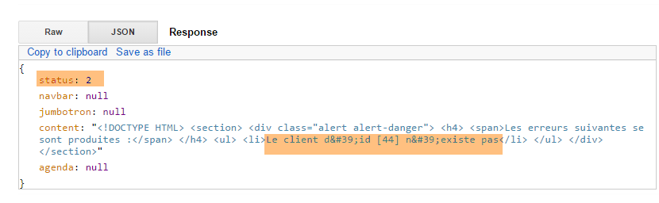 |
8.6.8. Paso 5: Escritura del cliente Javascript
Volvamos a la arquitectura del servidor [Web1]:
 |
El cliente [2] del servidor [Web1] es un cliente Javascript de tipo APU (aplicación de página única):
- el cliente solicita la página de inicio a un servidor web (no necesariamente [Web1]);
- solicita las páginas siguientes al servidor [Web1] mediante llamadas Ajax;
Para crear este cliente, utilizaremos la herramienta [Webstorm] (véase el apartado 9.8). Esta herramienta me ha parecido más práctica que STS. Su principal ventaja es que ofrece autocompletado al escribir el código, así como algunas opciones de refactorización. Esto evita numerosos errores.
8.6.8.1. El proyecto JS
El proyecto JS tiene la siguiente estructura:
 |
- en [1], el cliente JS en su conjunto. [boot.html] es la página de inicio. Será la única página que cargará el navegador;
- en [2], las hojas de estilo de los componentes de Bootstrap;
- en [3], las pocas imágenes utilizadas por la aplicación;
 |
- en [4], los scripts JS. Aquí es donde se centra nuestro trabajo;
- en [5], las bibliotecas JS utilizadas: principalmente jQuery, y las de los componentes Bootstrap;
8.6.8.2. La arquitectura del código
El código se ha dividido en tres capas:
 |
- la capa [présentation] reúne las funciones de inicialización de la página [boot.xml], así como las de los diversos componentes de Bootstrap. Está implementada por el archivo [ui.js];
- la capa [événements] agrupa todos los gestores de eventos de la capa [présentation]. Está implementada por el archivo [evts.js];
- la capa [DAO] realiza las solicitudes HTTP al servidor [Web1]. Está implementada por el archivo [dao.js];
8.6.8.3. La capa [présentation]
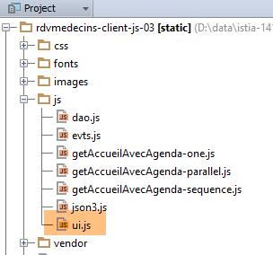 |
La capa [présentation] se implementa mediante el siguiente archivo [ui.js]:
//la capa [présentation]
var ui = {
// variables globales;
"agenda": "",
"resa": "",
"langue": "",
"urlService": "http://localhost:8081",
"page": "login",
"jourAgenda": "",
"idMedecin": "",
"user": {},
"login": {},
"exceptionTitle": {},
"calendar_infos": {},
"erreur": "",
"idCreneau": "",
"done": "",
// componentes de la vista
"body": "",
"navbar": "",
"jumbotron": "",
"content": "",
"exception": "",
"exception_text": "",
"exception_title": "",
"loading": ""
};
// la capa de eventos
var evts = {};
// la capa [dao]
var dao = {};
// ------------ documento listo
$(document).ready(function () {
// inicialización del documento
console.log("document.ready");
// componentes de la página
ui.navbar = $("#navbar");
ui.jumbotron = $("#jumbotron");
ui.content = $("#content");
ui.erreur = $("#erreur");
ui.exception = $("#exception");
ui.exception_text = $("#exception-text");
ui.exception_title = $("#exception-title");
// se guarda la página de inicio de sesión para poder recuperarla
ui.login.lang = ui.langue;
ui.login.navbar = ui.navbar.html();
ui.login.jumbotron = ui.jumbotron.html();
ui.login.content = ui.content.html();
// URL del servicio
$("#urlService").val(ui.urlService);
});
// ------------------------ funciones de inicialización de los componentes Bootstrap
ui.initNavBarStart = function () {
...
};
ui.initNavBarRun = function () {
...
};
ui.initChoixMedecinJour = function () {
...
};
ui.updateCalendar = function (renew) {
...
};
// muestra el día seleccionado
ui.displayJour = function () {
...
};
ui.initAgenda = function () {
...
};
ui.initResa = function () {
...
};
- Para aislar las capas entre sí, se ha decidido colocarlas en tres objetos:
- [ui] para la capa [présentation] (líneas 2-27),
- [evts] para la capa de gestión de eventos (línea 29),
- [dao] para la capa [DAO] (línea 31);
Esta separación de las capas en tres objetos permite evitar una serie de conflictos de nombres de variables y funciones. Cada capa utiliza variables y funciones prefijadas por el objeto que encapsula la capa.
- líneas 38-44: se almacenan los campos que estarán siempre presentes independientemente de las vistas mostradas. Esto evita realizar búsquedas jQuery repetitivas e innecesarias;
- líneas 46-49: se almacena localmente la página de inicio para poder recuperarla cuando el usuario se desconecta y no ha cambiado de idioma;
- líneas 54-83: funciones de inicialización de los componentes de Bootstrap. Todas ellas se han presentado en el análisis de los mismos en el apartado 8.6.4;
8.6.8.4. Las funciones de utilidad de la capa [événements]
 |
Los gestores de eventos se han colocado en el archivo [evts.js]. Los gestores de eventos utilizan varias funciones con regularidad. A continuación las presentamos:
// Inicio de la espera
evts.beginWaiting = function () {
// Inicio de espera
ui.loading = $("#loading");
ui.loading.show();
ui.exception.hide();
ui.erreur.hide();
evts.travailEnCours = true;
};
// fin de la espera
evts.stopWaiting = function () {
// fin de la espera
evts.travailEnCours = false;
ui.loading = $("#loading");
ui.loading.hide();
};
// visualización del resultado
evts.showResult = function (result) {
// se muestran los datos recibidos
var data = result.data;
// se analiza el estado
switch (result.status) {
case 1:
// ¿error?
if (data.status == 2) {
ui.erreur.html(data.content);
ui.erreur.show();
} else {
if (data.navbar) {
ui.navbar.html(data.navbar);
}
if (data.jumbotron) {
ui.jumbotron.html(data.jumbotron);
}
if (data.content) {
ui.content.html(data.content)
}
if (data.agenda) {
ui.agenda = $("#agenda");
ui.resa = $("#resa");
}
}
break;
case 2:
// visualización del error
evts.showException(data);
break;
}
};
// ------------ funciones diversas
evts.showException = function (data) {
// visualización de error
ui.exception.show();
ui.exception_text.html(data);
ui.exception_title.text(ui.exceptionTitle[ui.langue]);
};
- línea 2: se llama a la función [evts.beginwaiting] antes de cualquier acción asíncrona [DAO];
- líneas 4-5: se muestra la imagen animada de espera;
- líneas 6-7: se oculta el área de visualización de errores y excepciones (no son lo mismo);
- línea 8: se indica que hay una tarea asíncrona en curso;
- línea 12: se llama a la función [evts.stopwaiting] después de que una acción asíncrona [DAO] haya devuelto su resultado;
- línea 14: se indica que el trabajo asíncrono ha finalizado;
- líneas 15: se oculta la imagen animada de espera;
- línea 20: la función [evts.showResult] muestra el resultado [result] de una acción asíncrona [DAO]. El resultado es un objeto JS con el siguiente formato {'status':status,'data':data,'sendMeBack':sendMeBack}.
- líneas 47-50: se utilizan si [result.status==2]. Esto ocurre cuando el servidor [Web1] envía una respuesta con un encabezado HTTP de error (por ejemplo, 403 prohibido). En este caso, [data] es la cadena jSON enviada por el servidor para señalar el error;
- línea 25: caso en el que se ha recibido una respuesta válida del servidor [Web1]. El campo [data] contiene entonces la respuesta del servidor: {'status':status,'navbar':navbar,'jumbotron':jumbotron,'agenda':agenda,'content':content};
- línea 27: caso en el que el servidor [Web1] ha enviado una respuesta de error {'status':2,'navbar':null,'jumbotron':null,'agenda':null,'content':errores} ;
- líneas 28-29: se muestra la vista [erreurs];
- líneas 31-33: posible visualización de la barra de navigation;
- líneas 34-36: posible visualización del jumbotron;
- líneas 37-39: posible visualización del campo [data.content]. Representa, según el caso, una de las vistas [accueil, agenda];
- líneas 40-43: si se ha regenerado el agenda, se recuperan ciertas referencias de sus componentes para no tener que buscarlas cada vez que se necesiten;
- línea 54: la función [evts.showException] tiene como función mostrar el texto de la excepción contenida en su parámetro [data];
- líneas 57-58: se muestra el texto de la excepción;
- línea 58: el título de la excepción depende del idioma seleccionado;
El archivo [evts.js] contiene más de 300 líneas de código que no voy a comentar en su totalidad. Simplemente voy a tomar algunos ejemplos para mostrar la idea general de esta capa.
8.6.8.5. Inicio de sesión de un usuario

La conexión de un usuario se realiza mediante la siguiente función:
// ------------------------ conexión
evts.connecter = function () {
// se recuperan los valores que se van a enviar
var login = $("#login").val().trim();
var passwd = $("#passwd").val().trim();
// se establece el URL del servidor
ui.urlService = $("#urlService").val().trim();
dao.setUrlService(ui.urlService);
// parámetros de la solicitud
var post = {
"user": {
"login": login,
"passwd": passwd
},
"lang": ui.langue
};
var sendMeBack = {
"user": {
"login": login,
"passwd": passwd
},
"caller": evts.connecterDone
};
// se realiza la solicitud
evts.execute([{
"name": "accueil-sans-agenda",
"post": post,
"sendMeBack": sendMeBack
}]);
};
- líneas 4-5: se recuperan el nombre de usuario y la contraseña del usuario;
- líneas 7-8: se recupera el URL del servicio [Web1]. Se almacena tanto en la capa [ui] como en la capa [dao];
- líneas 10-16: el valor que se va a enviar: el idioma actual y el usuario que intenta conectarse;
- líneas 17-23: el objeto [sendMeBack] es un objeto que se pasa a la función [DAO], que va a ser llamada y que esta debe devolver a la función de la línea 22. Aquí, el objeto [sendMeBack] encapsula al usuario que intenta conectarse;
- líneas 25-29: la función [evts.execute] es capaz de ejecutar una secuencia de acciones asíncronas. Aquí se pasa una lista compuesta por una sola acción. Los campos de esta son los siguientes:
- [name]: el nombre de la acción asíncrona que se va a ejecutar;
- [post]: el valor que se debe enviar al servidor [Web1],
- [sendMeBack]: el valor que la acción asíncrona debe devolver con su resultado;
Antes de detallar la función [evts.execute], veamos la función [evts.connecterDone] de la línea 22. Es la función a la que la función asíncrona [DAO] llamada debe devolver su resultado:
evts.connecterDone = function (result) {
// visualización del resultado
evts.showResult(result);
// ¿Conexión establecida?
if (result.status == 1 && result.data.status == 1) {
// página
ui.page = "accueil-sans-agenda";
// se registra al usuario
ui.user = result.sendMeBack.user;
}
};
- línea 3: se muestra el resultado devuelto por el servidor [Web1];
- línea 5: si este resultado no contiene errores, se almacena el tipo de la nueva página (línea 7) y el usuario autenticado (línea 9);
La función [evts.execute] ejecuta una serie de acciones asíncronas:
// ejecución de una secuencia de acciones
evts.execute = function (actions) {
// ¿Trabajo en curso?
if (evts.travailEnCours) {
// no se está haciendo nada
return;
}
// espera
evts.beginWaiting();
// ejecución de las acciones
dao.doActions(actions, evts.stopWaiting);
};
- línea 2: el parámetro [actions] es una lista de acciones asíncronas que se deben ejecutar;
- líneas 4-7: la ejecución solo se acepta si no hay otra ya en curso;
- línea 9: se inicia la espera;
- línea 11: se solicita a la capa [DAO] que ejecute la secuencia de acciones. El segundo parámetro es el nombre de la función que se ejecutará cuando todas las acciones de la secuencia hayan devuelto su resultado;
No vamos a detallar ahora la función [dao.doActions]. Vamos a examinar otro evento.
8.6.8.6. Cambio de idioma

El cambio de idioma se lleva a cabo mediante la siguiente función:
// ------------------------ ¿cambio de idioma?
evts.setLang = function (lang) {
// ¿cambio de idioma?
if (lang == ui.langue) {
// no se hace nada
return;
}
// nuevo idioma
ui.langue = lang;
// ¿qué página hay que traducir?
switch (ui.page) {
case "login":
evts.getLogin();
break;
case "accueil-sans-agenda":
evts.getAccueilSansAgenda();
break;
case "accueil-avec-agenda":
evts.getAccueilAvecAgenda(ui);
break;
}
};
- línea 2: el parámetro [lang] es el nuevo idioma: «fr» o «en»;
- líneas 4-7: si el nuevo idioma es el actual, no se hace nada;
- línea 9: se memoriza el nuevo idioma;
- líneas 12-20: en caso de cambio de idioma, hay que regenerar la página que muestra actualmente el navegador. Hay tres páginas posibles:
- la denominada [login], donde la página mostrada es la de autenticación,
- la denominada [accueil-sans-agenda], que es la página mostrada justo después de una autenticación correcta,
- la denominada [accueil-avec-agenda], que es la página que se muestra tan pronto como se ha mostrado una primera agenda. A continuación, permanece visible de forma permanente hasta que el usuario se desconecta;
Vamos a tratar el caso de la página [accueil-avec-agenda]. Existen tres versiones de esta función:
 |
- la version [ getAccueilAvecAgenda-one] ejecuta una única acción asíncrona;
- la version y la [ getAccueilAvecAgenda-parallel] ejecutan cuatro acciones asíncronas en paralelo;
- version [ getAccueilAvecAgenda-sequence] ejecuta cuatro acciones asíncronas una tras otra;
8.6.8.7. La función [ getAccueilAvecAgenda-one]
Es la siguiente función:
// -------------------------- getAccueilAvecAgenda
evts.getAccueilAvecAgenda=function(ui) {
// parámetros de la solicitud
var post = {
"user": ui.user,
"lang": ui.langue,
"idMedecin": ui.idMedecin,
"jour": ui.jourAgenda
};
var sendMeBack = {
"caller": evts.getAccueilAvecAgendaDone
};
// solicitud
evts.execute([{
"name": "accueil-avec-agenda",
"post": post,
"sendMeBack": sendMeBack
}]);
};
- líneas 4-9: el valor a enviar encapsula el usuario conectado, el idioma deseado, el n.º del médico del que se quiere el agenda, el día del agenda deseado;
- líneas 10-12: el objeto [sendMeBack] es el objeto que se devolverá a la función de la línea 11. Aquí no contiene ninguna información;
- líneas 14-18: ejecución de una secuencia de una acción asíncrona, la denominada [accueil-avec-agenda] (línea 15);
- línea 11: la función que se ejecutará cuando la acción asíncrona [accueil-avec-agenda] haya devuelto su resultado;
La función [evts.getAccueilAvecAgendaDone] de la línea 11 muestra el resultado de la función asíncrona denominada [accueil-avec-agenda]:
evts.getAccueilAvecAgendaDone = function (result) {
// visualización del resultado
evts.showResult(result);
// ¿nueva página?
if (result.status == 1 && result.data.status == 1) {
ui.page = "accueil-avec-agenda";
}
};
- línea 1: [result] es el resultado de la función asíncrona denominada [accueil-avec-agenda];
- línea 3: se muestra este resultado;
- línea 5: si se trata de un resultado sin errores, se registra la nueva página (línea 6);
8.6.8.8. La función [ getAccueilAvecAgenda-parallel]
Es la siguiente función:
// -------------------------- getAccueilAvecAgenda
evts.getAccueilAvecAgenda=function(ui) {
// acciones [navbar-run, jumbotron, accueil, agenda] en //
// navbar-run
var navbarRun = {
"name": "navbar-run"
};
navbarRun.post = {
"lang": ui.langue
};
navbarRun.sendMeBack = {
"caller": evts.showResult
};
// jumbotron
var jumbotron = {
"name": "jumbotron"
};
jumbotron.post = {
"lang": ui.langue
};
jumbotron.sendMeBack = {
"caller": evts.showResult
};
// inicio
var accueil = {
"name": "accueil"
};
accueil.post = {
"lang": ui.langue,
"user": ui.user
};
accueil.sendMeBack = {
"caller": evts.showResult
};
// agenda
var agenda = {
"name": "agenda"
};
agenda.post = {
"user": ui.user,
"lang": ui.langue,
"idMedecin": ui.idMedecin,
"jour": ui.jourAgenda
};
agenda.sendMeBack = {
'idMedecin': ui.idMedecin,
'día': ui.díaAgenda,
"caller": evts.getAgendaDone
};
// ejecución de acciones en //
evts.execute([navbarRun, jumbotron, accueil, agenda])
};
- línea 51: esta vez se ejecutan cuatro acciones asíncronas. Se ejecutarán en paralelo;
- líneas 5-13: definición de la acción [navbarRun] que recupera la barra de navigation [navbar-run];
- línea 12: la función que se ejecutará cuando la acción asíncrona [navbarRun] haya devuelto su resultado;
- líneas 15-23: definición de la acción [jumbotron] que recupera la vista [jumbotron];
- línea 22: la función que se ejecutará cuando la acción asíncrona [jumbotron] haya devuelto su resultado;
- líneas 25-34: definición de la acción [accueil] que recupera la vista [accueil];
- línea 33: la función que se ejecutará cuando la acción asíncrona [accueil] haya devuelto su resultado;
- líneas 36-49: definición de la acción [agenda] que recupera la vista [jumbotron];
- línea 48: la función que se ejecutará cuando la acción asíncrona [agenda] haya devuelto su resultado;
8.6.8.9. La función [ getAccueilAvecAgenda-sequence]
Es la siguiente función:
// -------------------------- getAccueilAvecAgenda
evts.getAccueilAvecAgenda=function(ui) {
// acciones [navbar-run, jumbotron, accueil, agenda] en orden
// agenda
var agenda = {
"name" : "agenda"
};
agenda.post = {
"user" : ui.user,
"lang" : ui.langue,
"idMedecin" : ui.idMedecin,
"jour" : ui.jourAgenda
};
agenda.sendMeBack = {
'idMedecin' : ui.idMedecin,
'día: ui.díaAgenda,
"caller" : evts.getAgendaDone
};
// inicio
var accueil = {
"name" : "accueil"
};
accueil.post = {
"lang" : ui.langue,
"user" : ui.user
};
accueil.sendMeBack = {
"caller" : evts.showResult,
"next" : agenda
};
// jumbotron
var jumbotron = {
"name" : "jumbotron"
};
jumbotron.post = {
"lang" : ui.langue
};
jumbotron.sendMeBack = {
"caller" : evts.showResult,
"next" : accueil
};
// navbar-run
var navbarRun = {
"name" : "navbar-run"
};
navbarRun.post = {
"lang" : ui.langue
};
navbarRun.sendMeBack = {
"caller" : evts.showResult,
"next" : jumbotron
};
// ejecución de acciones en secuencia
evts.execute([ navbarRun ])
};
- línea 54: se ejecuta la acción [navbarRun]. Cuando termina, se pasa a la siguiente: [jumbotron], línea 51. A continuación, se ejecuta esta acción. Cuando termina, se pasa a la siguiente: [accueil], línea 40. Esta se ejecuta a su vez. Cuando termina, se pasa a la siguiente: [agenda], línea 29. Esta se ejecuta a su vez. Cuando termina, se detiene porque la acción [agenda] no tiene ninguna acción siguiente.
8.6.8.10. La capa [DAO]
 |
El archivo [dao.js] reúne todas las funciones de la capa [DAO]. Las presentaremos progresivamente:
// URL expuestas por el servidor
dao.urls = {
"login": "/getLogin",
"accueil": "/getAccueil",
"jumbotron": "/getJumbotron",
"agenda": "/getAgenda",
"supprimerRv": "/supprimerRv",
"validerRv": "/validerRv",
"navbar-start": "/getNavbarStart",
"navbar-run": "/getNavbarRun",
"accueil-sans-agenda": "/getNavbarRunJumbotronAccueil",
"accueil-avec-agenda": "/getNavbarRunJumbotronAccueilAgenda"
};
// --------------- interfaz
// url servidor
dao.setUrlService = function (urlService) {
dao.urlService = urlService;
};
- líneas 16-18: la función que permite fijar el URL del servicio [Web1];
- líneas 2-13: el diccionario que vincula el nombre de una acción asíncrona con el URL del servidor [Web1] al que se va a consultar;
// ------------------ gestión genérica de acciones
// ejecución de una secuencia de acciones asíncronas
dao.doActions = function (actions, done) {
// procesamiento de acciones
dao.actionsCount = actions.length;
dao.actionIndex = 0;
for (var i = 0; i < dao.actionsCount; i++) {
// solicitud asíncrona DAO
var deferred = $.Deferred();
deferred.done(dao.actionDone);
dao.doAction(deferred, actions[i], done);
}
};
- línea 3: la función [dao.doActions] ejecuta una secuencia de acciones asíncronas [actions]. El parámetro [done] es la función que se ejecutará cuando todas las acciones hayan devuelto su resultado;
- líneas 7-12: las acciones asíncronas se ejecutan en paralelo. Sin embargo, en caso de que una de ellas tenga una siguiente, esta se ejecuta al final de la acción que la precede;
- línea 9: el objeto [Deferred] se encuentra en el estado [pending];
- línea 10: cuando este objeto pase al estado [resolved], se ejecutará la función [dao.actionDone];
- línea 11: la acción n.º i de la lista se ejecuta de forma asíncrona. Se pasa como parámetro el parámetro [done] de la línea 3;
La función [dao.actionDone], que se ejecuta al final de cada acción asíncrona, es la siguiente:
// se ha recibido un resultado
dao.actionDone = function (result) {
// ¿llamar?
var sendMeBack = result.sendMeBack;
if (sendMeBack && sendMeBack.caller) {
sendMeBack.caller(result);
}
// ¿Siguiente?
if (sendMeBack && sendMeBack.next) {
// solicitud asíncrona DAO
var deferred = $.Deferred();
deferred.done(dao.actionDone);
dao.doAction(deferred, sendMeBack.next, sendMeBack.done);
}
// ¿terminado?
dao.actionIndex++;
if (dao.actionIndex == dao.actionsCount) {
// ¿hecho?
if (sendMeBack && sendMeBack.done) {
sendMeBack.done(result);
}
}
};
- línea 2: la función [dao.actionDone] recibe el resultado [result] de una de las acciones asíncronas de la lista de acciones a ejecutar;
- líneas 4-7: si la acción asíncrona finalizada había especificado una función a la que devolver el resultado, se llama a dicha función;
- líneas 9-14: si la acción asíncrona finalizada tiene una siguiente, entonces se ejecuta a su vez dicha acción;
- líneas 16: se ha completado una acción. Se incrementa el contador de acciones completadas. Una acción que tiene un número indeterminado de acciones siguientes cuenta como una acción;
- líneas 19-21: si inicialmente se había especificado una función [done] para que se ejecutara cuando todas las acciones de la secuencia hubieran devuelto su resultado, entonces esta función se ejecuta ahora;
El método [dao.doAction] ejecuta una acción asíncrona:
// ejecución de una acción
dao.doAction = function (deferred, action, done) {
// función «done» que se debe incluir en la acción
if (action.sendMeBack) {
action.sendMeBack.done = done;
} else {
action.sendMeBack = {
"done": done
};
}
// ejecución de la acción
dao.executePost(deferred, action.sendMeBack, dao.urls[action.name], action.post)
};
- líneas 4-10: como acabamos de ver, la función que va a procesar el resultado de la acción asíncrona que se va a ejecutar debe tener acceso a la función [done]. Para ello, se coloca esta última en el objeto [sendMeBack], objeto que formará parte del resultado de la operación asíncrona;
- línea 12: se ejecuta la función [dao.executePost], que realiza una llamada HTTP al servidor [Web1]. El objetivo URL es el URL asociado al nombre de la acción que se va a ejecutar;
La función [dao.executePost] ejecuta una llamada HTTP:
// solicitud HTTP
dao.executePost = function (deferred, sendMeBack, url, post) {
// se realiza una llamada Ajax manualmente
$.ajax({
headers: {
'Accept': 'application/json',
'Content-Type': 'application/json'
},
url: dao.urlService + url,
type: 'POST',
data: JSON3.stringify(post),
dataType: 'json',
success: function (data) {
// se devuelve el resultado
deferred.resolve({
"status": 1,
"data": data,
"sendMeBack": sendMeBack
});
},
error: function (jqXHR, textStatus, errorThrown) {
var data;
if (jqXHR.responseText) {
data = jqXHR.responseText;
} else {
data = textStatus;
}
// se muestra el error
deferred.resolve({
"status": 2,
"data": data,
"sendMeBack": sendMeBack
});
}
});
};
Ya hemos visto y comentado esta función. Cabe señalar simplemente en la línea 9 que el objetivo de URL es la concatenación de URL del servidor [Web1] con URL asociada al nombre de la acción.
8.6.8.11. La página de inicio
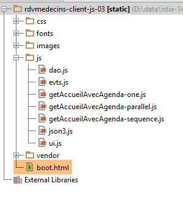 |

La página de inicio [boot.html] muestra la vista anterior. Es la única página que carga directamente el navegador. Las demás se obtienen mediante llamadas Ajax. Su código es el siguiente:
<!DOCTYPE HTML>
<html xmlns="http://www.w3.org/1999/xhtml" xmlns:th="http://www.thymeleaf.org"
xmlns:layout="http://www.ultraq.net.nz/thymeleaf/layout">
<head>
<meta name="viewport" content="width=device-width"/>
<meta http-equiv="Content-Type" content="text/html; charset=utf-8"/>
<title>RdvMedecins</title>
<!-- Bootstrap core CSS -->
<link rel="stylesheet" href="css/bootstrap-3.1.1-min.css"/>
<link rel="stylesheet" type="text/css" href="css/bootstrap-select.min.css"/>
<link rel="stylesheet" type="text/css" href="css/datepicker3.css"/>
<link rel="stylesheet" type="text/css" href="css/footable.core.min.css"/>
<!-- Estilos personalizados para esta plantilla -->
<link rel="stylesheet" type="text/css" href="css/rdvmedecins.css"/>
<!-- Núcleo de Bootstrap JavaScript ================================================== -->
<script type="text/javascript" src="vendor/jquery-2.1.1.min.js"></script>
<script type="text/javascript" src="vendor/bootstrap.js"></script>
<script type="text/javascript" src="vendor/bootstrap-select.js"></script>
<script type="text/javascript" src="vendor/moment-with-locales.js"></script>
<script type="text/javascript" src="vendor/bootstrap-datepicker.js"></script>
<script type="text/javascript" src="vendor/bootstrap-datepicker.fr.js"></script>
<script type="text/javascript" src="vendor/footable.js"></script>
<!-- scripts de usuario -->
<script type="text/javascript" src="js/json3.js"></script>
<script type="text/javascript" src="js/ui.js"></script>
<script type="text/javascript" src="js/evts.js"></script>
<script type="text/javascript" src="js/getAccueilAvecAgenda-sequence.js"></script>
<script type="text/javascript" src="js/dao.js"></script>
</head>
<body id="body">
<div id="navbar">
<div class="navbar navbar-inverse navbar-fixed-top" role="navigation">
<div class="container">
<div class="navbar-header">
<button type="button" class="navbar-toggle" data-toggle="collapse" data-target=".navbar-collapse">
<span class="sr-only">Toggle navigation</span> <span class="icon-bar"></span> <span class="icon-bar"></span>
<span class="icon-bar"></span>
</button>
<a class="navbar-brand" href="#">RdvMedecins</a>
</div>
<div class="navbar-collapse collapse">
<img id="loading" src="images/loading.gif" alt="waiting..." style="display: none"/>
<!-- Formulario de identificación -->
<div class="navbar-form navbar-right" role="form" id="formulaire">
<div class="form-group">
<input type="text" placeholder="URL du serveur" class="form-control" id="urlService"/>
</div>
<div class="form-group">
<input type="text" placeholder="Utilisateur" class="form-control" id="login"/>
</div>
<div class="form-group">
<input type="password" placeholder="Mot de passe" class="form-control" id="passwd"/>
</div>
<button type="button" class="btn btn-success" onclick="javascript:evts.connecter()">Connexion</button>
<!-- Idiomas -->
<div class="btn-group">
<button type="button" class="btn btn-danger">Langue</button>
<button type="button" class="btn btn-danger dropdown-toggle" data-toggle="dropdown">
<span class="caret"></span> <span class="sr-only">Toggle Dropdown</span>
</button>
<ul class="dropdown-menu" role="menu">
<li><a href="javascript:evts.setLang('fr')">Français</a></li>
<li><a href="javascript:evts.setLang('en')">English</a></li>
</ul>
</div>
</div>
</div>
</div>
</div>
</div>
<div class="container">
<!-- Jumbotron de Bootstrap -->
<div id="jumbotron">
<div class="jumbotron">
<div class="row">
<div class="col-md-2">
<img src="images/caduceus.jpg" alt="RvMedecins"/>
</div>
<div class="col-md-10">
<h1>
Cabinet médical<br/>Les Médecins associés
</h1>
</div>
</div>
</div>
</div>
<!-- mensajes de error -->
<div id="erreur"></div>
<div id="exception" class="alert alert-danger" style="display: none">
<h3 id="exception-title"></h3>
<span id="exception-text"></span>
</div>
<!-- contenido -->
<div id="content">
<div class="alert alert-info">Authentifiez-vous pour accéder à l'application</div>
</div>
</div>
<!-- página de inicio -->
<script>
// inicializando la página
ui.langue = 'fr';
ui.exceptionTitle['fr'] = "L'erreur suivante s'est produite côté serveur :";
ui.exceptionTitle['en'] = "The following server error was met:";
ui.initNavBarStart();
</script>
</body>
</html>
- Ya hemos visto este tipo de página en el capítulo sobre Bootstrap (apartado 8.6.4);
- líneas 99-105: inicialización de ciertos elementos de la capa [présentation];
- línea 27, se utiliza el script [getAccueilAvecAgenda-sequence.js]. Al cambiar el script de esta línea, se obtienen tres comportamientos diferentes para obtener la página [accueil-avec-agenda]:
- [getAccueilAvecAgenda-one.js] obtiene la página con una sola llamada a HTTP,
- [getAccueilAvecAgenda-parallel.js] obtiene la página con cuatro llamadas simultáneas a HTTP,
- [getAccueilAvecAgenda-sequence.js] obtiene la página con cuatro llamadas sucesivas a HTTP;
8.6.8.12. Pruebas
Hay diferentes formas de realizar las pruebas. Aquí utilizaremos la herramienta [Webstorm]:
 |
- en [1] se abre un proyecto. Simplemente se indica la carpeta [2] que contiene el árbol estático (HTML, CSS, JS) del sitio que se va a probar;
 |
- en [3], el sitio estático;
- en [4-5], se carga la página [boot.html];
 |
- en [5], se ve que un servidor integrado por [Webstorm] ha entregado la página [boot.html] desde el puerto [63342]. Es importante comprender esto, ya que significa que los scripts de la página [boot.html] realizarán llamadas entre dominios al servidor [Web1], que a su vez opera en [localhost:8081]. El navegador que ha cargado [boot.html] sabe que la ha cargado desde [localhost:63342]. Por lo tanto, no aceptará que esta página realice llamadas al sitio [localhost:8081] porque no es el mismo puerto. Por lo tanto, implementará las llamadas entre dominios descritas en el apartado 8.4.14. Por este motivo, es necesario que la aplicación [Web1] esté configurada para aceptar estas llamadas entre dominios. Esto se decide en el archivo [AppConfig] del servidor Spring / Thymeleaf:
 |
@EnableAutoConfiguration
@ComponentScan(basePackages = { "rdvmedecins.springthymeleaf.server" })
@Import({ WebConfig.class, DaoConfig.class })
public class AppConfig {
// admin / admin
private final String USER_INIT = "admin";
private final String MDP_USER_INIT = "admin";
// raíz del servicio web / json
private final String WEBJSON_ROOT = "http://localhost:8080";
// tiempo de espera en milisegundos
private final int TIMEOUT = 5000;
// CORS
private final boolean CORS_ALLOWED=true;
...
Dejamos que el lector realice las pruebas del cliente JS. Debe ser capaz de reproducir las funcionalidades descritas en el apartado 8.6.3.
Una vez que el cliente JS se ha declarado correcto, se puede implementar en la carpeta del servidor [Web1] para evitar tener que autorizar las solicitudes entre dominios:
 |
Arriba, hemos copiado el sitio web probado en la carpeta [src / main / resources / static]. A continuación, podemos solicitar el URL [http://localhost:8081/boot.html]:

Ahora ya no necesitamos las solicitudes entre dominios y podemos escribir en el archivo de configuración [AppConfig] del servidor [Web1]:
// CORS
private final boolean CORS_ALLOWED=false;
La aplicación anterior seguirá funcionando. Si volvemos a la aplicación [Webstorm], ya no funciona:


Si vamos a la consola de desarrollo (Ctrl-Mayús-I), vemos la causa del error:
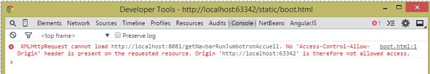
Se trata de un error de solicitud entre dominios no autorizada.
8.6.8.13. Conclusión
Hemos creado la siguiente arquitectura JS:
 |
- las capas están bastante bien separadas;
- tenemos una aplicación de tipo APU (aplicación de página única). Es esta característica la que ahora nos permitirá generar una aplicación nativa para diversos dispositivos móviles (Android, IoS, Windows Phone);
- hemos creado un modelo capaz de ejecutar acciones asíncronas en paralelo, en secuencia o una combinación de ambas;
8.6.9. paso 6: generación de una aplicación nativa para Android
La herramienta [Phonegap] [http://phonegap.com/] permite generar un ejecutable para dispositivos móviles (Android, IoS, Windows 8, ...) a partir de una aplicación HTML / JS / CSS. Hay diferentes formas de lograr este objetivo. Utilizamos la más sencilla: una herramienta disponible en línea en la página web de Phonegap [http://build.phonegap.com/apps]. Esta herramienta subirá el archivo zip del sitio web estático que se va a convertir. La página de inicio debe llamarse [index.html]. Por lo tanto, renombramos la página [boot.html] como [index.html]:
 |
luego comprimimos la carpeta, en este caso [rdvmedecins-client-js-03]. A continuación, vamos al sitio web de Phonegap [http://build.phonegap.com/apps]:
 |
- antes de [1], es posible que tengas que crear una cuenta;
- en [1], empezamos;
- en [2], elegimos un plan gratuito que solo permite una aplicación Phonegap;
 |
- en [3], descargamos la aplicación comprimida [4];
 |
- en [5], se le da un nombre a la aplicación;
- en [6], se compila. Esta operación puede tardar 1 minuto. Espere hasta que los iconos de las diferentes plataformas móviles indiquen que la compilación ha finalizado;
 |
- solo se han generado los binarios de Android [7] y Windows [8];
- haga clic en [7] para descargar el binario de Android;
 |
- en [9], el binario [apk] descargado;
Inicie un emulador [GenyMotion] para una tableta Android (véase el apartado 9.9):
 |
Arriba, se inicia un emulador de tableta con Android API 19. Una vez iniciado el emulador,
- desbloquéelo deslizando el pestillo (si lo hay) hacia un lado y soltándolo;
- con el ratón, arrastre el archivo [PGBuildApp-debug.apk] que ha descargado y suéltelo en el emulador. Se instalará y ejecutará;
 |
Hay que cambiar URL por [1]. Para ello, en una ventana de comandos, escribe el comando [ipconfig] (línea 1 a continuación), que mostrará las diferentes direcciones IP de tu equipo:
C:\Users\Serge Tahé>ipconfig
Configuration IP de Windows
Carte réseau sans fil Connexion au réseau local* 15 :
Statut du média. . . . . . . . . . . . : Média déconnecté
Suffixe DNS propre à la connexion. . . :
Carte Ethernet Connexion au réseau local :
Suffixe DNS propre à la connexion. . . : ad.univ-angers.fr
Adresse IPv6 de liaison locale. . . . .: fe80::698b:455a:925:6b13%4
Adresse IPv4. . . . . . . . . . . . . .: 172.19.81.34
Masque de sous-réseau. . . . . . . . . : 255.255.0.0
Passerelle par défaut. . . . . . . . . : 172.19.0.254
Carte réseau sans fil Wi-Fi :
Statut du média. . . . . . . . . . . . : Média déconnecté
Suffixe DNS propre à la connexion. . . :
...
Anote bien la dirección IP de la red Wi-Fi (líneas 6-9), bien la dirección IP de la red local (líneas 11-17). A continuación, utilice esta dirección IP en el URL del servidor web:
 |
Una vez hecho esto, conéctese al servicio web:
 |
Pruebe la aplicación en el emulador. Debería funcionar. En el lado del servidor, se pueden autorizar o no los encabezados CORS en la clase [ApplicationModel]:
// CORS
private final boolean CORS_ALLOWED=false;
Esto no tiene importancia para la aplicación de Android. Esta no se ejecuta en un navegador. Sin embargo, el requisito de los encabezados CORS proviene del navegador y no del servidor.
8.6.10. Conclusión del caso práctico
Hemos desarrollado la siguiente arquitectura:
 |
Se trata de una arquitectura de tres capas compleja. Su objetivo era reutilizar la capa [Web2], que era la capa de servidor de la aplicación [AngularJS-Spring MVC] del documento [Tutoriel AngularJS / Spring 4] en elURL y [http://tahe.developpez.com/angularjs-spring4/]. Es únicamente por esta razón por la que tenemos una arquitectura de tres capas. Mientras que en la aplicación [AngularJS-Spring MVC], el cliente de [Web2] era un cliente de [AngularJS], aquí el cliente de [Web2] es una arquitectura de dos capas [jQuery] / [Spring MVC / Thymeleaf]. Hemos aumentado las capas, por lo que perderemos rendimiento.
La aplicación que se analiza aquí se ha desarrollado a lo largo del tiempo en tres documentos diferentes:
- [Introduction aux frameworks JSF2, Primefaces et Primefaces mobile], URL y [http://tahe.developpez.com/java/primefaces/]. El caso práctico se desarrolló entonces con los frameworks JSF2 / Primefaces. Primefaces es una biblioteca de componentes ajaxificados que evita tener que escribir javascript. La aplicación desarrollada entonces era menos compleja que la que se estudia aquí. Contaba con una página web clásica para ordenador y una versión móvil para teléfonos;
- [Tutoriel AngularJS / Spring 4] a la URL [http://tahe.developpez.com/angularjs-spring4/]. La aplicación desarrollada entonces tenía las mismas características que la que se estudia en este documento. La aplicación también se había adaptado a Android;
- el presente documento;
De este trabajo, destaco los siguientes puntos:
- la aplicación [Primefaces] fue, con diferencia, la más sencilla de escribir y su versión web móvil version resultó ser muy eficaz. No requiere conocimientos de Javascript. No es posible portarla de forma nativa a los OS de los distintos móviles, pero ¿es necesario? Parece difícil cambiar el estilo de la aplicación. De hecho, se trabaja con las hojas de estilo de Primefaces. Esto puede ser un inconveniente;
- la aplicación [AngularJS-Spring MVC] fue compleja de escribir. El marco [AngularJS] me pareció bastante difícil de comprender cuando se quiere dominarlo. La arquitectura [client Angular] / [service web / jSON implémenté par Spring MVC] es especialmente limpia y eficiente. Esta arquitectura es reproducible para cualquier aplicación web. Es la arquitectura que me parece más prometedora, ya que pone en juego competencias diferentes tanto en el lado del cliente como en el del servidor (JS+HTML+CSS en el lado del cliente, Java u otro lenguaje en el lado del servidor), lo que permite desarrollar el cliente y el servidor en paralelo;
- En el caso de la aplicación desarrollada en este documento con una arquitectura de tres capas [client jQuery] / [serveur Web1 / Spring MVC / Thymeleaf] / [serveur Web2 / Spring MVC], es posible que algunos consideren que la tecnología [jQuery+Spring MVC+Thymelaf] es más fácil de entender que la de [AngularJS]. La capa [DAO] del cliente Javascript que hemos escrito se puede reutilizar en otras aplicaciones;